岩波文庫に収めた北越雪譜は
不図も読書子の称賛を得て、昨年三月には第二刷を発行し、
茲にまた第三刷を発行するに至つたのは校訂子の欣喜に堪へないところである。第二刷のときも、註解に若干の増補を為したが、今回は本書の完璧を期する為めに、書中の挿画全部を天保の初版によつてやり直した、雪譜初版刊行の年月に就ては、判然としない点がある、岩波文庫版の解説には、初篇の一を天保六年としたのは、京山の序文の年号をとつたのであり、初篇の三の発行の年月を天保七年としたのは奥附によつたものである、勿論初篇の一が天保六年に出版されたと云ふ確証はないが、とも角も天保六年か七年の頃に世に出たものと思ふ、これは
偏に識者の高教を待つ。
［＃改丁］
世之農商而嗜
ム二文雅
ヲ一者、或不
レ知所
三以
ヲ文雅
ノ為
ル二文雅
一、徒
ラニ企
二羨
シ韻士墨客之風標
ヲ一、沈
二酣
シ文酒
ニ一、流
二連
シ花月
ニ一、而置
テ二生計於不問
ニ一、以傾
ル二産業
ヲ一者、
間亦有
レ之、是豈嗜
ムノ二文雅
ヲ一罪
ラン哉、其人特自
ラ取
ルレ之
ヲ耳
ノミ矣、鈴木牧之翁者北越塩沢之老農也、性嗜
ミ二文雅
ヲ一、而能尚
ヒ二節倹
ヲ一抑
エ二驕惰
ヲ一、不
レ絶
二誦読
ヲ於経営之中
ニ一、而務
ム二鉛槧
ヲ於会計之余
ニ一、以交
ル二遠近之墨客
ニ一、嘗
テ以
二堪忍之二字
ヲ一銘
シテ自
ラ守
ル、以
レ故
ヲ其名久
布二遠邑
ニ一、而生業
モ亦因
テ以
テ致
ス二豊饒
ヲ一矣、嗚呼若
レ翁者不
シテレ徇
カハ二文雅之名
ニ一而能務
ムル二其実
ヲ一者、非
ラズ耶、余於
レ翁
ヲ得
タリ二一面識
ヲ於江戸
ニ一、而後特以
レ書訂
スルレ交
ヲ者有
リレ年
レ于
此、今茲乙未、遠
ク寄
二示
シテ其所
ノレ著北越雪譜
ナル者六巻
ヲ一、併
テ嘱
スルニ以
スレ校訂
ヲ、時方
ニ盛夏炎威如
レ燬、乃
チ就
テ二北※
［＃「窗−穴かんむり」、U+56F1、11-8］下
ニ一試
ニ繙而閲
レバレ之、則越雪恍
トシテ如
シ下耳
ニ聞
二騒屑之声
ヲ一、目
ニ見
ルガ上二紛霏之影
ヲ一、使
メ三レ人頓
ニ忘
レ二甑中之苦
ヲ一、読
テ到
レバ二積畳埋
レ屋行旅不
レ通人以窮乏柴米或不
ルニ一レ給
セ、則※
［＃「冫＋亶」、U+20610、11-9］然寒顫
シ肌膚為
レ之粟生
セリ矣、余因
テ以謂、

袴軽薄子弟、当
テ二微雪俄
ニ下
リ紛々舞
レ空之際
ニ一、彫鞍宝勒飛
シ二玉塵
ヲ於郊
 ニ一
ニ一或
ハ氈帽棕鞋蹈
ミ二瓊瑤
ヲ於街衢
ニ一或画舸載
セレ妓
ヲ或高楼呼
ビレ酒
ヲ直
ニ以為
シ二勝遊楽事
ト一、曾不
レ知
三飢寒為
ルヲ二何物
一、若
シ令
バ三レ其人
ヲ読
マ二此書
ヲ一、依
テ以想
ン二其種々凍餒之苦状
ヲ一乎、然則安
ンカ知
ンレ不
ルコトレ有
下能省
三悟
シテ非
ルコトヲ二宴安之公共
ニ一、而戚々焉生
ズル上二戒懼之心
ヲ一者哉、寧梓而行
ハレ之其有
ン三裨
二益世教
ニ一盖非
二鮮小
ニ一也、
間者稍得
テ二秋涼
ヲ一、聊削
リ二其駁雑
ヲ一、校訂方
ニ畢
ル者
ノ三巻、書賈文渓堂見而喜
レ之謀
ル二梓行
セント之
ヲ一、余寄
テレ簡
ヲ以告
レ翁、々曰※
［＃「雨かんむり／彗」、U+4A2E、12-1］中閉戸
ノ漫筆、豈敢
テ欲
ンレ梓
耶、於
レ是乎、不
二復俟
一レ請
二之
ヲ於翁
ニ一挙
テ以付
スレ之、翁之嗜
テ二文雅
ヲ一而能務
ル二其実
一、此必笑
テ頷
ンレ之而已、翁之稿本国字之間漢字者、嘗不
レ添
へ二音訓之
仮名ヲ一、余今尽
ク添
テレ之以
テ便
スト二童蒙
ニ一、云
フハレ爾
カ天保六年乙未秋園菊開日
江戸 京山人百樹并書
［＃改ページ］
此書の稿本図は別冊とし、或は其説に大図を描して添たるもあり、皆牧之翁が自筆の草画也。此挙梓行の為にせざれば図に洪繊重復あり、今梓に臨て其図の過半を省き、目を新にするものを存して巻中に夾刺するは単冊に尽し難を以て也。※
［＃「其＋りっとう」、U+5258、13-3］は是刪定の意に係る所也。余嘗て原図を閲するに、雪中の諸状混錯を走墨に失して通暁し難きもの靴中の瘡痒これを何如せん、唯翁が草図に傚ひて真に描せる而已。或原図の梓に入るものは則これを加ふ、或は説有て図無きもの其説に拠て其図を作りしもあり。盖余未だ越地を踏ず、越雪の真景に於て茫然たり、故に雪図に於て違漏あるも知るべからず、其誤を編者に駆ること勿れ。
京山男少年
乙未秋 京水百鶴 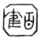
［＃改ページ］
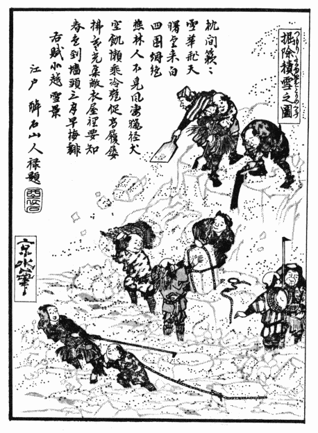
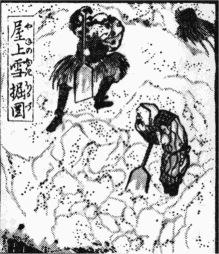

 ［＃改丁］
［＃改丁］
越後塩沢 鈴木牧之 編撰
江戸 京山人百樹 刪定
凡天より
形を
為して
下す
物○
雨○
雪○
霰○
霙○
雹なり。
露は
地気の
粒珠する
所、
霜は地気の
凝結する所、
冷気の
強弱によりて
其形を
異にするのみ。地気天に
上騰形を
為て雨○雪○
霰○
霙○
雹となれども、
温気をうくれば水となる。水は地の
全体なれば
元の地に
皈なり。
地中深ければかならず
温気あり、
地温なるを
得て
気を
吐、天に
向て
上騰事人の
気息のごとく、
昼夜片時も
絶る事なし。天も又気を
吐て地に
下す、
是天地の
呼吸なり。人の
呼と
吸とのごとし。天地
呼吸して
万物を
生育也。天地の
呼吸常を
失ふ時は
暑寒時に
応ぜず、大風大雨
其余さま／″＼の天
変あるは天地の
病る也。天に九ツの
段あり、これを
九天といふ。
九段の内
最地に
近き所を
太陰天といふ。
（地を去る事高さ四十八万二千五百里といふ）太陰天と地との
間に三ツの
際あり、天に
近を
熱際といひ、中を
冷際といひ、地に
近を
温際といふ。地気は
冷際を
限りとして
熱際に
至らず、
冷温の二
段は地を
去る事甚だ
遠からず。富士山は
温際を
越て
冷際にちかきゆゑ、
絶頂は
温気通ぜざるゆゑ
艸木を
生ぜず。夏も
寒く
雷鳴暴雨を
温際の下に見る。
（雷と夕立はをんさいのからくり也）雲は
地中の
温気より
生ずる物ゆゑに其
起る
形は
湯気のごとし、水を
沸て
湯気の
起と同じ事也。
雲温なる気を以て天に
升り、かの
冷際にいたれば
温なる
気消て雨となる、
湯気の
冷て
露となるが
如し。
（冷際にいたらざれば雲散じて雨をなさず）さて
雨露の
粒珠は天地の気中に
在るを以て也。艸木の
実の
円をうしなはざるも気中に
生ずるゆゑ也。雲
冷際にいたりて雨とならんとする時、
天寒甚しき時は
雨氷の
粒となりて
降り
下る。天寒の
強と
弱とによりて
粒珠の大小を
為す、
是を
霰とし
霙とす。
（雹は夏ありその弁こゝにりやくす）地の
寒強き時は
地気形をなさずして天に
升る
微温湯気のごとし。天の
曇は是也。地気
上騰こと多ければ
天灰色をなして雪ならんとす。
曇たる
雲冷際に
到り
先雨となる。此時冷際の寒気雨を
氷すべき
力たらざるゆゑ
花粉を
為して
下す、
是雪也。
地寒のよわきとつよきとによりて
氷の
厚と
薄との
如し。天に
温冷熱の三
際あるは、人の
肌は
温に
肉は
冷か
臓腑は
熱すると
同じ
道理也。
気中万物の
生育悉く天地の
気格に
随ふゆゑ也。
是余が
発明にあらず
諸書に
散見したる
古人の
説也。
凡物を
視るに
眼力の
限りありて
其外を視るべからず。されば人の
肉眼を以雪をみれば
一片の
鵞毛のごとくなれども、
数十百
片の
雪花を
併合て一
片の鵞毛を
為也。是を
験微鏡に
照し
視れば、
天造の細工したる雪の
形状奇々妙々なる事下に
図するが
如し。
其形の
斉からざるは、かの
冷際に於て雪となる時冷際の
気運ひとしからざるゆゑ、雪の
形気に
応じて
同じからざる也。しかれども
肉眼のおよばざる
至微物ゆゑ、
昨日の
雪も
今日の雪も一
望の
白糢糊を
為のみ。下の
図は天保三年
許鹿君＊１の
高撰雪花図説に
在る
所、
雪花五十五
品の内を
謄写にす。
雪六出を
為。 御
説に
曰「
凡物方体は
（四角なるをいふ）必八を以て一を
囲み
円体は
（丸をいふ）六を以て一を
囲む
定理中の
定数誣べからず」云々。雪を
六の
花といふ事 御
説を以しるべし。
愚按に
円は天の正
象、
方は地の
実位也。天地の気中に
活動する万物
悉く
方円の
形を
失はず、その一を以いふべし、人の
体方にして
方ならず、
円くして円からず。是天地
方円の
間に
生育ゆゑに、天地の
象をはなれざる事子の親に
似るに相同じ。雪の
六出する
所以は、
物の
員長数は
陰半数は
陽也。人の
体男は
陽なるゆゑ
九出し
（●頭●両耳●鼻●両手●両足●男根）女は十
出す。
（男根なく両乳あり）九は
半の
陽十は長の
陰也。しかれども陰陽和合して人を
為ゆゑ、男に無用の
両乳ありて女の陰にかたどり、女に
不要の
陰舌ありて男にかたどる。気中に
活動万物此
理に
漏る事なし。雪は
活物にあらざれども
変ずる
所に
活動の気あるゆゑに、
六出したる
形の
陰中或は
陽に
象る
円形を
具したるもあり。水は
極陰の物なれども
一滴おとす時はかならず
円形をなす。
落るところに
活く
萌あるゆゑに陰にして陽の
円をうしなはざる也。天地気中の
機関定理定格ある事
奇々妙々愚筆に
尽しがたし。
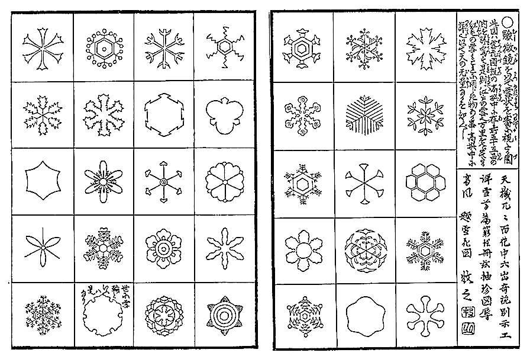
左伝に
（隠公八年）平地尺に
盈を大雪と
為と
見えたるは
其国暖地なれば也。
唐の
韓愈が雪を
豊年の
嘉瑞といひしも
暖国の
論也。されど
唐土にも寒国は八月雪
降事
五雑組に見えたり。暖国の雪一尺以下ならば
山川村里立地に
銀世界をなし、雪の
飄々翩々たるを
観て花に
諭へ玉に
比べ、
勝望美景を
愛し、
酒食音律の
楽を
添へ、
画に
写し
詞につらねて
称翫するは
和漢古今の
通例なれども、
是雪の
浅き
国の
楽み也。
我越後のごとく
年毎に
幾丈の雪を
視ば
何の
楽き事かあらん。雪の
為に
力を
尽し
財を
費し千
辛万
苦する事、
下に
説く
所を
視ておもひはかるべし。
我国の
雪意は
暖国に
均しからず。およそ九月の
半より霜を
置て寒気
次第に
烈く、九月の末に
至ば
殺風肌を
侵入て
冬枯の
諸木葉を
落し、
天色霎として日の
光を
看ざる事
連日是雪の
意也。天気
朦朧たる事
数日にして
遠近の
高山に
白を
点じて雪を
観せしむ。これを
里言に
嶽廻といふ。又
海ある所は
海鳴り、山ふかき処は山なる、遠雷の如し。これを里言に
胴鳴りといふ。これを見これを
聞て、雪の
遠からざるをしる。年の
寒暖につれて
時日はさだかならねど、
たけまはり・
どうなりは秋の
彼岸前後にあり、
毎年かくのごとし。
前にいへるがごとく、雪
降んとするを
量り、雪に
損ぜられぬ
為に
屋上に
修造を
加へ、
梁柱廂（家の前の屋翼を里言にらうかといふ、すなはち廊架なり）其外すべて
居室に
係る所
力弱はこれを
補ふ。雪に
潰れざる
為也。
庭樹は大小に
随ひ
枝の
曲べきはまげて
縛束、
椙丸太又は竹を
添へ
杖となして
枝を
強からしむ。雪
折をいとへば也。
冬草の
類は
菰筵を以
覆ひ
包む。井戸は小屋を
懸、
厠は雪中其物を
荷しむべき
備をなす。雪中には一
点の
野菜もなければ
家内の
人数にしたがひて、雪中の
食料を
貯ふ。
（あたゝかなるやうに土中にうづめ又はわらにつゝみ桶に入れてこほらざらしむ）其外雪の
用意に
種々の
造作をなす事
筆に
尽しがたし。
暖国の人の雪を
賞翫するは前にいへるがごとし。江戸には雪の
降ざる年もあれば、初雪はことさらに
美賞し、雪見の
船に
哥妓を
携へ、雪の
茶の
湯に
賓客を
招き、
青楼は雪を
居続の
媒となし、
酒亭は雪を
来客の
嘉瑞となす。雪の
為に
種々の
遊楽をなす事
枚挙がたし。雪を
賞するの
甚しきは
繁花のしからしむる所也。雪国の人これを見、これを
聞て
羨ざるはなし。我国の初雪を以てこれに
比れば、
楽と
苦と
雲泥のちがひ也。そも／＼越後国は北方の
陰地なれども
一国の内
陰陽を
前後す。いかんとなれば天は西北にたらず、ゆゑに西北を
陰とし、地は東南に
足ず、ゆゑに東南を
陽とす。越後の地勢は、西北は大海に
対して陽気也。東南は
高山連りて陰気也。ゆゑに西北の
郡村は雪
浅く、東南の
諸邑は雪
深し。是
の
前後したるに
似たり。
我住魚沼郡は東南の
地にして○
巻機山○
苗場山○
八海山○
牛が
嶽○
金城山○
駒が
嶽○
兎が
嶽○
浅艸山等の
高山其余他国に
聞えざる山々
波濤のごとく東南に
連り、大小の
河々も
縦横をなし、
陰気充満して雲
深き
山間の
村落なれば雪の
深をしるべし。
（冬は日南の方を周ゆゑ北国はます／＼寒し、家の内といへども北は寒く南はあたゝかなると同じ道理也）我国
初雪を
視る事
遅と
速とは、
其年の
気運寒暖につれて
均からずといへども、およそ初雪は九月の
末十月の
首にあり。我国の雪は
鵞毛をなさず、
降時はかならず
粉砕をなす、風又これを
助く。
故に一
昼夜に
積所六七尺より一丈に
至る時もあり、
往古より
今年にいたるまで此雪此国に
降ざる事なし。されば
暖国の人のごとく初雪を
観て
吟詠遊興のたのしみは
夢にもしらず、
今年も又此
雪中に
在る事かと雪を
悲は
辺郷の
寒国に
生たる不幸といふべし。雪を
観て
楽む人の
繁花の
暖地に
生たる天幸を
羨ざらんや。
余が
隣宿六日町の俳友天吉老人の
話に、
妻有庄にあそびし
頃聞しに、
千隈川の
辺の
雅人、
初雪より
（天保五年をいふ）十二月廿五日までの
間、雪の
下る
毎に用意したる所の雪を
尺をもつて
量りしに
＊２、雪の
高さ十八丈ありしといへりとぞ。
此話雪国の人すら
信じがたくおもへども、つら／＼
思量に、十月の初雪より十二月廿五日までおよその
日数八十日の
間に五尺づゝの雪ならば、廿四丈にいたるべし。
随て
下ば
随て
掃ふ
処は
積で見る事なし。又地にあれば
減もする也。かれをもつて是をおもへば、我国の
深山幽谷雪の
深事はかりしるべからず。天保五年は我国近年の大雪なりしゆゑ、右の
話誣ふべからず。
高田御
城大手先の
広場に、木を
方に
削り尺を
記して
建給ふ、是を雪
竿といふ。長一丈也。雪の
深浅公税に
係るを以てなるべし。高田の
俳友楓石子よりの
書翰に
（天保五年の仲冬）雪竿を見れば当地の雪此
節一丈に
余れりといひ
来れり。雪竿といへば越後の
事として
俳句にも見えたれど、此国に於て高田の外
无用の雪
竿を
建る
処昔はしらず今はなし。
風雅をもつて我国に
遊ぶ人、雪中を
避て三
夏の
頃此地を
踏ゆゑ、
越路の雪をしらず。
然るに
越路の雪を
言の
葉に
作意ゆゑたがふ事ありて、我国の心には
笑ふべきが
多し。
雪を
掃ふは
落花をはらふに
対して
風雅の一ツとし、
和漢の
吟咏あまた見えたれども、かゝる大雪をはらふは
風雅の
状にあらず。
初雪の
積りたるをそのまゝにおけば、
再び
下る雪を添へて一丈にあまる事もあれば、一
度降ば一度
掃ふ
（雪浅ければのちふるをまつ）是を
里言に
雪掘といふ。
土を
掘がごとくするゆゑに
斯いふ也。
掘ざれば家の用
路を
塞ぎ
人家を
埋て人の
出べき
処もなく、
力強家も
幾万斤の雪の
重量に
推砕んをおそるゝゆゑ、家として雪を
掘ざるはなし。
掘るには木にて
作りたる
鋤を
用ふ、
里言に
こすきといふ、
則木鋤也。
椈といふ木をもつて作る、
木質軽強して
折る事なく
且軽し、
形は鋤に
似て
刃広し。雪中
第一の
用具なれば、山中の人これを作りて
里に
売、
家毎に
貯ざるはなし。雪を
掘る
状態は
図にあらはしたるが
如し。掘たる雪は
空地の、人に
妨なき
処へ山のごとく
積上る、これを
里言に
掘揚といふ。大家は
家夫を
尽して
力たらざれば
掘夫を
傭ひ、
幾十人の力を
併て一時に
掘尽す。
事を
急に
為すは
掘る内にも大雪
下れば
立地に
堆く人力におよばざるゆゑ也。
（掘る処図には人数を略してゑがけり）右は
大家の事をいふ、小家の
貧しきは
掘夫をやとふべきも
費あれば男女をいはず一家雪をほる。吾里にかぎらず雪ふかき処は
皆然なり。此雪いくばくの
力をつひやし、いくばくの銭を
費し、
終日ほりたる
跡へその夜大雪
降り
夜明て見れば
元のごとし。かゝる時は
主人はさら也、
下人も
頭を
低て
歎息をつくのみ也。
大抵雪ふるごとに
掘ゆゑに、
里言に一
番掘二番掘といふ。
春の雪は
消やすきをもつて
沫雪といふ。
和漢の春雪
消やすきを
詩哥の
作為とす、
是暖国の事也、寒国の雪は
冬を
沫雪ともいふべし。いかんとなれば冬の雪はいかほどつもりても
凝凍ことなく、
脆弱なる事
淤泥のごとし。
故に冬の雪中は
橇・
縋を
穿て
途を
行。
里言には雪を
漕といふ。水を
渉る
状に
似たるゆゑにや、又
深田を
行すがたあり。
初春にいたれば雪
悉く
凍りて
雪途は石を
布たるごとくなれば
往来冬よりは
易し。
（すべらざるために下駄の歯にくぎをうちて用ふ）暖国の
沫雪とは
気運の
前後かくのごとし。
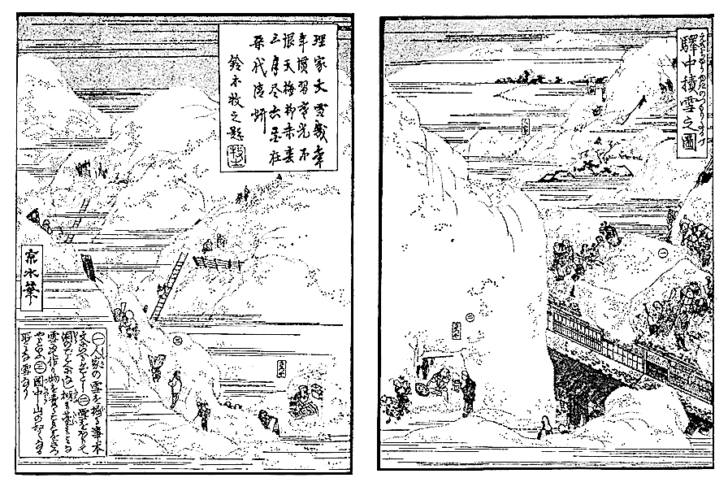
冬の雪は
脆なるゆゑ人の
蹈固たる
跡をゆくはやすけれど、
往来の
旅人一
宿の夜大雪降ばふみかためたる一
条の雪道雪に
埋り
途をうしなふゆゑ、
郊原にいたりては
方位をわかちがたし。此時は
里人幾十人を
傭ひ、
橇縋にて
道を
蹈開せ
跡に
随て
行也。此
費幾緡の銭を
費すゆゑ
貧しき
旅人は人の
道をひらかすを
待て
空く時を
移もあり。
健足の
飛脚といへども雪
途を
行は一日二三里に
過ず。
橇にて
足自在ならず、雪
膝を
越すゆゑ也。これ冬の雪中一ツの
艱難なり。春は雪
凍て
銕石のごとくなれば、
雪車（又雪舟の字をも用ふ）を以て
重を
乗す。
里人は雪車に物をのせ、おのれものりて雪上を
行事舟のごとくす。雪中は牛馬の足立ざるゆゑすべて
雪車を用ふ。春の雪中
重を
負しむる事
牛馬に
勝る。
（雪車の制作別に記す、形大小種々あり大なるを修羅といふ）雪国の
便利第一の
用具也。しかれども雪凍りたる時にあらざれば用ひがたし、ゆゑに里人
雪舟途と
唱ふ。
凡雪九月末より
降はじめて雪中に春を
迎、正二の月は雪
尚深し。三四の月に
至りて次第に
解、五月にいたりて雪全く
消て
夏道となる。
（年の寒暖によりて遅速あり）四五月にいたれば春の花ども一
時にひらく。されば雪中に
在る事
凡八ヶ月、一年の
間雪を
看ざる事
僅に四ヶ月なれども、全く雪中に
蟄るは半年也。こゝを以て
家居の
造りはさら也、
万事雪を
禦ぐを
専とし、
財を
費力を
尽す事
紙筆に
記しがたし。
農家はことさら夏の初より秋の末までに五
穀をも
収るゆゑ、雪中に
稲を
刈事あり。
其忙き事の千
辛万
苦、暖国の
農業に
比すれば百
倍也。さればとて雪国に
生る
者は
幼稚より雪中に成長するゆゑ、
蓼中の
虫辛をしらざるがごとく雪を雪ともおもはざるは、
暖地の
安居を
味ざるゆゑ也。女はさら也、男も十人に七人は
是也。しかれども
住ば
都とて、
繁花の江戸に奉公する事
年ありて
後雪国の
故郷に
皈る者、これも又十人にして七人也。
胡場北風に
嘶き、
越鳥南枝に
巣くふ、
故郷の
忘がたきは世界の
人情也。さて雪中は
廊下に
（江戸にいふ店下）雪垂を
（かやにてあみたるすだれをいふ）下し、
（雪吹をふせぐため也）窗も又これを用ふ。雪ふらざる時は
巻て
明をとる。
雪下事
盛なる
時は、
積る雪家を
埋て雪と
屋上と
均く
平になり、
明のとるべき処なく、
昼も
暗夜のごとく
燈火を
照して家の内は
夜昼をわかたず。
漸雪の
止たる時、雪を
掘て
僅に小
窗をひらき
明をひく時は、
光明赫奕たる仏の国に生たるこゝち也。此外雪
籠りの
艱難さま／″＼あれど、くだ／＼しければしるさず。
鳥獣は
雪中食无をしりて雪
浅き国へ
去るもあれど一
定ならず。雪中に
籠り
居て朝夕をなすものは人と熊と也。
宿場と
唱る
所は家の
前に
庇を長くのばして
架る、大小の
人家すべてかくのごとし。雪中はさら也、平日も
往来とす。これによりて雪中の
街は用なきが如くなれば、人家の雪をこゝに
積。
次第に
重て
両側の家の
間に雪の
堤を
築たるが
如し。こゝに於て
所々に雪の
洞をひらき、
庇より庇に
通ふ、これを
里言に
胎内潜といふ、又
間夫ともいふ。
間夫とは
金掘の
方言なるを
借て
用ふる也。
（間夫の本義は妻妾の奸淫するをいふ）宿外の家の
続ざる処は
庇なければ、
高低をなしたるかの雪の
堤を
往来とす。人の
足立がたき処あれば一
条の
道を
開き、春にいたり雪
堆き所は
壇層を作りて
通路の
便とす。
形匣階のごとし。
所の
者はこれを
登下するに
脚に
慣て
一歩もあやまつ事なし。
他国の
旅人などは
怖る／＼
移歩かへつて
落る
者あり、おつれば雪中に
身を
埋む。
視る人はこれを
笑ひ、
落たるものはこれを
怒る。かゝる
難所を作りて他国の
旅客を
労はしむる事
求たる
所為にあらず。此雪を
取除とするには
人力と
銭財とを
費すゆゑ、
寸導は
壇を作りて
途を
開く也。そも／＼初雪より歳を越て雪
消るまでの事を
繁細に記さば小冊には
尽しがたし、ゆゑに
省てしるさゞる事甚多し。
大小の川に
近き
村里、初雪の
後洪水の
災に
苦む事あり。
洪水を此国の
俚言に
水揚といふ。
余一年関といふ
隣駅の
親族油屋が家に
止宿せし時、
頃は十月のはじめにて雪八九尺つもりたるをりなりしが、
夜半にいたりて
近隣の
諸人叫び
呼はりつゝ立
騒ぐ
声に
睡を
驚し、こは
何事やらんと
※［＃「匈／（胃−田）」、U+80F7、33-5］もをどりて
臥たる
一間をはせいでければ、
家の
主両手に
物を
提、水あがり也とく／＼
裏の
掘揚へ
立退給へ、といひすてゝ持たる物を二階へ
運びゆく。
勝手の方へ立いで見れば
家内の男女
狂気のごとく
駈まはりて、
家財を水に
流さじと
手当しだいに
取退る。水は
低に随て
潮のごとくおしきたり、
已に
席を
浸し
庭に
漲る。次第に
積たる雪
所として雪ならざるはなく、
雪光暗夜を
照して水の
流るありさま、おそろしさいはんかたなし。
余は人に
助けられて
高所に
逃登り
遙に
駅中を
眺ば、
提灯炬を
燈しつれ大勢の男ども
手々に
［＃「手々に」はママ］木鋤をかたげ、雪を
越水を
渉て
声をあげてこゝに
来る。これは
水揚せざる
所の
者どもこゝに
馳あつまりて、川
筋を
開き水を
落さんとする也。
闇夜にてすがたは見えねど、
女童の
泣叫ぶ
声或は
遠く或は
近く、
聞もあはれのありさま也。
燃残りたる
炬一ツをたよりに人も馬も
首たけ水に
浸り、
漲るながれをわたりゆくは馬を
助んとする也。
帯もせざる女
片手に
小児を
背負、
提灯を
提て
高処へ
逃のぼるは、
近ければそこらあらはに見ゆ、
命とつりがへなればなにをも
恥しとはおもふべからず。
可笑事
可憐なる事
可怖き事
種々さま／″＼
筆に
尽しがたし。やう／＼
東雲の
頃に
至りて、水も
落たりとて
諸人安堵のおもひをなしぬ。
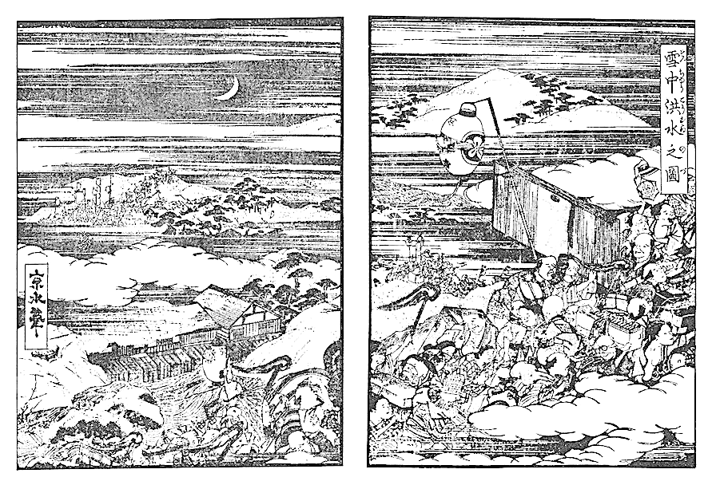
○そも／＼
我郷雪中の
洪水、大かたは初冬と仲春とにあり。
此関といふ
駅は左右
人家の
前に
一道づゝの
流あり、
末は
魚野川へ落る、
三伏の
旱にも
乾く事なき
清流水也。ゆゑに
家毎に
此流を
以て
井水の
代りとし、しかも
桶にても
汲べき
流なれば、平日の
便利井戸よりもはるかに
勝り。しかるに
初雪の
後十月のころまでにこの
二条の
小流雪の
為に
降埋られ、流水は雪の下にあり、
故に
家毎に
汲べき
程に雪を
穿て
水用を弁ず。この
穿たる所も一夜の雪に
埋らるゝことあれば
再うがつ事
屡なり。
人家にちかき
流さへかくのごとくなれば、この二
条の
流の
水源も雪に
埋れ、
水用を
失ふのみならず水あがりの
懼あるゆゑ、
所の人
力を
併て流のかゝり口の雪を
穿事なり。されども
人毎に
業用にさゝへて時を
失ふか、又は一夜の大雪にかの
水源を
塞ぐ時は、水
溢て
低所を
尋て
流る。
駅中は人の
往来の
為に雪を
蹈へして
低ゆゑ、
流水漲り
来り
猶も
溢て人家に入り、
水難に
逢ふ事
前にいへるがごとし。
幾百人の力を
尽して
水道をひらかざれば、
家財を
流し
或は
溺死におよぶもあり。
○
又仲春の
頃の
洪水は大かたは春の
彼岸前後也。雪いまだ
消ず、山々はさら也
田圃も
渺々たる
曠平の
雪面なれば、
枝川は雪に
埋れ水は雪の下を流れ、大河といへども冬の初より
岸の水まづ
氷りて氷の上に雪をつもらせ、つもる雪もおなじく氷りて岩のごとく、
岸の氷りたる
端次第に雪ふりつもり、のちには
両岸の雪
相合して
陸地とおなじ雪の地となる。さて春を
迎へて寒気次第に
和らぎ、その年の
暖気につれて雪も
降止たる二月の
頃、
水気は
地気よりも
寒暖を
知る事はやきものゆゑ、かの
水面に
積りたる雪
下より
解て
凍りたる雪の力も水にちかきは
弱くなり、
流は雪に
塞れて
狭くなりたるゆゑ
水勢ます／＼
烈しく、
陽気を
得て雪の
軟なる下を
潜り、
堤のきるゝがごとく、
譬にいふ
寝耳に水の
災難にあふ事、雪中の
洪水寒国の
艱難、
暖地の人
憐給へかし。右は其一をいふのみ。雪中の洪水地勢によりて
種々各々なり。
詳には
弁じがたし。
越後の西北は
大洋に
対して
高山なし。東南は
連山巍々として越中上信奥羽の五か国に
跨り、
重岳高嶺肩を
並べて
数十里をなすゆゑ大小の
獣甚多し。此
獣雪を
避て他国へ去るもありさらざるもあり、
動ずして雪中に
穴居するは
熊のみ也。
熊胆は越後を上
品とす、雪中の熊胆はことさらに
価貴し。其
重価を
得んと
欲して
春暖を
得て雪の
降止たるころ、
出羽あたりの
猟師ども五七人心を合せ、三四疋の
猛犬を
牽き米と
塩と
鍋を
貯へ、水と
薪は山中
在るに
随て用をなし、山より山を
越、
昼は
猟して
獣を
食とし、夜は
樹根岩窟を
寝所となし、
生木を
焼て
寒を
凌且明となし、
着たまゝにて
寝臥をなす。
頭より
足にいたるまで
身に
着る
物悉く
獣の
皮をもつてこれを作る。
遠く
視れば
猿にして
顔は人也。
金革を
衽にすとはかゝる人をやいふべき。此
者らが
志所は我国の熊にあり。さて我山中に入り
場所よきを
見立、木の
枝藤蔓を以て
仮に
小屋を作りこれを
居所となし、おの／＼犬を
牽四方に
別て熊を
窺ふ。熊の
穴居たる所を
認ば
目幟をのこして小屋にかへり、一
連の力を
併てこれを
捕る。その
道具は
柄の長さ四尺斗りの
手槍、
或は
山刀を
薙刀のごとくに作りたるもの、
銕炮山刀
斧の
類也。
刃鈍る時は
貯へたる
砥をもつて
自研ぐ。此
道具も
獣の
皮を以て
鞘となす。此者ら春にもかぎらず冬より山に入るをりもあり。
そも／＼
熊は
和獣の王、
猛くして
義を
知る。
菓木の
皮虫のるゐを
食として
同類の
獣を
喰ず、
田圃を
荒ず、
稀に
荒すは
食の
尽たる時也。
詩経には
男子の
祥とし、或は
六雄将軍の名を
得たるも
義獣なればなるべし。
夏は
食をもとむるの
外山蟻を
掌中に
擦着、
冬の
蔵蟄にはこれを
※［＃「舌＋蝶のつくり」、U+445C、38-11］て
飢を
凌ぐ。
牝牡同く
穴に
蟄らず、
牝の子あるは子とおなじくこもる。其
蔵蟄する所は大木の
雪頽に
倒れて
朽たる
洞（なだれの事下にしるす）又は
岩間土穴、かれが心に
随て
居る処さだめがたし。雪中の熊は右のごとく
他食を
求ざるゆゑ、その
胆の
良功ある事夏の胆に
比れば百
倍也。我国にては、●
飴胆●
琥珀胆●
黒胆と
唱へ色をもつてこれをいふ。
琥珀を上
品とし、黒胆を下品とす。
偽物は黒胆に多し。
●さて熊を
捕に
種々の
術あり。かれが
居所の
地理にしたがつて
捕得やすき術をほどこす。熊は秋の土用より
穴に入り、春の土用に穴より
出るといふ。又一
説に、穴に入りてより穴を出るまで
一睡にねむるといふ、人の
視ざるところなれば
信じがたし。
沫雪の
条にいへるごとく、冬の雪は
軟にして
足場あしきゆゑ、熊を
捕は雪の
凍たる春の土用まへ、かれが穴よりいでんとする
頃を
程よき
時節とする也。
岩壁の
裾又は
大樹の
根などに
蔵蟄たるを
捕には
圧といふ
術を
用ふ、
天井釣ともいふ。その
制作は木の
枝藤の
蔓にて穴に
倚掛て
棚を
作り、たなの
端は
地に付て
杭を以てこれを
縛り、たなの横木に
柱ありて
棚の上に大石を
積ならべ、横木より
縄を下し縄に
輪を
結びて
穴に
臨す、これを
蹴綱といふ。此蹴綱に
転機あり、
全く
作りをはりてのち、穴にのぞんで
玉蜀烟艸の
茎のるゐ
熊の
悪む物を
焚、しきりに
扇て
烟を穴に入るれば熊烟りに
噎て大に
怒り、穴を飛出る時かならずかの
蹴綱に
触れば
転機にて
棚落て熊大石の下に
死す。手を
下さずして熊を
捕の上
術也。是は熊の
居所による也。これらは
樵夫も
折によりてはする事也。
又
熊捕の
場数を
蹈たる
剛勇の者は一
連の
猟師を熊の
居る穴の前に
待せ、
己一人
ひろゝ簑を
頭より
被り
（ひろゝは山にある艸の名也、みのに作れば稿よりかろし、猟師常にこれを用ふ）穴にそろ／＼と
這入り、熊に
簑の毛を
触れば熊はみのゝ毛を
嫌ふものゆゑ
除て前にすゝむ。又
後よりみの毛を
障す、熊又まへにすゝむ。又さはり又すゝんで熊
終には穴の口にいたる。これを
視て
待かまへたる
猟師ども
手練の
槍尖にかけて
突留る。
一槍失ときは熊の
一掻に一
命を
失ふ。その
危を
蹈で熊を捕は
僅の
黄金の
為也。
金慾の人を
過事
色慾よりも
甚し。されば
黄金は
道を以て
得べし、不道をもつて
得べからず。
又上に
覆ふ所ありてその下には雪のつもらざるを知り土穴を
掘て
蟄るもあり。
然れどもこゝにも雪三五尺は
吹積也。熊の穴ある所の雪にはかならず
細孔ありて
管のごとし。これ熊の
気息にて雪の
解たる
孔也。
猟師これを見れば雪を掘て穴をあらはし、木の
枝柴のるゐを穴に
挿入れば熊これを
掻とりて穴に入るゝ、かくする事しば／＼なれば穴
逼りて熊穴の口にいづる時槍にかくる。
突たりと見れば
数疋の
猛犬いちどに飛かゝりて
囓つく。犬は人を力とし、人は犬を力として
殺もあり。此術は
椌木にこもりたるにもする事也。
熊の
黒は雪の白がごとく
天然の常なれども、
天公機を
転じて
白熊を出せり。
○天保三年辰の春、
我が
住魚沼郡の
内浦佐宿の
在大倉村の
樵夫八海山に入りし時、いかにしてか白き
児熊を
虜り、世に
珍とて
飼おきしに
香具師（江戸にいふ見世もの師の古風なるもの）これを買もとめ、市場又は祭礼すべて人の
群る所へいでゝ
看物にせしが、ある所にて
余も見つるに大さ
狗のごとく
状は全く熊にして、白毛雪を
欺きしかも
光沢ありて
天鵞織のごとく
眼と
爪は
紅也。よく人に
馴てはなはだ
愛べきもの也。こゝかしこに持あるきしがその
終をしらず。白亀の
改元、
白鳥の
神瑞、八幡の
鳩、源家の
旗、すべて白きは
皇国の
祥象なれば、
天機白熊をいだししも
昇平万歳の吉
瑞成べし。
山家の人の
話に熊を
殺こと二三疋、
或ひは
年歴たる熊一疋を殺も、其山かならず
荒る事あり、
山家の人これを熊
荒といふ。このゆゑに
山村の
農夫は
需て熊を
捕事なしといへり。熊に

ありし事
古書にも見えたり。
人熊の穴に
墜て熊に助られしといふ
話諸書に
散見すれども、其
実地をふみたる人の
語りしは
珍ければこゝに
記す。
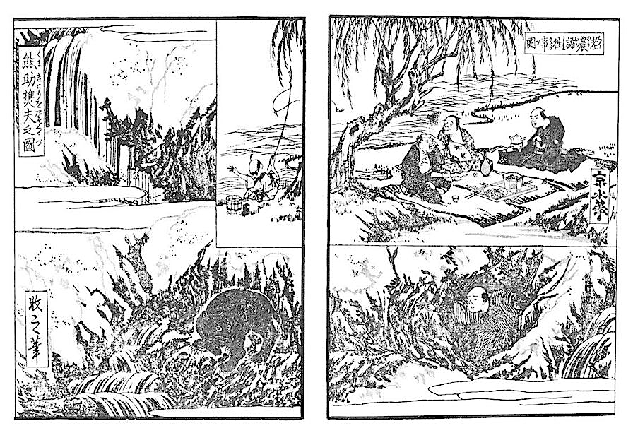
○
余若かりし時、
妻有の
庄に
（魚沼郡の内に在）用ありて両三日
逗留せし事ありき。
頃は夏なりしゆゑ
客舎の
庭の
木かげに
筵をしきて
納涼居しに、
主人は酒を
好む人にて
酒肴をこゝに開き、
余は酒をば
嗜ざるゆゑ茶を
喫て居たりしに、
一老夫こゝに来り主人を
視て
拱手て礼をなし
後園へ行んとせしを、
主呼とめ
老夫を
指ていふやう、此
叟父は
壮年時熊に助られたる人也、
危き
命をたすかり今年八十二まで
健に
長生するは
可賀老人也、
識面になり給へといふ。老夫
莞爾として
再去んとす。
余よびとゞめ、熊に助られしとは
珍説也語りて聞せ給へといひしに、
主人余が前に在し
茶
をとりてまづ一盃
喫とて酒を
満とつぎければ、
老夫筵の
端に坐し酒を
視て
笑をふくみ
続て三
を
喫し
舌鼓して大に
喜び、さらば
話説申さん、我
廿歳二月のはじめ
薪をとらんとて
雪車を
引て山に入りしに、村にちかき所は皆
伐つくしてたま／＼あるも足場あしきゆゑ、山
一重踰て見るに、薪とすべき柴あまたありしゆゑ
自在に
伐とり、
雪車哥うたひながら
徐々束、雪車に
積て縛つけ
山刀をさしいれ、
低に
随て今来りたる方へ
乗下りたるに、
一束の柴雪車より
転び
落、谷を
埋たる雪の
裂隙にはさまり
（凍りし雪陽気を得て裂る事常也）たるゆゑ、捨て
皈んも
惜ければその所にいたり柴の枝に手をかけ引上んとするにすこしも
動ず、落たる
勢に
撞いれたるならん、さらば
重かたより引上んと
匍匐して
双手を
延し一声かけて上んとしたる時、足に
蹈力なきゆゑおのれがちからに
己が
躰を
転倒、雪の
裂隙より
遙の谷底へ
墜けるが、雪の上を
濘落たるゆゑ
幸に
疵はうけず、しばしは夢のやう也しがやう／＼に心付、上を見れば雪の
屏風を
建たるがごとく今にも
雪頽やせんと
（なだれのおそろしき事下にしるす）生たる心地はなく、
暗はくらし、せめては
明方にいでんと雪に
埋たる
狭谷間をつたひ、やう／＼にして
空を見る所にいたりしに、谷底の雪中
寒烈しく手足も
亀手一歩もはこびがたく、かくては
凍死べしと心を
励し猶
途もあるかと
百歩ばかり行たりけん、滝ある所にいたり四方を見るに、谷間の
途極にて
甕に落たる
鼠のごとくいかんともせんすべなく
惘然として
※［＃「匈／（胃−田）」、U+80F7、45-4］せまり、いかゞせんといふ
思案さヘ出ざりき。さて是より熊の
話也、今一盃たまはるべしとて
自酌てしきりに
喫、
腰より
烟艸
をいだして
烟を
吹などするゆゑ、其
次はいかにとたづねければ、
老父曰、さて
傍を見れば
潜べきほどの
岩窟あり、中には雪もなきゆゑはひりて見るにすこし
温也。此時こゝろづきて腰をさぐりみるに
握飯の
弁当もいつかおとしたり、かくては
飢死すべし、さりながら雪を
喰ても五日や十日は命あるべし、その内には
雪車哥の
声さへ
聞れば村の者也、大声あげて
叫らば
助くれべし、それにつけてもお伊勢さまと善光寺さまをおたのみ申よりほかなしと、しきりに念仏
唱へ、大神宮をいのり日もくれかゝりしゆゑ、こゝを
寝所にせばやと
闇地を
探り／＼
這入りて見るに
次第に
温也。
猶も
探りし
手先に
障しは
正しく熊也。
愕然して
※［＃「匈／（胃−田）」、U+80F7、45-11］も
裂るやう也しが
逃に道なく、とても命の
期なり
死も
生も神仏にまかすべしと
覚悟をきはめ、いかに熊どの
我は
薪とりに来り谷へ
落たるもの也、
皈には道がなく
生て
居には
喰物がなし、とても
死べき命也、
※［＃「辟／手」、U+64D8、45-14］て
殺ばころし給へ、もし
情あらば助たまへと
怖々熊を
撫ければ、熊は
起なほりたるやうにてありしが、しばしありてすゝみいで
我を
尻にておしやるゆゑ、熊の
居たる跡へ
坐しにそのあたゝかなる事
巨燵にあたるごとく
全身あたゝまりて
寒をわすれしゆゑ、熊にさま／″＼礼をのべ猶もたすけ玉へと
種々悲しき事をいひしに、熊手をあげて
我が口へ
柔におしあてる事たび／＼也しゆゑ、
蟻の事をおもひだし
舐てみれば
甘くてすこし
苦し。しきりになめたれば心
爽になり
咽も
潤ひしに、熊は
鼻息を
鳴して
寝やう也。さては我を
助るならんと心大におちつき、のちは熊と
脊をならべて
臥しが宿の事をのみおもひて
眠気もつかず、おもひ／＼てのちはいつか
寝入たり。かくて熊の
身動をしたるに目さめてみれば、穴の口見ゆるゆゑ夜の
明たるをしり、穴をはひいで、もしやかへるべき道もあるか、山にのぼるべき
藤づるにてもあるかとあちこち見れどもなし、熊も穴をいでゝ
滝壺にいたり水をのみし時はじめて熊を見れば、犬を七ツもよせたるほどの大熊也。又もとの
窟へはいりしゆゑ
我は
窟の口に
居て
雪車哥のこゑやすらんと
耳を
澄して
聞居たりしが、滝の音のみにて鳥の
音もきかず、その日もむなしく
暮て又穴に一夜をあかし、熊の
掌に
飢をしのぎ、
幾日たちても哥はきかず、その心
細き事いはんかたなし。されど熊は
次第に
馴可愛なりしと語るうち、主人は
微酔にて
老夫にむかひ、其熊は
牝熊ではなかりしかと三人大ひに笑ひ、又酒をのませ盃の
献酬にしばらく
話消けるゆゑ
強て
下回をたづねければ、
老夫曰、人の心は物にふれてかはるもの也、はじめ熊に
逢し時はもはや
死地事と
覚悟をばきはめ命も
惜くなかりしが、熊に
助られてのちは
次第に命がをしくなり、
助る人はなくとも雪さへ
消なば
木根岩角に
縋てなりと宿へかへらんと、雪のきゆるをのみまちわび幾日といふ日さへ
忘て
虚々くらししが、熊は
飼犬のやうになりてはじめて人間の
貴事を
知り、
谷間ゆゑ雪のきゆるも里よりは
遅くたゞ日のたつをのみうれしくありしに、
一日窟の口の日のあたる所に
虱を
捫て
居たりし時、熊
窟よりいで袖を
咥て引しゆゑ、いかにするかと引れゆきしにはじめ
濘落たるほとりにいたり、熊
前にすゝみて
自在に雪を
掻掘一道の
途をひらく、
何方までもとしたがひゆけば又
途をひらき／＼て人の
足跡ある所にいたり、熊
四方を
顧て
走り
去て行方しれず。さては我を
導たる也と熊の
去し方を
遥拝かず／＼礼をのべ、これまつたく神仏の
御蔭ぞとお伊勢さま
善光寺さまを
遥拝うれしくて足の
蹈所もしらず、
火点頃宿へかへりしに、此時近所の人々あつまり念仏申てゐたり。両親はじめ
驚愕せられ
幽ならんとて立さわぐ。そのはづ也。
月代は
簑のやうにのび
面は狐のやうに
痩たり、幽
とて立さわぎしものちは笑となりて、両親はさら也人々もよろこび、薪とりにいでし四十九日目の
待夜也とていとなみたる
仏
も
俄にめでたき
酒宴となりしと
仔細に
語りしは、九右エ門といひし
小間居の
農夫也き。其夜
燈下に筆をとりて語りしまゝを
記しおきしが、今はむかしとなりけり。
唐土蜀の
峨眉山には夏も
積雪あり。其雪の
中に
雪蛆といふ虫ある事
山海経に見えたり。
（唐土の書）此
節空からず、越後の雪中にも
雪蛆あり、此虫早春の頃より雪中に
生じ雪
消終ば虫も
消終る、
始終の
死生を雪と
同うす。
字書を
按に、
蛆は
腐中の
蠅とあれば
所謂蛆蠅也。
※［＃「虫＋旦」、U+45A7、48-2］は

の
類、人を
螫とあれば
蜂の
類也、雪中の
虫は
蛆の
字に
从ふべし、しかれば
雪蛆は雪中の
蛆蠅也。
木火土金水の五行中皆虫を
生ず、木の虫土の虫水の虫は
常に見る所めづらしからず。
蠅は
灰より
生ず、灰は火の
燼末也、しかれば蠅は火の虫也。
蠅を
殺して
形あるもの
灰中におけば
蘇也。又
虱は人の
熱より
生ず、
熱は火也、火より生たる虫ゆゑに
蠅も
虱も
共に
暖なるをこのむ。
金中の虫は
肉眼におよばざる
冥塵のごとき虫ゆゑに人これをしらず。およそ
銅銕の
腐はじめは虫を
生ず、虫の生じたる
所色を
変ず。しば／＼これを
拭ば虫をころすゆゑ
其所腐ず。
錆は
腐の
始、
錆の中かならず虫あり、
肉眼におよばざるゆゑ人しらざる也。
（蘭人の説也）金中
猶虫あり、雪中虫
無んや。しかれども常をなさゞれば
奇とし
妙として
唐土の
書にも
記せり。我越後の
雪蛆はちひさき事
蚊の
如し。此虫は二
種あり、一ツは
翼ありて
飛行、一ツははねあれども
蔵て
行。共に足六ツあり、色は
蠅に
似て
淡く
（一は黒し）其
居る所は
市中原野蚊におなじ。しかれども人を
螫むしにはあらず、
顕微鏡にて
視たる所をこゝに
図して
物産家の
説を
俟つ。
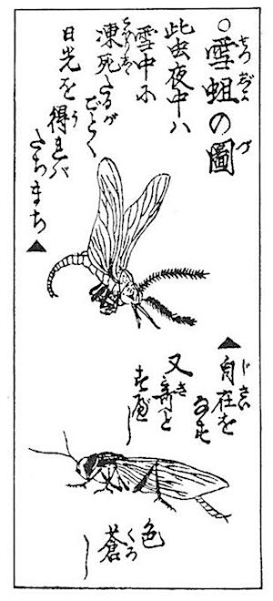
雪吹は
樹などに
積りたる雪の風に
散乱するをいふ。
其状優美ものゆゑ花のちるを是に
比して
花雪吹といひて
古哥にもあまた見えたり。
是東南
寸雪の国の事也、北方
丈雪の国我が越後の雪
深ところの雪吹は雪中の
暴風雪を
巻騰
也。雪中第一の
難義これがために死する人年々也。その一ツを
挙てこゝに
記し、
寸雪の
雪吹のやさしきを
観人の
為に
丈雪の雪吹の
愕を
示す。
余が
住塩沢に
遠からざる村の
農夫男一人あり、
篤実にして
善親に
仕ふ。廿二歳の冬、二里あまり
隔たる村より十九歳の
娵をむかへしに、
容姿憎からず
生質柔従にて、
糸織の
伎にも
怜利ければ
舅姑も
可愛がり、
夫婦の中も
睦く
家内可祝春をむかへ、其年九月のはじめ
安産してしかも男子なりければ、
掌中に
珠を
得たる
心地にて
家内悦びいさみ、
産婦も
健に
肥立乳汁も一子に
余るほどなれば
小児も
肥太り
可賀名をつけて
千歳を
寿けり。
此一家の
者すべて
篤実なれば
耕織を
勤行、
小農夫なれども
貧からず、
善男をもち
良娵をむかへ
好孫をまうけたりとて一
村の人々
常に
羨けり。かゝる
善人の
家に天
災を
下ししは
如何ぞや。
○かくて
産後日を
歴てのち、
連日の雪も
降止天気
穏なる日、
娵夫にむかひ、
今日は
親里へ
行んとおもふ、いかにやせんといふ。
舅旁にありて、そはよき事也
男も行べし、
実母へも
孫を見せてよろこばせ
夫婦して
自慢せよといふ。
娵はうちゑみつゝ
姑にかくといへば、姑は
俄に
土産など取そろへる
間に
娵髪をゆひなどして
嗜の
衣類を
着し、
綿入の
木綿帽子も
寒国の
習とて見にくからず、
児を
懐にいだき入んとするに
姑旁よりよく
乳を
呑せていだきいれよ、
途にてはねんねがのみにくからんと
一言の
詞にも
孫を
愛する
情ぞしられける。
夫は
蓑笠稿脚衣すんべを
穿（晴天にも簑を着は雪中農夫の常也）土産物を
軽荷に
担ひ、
両親に
暇乞をなし
夫婦袂をつらね
喜躍て
立出けり。
正是親子が
一世の
別れ、
後の
悲歎とはなりけり。
○さるほどに
夫は
先に立
妻は
後にしたがひゆく。をつとつまにいふ、
今日は
頃日の
日和也、よくこそおもひたちたれ。
今日夫婦孫をつれて
来るべしとは
親たちはしられ玉ふまじ。
孫の
顔を見玉はゞさぞかしよろこび給ふらん。さればに候、
父翁はいつぞや
来られしが
母人はいまだ
赤子を見給はざるゆゑことさらの
喜悦ならん。
遅ならば
一宿てもよからんか、
郎も
宿給へ。
不可也二人とまりなば
両親案給はん、われは
皈べしなど、はなしの
間児の
啼に
乳房くゝませつゝうちつれて道をいそぎ
美佐嶋といふ原中に
到し時、
天色倏急に
変り
黒雲空に
覆ひければ
（是雪中の常也）夫空を見て大に
驚怖、こは
雪吹ならんいかゞはせんと
踉※［＃「足へん＋將」、U+8E61、51-7］うち、
暴風雪を
吹散事
巨濤の
岩を
越るがごとく、
雪を
巻騰て
白竜峯に
登がごとし。
朗々なりしも
掌をかへすがごとく
天怒地狂、寒風は
肌を
貫の
鎗、
凍雪は
身を
射の
箭也。
夫は
簑笠を吹とられ、
妻は
帽子を
吹ちぎられ、
髪も吹みだされ、
咄嗟といふ
間に
眼口襟袖はさら也、
裾へも雪を吹いれ、
全身凍呼吸迫り
半身は
已に雪に
埋められしが、
命のかぎりなれば
夫婦声をあげほうい／＼と
哭叫ども、
往来の人もなく
人家にも
遠ければ
助る人なく、手足
凍て
枯木のごとく
暴風に
吹僵れ、
夫婦頭を
並て雪中に
倒れ
死けり。此
雪吹其日の
暮に
止、
次日は
晴天なりければ
近村の者四五人此所を
通りかゝりしに、かの
死骸は
雪吹に
埋られて見えざれども
赤子の
啼声を雪の中にきゝければ、人々大に
怪みおそれて
逃んとするも
在しが、
剛気の者雪を
掘てみるに、まづ女の
髪の
毛雪中に
顕たり。
扨は
昨日の
雪吹倒れならん
（里言にいふ所）とて皆あつまりて雪を
掘、
死骸を見るに
夫婦手を
引あひて
死居たり。
児は母の
懐にあり、母の袖
児の
頭を
覆ひたれば
児は
身に雪をば
触ざるゆゑにや
凍死ず、
両親の
死骸の中にて又
声をあげてなきけり。雪中の
死骸なれば
生るがごとく、
見知たる者ありて
夫婦なることをしり、
我児をいたはりて袖をおほひ夫婦手をはなさずして
死たる心のうちおもひやられて、さすがの
若者らも
泪をおとし、
児は
懐にいれ
死骸は
簑につゝみ
夫の
家に
荷ひゆきけり。かの
両親は夫婦
娵の家に
一宿とのみおもひをりしに、
死骸を見て
一言の
詞もなく、
二人が
死骸にとりつき
顔にかほをおしあて大
声をあげて
哭けるは、見るも
憐のありさま也。一人の男
懐より
児をいだして
姑にわたしければ、
悲と
喜と
両行の
涙をおとしけるとぞ。
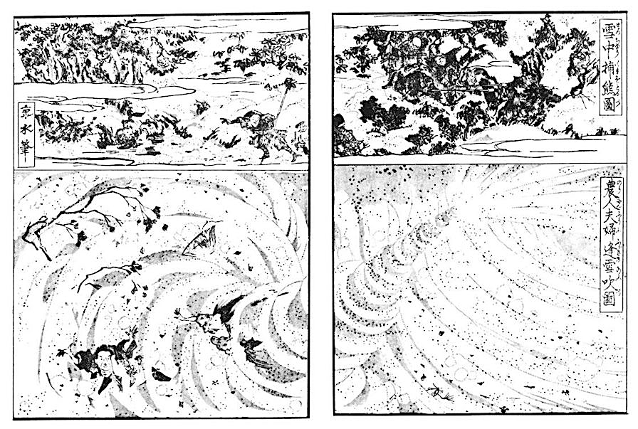
雪吹の人を
殺す事大方右に
類す。
暖地の人花の
散に
比て
美賞する
雪吹と其
異こと、
潮干に
遊びて
楽と
洪濤に
溺て
苦との
如し。雪国の
難義暖地の人おもひはかるべし。
連日の
晴天も一時に
変じて雪吹となるは雪中の常也。其
力樹を
抜屋を
折。人家これが
為に
苦む事
枚挙がたし。雪吹に
逢たる時は雪を
掘身を其内に
埋れば雪
暫時につもり、雪中はかへつて
温なる
気味ありて
且気息を
漏し死をまぬがるゝ事あり。雪中を
歩する人
陰嚢を
綿にてつゝむ事をす、しかせざれば
陰嚢まづ
凍て
精気尽る也。又
凍死たるを
湯火をもつて
温れば
助る事あれども
武火熱湯を
用ふべからず。
命たすかりたるのち
春暖にいたれば
腫病となり
良医も
治しがたし。
凍死たるはまづ
塩を
熬て
布に
包しば／＼
臍をあたゝめ
稿火の
弱をもつて
次第に
温べし、
助りたるのち
病を
発せず。
（人肌にて温むはもつともよし）手足の
凍たるも
強き
湯火にてあたゝむれば、
陽気いたれば
灼傷のごとく
腫、つひに
腐て
指をおとす、百
薬功なし。これ
我が見たる所を
記して人に
示す。人の
凍死するも手足の
亀手も
陰毒の
血脉を
塞ぐの也。
俄に
湯火の
熱を以て
温れば
人精の
気血をたすけ、
陰毒一旦に
解るといへども
全く
去ず、
陰は
陽に
勝ざるを以て
陽気至ば
陰毒肉に
暈て
腐也。寒中
雨雪に
歩行て
冷たる人
急に
湯火を
用ふべからず。
己が
人熱の
温ならしむるをまつて用ふべし、
長生の一
術なり。
世に越後の
七不思議と
称する其一ツ
蒲原郡妙法寺村の
農家炉中の
隅石臼の
孔より
出る火、人
皆奇也として
口碑につたへ
諸書に
散見す。此火寛文年中
始て
出しと
旧記に見えたれば、三百余年の今において
絶る事なきは
奇中の奇也。
天奇を
出す事一ならず、おなじ国の
魚沼郡に又一ツの
奇火を
出せり。
天公の
機状かの妙法寺村の火とおなじ事也。
彼は人の
知る所、是は他国の人のしらざる所なればこゝに
記て
話柄とす
＊３。
越後の国
魚沼郡五日町といふ
駅に
近き西の方に
低き山あり、山の
裾に
小溝在、天明年中二月の
頃、そのほとりに
童どもあつまりてさま／″＼の
戯をなして
遊倦、木の
枝をあつめ火を
焚てあたりをりしに、其所よりすこしはなれて
別に火
 々
々と
燃あがりければ、
児曹大におそれ皆々四方に
逃散けり。その中に一人の
童家にかへり
事の
仔細を
親に
語けるに、
此親心ある者にてその所にいたり火の
形状を見るに、いまだ
消ざる雪中に
手を入るべきほどの
孔をなし
孔より三四寸の上に火
燃る。
熟覧おもへらく、これ
正しく妙法寺村の火のるゐなるべしと
火口に石を入れてこれを
消し家にかへりて人に
語ず、雪きえてのち
再その所にいたりて見るに火のもえたるはかの
小溝の
岸也。
火燧をもて
発燭に火を
点じ
試に池中に
投いれしに、
池中火を
出せし事
庭燎のごとし。水上に火
燃るは妙法寺村の火よりも
奇也として
駅中の人々
来りてこれを
視る。そのゝち銭に
才人かの池のほとりに
混屋をつくり、
筧を以て水をとるがごとくして地中の火を引き
湯槽の
竈に
燃し、又
燈火にも
代る。池中の水を
湯に
※［＃「火＋譚のつくり」、U+71C2、56-9］し
価を以て
浴せしむ。此湯
硫黄の気ありて
能疥癬の
類を
治し、
一時流行して人群をなせり。
○
按に、地中に
水脉と
火脉とあり、地は大
陰なるゆゑ水脉は九分火脉は一分なり。かるがゆゑに火脉は
甚稀也。地中の火脉
凝結ところかならず
気息を
出す事人の気息のごとく、
肉眼には見えず。
火脉の
気息に
人間日用の
陽火を
加ればもえて
焔をなす、これを
陰火といひ
寒火といふ。寒火を
引に
筧の
筒の
焦ざるは、火脉の気いまだ陽火をうけて火とならざる
気息ばかりなるゆゑ也。陽火をうくれば筒の口より一二寸の上に火をなす、こゝを以て
火脉の気息の
燃るを
知るべし。妙法寺村の火も是也。是
余が
発明にあらず、
古書に
拠て
考得たる所也。
魚沼郡清水村の
奥に山あり、高さ一里あまり、
周囲も一里あまり也。山中すべて大小の
破隙あるを以て山の名とす。
山半は
老樹条をつらね
半より上は
岩石畳々として
其形竜躍虎怒がごとく
奇々怪々言べからず。
麓の左右に
渓川あり
合して
滝をなす、
絶景又
言べからず。
旱の時此
滝壺に

すればかならず
験あり。
一年四月の
半雪の
消たる
頃清水村の
農夫ら二十人あまり
集り、
熊を
狩んとて此山にのぼり、かの
破隙の
窟をなしたる所かならず熊の
住処ならんと、
例の
番椒烟草の
茎を
薪に
交、
窟にのぞんで
焚たてしに熊はさらに
出ず、
窟の
深ゆゑに
烟の
奥に
至らざるならんと
次日は
薪を
増し山も
焼よと
焚けるに、熊はいでずして一山の
破隙こゝかしこより
烟をいだして
雲の
起が
如くなりければ、
奇異のおもひをなし熊を
狩ずして
空しく立かへりしと清水村の
農夫が
語りぬ。おもふに此山
半より上は岩を
骨として
肉の
土薄く
地脉気を
通じて
破隙をなすにや、天地妙々の
奇工思量べからず。
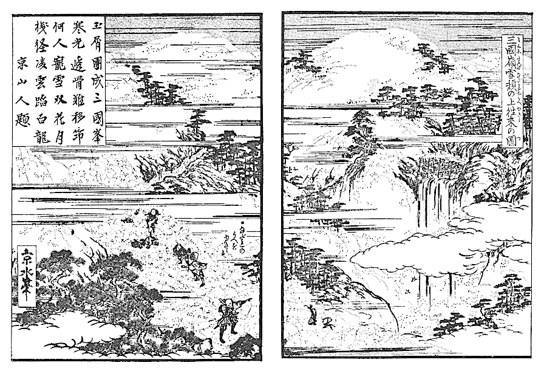
山より雪の
崩頽を
里言に
なだれといふ、又なでともいふ。
按になだれは
撫下る也、
るを
れといふは
活用ことばなり、山にもいふ也。こゝには
雪頽の
字を
借て
用ふ。
字書に
頽は
暴風ともあればよく
叶へるにや。さて
雪頽は
雪吹に
双て雪国の
難義とす。
高山の雪は里よりも
深く、
凍るも又里よりは
甚し。我国東南の山々
里にちかきも雪一丈四五尺なるは
浅しとす。此雪こほりて岩のごとくなるもの、二月のころにいたれば
陽気地中より
蒸て
解んとする時地気と天気との
為に
破て
響をなす。一
片破て
片々破る、其ひゞき大木を
折がごとし。これ
雪頽んとするの
萌也。山の
地勢と日の
照すとによりてなだるゝ
処となだれざる処あり、なだるゝはかならず二月にあり。
里人はその時をしり、処をしり、
萌を
知るゆゑに、なだれのために
撃死するもの
稀也。しかれども天の
気候不意にして一
定ならざれば、
雪頽の下に身を
粉に
砕もあり。
雪頽の
形勢いかんとなれば、なだれんとする雪の
凍、その大なるは十間以上小なるも九尺五尺にあまる、大小数百千
悉く
方をなして
削りたてたるごとく
（かならず方をなす事下に弁ず）なるもの幾千丈の山の上より一
度に
崩頽る、その
響百千の
雷をなし大木を
折大石を
倒す。此時はかならず
暴風力をそへて粉に
砕たる
沙礫のごとき雪を
飛せ、白日も
暗夜の如くその
慄しき事
筆帋に
尽しがたし。此
雪頽に
命を
捨しし人、命を
拾し人、我が
見聞したるを
次の
巻に
記して
暖国の人の
話柄とす。
或人問曰、雪の形六出なるは前に弁ありて詳也。雪頽は雪の塊ならん、砕たる形雪の六出なる本形をうしなひて方形はいかん。答て曰、地気天に変格して雪となるゆゑ天の円と地の方なるとを併合て六出をなす。六出は円形の裏也。雪天陽を離て降下り地に皈ば天陽の円き象うせて地陰の方なる本形に象る、ゆゑに雪頽は千も万も圭角也。このなだれ解るはじめは角々円くなる、これ陽火の日にてらさるゝゆゑ天の円による也。陰中に陽を包み、陽中に陰を抱は天地定理中の定格也。老子経第四十二章に曰、万物負レ陰而抱レ陽沖気以為レ和といへり。此理を以てする時はお内義さまいつもお内義さまでは陰中に陽を抱ずして天理に叶ず、をり／＼は夫に代りて理屈をいはざれば家内治ず、さればとて理屈に過牝鳥旦をつくれば、これも又家内の陰陽前後して天理に違ふゆゑ家の亡るもと也。万物の天理誣べからざる事かくのごとしといひければ、問客唯々として去りぬ。雪頽悉く方形のみにもあらざれども十にして七八は方形をうしなはず、故に此説を下せり。雪頽の図多く方形に从ふものは、其七八をとりて模様を為すのみ。
北越雪譜初編巻之上 終
［＃改丁］
越後塩沢 鈴木牧之 編撰
江戸 京山人百樹 刪定
我住魚沼郡の内にて
雪頽の
為に
非命の
死をなしたる事、其村の人のはなしをこゝに
記す。しかれども人の
不祥なれば
人名を
詳にせず。
○こゝに
何村といふ所に家内の上下十人あまりの
農人あり、
主人は五十歳ばかり
妻は四十にたらず、
世息は
二十あまり娘は十八と十五也。いづれも
孝子の
聞ありけり。
一年二月のはじめ
主人は朝より用ある所へ
出行しが、其日も
已に
申の頃なれど
皈りきたらず。さのみ
間をとるべき用にもあらざりければ、家内
不審におもひ
忰家僕をつれて其家にいたり
父が事をたづねしに、こゝへはきたらずといふ。しからばこゝならんかしこならんなど
家僕とはかりて
尋求しかど
更に
音問をきかず、日もはや
暮なんとすれば
空しく家に
皈りしか／＼のよし母に
語りければ、こは
心得ぬ事也とて心あたりの処こゝかしこへ人を
走らせて
尋させけるにその
在家さらにしれず。其夜
四更の
頃にいたれども
主人は
皈らず。此事
近隣に
聞えて人々
集り
種々に
評議して
居たるをりしも
一老夫来りていふやう、あるじの見え給はぬとや、
我心あたりの事あるゆゑしらせ申さんとて
来れりといふ。すはこゝろあたりときゝて
主人の
妻大によろこび、子どもらもとも／″＼に
言葉をそろへてまづ礼をのべ、その
仔細をたづねければ、
老夫いふやう、それがし
今朝西山の
嶺半にさしかゝらんとせし時、こゝのあるじに
行逢、
何方へとたづねければ
稲倉村へ
行とて
行過給ひぬ。我は
宿へ
皈り足にて
遙に
行過たる
頃例の
雪頽の
音をきゝて、これかならずかの山ならんと
嶺を
无事に
通りしをよろこびしにつけ、こゝのあるじはふもとを
无難に
行過給ひしや、万一なだれに
逢はし給はざりしかと
案じつゝ
宿へかへりぬ。今に
皈り給はぬはもしやなだれにといひて
眉を
皺めければ、親子は心あたりときゝてたのみし事も
案にたがひて、顔見あはせ
泪さしぐむばかり也。
老夫はこれを見てそこ／＼に立かへりぬ。
集居たる
若人どもこれをきゝて、さらばなだれの処にいたりてたづねみん
炬こしらへよなど
立騒ぎければ、ひとりの
老人がいふ、いな／＼まづまち候へ、
遠くたづねに
行し
者もいまだかへらず、今にもその人とおなじくあるじの
皈りたまはんもはかりがたし、
雪頽にうたれ給ふやうなる
不覚人にはあらざるを、かの
老奴めがいらざることをいひて
親子たちの心を
苦たりといふに、親子はこれに
励されて
心慰酒肴をいだして人々にすゝむ。これを見て
皆打ゑみつゝ
炉辺に
座列て酒
酌かはし、やゝ時うつりて
遠く
走たる者ども立かへりしに、
行方は
猶しれざりけり。
○かくて夜も
明ければ、村の者どもはさら也
聞しほどの人々
此家に
群り来り、此上はとて
手に／＼
木鋤を
持家内の人々も
後にしたがひてかの
老夫がいひつるなだれの処に
至りけり。さて
雪頽を見るにさのみにはあらぬすこしのなだれなれば、
道を
塞たる事二十
間余り雪の
土手をなせり。よしやこゝに死たりともなだれの下をこゝぞとたづねんよすがもなければ、いかにやせんと人々
佇立たるなかに、かの
老人よし／＼
所為こそあれとて、
若き
者どもをつれ
近き村にいたりて

をかりあつめ、
雪頽の上にはなち
餌をあたえつゝおもふ処へあゆませけるに、一羽の
羽たゝきして時ならぬに
為晨ければ
余のにはとりもこゝにあつまりて
声をあはせけり。こは
水中の
死骸をもとむる
術なるを雪に
用ひしは
応変の才也しと、のち／＼までも人々いひあへり。老人
衆にむかひ、あるじはかならず此下に
在るべし、いざ
掘れほらんとて大勢一度に立かゝりて
雪頽を
砕きなどして
掘けるほどに、大なる
穴をなして六七尺もほり入れしが目に見ゆるものさらになし。
猶ちからを
尽してほりけるに
真白なる雪のなかに
血を
染たる雪にほりあて、すはやとて
猶ほり入れしに
片腕ちぎれて
首なき
死骸をほりいだし、やがて
腕はいでたれども首はいでず。こはいかにとて
広く穴にしたるなかをあちこちほりもとめてやう／＼
首もいでたり、雪中にありしゆゑ
面生るがごとく也。さいぜんよりこゝにありつる
妻子らこれを見るより
妻は
夫が
首を
抱へ、子どもは
死骸にとりすがり
声をあげて
哭けり、人々もこのあはれさを見て
袖をぬらさぬはなかりけり。かくてもあられねば
妻は
着たる
羽織に
夫の
首をつゝみてかゝへ、
世息は
布子を
脱て父の
死骸に
腕をそへて
泪ながらにつゝみ
脊負んとする時、さいぜん
走りたる
者ども
戸板むしろなど
担げる用意をなしきたり、
妻がもちたる
首をもなきからにそへてかたげければ、人々
前後につきそひ、つま子らは
哭々あとにつきて
皈りけるとぞ。此ものがたりは
牧之が
若かりし時その事にあづかりたる人のかたりしまゝをしるせり。これのみならずなだれに命をうしなひし人
猶多かり、またなだれに家をおしつぶせし事もありき。
其怖さいはんかたなし。かの
死骸の
頭と
腕の
断離たるは、なだれにうたれて
磨断れたる也。
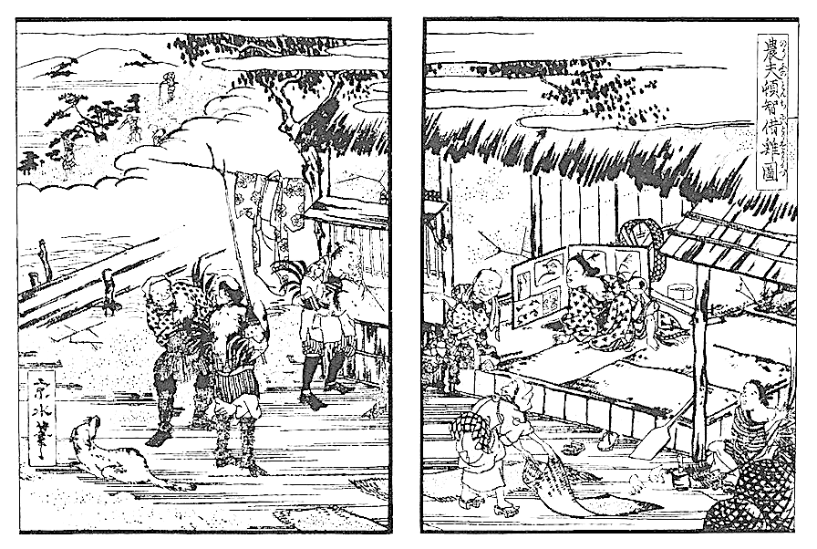
なだれは
敢て山にもかぎらず、
形状峯をなしたる処は時としてなだるゝ事あり。文化のはじめ
思川村天昌寺の
住職執中和尚は
牧之が
伯父也。仲冬のすゑ此人
居間の二階にて
書案によりて物を
書てをられしが、
窓の
庇に
下りたる
垂氷の五六尺なるが
明りに
障りて
机のほとり
暗きゆゑ、家の
檐にいで
家僕が雪をほらんとてうちおきたる
木鋤をとり、かのつらゝを
打をらんとて一打うちけるに、此ひゞきにやありけん
（里言につらゝをかなこほりといふ、たるひとは古言にもいふ）本堂に
積たる雪の片屋根
磊々となだれおち、
土蔵のほとりに
清水がゝりの池ありしに、和尚なだれに
押落され池に入るべきを、なだれの
勢ひに
身は
手鞠のごとく池をもはねこえて
掘揚たる雪に
半身を
埋められ、あとさけびたるこゑに
庫裏の雪をほりゐたるしもべら
馳きたり、
持たる
木鋤にて和尚を
掘いだしければ、和尚大に
笑ひ
身うちを見るに
聊も
疵うけず、
耳に
掛たる
眼鏡さへつゝがなく
不思議の命をたすかり給ひぬ。此時七十
余の
老僧也しが、
前にいへる
何村の人の
不幸に
比れば万死に一生をえられたる
天幸といひつべし。
齢も八十余まで
无病にして文政のすゑに
遷化せられき。平日
余に
示していはれしは、我
雪頽に
撞れしとき筆を
採りて
居たりしは、
尊き
仏経なりしゆゑたゞにやはとて一
字毎に
念仏申て
書居れり、しかるに
雪頽に死すべかりしを
不思議に
命助かりしは一
字念仏の
功徳にてやありけん。されば人は
常に
神仏を
信心して
悪事災難を
免れん事をいのるべし。
神仏を
信ずる心の
中より悪心はいでぬもの也。悪心の
无が
災難をのがるゝ第一也とをしへられき。今も
猶耳に残れり。
人智を
尽してのちはからざる
大難にあふは
因果のしからしむる処ならんか。人にははかりしりがたし。人家の
雪頽にも家を
潰せし事人の死たるなどあまた
見聞したれども、さのみはとてしるさず。
さきのとし玉山翁が
梓行せられし
軍物語の画本の中に、越後の雪中にたゝかひしといふ
図あり。文には
深雪とありて、しかも十二月の事なるに、ゑがきたる
軍兵どもが
挙止を見るに雪は
浅く見ゆ。
（越後の雪中馬足はたちがたし、ゆゑに農人すら雪中牛馬を用ひず、いわんや軍馬をや、しかるを馬上の戦ひにしるしたるは作者のあやまり也、したがふて画者も誤れる也、雪あさき国の人の画作なれば雪の実地をしらざるはうべ也）越後雪中の
真景には甚しくたがへり。しかしながら
画には
虚もまじへざればそのさまあしきもあるべけれど、あまりにたがひたれば玉山の玉に
瑾あらんも
惜ければ、かねて
書通の
交りにまかせて牧之が
拙き筆にて雪の
真景種々写し、
猶常に見ざる真景もがなと春の
半わざ／＼
三国嶺にちかき
法師嶺のふもとに
在る
温泉に
旅りそのあたりの雪を見つるに、
高き
峯よりおろしたるなだれなどは、五七
間ほどなる四角或は三角なる雪の長さは二三十
間もあらんとおもふが谷によこたはりたる上に、なほ
幾つとなく大小かさなりたるなど、雪国にうまれたる目にさへその
奇観ことばには
尽しがたし。これらの
真景をも
其座にうつしとりたるを
添て
贈りしに、玉山翁が
返書に、
北越の雪
我が
机上にふりかゝるがごとく目をおどろかし候、これらの
図をなほ多くあつめ文を
添させ私筆にて
例の
絵本となし候はゞ、其
書雪の
霏々たるがごとく
諸国に
降さん事
我が
筆下に
在りといはれたる
書翰、今猶
牧之が
書笈にをさめあり。
此書ならずして
黄なる
泉に玉山を
沈しは
惜べし／＼。
（ちゞみの文字普通の俗用にしたがふ又しゞみと訓べきをもちゞみと俗にならふ）
縮は越後の
名産にして
普く世の知る処なれど、
他国の人は越後一国の
産物とおもふめれど、さにあらず、
我住魚沼郡一
郡にかぎれる
産物也。
他所に
出るもあれど
僅にして、其
品魚沼には比しがたし。そも／＼
縮と
唱ふるは
近来の事にて、むかしは此国にても
布とのみいへり。布は
紵にて
織る物の
総名なればなるべし。今も我があたりにて
老女など
今日は布を市にもてゆけなどやうにいひて
古言ものこれり。
東鑑を
案るに、建久三壬子の年
勅使皈洛の時、
鎌倉殿より
餞別の事をいへる
条に
越布千
端とあり。
猶古きものにも見ゆべけれど、さのみは
索ず。
後のものには
室町殿の
営中の事どもを
記録せられたる伊勢家の
書には越後
布といふ事あまた見えたり。さればむかしより
縮は此国の
名産たりし事あきらけし。
愚案に、むかしの越後布は布の上
品なる物なりしを、
後々次第に
工を
添て糸に
縷をつよくかけて
汗を
凌ぐ
為に

せ
織たるならん。ゆゑに
布といひたるを、はぶきてちゞみとのみいひつらん
歟。かくて
年歴るほどに猶
工になりて、地を
美くせんとて今の
如くちゞみは名のみに
残りしならん。我が
稚かりし時におもひくらべて見るに、今は物の
模様を
織るなど
錦をおる
機作にもをさ／＼
劣ず、いかやうなるむづかしき
模様をもおり、
縞も
飛白も甚上手になりて
種々の
奇工をいだせり。
機織婦人たちの
怜悧なりたる
故ぞかし。
魚沼郡の内にて縮をいだす事一様ならず、村によりて
出す
品にさだめあり。こは
自らむかしより其
品にのみ
熟練して
他の
品に
移らざるゆゑ也。其所その品を
産す事左のごとし。
▲白縮は
堀の内町
在の村々
（これを堀の内組といふ）又
浦佐組
小出嶋組の村々 ▲
模様るゐ
或は
飛白いはゆる
藍錆といふは
塩沢組の村々 ▲
藍※［＃「糸＋駸のつくり」、U+7D85、72-7］は六日町組の村々 ▲
紅桔梗縞のるゐは
小千谷組の村々 ▲
浅黄繊のるゐは十日町組の村々也。又
紺の
弁慶縞は
高柳郷にかぎれり。右いづれも
魚沼一
郡の村々也。此
余ちゞみを
出す所二三ヶ村あれど、
専らにせざればしばらく
舎てしるさず。縮は右村里の
婦女らが雪中に
籠り
居る
間の
手業也。およそは
来年売べきちゞみをことしの十月より糸をうみはじめて
次の年二月なかばに
晒しをはる。白縮はうち見たる所はおりやすきやうなれば、たゞ人は
文あるものほどにはおもはざれども、
手練はよく見ゆるもの也。村々の
婦女たちがちゞみに
丹精を
尽す事なか／＼小
冊には
尽しがたし。其あらましを下に
記せり。
縮に
用ふる
紵は、
奥 会津出羽最上
会津出羽最上の
産を用ふ。白縮はもつはら会津を用ふ。なかんづく
影紵といふもの
極品也、また米沢の
撰紵と
称するも上品也。越後の
紵商人かの国々にいたりて
紵をもとめて国に
売る、
紵を此国にても
そといふは
古言也。
麻を古言に
そといひしは
綜麻のるゐ也。
麻も
紵も
字義はおなじく
布に
織べき
料の糸をいふ也。
紵を
苧に
作るは
俗也と
字書に見えたり。
余一年江戸に
旅宿せし
頃、
或人いふやう、
縮に用ふる
紵を
績にはその処の
婦人誘ひあはせて一家にあつまり、その家にて用ふる
紵を
績たて此人々たがひにその家をめぐりて
績と
聞しがいかにといひき。いかなる人ぞかゝる
空言をばいひふらしけん。さりながら
魚沼一
郡も
広き事ゆゑ、右やうにする処もあるやらん。たとひありとも、こは下品のちゞみに用ふる
紵の事ならん。
下品の縮の事は
姑舎て
論ぜず。
中品以上に用ふるを
績にはうむ
所の
座をさだめおき、
体を正しくなし
呼吸につれて
手を
動せて
為作をなす。
定座に
居らず、
仮に
居て其
為作をなせば、おのづから心
鎮ずして糸に
太細いできて用にたちがたし。
常並の人の
紵を
績には
唾液を用ふれども、ちゞみの
紵績には
茶碗やうの物に水をたくはひてこれをもちふ。
事毎に
盥ひ座を
清めてこれをなすなり。
糸に作るにも座を定め
体を
囲位る事
績におなじ。
縷綸その道具その
手術その
次第の
順、その名に
呼物許多種々あり、
繁細の事を
詳にせんはくだ／＼しければ
言ず。そも／＼うみはじむるよりおりをはるまでの
手作すべて雪中に
在、上
品に用ふる処の毛よりも
細き糸を
綴兆舒疾してあつかふ事、雪中に
籠り
居る
天然の
湿気を
得ざれば
為し
難し。
湿気を
失へば糸
折る事あり。をれしところ
力よわり
断る事あり、
是故に上品の糸をあつかふ所は
強き
火気を
近付ず、時により
織るに
後て二月の
半にいたり、
暖気を得て雪中の
湿気薄き時は大なる
鉢やうの物に雪を
盛て
機の
前に
置、その
湿気をかりて織る事もあり。これらの事に
付て
熟思に、
絹を
織には
蚕の
糸ゆゑ
熱を
好、
布を織には
麻の糸ゆゑ
冷を
好む。さて
絹は寒に用ひて
温ならしめ、布は
暑に用て
冷かならしむ。
是は
天然に
の
気運に
属する所ならんか。
件の
如く雪中に糸となし、雪中に
織り、雪水に
洒ぎ、雪上に

す。雪ありて
縮あり、されば越後縮は雪と人と
気力相半して
名産の名あり。
魚沼郡の雪は
縮の
親といふべし。
蓋し
薄雪の地に
布の
名産あるよしは糸の
作りによる事也。越後縮に
比べて
知るべし。
凡織物を
専業とする所にては、
織人を
抱へおきて
織するを利とす。
縮においては
別に
无き一国の名産なれども、
織婦を
抱へおきておらする家なし。これいかんとなれば縮を一
端になすまでに人の
手を
労する事かぞへ
尽しがたし。なか／＼
手間に
賃銭を
当て
算量事にはあらず、雪中に
籠居婦女等が
手を
空くせざるのみの
活業也。
縮の糸四十

を
一升といふ。上々のちゞみは
経糸二十
升より二十三
升にも
至る。但し
筬には二すぢづゝ
通すゆゑ、一升の糸は八十
也。
布幅四方に
緯糸もこれに
随ふて
併ざれば地をなさず。
（よこ糸は猶多からんか、たしかにはさとさず）されば
僅に一尺あまりを
織るにも九百二十
度手を
動す。こゝを以て一
端を二丈七尺としても二万四千四百八十四度
＊５手をはたらかせざれば
端をなさず、
是は
其凡をいふのみ。
（ちゞみはくぢらざし三丈を定尺とす）績はじむるより
織おろし
しあげて
端になすまでの
苦心労繁おもひはかるべし。ちゞみのみにはかぎらず
織物はすべて
然ならんが、
目前に
我が
視ところなればいふ也。かゝる縮を
僅の
価にて
自在に
着用するは
俗にいふ安いもの也。縮をおる処のものは
娶をえらぶにも縮の
伎を第一とし、
容儀は
次とす。このゆゑに親たるものは娘の
幼より此
伎を
手習するを第一とす。十二三歳より
太布をおりならはす、およそ十五六より二十四五歳までの女
気力盛なる
頃にあらざれば上
品の縮は
機工を
好せず、
老に
臨では
綺面に
光沢なくして
品質くだりて見ゆ。
貴重の
尊用はさら也、
極品の
誂物は其
品に
能熟したる上手をえらび、
何方の
誰々と
指にをらるゝゆゑ、そのかずに入らばやとて
各々伎を
励む事也。かゝる
辛苦は
僅の
価の
為に
他人にする
辛苦也。
唐の
秦韜玉が
村女の
詩に、
最恨むは
年々金線を
圧て
他人の
為に
嫁の
衣装を
作るといひしは
宜なる
哉々々。
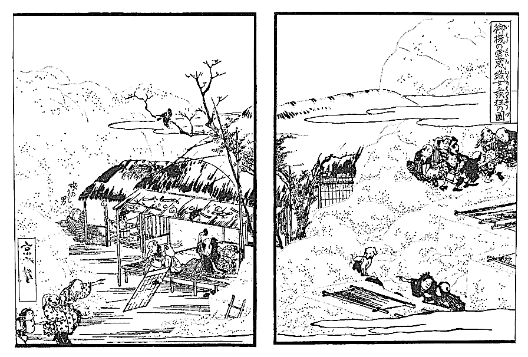
ひとゝせある村の娘、はじめて上々のちゞみをあつらへられしゆゑ大によろこび、
金匁を
論ぜず、ことさらに
手際をみせて名をとらばやとて、
績はじめより人の手をからず、
丹精の
日数を
歴て見事に織おろしたるを、さらしやより母が持きたりしときゝて、娘ははやく見たく物をしかけたるをもうちおきてひらき見れば、いかにしてか
匁ほどなる
煤いろの
暈あるをみて、
母さまいかにせんかなしやとて
縮を
顔にあてゝ
哭倒れけるが、これより
発狂となり、さま／″＼の
浪言をのゝしりて
家内を
狂ひはしるを見て、
両親娘が
丹精したる心の内をおもひやりて
哭になきけり。見る人々もあはれがりてみな袖をぬらしけるとぞ。
友人なにがしがものがたりせり。
貴重尊用の縮をおるには、家の
辺りにつもりし雪をもその心して
掘すて、
住居の内にてなるたけ
烟の入らぬ
明りもよき
一間をよく／＼
清め、あたらしき
筵をしきならべ四方に
注連をひきわたし、その
中央に
機を
建る、
是を
御機屋と
唱へて
神の
在がごとく
畏尊ひ、
織人の
外他人を入れず、
織女は
別火を
食し、
御機にかゝる時は衣服をあらため、
塩垢離をとり、
盥漱ぎこと／″＼く
身を
清む、
日毎にかくのごとし。
紅潮をいむ事は
勿論也。
他の娘らなど
今日は
誰どのゝ
御機屋を
拝にまゐるなどやうにいふ也。
至極上手の女にあらざれば此おはたやを
建る事なければ、
他の
婦女らがこれを
羨事、
比諭ば
階下にありて
昇殿の
位をうらやむがごとし。
神は
敬ふによりて
威をますとは
宜なる
哉。かりそめの物も
守りとして
敬ひ
信ずれば
霊ある事
空しからず、人のはきすてたる
草鞋だに
衆人の
信ぜしによりて、のち／＼は
草鞋天王とて
祭りし事、
五雑組に見えたり。ましてや神々しきを
敬ば
霊威ある
冥々の
天道は人の知を以てはかりしるべからず。こゝに
或村の娘、
例の御はたやにありて心を
澄し、おはたをおりて
居たりしに、
傍の
窓をほと／＼と
音なふものあり、心にそれとおぼへあれば立よりてひらき見るに、はたして心を
通す男也。をりふし人目の
関もなかりしかば、心うれしくおはたやをいでゝ家の
後にいたり、
窓のもとに立たる男を
将て
木小屋に入ぬ。やがて娘の母
皈り来りおはたやに娘のをらぬを見ていぶかり、しきりにその名をよびければ、かの木小屋にきゝつけて
遽驚き男は
逃去り、娘は
心顛倒して
身を
穢たるも
打忘れおはたやにかけ入り、そのまゝ
御機によりて
織んとしけるに、
倏急仰向に
倒れ
落、
血を
吐て
絶入けり。母此
状態を見て大におどろきはしりよりて
助け
起し、まづ御はたやよりいだしさま／″＼にいたはりしが、
気息あるのみにて
死したるがごとし。父は同村のなにがしが家に在しをよびかへし、
医をまねきて
薬など
与へしがそのしるしもなく、
両親はさら也、あたりよりはせよりしものどもゝ娘の
側に
在てなみださしぐみつゝ
手を
束て
死を
俟のみ也。しかるにひとりの男来り、さも
恥らふさまにて人の
後に
座し
欲言としていはず、
頭を
低て
泪をおとしけり、人々これをみれば
同村の
某が
次男也けり。此男やがて
膝をすゝめ娘の母に
対ひ
声をひそめていふやう、今はなにをかつゝみ申さん、
我は
娘御と二世の
約束をしたるもの也。さきのほど人なきを見てむすめごを
誘ひいだししに、おん身のかへり給ひしこゑにおそれわれは
逃さりしが、むすめごがかゝる
災ありしと
聞てつら／＼思ふに、
穢したる身をわすれて
畏きおん
機にかゝり給ひたる御
罰ならん。これもと
我なしたる
罪なれば、人はしらずとも
余処目に見んはそらおそろしく、命をかけて
契りたることばにもたがへりとおもふから、むすめごの
命に
代りて神に御
罰を
詫候はん。さるにても此まゝにてむすめごが
死給はゞ我が命をめされ候へ、こゝにをられ候人々こそよき
証人なれといひつゝ、
赤裸になりて
髪をもさばき井のもとにはしり
寄したゝかに水を
浴、雪の上に
蹲居てなにやらん
唱へていのりけり。時しも
寒気肌を
貫くをりふしなれば、
凍も
死すべきありさま也。ふたおやはさら也人々もはじめてそれと知り、
実にもとてみな／＼おなじく水を
浴ていのりけり。神明かの男が
実心を
憐み、人々のいのりをも
納受まし／＼けん、かの娘目の
覚たるがごとくおきあがり母をよびければ、
衆奇異のおもひをなし、むすめの
側にあつまりていかに／＼といふ。娘はかゝるやうを見てこはなに事ぞといふ。母はうれしくしか／＼のよしいひければ、むすめは
御機によりしとは
覚えしがのちはしらずといふ。母はあまりのうれしさにかの男にもあはせんとせしに、いつか立さりけん見えずなりぬ。かくて娘四五日はなやみしがやがて
常並の
身になりけり。
歳も十七なればかねて
聟をと思ひをりたるをりからなれば、かのしのび男が
実心に
愛て
早速媒の
橋をわたし、
姻礼もめでたくとゝのひて
程なく男子をまうけけり。
其家今
猶栄ゆ。神の御
罰が
夫婦の
縁となりしも
奇遇といふべし。こは我が
幼かりし時の事也き、筆のついでに
記して
御機屋の
霊威ある事をわかふどにしらしむ。あなかしこ。
畏べし、
慎むべし。
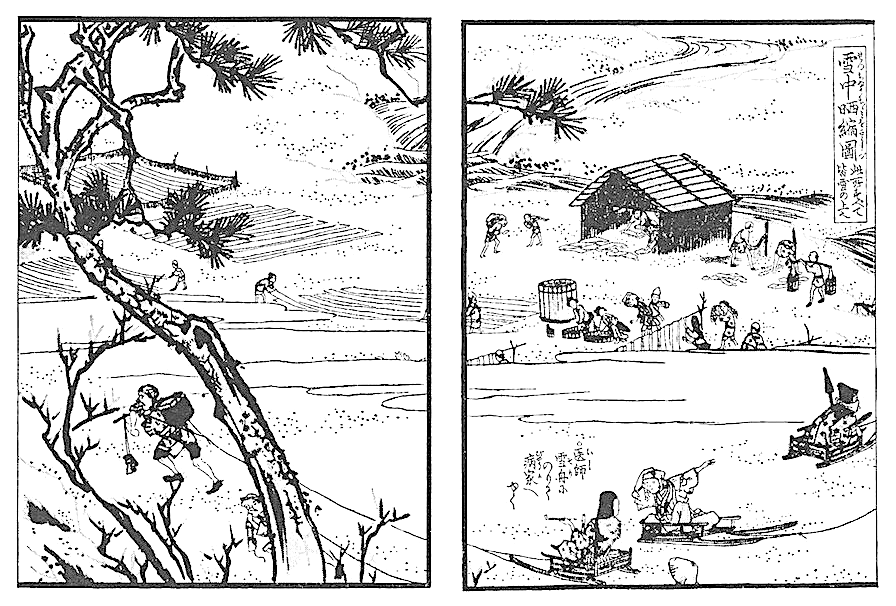
屋とてこれをのみ
業とす、又おりたる家にてさらすもあれど
稀なり。さらしやはその家の
辺又
程よき所を見立、そこに
仮小屋を
造り物をも
置、また
休息の処とす。
晒人は男女ともうちまじり身を
清める事
織女の
如くす。さらすは正月より二月
中の
為業也。此頃はいまだ
田も
圃も
平一面の雪の上なれば、たはたの上をさらし場とするもあり、日の内にさらし
場を
踏へしたる処あれば、
手頃の
板に
柄をつけたる物にて雪の上を
平かにならしおく也。かくせざれば
夜の
間に
凍つきてふみへしたる処そのまゝ岩のごとくになるゆゑ也。
晒場には一
点の
塵もあらせざれば、
白砂の
塩浜のごとし。さて白ちゞみはおりおろしたるまゝをさらす、
余のちゞみは糸につくりたるを
拐にかけてさらす。その
拐とは
細き丸竹を三四尺ほどの弓になしてその
弦に糸をかけ、
拐ながら
竿にかけわたしてさらす也。白ちゞみは平地の雪の上にもさらし、又高さ三尺あまり長さは布ほどになし、
横幅は勝手にまかせ土手のやうに雪にてつくり、その上にちゞみをのばしならべてさらすもあり、かくせざれば
狗など
蹈越てちゞみをけがすゆゑ也。こゝに
拐をならべてさらしもする也。みなその
場所の
便利にしたがふゆゑ
一定ならず。さて
晒しやうは
縮にもあれ糸にもあれ、一夜
灰汁に
浸しおき、
明の
朝幾度も水に
洗ひ
絞りあげてまへのごとくさらす也。
貴重尊用の
縮をさらすはこれらとはおなじくせず、別にさらし場をもうけ、よろづに心を用ひてさらす事御
機をおるに同じ。
我国にては地中の
水気雪のために
発動ざるにや、雪中には雨まれ也、春はことさら也。それゆゑ
件のごとく日にさらす
晴のつゞく事あり。さて
灰汁にひたしてはさらす事、
毎日おなじ事をなして幾日を
歴て白々をなしたるのちさらしをはる。やがてさらしをはらんとする白ちゞみをさらすをりから、朝日のあか／＼と
昇て
玉屑平上に
列たる
水晶白布に
紅映したる
景色、ものにたとへがたし。かゝる
光景は雪にまれなる
暖国の
風雅人に見せたくぞおもはるゝ。
凡ちゞみを
晒には
種々の
所為あれども、こゝには其
大略をしるすのみ。
市場とてちゞみの市あるは、まへにいへる堀の内十日町
小千谷塩沢の四ヶ所也。
初市を
里言に
すだれあきといふ。雪がこひの
簾の
明をいふ也、四月のはじめに
有。堀の内よりはじむ、次に小千谷、次に十日町、次に
塩沢、いづれも三日づゝ
間を
置てあり。
（年によりて一定ならず）右四ヶ所の外には市場なし。十日町には
三都呉服問屋の定宿ありて縮をこゝに
買。市日には
遠近の村々より男女をいはず
所持のちゞみに
名所を
記したる
紙簽をつけて市場に持より、その
品を
買人に見せて
売買の
直段定れば
鑑符をわたし、その日市はてゝ
金に
換ふ。およそ
半年あまり縮の事に
辛苦したるは此初市の
為なれば、
縮売はさら也、こゝに
群るもの人の
濤をうたせ、
足々を
踏れ、
肩々を
磨る。
万の
品々もこゝに
店をかまへ物を
売る。
遠く来りたるものは宿をもとむるもあれば、
家毎に人つどひ、
香具師の
看物薬売の
弁舌、人の足をとゞめて
錐を
立べき所もあらぬやう也。此初市の日は
繁花の地の
 饒
饒にもをさ／＼
劣ず。
（右にいふ四度の市をはりてのちも在々より毎日問屋へ来りてちゞみをうる、又ちゞみ仲買のもの在々にいたりてもかふ也、六月十五日迄を夏ちゞみといひ十七日より翌年の初市までを冬ちゞみといふ）縮の
精疎の
位を一番二番といふ。
価の
高下およそは
定あれども、その
年々によりてすこしづゝのたがひあり。市の日にその相場年の
気運につれて
自然さだまる。
相場よければ三ばんのちゞみ二ばんにのぼり、二ばんは一ばんに
位す。
前にもいへるごとくちゞみは
手間賃を
論ぜざるものゆゑ、
誰がおりたるちゞみは初市に
何程に
売たり、よほど手があがりたりなどいはるゝを
誉とし、
或はその
伎によりて
娶にもらはんといはるゝ娘もあれば、利を
次にして名を
争ふ。このゆゑに市にちゞみを持ゆくは
兵士の
戦場にむかふがごとし。さてちゞみの相場は大やうは
穀相場におなじうして事は
前後す。
年凶すれば
穀は上り
縮は下る。年
豊なれば
縮は上り
穀は下る。
豊凶の万物に
係る事此一を以て知るべし。されば万民
豊年をいのらざらめや。
我塩沢の
方言に
ほふらといふは
雪頽に
似て
非なるもの也、十二月の
前後にあるもの也。
高山の雪
深く
積りて
凍たる上へ
猶雪ふかく
降り
重り、時の
気運によりていまだこほらで
沫々しきが、山の
頂の大木につもりたる雪、風などの為に
一塊り
枝よりおちしが山の
聳に
随ひて
転び
下り、まろびながら雪を
丸て
次第に大をなし、
幾万斤の重きをなしたるもの
幾丈の大石を
転し
走がごとく、これが為にあわ／＼しき雪おしせかれて雪の
洪波をなして大木を根こぎになし、大石をもおしおとし人家をもおし
潰す事しば／＼あり。此時はかならず
暴風雪を
吹きちらし、
凍雲空に
布て
白昼も
立地に
暗夜となる事
雪頽におなじ。なだれは前にもいへるごとく、すこしはそのしるしもあればそれとしるめれど、此
ほふらはおとづれもなくて落下るゆゑ、
不意をうたれて
逃んとすれば
軟なる雪深くて
走りがたく、十人にして一人助るは
稀也。幾十丈の雪人力を以て
掘ることならざれば、三四月にいたり雪
消てのち
死骸を見る事あり。
ほふらを処によりて、○
をほて○
わや○
あわ○
ははたりともいふ。山家にてはなだれほふらを
避んため其
災なき地理をはかりて家を作る。ほふらに村などつぶれたる
奇談としごろ
聞たるがあまたあれど、うるさければしるさず。
魚沼郡の内
宇賀地の
郷堀の内の
鎮守宇賀地の
神社は本社八幡宮也、上古より立せ給ふとぞ。
縁起文多ければこゝに
省く。
霊験あらたなる事は
普く世にしる処なり。
神主宮氏の家に
貞和文明の頃の
記録今に
存せり。
当主は
文雅を
好、
吟詠にも
富り、
雅名を
正樹といふ。
余も
同好を以て
交を
修む。
幣下と
唱る
社家も
諸方にあまたある大社也。此
神の氏子、堀の内にて
娶をむかへ又は
壻をとりたるにも、
神勅とて
壻に水を
賜る、これを
花水祝ひといふ。毎年正月十五日の
神也。
新婚ありつる
家毎に
神使を給はるゆゑ、
門おほき時は早朝よりして
黄昏にいたる時もあり。
友人 斎翁曰
斎翁曰、
（堀の内の人、宮治兵衛）花水祝ひといふ事は
淡路宮瑞井の
井中に
多遅花の
落たる
祥ありし事の日本紀に見えたるに
濫觴して、花水の
号こゝに
起立にやといはれき。されば
新婚の
壻に神水を
灌事
当社の
神秘とぞ。さて当日
新婚ありつる家に、
神使たるべき人は百姓の内
旧家門地の
輩神使を
務べき家定めあり、その中にて
服忌はさら也、
寡なる
者、家内に病人あるもの、
縁類に
不祥ありしもの、
皆除ていさゝかも家内に
故障なく平安
無事なる者を
撰び、
神の前の
朝神主
沐浴斎戒し
斎服をつけて本社に
昇り、えらびたる人々の名をしるして
御鬮にあげ、
神慮に
任て神使とす。神使に
当りたる人
潔斎して役を
勤む。
是を大夫といふ。
（斎翁曰、これすなはち浄行神人也といへり、大夫とは俚言の称也）さて当日
（正月十五日）神使本社を
出るその
行装は、
先挾箱二本
道具台笠立傘弓二張
薙刀神使
侍烏帽子素襖、次に太刀持長柄持傘さしかくる供侍二人
草履取跡鎗一本、
（これらの品々神庫にあるものを用ふ）次に氏子の人々大勢麻上下にて
随ふ。かゝる
行装にて
新婚の家にいたるゆゑ、その以前雪中の道を作り、雪にて山みちのやうなる所は雪を
石壇のやうにつくり、
或は雪にて
桟じきめく処を作りて見物のたよりとす。これらにもあまたの人夫を
費す事也。さてその家にては家内をよく／＼清め、わきて其日正
殿の
間ととなふる一
間は
塩垢離にきよめこゝを
神使の
席とし、
綵筵を
布ならべ上座に
毛氈をしき、上段の
間に
表り刀掛をおく。次の間には
親族はさら也、したしき人々より祝義のおくり物をならべおく。嶋台などに賀咏をそへたるなどおのがさま／″＼也。
門には
幕をうち、よきほどの処をしぼりあげてこゝに
沓脱の
壇をおき、
玄関式台に
准ふ。家内のものいづれも
衣服をあらため
神使をまつ、神使いたるときけば、親あるものは親子麻上下にて地上に
出て神使をむかふ。神使のざうりとりさきにはせきたりて
跋扈かり、大
声にて正一位
三社宮使者と
大呼。神使を見て
亭主地上に平伏し、神使を引てかの正殿に座さしむ、
行列は家の左右にありて
隊をなす。さて神使へ
烟盆茶吸物膳部をいだし、
数献をすゝむ。あらためて
壻に盃を
与ふ、
（三方かはらけ）肴をはさむ、
献酬七
献をかぎる、盃ごとに祝義の小
謡をうたふ。
事終りて
神使去る。他に新姻ありし家あれば又
到る
式前のごとし。此神使はかの花水を
賜ふ事を神より氏子へ
告給ふの
使也。
（神使社頭へ皈る時里正の家に立より酒肴のまうけあり）神使社内へ
皈りしを見て
踊りの
行列を
繰いだす。一番に
傘矛錦のみづひきをかけ
施し
端に
鈴をつけ、又
裁工の物さま／″＼なるをさげる、
傘矛の上には諫鼓を飾る。これを持もの二人
紫ちりめんにて
頬をつゝみてむすびたれ、おなじ紅絞などを
片襷
にかくる。
斎曰、すべて祭礼に用ふる
傘矛といへる物は
古へ
羽葆葢の字を
訓り、
所謂繖にして
（きぬかさとよむ）神輿鳳輦を
覆ひ
奉るべき
錦蓋也といへり。
猶説ありしが長ければ
省く。さて二ばんに
仮面をあてゝ
鈿女に
扮たる者一人、
箒のさきに紙に
女をゑがきたるをつけてかたぐ。次にこれも
仮面にて猿田彦に扮たるもの一人、麻にて作りたる
幌帽やうの物を
冠り、
手杵のさきを赤くなして
男根に
表示たるをかたぐ。三ばんに
法服を
美々しくかざりたる山伏
螺をふく。四ばんに小児の
警固おもひ／＼身をかざりて
随ふ。次に大人の
警固麻上下
杖を持て
非常をいましむ。五ばんに
踊の者大勢花やかなる
浴衣に
（正月なれど人勢に熱てゆかた也）色ある
細帯をなし
群行、
里言にこれを
ごうりんしやうといふ、こは
降臨象なるべし。皇孫日向の
高千穂の峯に
天降り給ひしに
象［＃「象」の左に「シヤウ」の注記］るの心ならんと
翁いへり。
猶説ありしがはぶく。さて
壻の方にては此をどり場をもわがいへのまへにまうけおき、あたらしき
筵をしき、あたらしき手桶二ツに水をくみいれ、松葉と
昆布とを水引にてむすびつけ、むしろの上におき銚子盃をそへおく。水
取とて
壻に水をあぶする者二人、
副取といふもの二人、おの／＼たすきひきゆひりゝしげにいでたつ。むこはゆかた細帯にてをどりのきたるをまつ。をどり家にちかづけば
行列ひらきて、
踊人かのむしろのめぐりにむらがりてうたひつゝをどる。その
唱哥に

めでた／＼の若松さまは枝も栄ゆる葉も茂る
さんやめでたい花水さんや
せなにあびせん
わがせなに」をりかへし／＼しやうがをかえてうたひをどる。
事慣たる
踊のけいご、かの水とりらもその
程を見て
壻に三
献を
祝はせ、かの手桶の水を二人して左右より
壻の
頭へ
滝のごとくあぶせかくる。これを見て
衆人抃躍てめでたし／＼と
賀ふ。むこはそのまゝわがいへにはせ入り、をどりは
猶家にもおし入りてをどりうたふ事七八
遍にしてどろ／＼と立さり、
再びはじめのごとく
列をなして他の壻の家にいたる。
事はてゝもをどりは
宿役の家さてはよしみあるものゝいへにも入りてをどりありく也。
田舎はものを
視る事まれなれば、此日は遠近の老若男女これを見んとて蟻のごとくあつまり、おしこりたちて
熱する事
筆下に
尽しがたし。
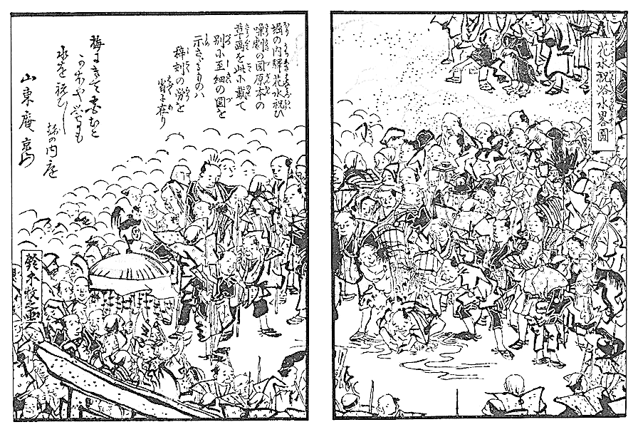
○
按るに、
壻に水を
灌ぐ事は、男の
火に女の
の水をあぶせて子をあらしむるの
咒事にて、
妻の火を
留るといふ
祝事也。此事室町殿の頃武家の
俗習よりおこりて、農商もこれに
傚ひてやゝ
行はれし事物に見えたり。
（貝原先生の歳時記には松永弾正が婚事より起るといへり）江戸にては宝永の頃までも世上一同正月十五日の事とし、祝義のやうになりて大に
流行しゆゑ、
壻に
恨ある者事を水祝ひによせてさま／″＼の
狼籍をなす人もまゝありて、人の
死亡にもおよびし事しば／＼なりしゆゑ、正徳の頃
国禁ありて事
絶たり。くわしくはむかし／＼物語といふものに見えたり。
（国初以来の事を記たる写本、元禄中をさかりにへたる人の老ての作なり）件の花水祝ひは
神秘と
有ば別にゆゑよしもあるべし。あなかしこ。雪のついでにその大略を記して
好古家の
談柄に
具するのみ。
越後の
頸城郡松の山は
一庄の
総名にて、
許多の
村落を
併合たる大庄也。いづれも山
間の
村落にして一村の内といへども平地なし。たゞ松代といふ所のみ平地にて、
農家軒を
連ぬ。
外百番の
謡に見えし松山
鏡といふも此地也。そのうたひにある鏡が池の
古跡もこゝにあり、今は池にもあらぬやうに
埋れたれど、その
跡とてのこれり。
按るに、松山かゞみのうたひは鏡
破の
絵巻といふものを
原として
作れるならん、此ゑまきにも右の松の山の事見えたり。さて松の山の庄内に菱山といふあり、山の形三角なるゆゑの名なるべし。山にちかき処に
須川村
（川によりて名づく）菖蒲村といふあり。此ひし山、毎年二月に入り夜中にかぎりて
雪頽あり、其ひゞき一二里に
聞ゆ。
伝ていふ、
白髪白
衣の
老翁幣をもちてなだれに
乗り
下るといふ。また此なだれ須川村の方へ二十町余の処
真直に
突下す年は
豊作也、菖蒲村の方へ
斜にくだす年は
凶作也。
其験少も
違ふ事なし。
年の
豊凶雪頽に
係る事此山にのみ
限るも
一奇事といふべし。
因にいふ、
余が
旧友寺泊に
住丸山氏の
（医家）祖父は
博学の
聞えありし人なりき。余二十年前丸山氏の家に
遊
をとゞめし時、祖父が宝暦の頃の
著述也とて、越後
名寄といふ
書を見せられしに、三百巻
自筆の
写本也。名寄とはあれど越後の
風土記なり。一国の
神社仏閣名所旧跡山川地理人物国産薬品の
類までも、
部を
分図をいだして
通暁しやすくしたる
精撰也。此
書に右
菱山の
説も
粗見えたれど、さのみはとて引ず。
菱山の事をいふにつきて此書の事をおもひいだせしが、かゝる
精撰大成の
書も
空しく
秘笈にありて
世にしられざるが
惜ければこゝにいへり。
信濃と越後の
国境に秋山といふ処あり、大秋山村といふを
根元として十五ヶ村をなべて秋山とよぶ也。秋山の
中央に
中津川といふありて、
（すゑは魚沼郡妻有の庄をながれて千曲川に入る川也）川の東西に十五ヶ村あり。東の方に在る村は
（●印は越後にぞくす▲印は信濃にぞくす） ●
清水川原村
（人家二軒あり、しかれども村の名によぶ） ●
三倉村
（人家三軒） ●
中の
平村
（二軒） ●
大赤沢村
（九軒） ●
天酒村
（二軒） ▲
小赤沢村
（二十八軒） ▲上の原
（十三軒） ▲
和山（五軒） 西にある村 ●
下結東村 ●
逆巻村
（四軒） ●
上結東村
（二十九軒） ●
前倉村
（九軒） ▲大秋山村
（人家八軒ありて此地根元の村にて相伝の武器など持しものもありしが、天明卯年の凶年に代なしてかてにかえ、猶たらずして一村のこらず餓死して今は草原の地となりしときけり） ▲
屋敷村
（十九軒） ▲湯本
（温泉あり） 此地東には
苗場山天に
聳えて
連岳これにつゞき、西に
赤倉の
高嶺雲を
凌て
衆山これに
双ぶ。
清水川原は越後の入り口、
湯本は信濃に越るの
嶮路あるのみ。
一夫是を守れば
万卒も
越え
難き
山間幽僻の地也。
里俗の
伝へに此地は大むかし平家の人の
隠たる所といふ。
牧之謂らく、
鎮守府将軍平の
惟茂四代の
后胤奥山太郎の孫
城の鬼九郎
資国が
嫡男城の太郎
資長の代まで越後高田の
辺鳥坂山に城を
構へ一国に
威を
震ひしが、
謀叛の
聞えありて
鎌倉の
討手佐々木三郎兵衛入道西念としば／＼
戦ひて
終に
落城せり。此時
貴族の
落人などの此秋山に
隠れしならんか。
里俗の
伝へに平氏といへるもよしあるに
似たり。此秋山には
古の
風俗おのづから
残れりと
聞しゆゑ一度は
尋ばやとおもひ
居りしに、此地をよくしりたる
案内者を
得たりしゆゑ、
偶然おもひたち
案内が
教にまかせ、米味噌
醤油鰹節茶蝋燭までをも
用意して
従者にもたせて立いでしは文政十一年九月八日の事なりき。その日は秋山に
近き
見玉村の
不動院に
一宿、次の日
桃源を
尋ぬる心地して秋山にたずね入りぬ。さて入り口に
清水川原といふあり、こゝにいたらんとする
道の
傍に、丸木の
柱を
建、
注連を引わたし、中央に高札あり、いかなる事ぞと立よりみれば、
小童のかきたるやうのいろは文字にて「ほふそふあるむらかたのものはこれよりいれず」としるせり。案内
曰、秋山の人は
疱瘡をおそるゝ事
死をおそるゝが
如し。いかんとなれば、もしはうそうするものあれば
我子といへども家に
居らせず、山に
仮小屋を作りて入れおき、
喰物をはこびやしなふのみ。すこし銭あるものは
里より
山伏をたのみて
祈らすもあり、されば九人にして十人は
死する也。此ゆゑに秋山の人他所へゆきてはうそうありとしれば、何事の用をも
捨て
逃かへる也。されば此地にては
疱瘡する
者甚だ
稀也、十年に一人あるかなしか也と
語り。さて清水川原の村にいたりしに家二軒あり。
（家居の作りさま他所にかはれり、その事は下にいふべし）しばしこゝにやすらひて立出しに、これよりまづ
猿飛橋を見玉へとて
案内は
前へ立てゆく。此秋山の
道はすべて所の人のかよふべきためにのみひらきたる道にて、牛馬はさらにつかはざる所なれば、ことさらに
道狭く
小笹など
深くしてやう／＼道をもとむる所しば／＼なり。かくてかの
中津川の
岸にいたれり。岸の
対ひ
逆巻村にいたる所に
橋あり、
猿飛橋といふ橋のさまを見るに、よしや猿にても
翼あらざれば
飛べくもあらず、
両岸は
絶壁にて
屏風をたてたるが
如くなれども、岸より一丈あまり下に両岸よりさしむかひたる岩の
鼻あり、これをたよりとして
橋を
架したる也。橋ある所へ
下らん
為に
梯をまうけてあり、橋は
直なる丸木を二本ならべにし、細木を
藤蔓にてあみつけたるなり。
渡りは二十間あまり、橋の
広さは三尺にたらず、
欄杆はもとより作らず、橋を渡りて
対ひの岸に
藤綱を岸の大木にくゝし
下げてあり。
之に
縋りて岸にのぼるたよりとす。たゞ見るさへ
危ければ、
芭蕉が蝶も
居直る笠の上といひし
木曾の
桟にもをさ／＼
劣ず。此橋を渡るにやといふに、案内がいな／＼
今日は此岸につきて東の村／＼を見玉ひて
小赤倉村にいたり玉はゞ
程よき道なるべし、小赤倉には知る人もあれば
宿をもとむべしといふ。橋をわたらずときゝて心おちつき、岩にこしかけて
墨斗とりいだし橋を
写しなどして
四辺を見わたせば、
行雁峯を
越て雲に
字をならべ、
走猿梢をつたひて水に
画を
写す。
奇樹崖に
横たはりて
竜の
眠るが
如く、
怪岩途を
塞ぎて
虎の
臥すに
似たり。
山林は
遠く
染て
錦を
布き、
 水
水は
深く
激して
藍を
流せり。
金壁双び
緑山連りたるさま画にもおよばざる
光景也。目かれせねばしばしやすらひたるに、
農夫二人きたりおの／＼

を
脊負てかの橋をわたらんとす。
岸にたちてこれをみれば、かの
梯を
石壇のごとくふみくだり、橋をゆく事平地のごとく、その
半にいたれば橋
揺々として
危き事いはんかたなく、見るにさへ身の毛いよだつばかり也。わたりはてゝかの
藤綱にすがりて
岸にのぼりしさま
猿のごとし、はからず人のわたるを見て目を
新にせり。さてこゝを
去て
例の
細道をたどり、
高にのぼり
低に
下り、よほどの
途をへてやうやく
三倉村にいたれり、こゝには
人家三
軒あり、
今朝見玉村より
用意したる
弁当をひらかばやとあるいへに入りしに、
老女ようちなつた＊６といひつゝ木の
盤の上に長き草をおきて
木櫛のやうなるものにて
掻て
解分るさま也。いかなるものにて
何にするぞと
問へば、山にある
いらといふ草也、これを糸にしてあみ
衣を作るといへり。あみ
衣といふ名のめづらしければ
強てたづねければ、
老女はわらひてこたへず。案内がかたはらよりあみ
衣とは
婆々どのゝ
着たるあれ也といふ、それを見れば
※布［＃「此／巾」、U+383F、98-12］のやうなるを
袖なし
羽織のやうにしたる物也。
茶を
乞ひければ老女
果してまづ
疱瘡の事を
問ふ。案内がいふ、
我々は
塩沢より秋山を見にきたりしもの也、しほさはには去年此かたはうそうはなしといふ。老女いはく、
うらが内のものは今年は
井戸蛙のやうにさつかゞんで
里へは一
度も
出なんだといひつゝくみ
出したる
茶をみれば、
煤を
煮だしたるやうなれば、別に
白湯をもとめて
喰しをはり、つら／＼此
住居を見るに、
礎もすえず
掘立たる
柱に
貫をば
藤蔓にて
縛りつけ、
菅をあみかけて
壁とし小き
窓あり、戸口は大木の
皮の一
枚なるをひらめて
横木をわたし、
藤蔓にてくゝしとめ
閾もなくて
扉とす。
茅葺のいかにも
矮屋也。たゞかりそめに作りたる
草屋なれど、
里地より雪はふかゝらんとおもへば
力は
強く作りたるなるべし、家内を見れば
稿筵のちぎれたるをしきならべ
（稲麦のできぬ所ゆゑわらにとぼしく、いづれのいへもふるきむしろ也）納戸も
戸棚もなし、たゞ
菅縄にてつくりたる
棚あるのみ也。
囲炉裏は五尺あまり、
深さは
灰まで二尺もあるべし、
薪多き所にて
大火を
焼くゆゑ也。家にかちたるものは
木鉢の大なるが三ツ四ツあり、所にて作るゆゑ也。
薬鑵土瓶雷盆などいづれの家にもなし、秋山の
人家すべてこれにおなじ。今日秋山に入りこゝにいたりて家を五ツ見しが、
粟稗を
刈こむころなれば家に
居る男を見ず。さてやすらひしうち、
杤の
実をひろひて山よりかへりしといふ娘を見るに、髪は
油気もなくまろめつかねたるを
紵にて
結ひ、ふるびたる
手拭ひにて
頭巻をなし、
木綿袷の
垢づきたるが
常なみより一尺もみじかきに、
巾二寸ばかりのもめん
帯をうしろにむすべり。
（女のはちまきするとおびの巾のせばきは古画にもあまた見えたる古風也、きるものゝみじかきもいやしきものゝ古風也）秋山の女みなかくの
如し。老女に
土地の
風俗などたづねしが心かよはざればさらにわからず、物をとらせてやがて立さりけり。
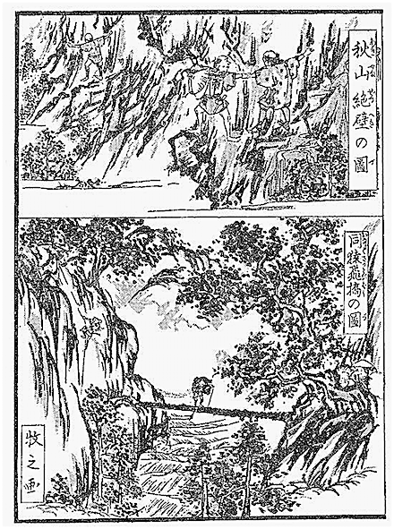
○かくて
中の
平村
（九軒）天酒村
（二軒）大赤沢村
（九軒）を
歴たる道みな
嶮き
山行して此日
申の
下刻やう／＼小赤沢にいたりぬ。こゝには人家廿八軒ありて、秋山の中二ヶ所の大村也。
（上結東は廿九軒有）此村に市右エ門とて村中第一の大家あり、幸ひ案内者の知る人なれば
宿をもとめたち入りて見るに、四
間に六間ほどの
住居也、
主人夫婦は
老人にて、
長男は廿七八、次に娘三人あり。
奥の方に
四畳ばかりの一
間ありて、へだてには
稿筵をたれてあり。
（たれむしろをする事堂上にもありて古画にもあまた見えたる古風なり）勝手の方には日用の
器あまたとりちらしたるなかに、こゝにも
木鉢三ツ四ツあり、
囲炉裏はれいの大きく
深きの也。さて用意したる米味噌をとりいだし、
今朝清水河原村にてもとめたる
舞茸にこゝの
芋などとりそへて、案内が料理すとて
雷盆をといへば、末の娘が
棚のすみよりとりいだしたるを見れば、常にはつかはずと見ゆるすゝけたるなり。のちにきけば此秋山にすりばちのあるは此家と此本家のみとぞ。此地にて近年豆を作りはじめて味噌をもつくれども、
麹を入る事をせず、ほだて
汁にするゆゑすりばちはもたざるとぞ。さて此家にも別に
竈はなくみな
炉にてものを
煮る也。やがて夜もくれければ姫小松を細く割たるを
燈とす、
光り
一室をてらして
蝋燭にもまされり。案内が
調じたるものそろはぬ
碗にもり、
山折敷にすゑていだせり。あるじがもてなしとて、
芋と
蕪菜を味噌汁にしたるなかにいぶかしきものあり、案内がさし心えていふやう、そは秋山の名物の
豆腐也といふ。豆を
挽事はせしが
糟を
灑ざるゆゑ
味なし。
喰をはりて
後あるじがいふ、
茶の
間の
旦那（秋山のことばに人を敬して茶の間の旦那といふ、茶の間をももちし人といふ事にや）どつふりに入らずといふ、此ことばさとしがたくて案内に
問へば、
居風呂に入り玉へといふ事也。すゑふろを
どつふり又は
居り湯ともいふ
（秋山にすゑふろ桶をもちしは此家と此本家とばかり也とぞ、此地の人たま／＼は冬もかゝりゆをつかふ、そとよりかへりても足をあらふ事をせず、かのむしろのうへなれば斯すらん）といへり。ふろに入りしにつねにかはる事なし、道のつかれもわすれてうれしく
元の
炉の
横座に皈りし
（ゐろりはよこを上座とするは田舎のならひなり）に、こゝには
銅鑵もありしとて、用意の茶を
従者が煮たるを
喫、
貯たる
菓子をかの三人の娘にもとらせければ、三人
炉に
腰かけて
箕居、
足を
灰のなかへふみ入れ
珍がりてくわしを
喰ふ。
炉には
柱にもなるべき木を
惜気もなく
焼たつる
火影に
照すを見れば、末のむすめは
色黒く
肥太りて
醜し。をり／＼
裾をまくりあげて虫をひらふは見ぐるしけれど
恥らふさまもせず。二人の
姉は色白くして玉を
双べたる
美人也、菓子を
喰ながら
顔見あはして打ゑみたる
面ざし、
愛形はこぼるゝやう也。かゝる
一双の玉を秋山の
田夫が
妻にせんは
可憐、
琴を
薪として
鼈を
煮るが
如し。
主人は
里地の事をもよく知りて
話も
分る
翁ゆゑ所の
風俗をたづねしに、そのもの
語りたるあらましをこゝに
記す。
○此地近年
公税を
聞にいたれども、米麦を生ぜざるゆゑ
僅の
貢をなす
（※役［＃「金＋斯」、U+9401、101-14］といふ）にいたりて、信濃と越後との
他の村名主の支配をうけ、旦那寺をも定めたれど、冬は雪二丈
余もつもりて人のゆきゝもたゆるゆゑ、此時人死すれば寺に
送る事ならざれば、此村に山田を氏とする助三郎といふものゝ家にむかしより持伝へたる
黒駒太子と
称する
画軸＊７あり、これを
借りて死人の上を二三べんかざし、これを
引導として
私に
葬る。寺をさだめざるいぜんはむかしよりこれにてすませたり。
（秋山は山田と福原の氏のみ也、右の助三郎は山田の総本家也、太子の画像といふは太子のやうに見ゆるがくろき馬にのりて雲の中にあるきぬ地のよしいへり、牧之助三郎が家にいたりかの一軸を見んとこひしが、正月七月のほかをがませずとてゆるさゞりき。）
○此地の人、上食は
粟に
稗小豆をも
交て
喰ふ。下食は
粟糠に
稗乾菜などまじえて喰ふ、又
杤の
実を
食とす。
○
婚姻は秋山十五ヶ村をかぎりとして他所にもとめず。
婦人他所にて男をもてば
親族不通して
再び
面会せざるを、むかしよりの
習せとす。
○秋山中に
寺院はさら也、
庵室もなし。八幡の小社一ツあり。寺なきゆゑみな
無筆也。たま／＼心あるもの里より
手本を
得ていろはもじをおぼえたる人をば
物識とて
尊敬す。
○山中ゆゑ
蚊なし、
蚊屋を見たるものまれ也。
○
深山幽僻の地なれば
蚕はもとより
木綿をも
生ぜざるゆゑ、
衣類に
乏しき事おしてしるべし。
○山に
いらといふ草あり、その皮を
製して
麻に
替て用を
為す。
○
翁がかくかたりし時
牧之いらの
形状をくはしくきかざりしが、
后に
案るに
いらとは
蕁麻の事なるべし、
蕁麻は本草に見えたる
草の名也。
麻の字に
熟したれば
麻に
替ても用ふべきものなるべし。されど
毒草なるよし見えたり。又
山韭といふも
同書に見ゆ、これも
麻のかはりにもすべきもの也。
にらを
いらといふにや。草の
形状を
聞ざりしゆゑさだめがたし。
○秋山の人はすべて冬も
着るまゝにて
臥す、
嘗て
夜具といふものなし。冬は
終夜炉中に大火をたき、その
傍に
眠る。甚寒にいたれば他所より
稿をもとめて作りおきたる
に入りて眠る。
妻あるものはかますをひろく作りて
夫婦一ツかますに
寐る。
○秋山に夜具を持たる家は此
翁の家とほかに一軒あるのみ。それもかの
いらにて
織たるにいらのくずを入れ、
布子のすこし大なるにて
宿り
客のためにするのみ也とぞ。
（牧之こゝに一宿しし時此夜具に臥したるが、かのいとくずもすそにおちてあはせの所がおほく身にそゆべきものにはあらず。）
○
稿にとぼしきゆゑ
鞋をはかず、男女
徒跣にて山にもはたらく也。
○人病あれば
米の
粥を
喰せて
薬とす。重きは山伏をむかへていのらす。
（病をいのらする事源氏にも見えたる古風也。）
○鏡を持たる女秋山中に五人ありとぞ。
（松山かゞみの故事おもひあたれり。）
○此地の人すべて
篤実温厚にして人と
争ふことなく、
色慾に
薄く
博奕をしらず、酒屋なければ酒のむ人なし。むかしよりわら一すぢにてもぬすみしたる人なしといへり。
実に
肉食の
仙境也。
○かくて次の日
やぶつの橋
＊８といふをわたりて湯本に宿り、
温泉に
浴し、次の日西の村々を見て
上結東村に宿り、猿飛橋をわたり、その日見玉村にやどりて家にかへれり。さま／″＼
記すべき事あれども文多ければのせず。
（秋山記行二巻を編して家に蔵む。）
○
杤の
（本字は橡なり）実の
食方翁に
聞しをこゝに記して
凶年の
心得とす。
杤の
実は八月
熟して
落るをひろひ、
煮てのち
乾し、手に
揉てあらき
篩にかけて
渋皮をさり、
簀に
布をしきて
粉にしたるをおき、よくならし水をうちてしめらせ、しきたる布につゝみ水にひたしおく事四五日にしてとりいだし、
絞りて水をさりて
乾しあぐる、その白き事雪のごとし。
是を
粟稗などにまぜ、又は
杤ばかりも食とす、又
餅にもする也。
（もちにする杤は別種なりとぞ）楢の実も
喰ふ、そのしかたは杤に
似たりとぞ。
○此秋山にるゐしたる
山村他国にもあるよしを
聞たれば、
珍しからねどしたしく見たるゆゑこゝに
記せり。
○秋山の産物、
木鉢まげ物るゐ山をしきすげ
縄板るゐ也。秋山に
良材多しといへども、
村中をながるゝ中津川
屈曲深き所浅き所ありて
筏をくだしがたく、又は牛馬をつかはざれば
良材を出しがたく、
財をうる事
難ければ
天然の
貧地也。
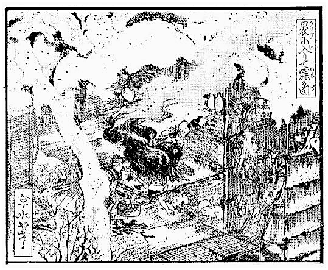
酉陽雑俎に、狐
髑髏を
戴き
北斗を
拝し尾を
撃て火を出すといへり。かの国はともあれ我がまさしく見しはしからず、そは
下にいふべし。狐は寒をおそるゝ物ゆゑ、我里にては冬は見る事
稀也、春にいたり雪のふりやみたるころ、つもりたる雪中食にうゑて夜中人家にちかづき、物を
竊み
喰ふ事
甚悪むべし。人これを知るゆゑ、かれに
盗じとて人智を以てかまへおけども、すこしの
間に
奪ひ喰ふ、
其妖術奇々怪々いふべからず、時としてかれが
来とこざるは
鼠のごとし。狐の
妖魅をなす事
和漢めづらしからず、いふもさらなれどいふ也。
我雪中にはあかりをとらんため、二階の
窓のもとにて
書案に
倚る。
或時故人鵬斎先生より菓子一
折を
贈れり、その夜
寝んとする時狐の事をおもひ、かの菓子折を
紵縄にて
強と
縛し
天井へ高く
釣りおき、かくてはかれが
術も
施しがたからんと
自傲りしに、さて
朝に見ればくゝしたる
縄は
依然としてもとのごとく、菓子折は
消失たるがごとし。
猶憎むべきは、くわしをりは人の
置たるやうに
書案の上にあり、ひらき見ればおほひたる紙もそのまゝにて、くわしはみなくらひ
尽せり、その
妖をなしし事
不思議也。
或時は
猫の
声をなして猫を
呼いだして
淫し
且喰ふ。
老狐は
婦女を
妖して
淫するもあり、
淫せられし女はかならず
髪をみだし其処に
臥して
熟睡せるがごとし、その
由をたづぬれども一人も
仔細をかたりし女なし、
皆前後をしらずといふ、しらざるにはあるまじけれども、事を
恥ていはざるならん。さて狐
善く氷を
聴と
言事、
酉陽雑俎に見ゆ。こは本朝にても今猶
諏訪の
湖水は狐
渉しを
視て人
渉りはじむ、
和漢相同じ。狐の火を
為す
説はさま／″＼あれどみな
信がたし。我が目前に
視しは、ある夜
深更の頃、
例の二階の
窓の
隙に火のうつるを
怪しみその
隙間より
覗きみれば、狐雪の掘揚の上に
在りて口より火をいだす、よくみれば
呼息の
燃る也。その
態口よりすこし上にもゆる事、まへにいへる
寒火のごとし。おもしろければしばらくのぞきゐたりしが、火をいだす時といださゞる時あり、かれが
肚中の
気に
応ずるならん、かれが
気息常に火をなさゞるは
勿論也。
石亭が
雲根志に狐の玉のひかる事を
云しが、狐火は玉のひかるにもあらずかし。狐の玉といふ物の光ると常に見る狐火とは別なるべし。
友人曰、我が
親しき者
隣村へ
夜話に
往たる
皈るさ、
途の
傍に
茶鐺ありしが、頃しも夏の事也しゆゑ、
農業の人の
置忘れたるならん、さるにても
腹悪きものは
拾ひ
隠さん、
持皈りて
主を
尋ばやと
鐺を
手にさげて二町ばかりあゆみしにしきりに
重くなり、
鐺の内に
声ありて我をいづくへ
連れ
行ぞといふに
胆を
消し
鐺をすてゝ
逃さりしに、狐前にはしり草の中へはしり入りしといへり。こはかれが
一時の
戯れなるべし、かゝる
妖魅の術はありながら人に
欺れて
捕へらるゝは
如何。
余答ていふ、
銕炮を以てするは
論なし、
香餌を以てするは、かれ人の
欺くを
知れども
慾を
捨て
慎む事あたはず、それとは
知りながらこれを
喰ひて
反て人をあざむかんとして
捕へらるゝならんか。これ
邪智ふかきゆゑ也。
豈狐のみならんや、人も又
是に
似たり。
邪智あるものは
悪とはしりながらかく
為ば人はしるまじと
己が
邪智をたのみ、
終には身を
亡すにいたる。
淫慾も
財慾も
慾はいづれも身を
亡すの
香餌也。
至善人は路に千金を
視、
室に
美人と
対すれども
心妄に
動ざるは、
止ることを
知りて
定る事あるゆゑ也。かゝる人は
胸に
明なる
鏡ありて、
善悪を照し
視てよきあしきを
知りて其
独を
慎む、
之を
明徳の
鏡といふ。此鏡は
天道さまより
誰にも／＼
与へおかるれども
磨ざればてらさずと、われ
若かりし時ある
経学者の
教に
聞しと、狐の
話につけ大学の
蹄にかけて
風諫せしは、
問ひし人
弱年にてしかも身もちのくずれかゝりし
者なればなりき。こゝには
无用の
長舌なれど、おもひいだししにまかせてしるせり。さて我が
里にて狐を
捕る
術さま／″＼あるなかに、手を
懐にして
捕る
術あり。その術いかんとなれば、春陽の頃はつもりし雪も
昼の内は
軟なるゆゑ、夜な／＼狐の
徘徊する所へ
麦など
舂杵を雪中へさし入て二ツも三ツもきねだけの
穴を作りおけば、夜に入りて此
穴も
凍りて岩の穴のやうになるなり。さてかれが
好く
油滓などをちらしおき、かの穴にも入れおく、さて夜ふけ人
静りたるころ狐こゝにきたり、ちらしおきたるを
喰ひ
尽し、
猶たらざればかならずかの穴にあるをくらはんとし、身をしゞめ
倒になりて穴に入り、いれおきたるものをくらひつくし、
出んとするに
尾のすこしいづる
程に作りまうけたる穴なれば、
再びいづる事
叶はず。雪は
深夜にしたがひてます／＼こほり、かれがちからには穴をやぶる事もならず、いでん／＼として
終には
性を
労らす。
捕へんとはかりしもの、これを見て水をくみきたりてあなに入るゝ、こほりたる雪の穴なればはやくは水も
漏ず、狐は尾を
振はして水にくるしむ。人は
辺りにありてかれ
将に死せんとする時かならず
屁をひるを
避る。狐尾を
揺さゞるを見て
溺死たるを
知り、尾を
採り大根を
抜がごとくして狐を
得る。穴二ツも三ツも作りおくゆゑ、をりよき時は二疋も三疋も狐を
引抜事あり、
之は
凍りて岩のやうなる雪の穴なればなり。土の穴はかれが
得ものなれば
自在をなして
逃さるべし。されば雪国にかぎる事なれば雪のついでにしるせり。
我国雪
盛なる時は、鳥などの食すべきもの一
点もなきゆゑ、冬は山野の鳥は
稀也。春にいたり雪
降りやみし頃諸鳥を見る。二月にいたりても野山一面の雪の中に、清水ながれは
水気温なるゆゑ雪のすこし
消る処もあり、これ水鳥の
下る処也。
雁これを見ればまづ二三
羽こゝにをりて
己まづ
求食、さて
糞をのこして
喰ある処の
目とす、
俚言にこれを
雁の
代見立といふ。雁のかくするは
友鳥を
集ひきたりて、かれにも
求食せんとて也。
朋友に
信ある事人も
恥べき事也、しかるを心なき
徒かの
糞をたづねありき、
代見立の
糞あればかならず
種々の
術を
尽して雁のくるをまちて
捕ふ。雁もたび／＼とられてこれをしるにや、人にしらせじとて
糞に土をかけてかくしおく也。代見立あしくさまで食なかりし処へは、ふんに土をかけずふたゝび
来らず、その
智ある事人におなじ。人またこれらをも
知りてゆるさず、
糞に土をかけたるを見れば
其辺りの
矢頃よき処へ、人の入るべき程に
椀をふせたるやうなるものを雪にて作り、
後に入り口をつけ内は
洞になし、雁のをるべき方に
穴をつくりてそのきたるをまつ。
（雁は不時にはきたらず、くべき時あり、しもにいふべし）雁を見ればかの穴より
銕炮の
銃口をいだしてうつ也、かくするを
里言に
ゆきんだうといふ、
雪ン
堂也。
（これにもかぎらずさま／″＼の術あり）雁の
居る処を
替ふるは
夕暮夜半暁也、人此時をまちて
種々の
工を
尽して
捕ふ。我国雪の
為にさま／″＼の
難義はあらまし前にいへるごとくなれども、雪の
重宝なる事もあり、第一は大小
雪舟の
便利、
縮の
製作○
雪ン
堂○
田舎芝居の
舞台桟敷花道みな雪にて作る。○
辻売の
居る処
売物の
台架もみな雪にて作る、是を
里言に
さつやといふ。○
獣狩、
追鳥。○
積雪家を
埋め
却て
寒威を
禦ぐ。○
夏も
山間の雪を以て
魚鳥の
肉を
擁包おけば
敗餒ず。○
雪水江河の
源を
養ふなど、此外
詳にいはゞ
猶あるべし。是をおもへば天地の万物
捨べきものはあるべからず、たゞ
捨べきは
人悪のみ。
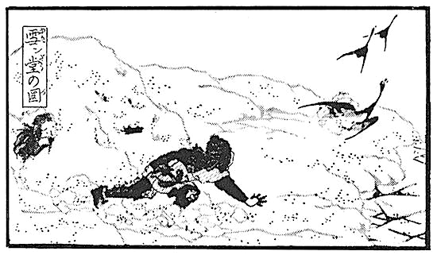
およそ
人悪をなして
天罰に
漏ざる事、
魚の
網にもれざるがごとくなるゆゑ、これをたとへて天の
網といふめり。
新潟より三里上りて
赤塚村といふあり、山のところ／″＼に
凹をなしたるあり、こゝに
杙をたてゝ
細糸の
網をはりて鳥をとる、これを里言に
赤塚の天の網といふ。此村に
潟あるゆゑ、水鳥
潟を
慕ひてきたり、山の
凹を
飛きたり、かならず天の網にかゝる。大抵は
※［＃「契＋鳥」、U+2A0C8、112-5］といふ
鴨に
似たる鳥也、
美味なるゆゑ赤塚の
冬至鳥とて
遠く
称美す。
※※［＃「契＋鳥」、U+2A0C8、112-6］［＃「鳥＋辟」、U+2A1CA、112-6］といふべきを
省けるならん、あぢかもとは
古哥にもあまたよめり。
およそ
陸鳥は夜中
盲となり、
水鳥は夜中
眼明也。ことに
雁は夜中物を見る事はなはだ明也。他国はしらず我国の雁はおほくは
昼は
眠り、夜は
飛行く。眠る時は人に
遠き処にて
集り眠る、此時は首をあげて四方を見てゐる雁二羽あり、人これを
番鳥といふ。
求食にもしか也。
飛に
列をなすは
雁行とて
兵書にもいへり、人のしる処也。されど
居るにも
位列をなして
漫ならず。
求食時は
衆あさり、
遊ぶ時はみなあそぶ。
雁中に一雁ありて
所為衆これに
随ふ、
大将と
士卒とのごとし。人のきたるか又はあやしきを見れば、かのばん
鳥羽たゝきをなす、
余のとりこれをきゝ、いかに
求食ともねぶるとも此羽たゝきをきゝあやまらず、
幾羽も
乱て
飛あがり、さて
列をなして
去る。
里言にこれを雁の
総立といふ。雁の
備ある事
軍陣の
如し、
余の
鳥になき事也、他国の雁もしかならん。
田舎人には
珍しからねど
都会の人の
話柄にいへり。
しぶみ川、
源は
信越の
境よりいで、
越後の内三十四里を
流れて
千曲川に
伴ひ此海に入る。此川越後の○
頸城○
魚沼○三嶋○
古志の
四郡を
流るゝゆゑ、
四府見の
文字ならんかとおもひしに
僻事也。
古書に
渋海又
新浮海とも見えたり。此川
屈り
曲り、
広狭言ひ
尽すべからず。冬は一面に氷り
閉てその上に雪つもりたる所平地のごとし。されど
急流岩に
激して
水勢絶急ところは雪もつもる事あたはず、浪を見る処もあり。
渡口などは
斧にて氷を
砕きてわたせども、
終には
氷厚くなりて力およびがたく、船は
陸に
在りて人々氷の上を
渉る。これを
里言に
ざいわたりといふ。我国の
俚言にすべて物の
凍るを、○
ざい○
しみる○
いてなどいふ。
（いては古言也）此川の氷り正月のすゑか二月のはじめにいたれば、
陽気を
得て
自然と
裂て
流る。大なるは七八
間、種々の
形をなし大小ひとしからず、川の
広き所と
狭き処とにしたがふ。
旦に
裂はじめて
夕べにながれをはる。かならず一日あるひは
一昼夜をかぎりとして三十四里の
氷みなくだけながれて北海にいづる、そのひゞき千
雷のごとく、山も
震ふばかり也。此日川にちかき村々は
慎み
居て
外にいづる事なし。たゞ
他所の者は
渋海川の
氷見とて、花見のやうに
酒肴をたづさへ
岸に
彩筵毛氈などしきてこれを見る。大小
幾万の
氷片水晶の
盤石のごときが、
藍のやうなる浪に
漂ひながるゝは目ざましき
荘観なり。氷を
観て
楽とする事
暖国にはさらにあるべからず。此川に
さかべつたうといふ
奇談あり、
次の
巻にいふべし。
北越雪譜初編巻之中 終
［＃改丁］
越後塩沢 鈴木牧之 編撰
江戸 京山人百樹 刪定
我国の
俚言に
蝶を
べつたうといふ、渋海川のほとりにては
さかべつたうといふ。蝶は
諸の
虫の
羽化する所也、大なるを蝶といひ、小なるを
蛾といふ。
（本艸）其種類はなはだ
多し。
草花も蝶に化する事
本草にも見えたり。蝶の
和訓を
かはひらこといふは
新撰字鏡にも見えたれど、さかべつたうといふ
名義は
未考ず。さて
前にいへる
渋海川にて
春の
彼岸の
頃、幾百万の
白蝶水面より二三尺をはなれて
羽もすれあふばかり
群たるが、
高さは一
丈あまり、
両岸を
限りとして川下より川上の方へ
飛行、その
形状花のふゞきと見んはおろか也。
幾里ともなき
流れに
霞をひきたるがごとく、朝より夕べまで
悉く川上へつゞきたるがそのかぎりをしらず、川水も見えざるほど也。さて
日も
暮なんとするにいたれば、みな
水面におちいりて
流れくだる、そのさま
白布をながすがごとし。其蝶の
形は
燈蛾ほどにて
白蝶也。我国に大小の川々
幾流もあるなかに、此
渋海川にのみかぎりて
毎年たがはず此事あるも
奇とすべし。しかるに天明の
洪水以来此事
絶てなし。
○
本草を
按るに、
石蚕一名を
沙虱といふもの山川の石上に
附て
繭をなし、春夏
羽化して
小蛾となり、
水上に飛ぶといへり。
件のさかべつたうは渋海川の
石蚕なるべし。其
種を
洪水に
流し
尽したるゆゑ、たえたるなるべし。他国にも
石蚕を
生ずる川あらば此蝶あらんもしるべからず。余此蝶を見ざりしゆゑ、
近隣の
老婦若きころ渋海川の
辺りより
嫁せし人ありしゆゑ
尋ね
問ひしに、その
老婦の
語りしまゝをこゝに
記せり。
新撰字鏡といふ
字書は、本朝の
僧昌住といひし人、今より九百四十年あまりのむかし
寛平昌泰の
年間作りたる文字の吟味をしたる
書也。むかしより世の
学匠たち
伝へ
写して
重宝せられき。しかるを近き頃、村田
春海大人右の
書を京都にて
購得てのち、享和三年の春
創て板本となし、世の重宝となりてより
后の
学者の
机上に
置は、
実に
春海大人の
賜なりけり。右の
字鏡ありて
后二十
余年を
歴て、源の
順朝臣の作りたる
和名類聚抄ありき、是も
字書也。元和の
年間那波道円先生
創て板本とせられたり。
（後の板もあり）さて和名抄ありて后五百年ちかくをへて文安年中
下学集といふ
字書ありき、これも元和三年
創て板本となりたり。下学集より五十三年の
后明応五年林宗二
（堺の町人）節用集を作り、
文亀のころの
活字本あり。これいろは引節用集の
権輿也。其后百八十年を歴て元禄十一年に
槙嶋照武駒谷山人が作りたる
（江戸の人）書言字考、一名
合類節用集といふ板本あり、宗二が節用集を
大成したる物にていろは引也。
（平他字類抄のるゐ、下に引用せざるものはこゝにあげず）本朝の
字書のるゐ
大抵は
件のごとし。されば今
俗用する節用集は
新撰字鏡和名抄を先祖の父母として、
后のは皆其子孫也。
是は

の
字の事を
言んとて
童蒙の為に先いふ也けり。
○新撰字鏡
魚の
部に
鮭（佐介）とあり、和名抄には本字は
俗に
鮭の字を用ふるは
非也といへり。されば鮭の字を用ひしも
古し。
同書に
崔禹錫が
食経を引て「
其子苺に
似て
赤く
光り春
生れて年の内に
死す
故にまた
年魚と名く」と見えたり。新撰字鏡に鮭の字を
出しゝは
と
鮭と字の
相似たるを以て
伝写の
誤りを
伝へしもしるべからず。
鮭は
河豚の事なるをや。
下学集にも
鮭干鮭と
並べ
出せり。宗二が
文亀本の節用集にも
塩引干鮭とならべいだせり。これらも
と
鮭と
伝写のあやまりにや。
駒谷山人が
書言字考には○
※［＃「魚＋厥」、U+9C56、117-12］○
石桂魚○
水豚○
鮭と
出して、
注に和名抄を引て本字は
といへり。大
典和尚の
学語編には
※［＃「魚＋厥」、U+9C56、117-13］の字を出されたり、
※［＃「魚＋厥」、U+9C56、117-13］はあさぢと
訓也。
唐の
字書には
※［＃「魚＋厥」、U+9C56、117-12］は大口
細鱗とあれば
にるゐせるならん。
字彙には
は
※［＃「魚＋星」、U+9BF9、117-14］の本字にて
魚臭といふ字也といへり。
按るに、
の
鮮鱗はことさらに
魚臭きものゆゑにやあらん。
鮭は
 ※［＃「魚＋台」、U+9B90、117-15］
※［＃「魚＋台」、U+9B90、117-15］の一名ともいへば
にはいよ／＼
遠し。とまれかくまれ
の字を知りて
俗用には
鮭の字を用ふべし。
件の
如く
鮭の字も古く用ひたれば、おほかたの
和文章にも鮭の字を用ふべし、
の字は
普くは通じ
難し。こゝには
姑く
に
从ふ。
腥にて
喰するは○
魚軒○
鱠○
鮓也。○
烹る○
炙その
料理によりて猶あるべし。

にしたるを
塩引また
干といひしも古き事、まへに引たる
書に見えたるがごとし。
延喜式にのせたる内子
は今いふ
子籠り
の事なるべし。又
同書に
脊腸を
みなわたと
訓り。丹後信濃越中越後より
貢とする
も見えたれば、
古代は
を
供御にも奉りたるなるべし。
都へ
遠きよりみつぎたれば
塩引ならん。
頭骨の
澄徹ところを
氷頭とて
鱠に
雅也。子を

といふ、これを
にしたるも
美味也。子あるまゝを塩引にしたるを
子籠りといふ、古への
すはよりといひしも是ならんか。本草に
味はひ
甘く
微温毒なし、
主治中を
温め
気を
壮にす、多く
喰へば
痰を
発すといへり。我国にて塩引にしたるを
大晦日の
節には用ひざる家なし。又病人にも
喰す。他国にて
腫物にいむは、これになれざるゆゑにやあらん。
は今五畿内西国には出す所を
聞ず。東北の大河の海に
通ずるには
あり、松前
蝦夷地
最多し。塩引として諸国へ
通商は此地に限る。次には我が越後に多し。又信濃越中出羽陸奥也、
常陸にもありときゝつ。これらの国の
はその所の食にあつるに
足るのみ、
通商するにたらず。江戸は
利根川にありといへども
稀なるゆゑ、
初は
初鰹の
価に
比すとぞ。我国にては毎年七月二十七日、所々にある
諏訪の
祭りの次の日より
の
漁をはじめ、十二月寒のあけるを
漁の
終りとす。
古志の
長岡魚沼の川口あたりにて漁したる一番の
初を
漁師長岡へたてまつれば、
例として
一
頭に
（一頭を一尺といふ）米七俵の
価を
賜ふ。
（第五ばんまでなり、たてまつるさけには寸尺の定めあり、俵のかず下る）の大なるは三尺四五寸、小なるも二尺四五寸也。
（猶小なるもあるべし）男魚女魚の
名あり、めなは子あるゆゑ、をなよりは
価貴し。五番まで奉りて
后を
売る、
初の
貴き事おしてしるべし。これを
賞する事、江戸の
初鰹魚にをさ／＼おとらず。初
は光り銀のごとくにして
微青みあり、
肉の色
紅をぬりたるが
如し。仲冬の頃にいたれば
身に
斑の
錆いで、
肉も
紅ゐ
薄し。
味もやゝ
劣れり。此国にて川口長岡のあたりを流るゝ川にて
捕りたるを上
品とす、
味ひ
他に比すれば十
倍也。
僅に其地を
去れば味ひ
美ならず、その味ひ美なるものは北海より
長江を
泝りて
困苦したるの
度にあたれるゆゑならん。
魚急浪に
困苦ば味ひかならず
甘美もの也。北海の魚の味ひ
厚と南海の魚の味ひ
淡の
差ひあるがごとし。
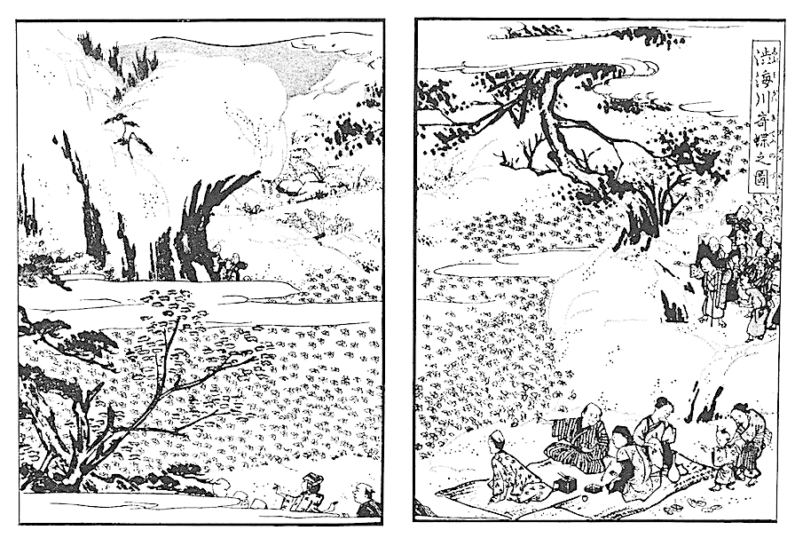
我国の
は初秋より北海を
出て
千曲川と
阿加川の
両大河に
泝る、これ其子を
産んとて也。
女魚に
男魚随てのぼる。
泝る事およそ五十余里、河に
在事およそ五か月あまり也。その
間に
（八、九、十、十一、十二月）人に
捕る。とられざるは海へ
皈る
故に大小あり。子を
産つける所はかれが心にありて
一定ならずといへども、
千曲と
魚野の
両河の
合する川口といふより
沙に小石のまじるゆゑ、これよりをおのれが
産所とし、
流れの
絶急からぬ清き
流水の所に
産也。うまんとて
の
搶て
群るを
漁師のことばに
掘につく
ざれにつくともいふ。
（沙をほるにさま／″＼のかたちをなすゆゑ、ざれことのざれならん）女魚男魚ともに尾をもて
水中の
沙を
掘る。その
広さ一尺あまり、
深さ七八寸、長さ一丈あまり、数日にしてこれを作る。つくりをはれば
女魚そのなかへ
を一
粒づゝ
産む。うむを見て
男魚己が
白※［＃「魚＋米」、U+4C4A、122-12］を
弾着、
直に
女魚男魚掘のけたる
沙石を左右より
尾鰭にてすくひかけて
を
埋む。一
粒も
流さるゝ事をせず。さて此
一掘に
産をはれば又それに
並て
掘りては
産、うみてはほり、
幾条もならべほりて
終には八九尺四方の
沙中へ
行義よく
腹の
子をのこらず
産をはる。
或は所を
替ても
産とぞ。
沙に
小礫の
交りたる所にあらざれば
産ずと
漁師がいへり。その
所為人の
智にをさ／＼おとらず。
産終るまでの
困苦のために
尾鰭を
損ひ
身痩労れ、ながれにしたがひてくだり
深淵ある所にいたればこゝに
沈み
居て
労を
養ひ、もとのごとく
肥太りて
再び
流に
泝る。
掘につきたる時は
漁師もこれをとらず、たま／＼
捕るものあれども
強てはせぬ事也。
女魚さへとらざれば
男魚は其所をさらず。
の河に
泝るは子を
産んとて也。その
女魚に
男魚随てのぼるは子の
為に
女魚を
助くるならん、これも又人の心にことならず。さて
奇なる事は、
河の
広き
場にてかれ
を
産おきたる所
洪水などにて
瀬かはりて
河原となりしが幾とせたちても
産たる子
腐ず、ふたゝび瀬となればその子
生化して
となる。
一年我が
住む所の
在にて
魚野川のほとりに住む人、井を
掘しに
の腥なるをほりいだせし事ありしと、
友人がかたりき。
の
生化するを
漁師のことばに
はやけるとも
みよけるともいふ。
（早化・身ヨ化るならんか）水にある事十四五日にして魚となる。
形ち
糸の如く、たけ一二寸、
腹裂て
腸をなさず、ゆゑに
佐介の名ありといひ
伝ふ。春にいたれば長じて三寸あまりになる、これをばかならず
捕らぬ事とす。此
子雪消の水に
随ひて海に入る。海に入りてのち
裂たる
腹合して
腸をなすと
漁父がいへり。前にもいへる如く
の
漁は寒中を限りとす、寒あけて
捕れば
祟をなすといひつたふ。
我が若かりし時
水村の一
農夫、寒あけて
后獺のとりたる
を
奪ひ、これを
喰ひて
熱になやみ、三日にして死たる事あり、さればたゝりあるといふ
口碑の
説も
誣べからず。又かれが
産おきたるはらゝごをとればその家
断絶すといひつたふ。
の大なるは三尺四五寸にあまるもあり、
之は
年々網を
脱れて長じたるならん。我が
若年のころは
あまたとれたるゆゑその
価もいやしかりしが、近年は
捕うる事
少きゆゑ価もおのづからむかしに
倍せり。年々
工を
新にして
漁するゆゑ捕
減したるならん。
女魚の大なるには
一升もあり、小なるは三四合にすぎず。江戸に多くもてあつかふ
塩引と
唱するは
鰺とて、越後の
とは
一品別種なる物なりと、
或物産家のいへり。河に
生れて海に
成長すれども、むかしより海にて
網に入たる事なし。
其始終をおもふに、
は
鱗族の
奇魚といふべし。
牧之常におもへらく、寒気の頃
捕たる
と
男魚の
白※［＃「魚＋米」、U+4C4A、124-8］とをまじへ、
居る川の
沙石に
包み、
瓶やうのものにうつし入れ、
なき
国の海に
通ずる山川の
清流に、かの
瓶にうつしたるはらゝごを
沙石のまゝさけのうみつけたる如くになしおき、此川にて
いでくとも三年
捕る事を
国禁あらば
を
生ぜんもしるべからず。生ぜば
国益ともならんかし。
（江戸の白魚はむかしそのたねをうつし玉ひしとぞきゝつるためしもあれば也。）
北海新潟の
海門におつる
大河は
阿加川と
千曲川と也。
（あか川の事はこゝにいはず、千曲川一名を信濃川ともいふ、隈の字をも用ふ）千曲川の
水源は信濃越後飛騨の大小の川々あまた
流れ
併て此大河をなす也。越後は
妻有上田の二
庄をながれて
魚野川の
急流をなし、
魚沼郡藪上の庄川口
駅の
端ににいたりて信濃を
流るゝ川と合して、
古志郡蒲原郡の
中央をながれて海に入る。信濃の流は
濁り越後は清し。
信水は
犀川の
濁水あるゆゑ也。
初秋より海を
出て此
流に
泝る。蒲原郡の流は
底深く
河広ゆゑ大
網を用ひて
を
捕る。かの川口
駅より
上、
上田妻有のあたりにては
打切といふ事をなして
を
捕る。その
仕方は夏の
末より事をはじめて、
岸根より川中へ丸木の
杭を
建つらね
横木をそえ、これに
透間なく
竹簀をわたして
墻のごとくになし、川の石をよせかけて
力となす。長さは百
間二百間にいたる。
周囲形は川の
便利にしたがふ。
船の
通路はこれを
除きて
障りをなさず、又
通船の
路印を
建て
夜の
為とす。さてこれに
つゞといふ物を
簀下へならべ、
の入るべきやうにくゝしおく也。
（くひありてつゞのすゑをもくゝしおく）此つゞの作りやうは竹を簀にあみて
末をば
縛し、
の入るべき口の方には竹の
尖を作りかけて
腮をなし、地につく方はひらめ上は丸くし、
胴には
彭張あり、長さは五尺ばかり也。
入らんとすれば口
広がるやうにいかにも
巧に作りたるもの也。これを
つゞといふは
筒といふべきを
濁り
訛れるならん。
田舎言葉には
古言のまゝをいひつたへてむかしをしのぶもあれど、
言の
清濁をとりちがへて物の名などのかはれるも多し。
（阿加川を所にてはあが川といふ）さて此打切を作るは幾ばくの
費ある事ゆゑ、
漁師ども
語らひあひてする事也。打切したる岸には
仮に小屋をつくりて、
漁師ども
昼夜こゝにありて夜も
寐ずして
のかゝるを
待也。七月より此
業をなしはじめて十二月
寒明まで、
一連のものかはる／＼此小屋にありて
をとる。此打切は川口を一
番として
水上へ十五番まであり。こゝはいづくの
持とて川にその
境目ありてはなはだ
厳重也。
○さて
は川下より
流に
泝て打切にいたり、
船のかよふべき所は流れ打切にせかれて小
滝をなすゆゑ滝にのぼるをいとふにや、大かたは打切のよどみにいたりかの
垣にせまり、
潜るべき所やあるとこゝかしこをたづね、
つゞをかけたる所にいたり、くゞりいでんとしてこゝに入れば
底あるゆゑ、いでんとするに口に
尖りの
腮ありて
出る事あたはず。
○さて小屋にあるものはかゝりつらんとおもふほどをはかり、
はなかますといふ舟をのりいだし
（大木を二ツにわりてこれをくりぬきて舟にしたるもの也 ○瀬の浅き所は舟を用ひず）雪
下る寒夜にも
銭の
為にそのさむさをもいとはず、
赤裸になりて水に
飛入り
つゞをはづし、
あればつゞのまゝ舟に入れさけをいだす。大
は三尺あまりもあるものゝ
※狂［＃「魚＋拔のつくり」、U+9B81、126-12］ふゆゑ
魚※［＃「木＋揆のつくり」、U+6951、126-12］といふものにて
頭を一打うてば
立地死す。こゝに
奇なる事は、此魚※
［＃「木＋揆のつくり」、U+6951、126-13］といふもの馬の
爪をきりたる
※［＃「木＋揆のつくり」、U+6951、126-13］にあらざれば
死せず。
私につくりたるつちにてはいくつ打ても
升ず。又かれが
頭に打べき所もありと
漁夫がいへり。
（ある所にてはいづくにても此なつちを用ふ、みな馬の爪きるつち也とぞ）すけご（助賈なるべし）とて
の
仲買するもの、此小屋にきたりてさけをかふてうる也。
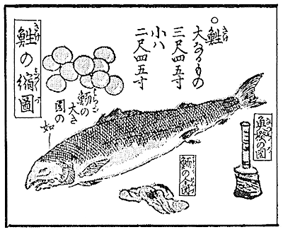
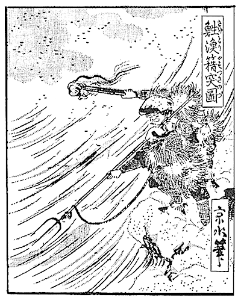
かきあみとは
 網
網なり、
を
ひ
捕るをいふ。その
ひ
網の作りやうは又ある木の
枝を
曲げあはせて
飯櫃なりに作りこれに
網の
をつけ、長き
柄ありてすくふたよりとす。
岸の
阻たる所は
岸につきてのぼるものゆゑ、岸に
身を
置ばかりの
架をかきて、こゝに
居て
腰に
魚※［＃「木＋揆のつくり」、U+6951、130-3］をさし
を
掻探りてすくひとるなり。岸の
絶壁なる所は木の根に
藤縄をくゝして
架を
鉤り、こゝに
居て
掻網をするも
稀にあり。
幾尋ともなき
深淵の上にこのたなをつりて
身を
置、
一条の
縄に
命をつなぎとめてその
業をなす事、
怖しともおもはざるは此事になれたるゆゑなるべし。
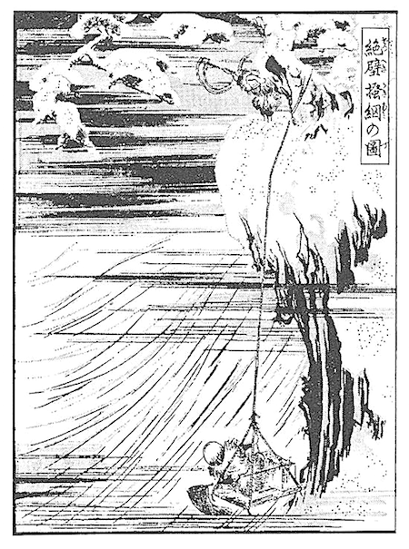
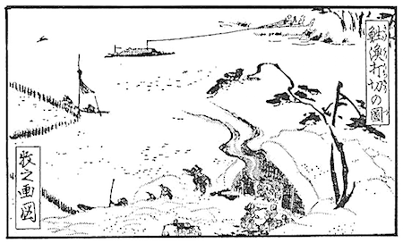
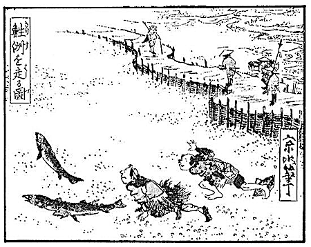
或村に
（不祥の事ゆゑつまびらかにいはず）夫婦して母一人をやしなひ、五ツと三ツになる男女の子を
持たる
農人ありけり。
年毎に
の時にいたればその
漁をなして
生業の
助とせり。此所はすべて
岸阻たるゆゑ村のものおの／＼岸にかの
架を作りて
掻網をなす。しかるに
絶壁の所は架を作るものもなければ
もよくあつまるゆゑ、かの男こゝに
架をつりおろし、一すぢの
縄を命の
綱として
をとりけり。さて十月の頃にいたり雪
降る日には
も多く
獲易きものゆゑ、
一日降る雪をも
厭ず
蓑笠に
身をかため、朝より
架にありてさけをとり、
畚にとりためたる時は
畚にも
縄をつけおけば、おのれまづ
架を
鉤たる
綱に
縋りて
絶壁を
登り、さてふごを引あぐる也。つなにすがりて
登り
下りするもこれに
慣ては
猿のごとし。
物喰ふ時ものぼる也。此日も
暮て
雪荒になりければ、雪荒にはかならず
えやすきがゆゑにふたゝびかの
架にゆかんといふを、雪荒なればとて母も
妻もとゞめたるをきかず、
炬を
用意して
架にありてかきあみをせしに、はたしてさけあまたえしゆゑ
鵜飼の
謡曲にうたふごとく
罪も
報も
后の
世も
忘れはてゝ、おもしろくやゝ時をぞうつしける。
○かくてその
妻は母も
臥し子どもゝ
寐かしたれば、この雪あれに
夫はさこそ
凍え玉ふらめ、
行むかへてつれ
皈らんと、
蓑にみの
帽子をかふり、
松明をてらし、ほかに二本を
用意して
腰にさし、かしこにいたり
松明をあげてさしのぞき、
遙下にある
夫にこゑかけ、いかにさむからん
初夜もいつかすぎつらん、もはややめて
皈り玉へ、
飯もあたゝかにして酒ももとめ
置たり、いざかへり玉ヘ、たいまつもなかるべし、
橇も入るやうになりしぞ、それも
持来れりといふも、西おとしの
雪荒にてよくもきこえず。猶こゑをあげていへば
夫これをきゝつけ、よろこべよ
はあまたとりたるぞ、あすはうちよりてうまき酒をのむべし、今すこし
捕てかへらん、そちはさきへかへれといふ。しからば
松明はこゝにおかんとて、
燈したるまゝ
架をつりとめて
綱をくゝしたる
樹のまたにさしはさみて、別の
松明に火をうつして立かへりぬ。これぞ
夫婦が一世の
別れなりける。
○さるほどに
妻は
家にかへり
炉に火を
焼たて、あたゝかなるものくはせんとさま／″＼にしつらへ
待居たりしに、時うつれども
皈りきたらず。まちわびてふたゝびかの所にいたりしに、かのはさみたるたいまつも見えず、持たるたいまつをかざして下を見るに、ひかりもよくはとゞかで
夫のすがた見えわかたず、こゑのかぎりよべどもこたへず。さては
架にはをらぬにや、さるにてもいぶかしと心をとゞめて
松明をふりてらし、
登りし
跡の雪にあるやとあたりを見れば、さいぜん木のまたにさしはさみおきたる
炬もえおちてあり、これに心つきて持たるたいまつにて
猶たしかに見れば、
架をくゝしたる
命のつな
焼残りてあり。これを見るよりむねせまり、たいまつこゝにやけおちて
綱をやきゝり、
架おちて
夫は
深淵に
沈たるにうたがひなし、いかに
泳をしり給ふとも
闇夜の
早瀬におちて
手足凍え
助り玉ふべき
便はあらじ。こはいかにせん／＼
姑にいひわけなしと
泪を
雫にふらせて
哭けるが、我もともにと
松明を川へ
投入れ身を
投んとしつるが、又おもへらく、わがなきあとは
老たる母さまと
稚き
子どもらを
養ふものなく、手をひきて路上に立玉ふらん。
死ぬるにも死なれざる
身には成けるかな、ゆるし玉へわがつまと雪にひれふし、やけたるつなにすがりつきこゑをあげて
哭になきけり。かくてもあられねばなく／＼
焼残りたる
綱をしるしにもち、
暗き
夜にたいまつもなく
雪荒に
吹れつゝ
泪もこほるばかりにてなく／＼立かへりしが、
夫が
死骸さへ見えざりしと、其所に近き
辺りの
友人が
此頃の事とてさきのとし物がたりせり。
総滝とは
新潟の
湊より四十余里の川上、
千隈川のほとり
割野村にちかき所の
流にあり。
信濃の
丹波島より
新潟までを流るゝ
間に
流の
滝をなすはこゝのみなり。その
総滝とは川はゞはおよそ百
間ちかくもあるべきに、大なる
岩石竜の
臥たるごとく
水中にあるゆゑに、おとしくる水これに
激して滝をなす也。
こゝにいたりて
激浪にのぼりかねて
猶予ゆゑ、
漁師ども
仮に
柴橋を
架わたし、
岸にちかき
岩の上の雪をほりすてこゝに居てかの
掻網をなす。されど命の
惜きにやおの／＼
己が
腰に
縄をつけこれを岩の
尖りなどに
縛しおく。こゝに
往来するには岩に足のかゝるべき所をわづかに作り、岩にとりつきて
登り
下りをなす。
若一あしを
過つ時は
身を
粉に
砕きて
滝におちいるめり、その
危き事いはん方なし。
余前年江戸に
在し時右の事を
先の
山東翁にかたりしに、
翁曰世路の
灘は
総滝よりも危からん、世は
足もとを見て
渡るべきにやとて
笑へり。
格言なりと耳にとゞまりしが、今
偶然おもひいだしたるゆゑしるせり。
○
当川（三角なるあみにてとるをいふ）○
追ひ川
（水中に杭をたてあみをはり、さほにて水をうちさけをおひこむ）○四ツ
手網（他国におなじ）○
金鍵（水中のさけをかぎにかけてとる、そのしゆれん奇々妙々なり）○
流し
網（さしあみともいふ、あみの長さ二百けんあまりなり、かんばらこほりにてする事なり）○
 突（水中のさけを見すましやすにてつきとる、一ツものがす事なし、そのしゆれんこれもまたはなはだ妙なり）
突（水中のさけを見すましやすにてつきとる、一ツものがす事なし、そのしゆれんこれもまたはなはだ妙なり）○このほかあまたありといへども、
詳に
解んは
駁雑ければその
網をもらせり。
さけのすばしりは
雪前に
河原などにある事也。かれあみにせめられ人にも
追はれなどして、水を
飛離れて河原にのぼり、
網ある所をこえて水にとび入りてあみを
退るゝ也。此時は大
さきにすゝみて水をはなるれば、よりゐたる小
など
后に
随ひてのぼり、河原をはしる事四五
間にすぎざれども、
箭のごとくして人の足もおよびがたし。さきにすゝむ大
、もし物にさはりて
横に
倒るゝ時は、あとにしたがひたる
もおなじくたふれてふたゝびおきず、人の
捕るを
俟がごとし。はからずして手も
濡さず二三
頭のさけをうる事あり。かれ
足無して地をはしり、
倒れてふたゝび
起ざるなど、
魚族中
比ふべきものなきは
奇魚といふべし。
前年牧之江戸に
旅宿の頃、
文墨の
諸名家に
謁して
書画を
乞ひし時、
前の山東庵には
交情厚くなりてしば／＼
訪ひしに、京山翁
当時はいまだ若年なりしが、ある時雪の
話につけて京山翁いへらく、今年正月
友人らと梅見にゆきしかへるさ
青楼にのぼり、その
暁雨ふりいだししが、とみにやみけるゆゑ青楼を
出て日本堤にさしかゝりしに、
堤の下に柳二三
株あり、この柳にかゝりたる雨、
垂氷［＃「垂氷」の左に「つらゝ」のルビ］となりて一二寸づゝ
枝毎にひしとさがりたるが、
青柳の糸に白玉をつらぬきたる如く、これに
旭のかゞやきたるはえもいはれざる
好景なりしゆゑ、堤の
茶店にしばしやすらひてながめつゝ、はからず
詩を作りし事ありき。これ
余寒の暁に雨のみじかくやみたる
気運の
機工を
得てかゝる
奇景を見たるなりとて、
珍しがりてかたられしが、
暖地にてはめづらしくもあるべけれど、我国の
垂氷に
比ふれば
水虎［＃「水虎」の左に「カツハ」のルビ］の
一屁［＃「屁」の左に「ヘ」のルビ］也と心にをかしとおもひし事ありき
＊９。
○そも／＼我国の
垂氷をいはんに、
他は
姑く
舎てまづ
我が
家の
氷柱をいはん。表
間口九間の
屋根の
簷に初春の頃の
氷柱幾条もならびさがりたる、その
長短はひとしからねども、長きは六七尺もさがりたるが
根の
太さは二尺めぐりにひらみたるもあり、
水晶をもて
※子［＃「竹かんむり／隔」、U+25D29、135-10］をつくりたるやう也。されど我国の人は
稚きより
目なれたる事なればめづらしからず、
垂氷を
吟詠に入るものなし。右のつらゝ
明りにさはるゆゑ
朝毎に
木鋤にてみな打おとさす。又
家峯の谷になりたる所を
俚言に
だぎといふ、だぎは春解するやねの雪のしたゝりみなこゝにつたふゆゑ、つらゝは
簷よりも大也、下にさはりなき所は二丈もさがる事あり。次第にふとりて大になるも物にさはらぬ所はすておきしを、いつか
打砕く時は大力の男
杭などにてしたゝかに打て、やう／＼をれおちてくだけたる四五尺なるを、
童らが
打よりて
手遊の
雪舟にのせて引きありき
遊ぶもあり。これらは
我家の
氷柱にて
珍らしからず、
宮寺のつらゝは猶大なり、又山中のつらゝは
里地に
比しがたし。
我が住む
塩沢の巽三里
余に清水村といふあり、此村
持の山に
笈掛岩といふ
在、高さ十丈あまり
横二十五
間あり。下に谷川あり、
（登り川といふのみなもとなり）その
形ち
屏風をひらきてたてまはしたるがごとし。岩の
頂き
反り
伏して川に
覆ひたる下は四五十人
坐して
狭からぬほどにて、やねあるがごとし。我が
上越後には名をよぶ
奇岩おほき中にこれもその一ツ也。此
笈掛岩の
氷柱こそ我が国の人すら目をおどろかすなれ。そのつらゝあまた
垂れ
下りたるなかには、長きは十丈ばかり太さは
二た
抱もあるべし。
垂たる
形状は
蝋燭のながれたるやうなれど、
里地のつらゝとたがひて
屈曲種々のかたちをなして
水晶にて
工に作りなしたるがごとく、
玲瓏として
透徹るが
暾の
暉たるはものに
比ふべきなしと、此清水村の
里正阿部翁のものがたりにてきゝぬ。右のつらゝさへ我をはじめつらゝはめづらしからねば
強て見にゆく人なし。此清水村の阿部翁はむかし
世に
聞えたる阿部右衛門の
尉が子孫也、世々清水
越の
関守たり。こゝに長尾伊賀守の
城跡あり。
我が上越後は
山岳つらなれば滝多し。滝ある所に夏木の大樹ありて、春にいたり
枝につもりし雪まづとけて葉をいださぬ木の森をなしたるに、滝の
水烟枝に
潤ひしが
津となり
氷柱となりて
玉簾をかけ
周したるやうなるは、これも又たぐふべきものなし。さてまたその滝にもしたゝる水
氷柱となり、
玉簾の内に滝をおとすありさま
四辺は
乱瓊細玉の雪中也、かの玉を出といふ
崑山もかくやとおもはる。かゝる
奇景も
猟師樵夫のほか見る人
稀也。これを
暖国の人にみせなばいかにめづらしとかおもふらん。
牧之柏崎より
妻有の庄へ山
越したる時目前に見たる所也。
我が家に江戸に
二たとせ
居たる
僕あり。かれがかたりしに、江戸に
寒念仏とて
寒行をする
道心者あり、寒三十日を
限りて毎夜鈴が森千
住にいたり
刑死の
回向をなす。そのすがたは
股引草鞋にてあたゝかに着てつとむるなり。又寒中
裸参りといふあり、家作にかゝはるすべての
職人の
若人らがする事なり。そのすがたは
常より長く作りたる
挑灯に
日参などの
文字をふとくしるしたるを
持、
裸にて
をふりつゝとくはしりておもひ／＼にこゝろざす所の神仏へまゐる也。まゐらんとする時はかならず水を
浴ぶ。寒中の夜は
幾人も西東へはせありくとかたれり。我国の
寒行は、
事はこれに
似てその行ははなはだ
異也、我国の寒中は所として雪ならざるはなく、
寒気のはげしき事はまへにいへるがごとし。その雪をふみて毎夜寒念仏又は寒大神まゐりとて、寒中一七日
或ひは三七日、心々に日をかぎりておのれが志す神仏へまうづ。おほくは
農人の
若人ら
商家のめしつかひもあり、ひるは
業をなして夜中にまうづる也。昼のいとなみのあひ／＼日に三度づゝ水をあぶ、猶あぶるは心々也。
禁じて身を
拭ふ事をせずぬれたるまゝにて
衣服を
着す。
坐するには
米稿の
穂の方をくゝしたるを扇のやうにひらきてこれに坐す、
（此わらは七五三のこゝろとぞ）かりにも常のごとくには
居らず。このゆゑに此
束ねたる
稿は
帯にはさみてはなたず。また
行の中は
无言にて
一言もいはず、又母のほか妻たりとも女の手より物をとらず、
精進潔斎は
勿論也。他の人もかれが
腰にはさみたるわらを見て
行者なる事をしり、むごんなれば
言語をかけず人々つゝしむ事也。これはもし行者にことばをかけ、行者あやまつてことばをいだせば行
破れたるゆゑ、はじめより
行をしなほすゆゑ也。又
无言の行はせざるもあり。さて夜に入れば
千垢離をとり、百度目に一
遍づゝかしらより水をあぶるゆゑ十遍水を
浴。身をのごはずきるものをあらため雪ふらずとも
簑笠也、あるひはいかなる
雪荒にもいとふ事なく
鉦うちならしつゝゆく。これにはかならず
同行のものある
故、そのかどにいたりてかねをならせば同行も家にありてかねをうちあいさつとして
出きたる。家に入らざるものは、この行者女にゆきあへば
身のけがれとして川に入り、又は井戸をこふて水をあぶる事まへのごとくして身をきよめ、さてまゐるなり。このゆゑに行者の
鉦の
音をきけば女はすべて
門へはいでず、
道にあへば
遠くにかねのおとをきゝてかくるゝ也。
行の内人の
死したるをきけば、たとひ二里三里ある所にても、つねにしる人しらぬ人を
論ぜず、
志願の所にまうでたる
皈るさなど、其家にいたりねんごろに
回向す。これをも
行の一ツとす。さるゆゑに
不幸ありて日のたゝぬいへにては、
行者のきたるをまちてものくはせんなど、いかにも清くして
待也。寒念仏寒大神まゐりの
苦行あらまし
件のごとくなれば、他国はしらず、江戸の寒念仏
裸まゐりに
比ふればはなはだ
異也。かゝる
苦行をなすゆゑにや、その
利益の
灼然事を次にしるしつ。
苦行して
祈ればいづれの神仏も
感応ある事を
童蒙に
示す。
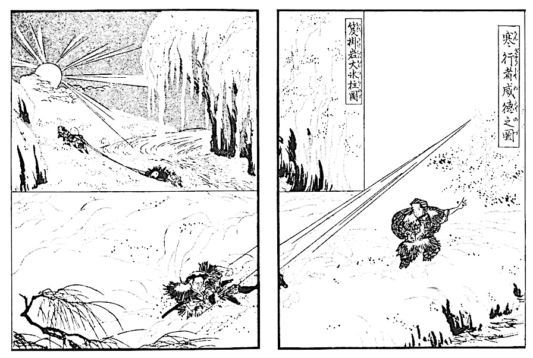
近来の事なりき、我が
住塩沢より十町あまり西南にあたりて田中村といふあり、此村に右の
寒行をする
者ありけり。ある日米
俵を
脊負ひて五六町へだてたる中村といふへゆく、その
道は
三国海道なれば人あしも
繁し。すべて雪道は人の
踏かためたる
跡のみをゆきゝするゆゑ、いかなる広き所も道は
一条にて
其外をふめば
腰をこえて雪にふみ入る也。それゆゑに
重荷など持たるは、たとへ武家たりとも
一足踏退て
（ふみのくべきあとはあり）道を
譲るが雪国の
習ひ也。かの田中の者一人の武士にゆきあひ
重荷ながらもこなたより一足ふみのきたるに、武士は
声をあらゝげ
脇よれといふ。今ひと足ふみのかば重荷ゆゑことさら雪におち入らんとおもふゆゑ、いかにせんとためらひしを、
無礼ものめと
肩をつきたるゆゑ
俵を
脊負ていかでたまるべき、雪の中へよこさまに
転び
倒れしに、武士も又人に
投られし
如く
倒れければ、田中の者は
早く
起て
后も見ずしていそぎゆきけり。かゝるあとへおなじ田中の者こゝに来り、武士の雪中に
倒れて
起もあがらざるを
不審立よりて、なにぞ
病玉ふかといへば、武士はかなきこゑしておこしくれよといふ。その
 色
色はつねならねど病人とも見えず、いざとて手を
採て
引起さんとするに手をのばさず、
抱えおこさんとすれどもおきず、
猶力のかぎりおこさんとすれども
重き事大石の如くにて
身を
動ず、こは
不思議と
驚怖るを見て、武士しか／″＼の事ありしが
五体すくみて
動く事ならずといふ。田中のものこの武士が米俵を
脊負ひしものといひしをきゝて、心におぼえあればさてはと心づき、これかならず
行者の
罰ならんと
行者たるあらましをかたりきかせ、われもかれがゆきたる中村へゆくもの也、かの行者をこゝへつれきたらん、わび玉へ、こゝよりは程ちかしまち玉へとてはせゆき、やがて行者をつれきたりければ、武士は手をすりてゆるしたまへ／＼といふ。行者はいかりたる
色もなく、なにともいはず
衣服を
脱てかたへの
水楊にかけ、
赤裸になりて水を
浴み
寒まゐりする方をふしをがみ、武士の手をとりて
引起しければなにのくもなくおきあがり、いかにも
恥たるさまにて
礼をのべて立さりけるとぞ。常に我が家に
来る田中のものがかたれり。
我が
隣駅関といふ
宿につゞきて
関山といふ村あり、此村より
魚野川を
渡るべき
橋あり。流れ
急なれば
僅の
出水にも橋をながすゆゑ、
仮に
造りたる橋なれど川
広ければはしもみじかからず。雪の頃は所のもの橋の雪を
掘て
途を作れども、一夜の内に三尺も五尺もつもる事もあるゆゑに、日毎にもほらざれば
橋幅の
狭きに雪のつもりたる上をわたるなれば、
渡り
慣たるものすら
過て川におち入り
溺死するものも
間あり。
○さて此関山村のかたほとりに、
独り
草庵を
結びて
住む
源教といふ
念仏の
道心坊ありけり。年は六十あまり、たゞ念仏
三昧の
法師にて、
无学なれどもその
行は
碩僧にもをさ／＼
劣ず。かゝる僧なれば
年毎に
寒念仏の
行をつとめ、
无言はせざるゆゑ
夜毎に念仏して
鉦打ならし、ものにまゐりしかへるさ二夜に一度はかの
橋に立て年頃おぼれしゝたる者の
回向をなししに、
今夜は満願とてかの橋にもいたり
殊更につとめて
回向をなし鉦うちならして
念仏しけるに、
皎々たる月
遽然に
曇りて
朦朧たり。こはいぶかしとおもひしに、
水中より
青き火
閃々ともえあがりければ、こは
亡者の
陰火ならんと目を
閉てかねうちならし、しばらく念仏して目をひらきしに、橋の上二
間ばかり
隔て、
年齢三十あまりと見ゆる女白く青ざめたる
に
黒髪をみだしかけ、今水よりいでたりとおもふばかり
濡たる袖をかきあはせて
立り。
常人ならば
吁といひて
逃べきに、さはなくてその方に身を
対てつら／＼見るに、
斯闇くなりしにかゝるものゝあり／＼と見ゆるもたゞ人ならじと猶よく見れば、
体は
透徹やうにてうしろにあるものも
幽に見ゆ。
腰より下はありともなしともおぼろげ也。これこそ
幽霊ならめとしきりに念仏しければ、
移歩ともなくまへにすゝみきたり、
細微たる
声していふやう、わらはゝ
古志郡何村（村名はもらす）の
菊と申もの也、
夫も
子も
冥途にさきだて
独り
跡にのこり、かそけき
烟りさへ立かねたれば、これよりちかき
五十嵐村に
由縁の
者あるゆゑ
助けを
乞んとてこの橋をわたりかゝり、あやまちて水に入り
溺死たるもの也、
今夜は四十九日の待夜なれど、世にすてられしかなしさは
誰ありて
一掬の水だに
手向る人なし。さるをおん
僧しば／＼こゝにきたりて
回向ありつる
功徳によりてありがたき
仏果をばえたれども、
頭の
黒髪が
障りとなりて
閻浮に
迷ふあさましさよ。此上のねがひには此くろかみを
剃こぼして玉はれかし、あな
悲哉とて、
に袖をあてゝさめ／″＼と
泣けり。
源教いふやう、そはいとやすき事也、されどこゝには
剃べき物ももたざれば、あすの夜わがすむ
関山の庵へきたり候へ、望をはたし申さんといひければ、さもうれしげにうなづくと見えしが
烟りのごとく
消うせ、月は
皎々として雪を
照り。
○さるほどに
源教いほりにかへりて、
朝日人をたのみて
旧来親しき
同じ村の
紺屋七兵衛をまねき、昨夜かう／＼の事ありしとお
菊が
幽霊の
をこまかに
語り、お菊が
亡魂今夜かならずきたるべし、かゝる事は
仏に
疎き人らにもかたりきかせて
教化の
便ともなすべくおもへども、たしかに見とゞけたりといふ
証人なければ人々
空言とおもふらん、
和殿は
正直の
聞えある人なれば
幽霊の証人にたのみ申也、これも人の為也といふ。七兵衛も此法師とおなじとしごろにて、しかも念仏の
信者なれば打うなづき、
御坊のたのみとあればいかで
固辞申さん、火ともすころに
来べし、
何方にもあれ
隠れゐて見とゞけ申さん。さればよ
仏壇の下こそよきかくれ所なれ、かまへて人にかたり玉ふな、かたりたらば
幽霊を見んとて村の
若人らが
来べきぞ。心えたるはとて立
皈りぬ。
○
斯てその
黄昏にいたり、
源教は常より心して仏に
供養し、そこら
清らになし
経を
誦し
居たり。七兵衛はやきたりぬ。
誦しをはりて七兵衛に物などくはせ、さて日もくれければ
仏壇の下の
戸棚にかくれをらせ、
覗くべき
節孔もあり、さて
仏のともし火も家のもわざと
幽になし、仏のまへに
新薦をしきて
幽霊を
居らする所とし、入り口の戸をもすこしあけおき、
研たてたる
剃刀二てうを
用意し今や／＼と
幽霊を
待居たり。此夜はしかも雪になりて、すこしあけおきたる戸口よりもふりこむ風にあかしもきえんとするゆゑ、戸をさし
炉のはたにありて戸棚の七兵衛にいふやう、
蒲団はしきおきたり、そこにありて
眠り玉ふな。いかでさることせん、幽霊を見んとおもへば心に
念仏するのみ也。
御坊こそくせをいだしてふねこぎ玉ふらめ、
吁、
音たかししづかにいへ、幽霊を見るともかまへて音をたて玉ふな、といひつゝ
手作とて人にもらひたる
烟草のあらく
刻たるもやゝ
吸あきて、
呻に
念仏を
噛まぜ
頷ひ
撫まはししが
髭をぬきて居たり。雪は
雪簾にあたりてさら／＼と
音のふのみ、
四隣なければ
寂として
声なくやゝ時もうつりけり。
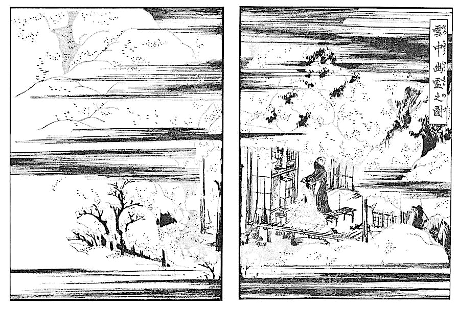
○さて幽霊は
影も見えず、
源教は
炉に
温りて
睡眠をもよほし、
居眠りしつゝ
終に倒れんとして目をひらきしに、お菊が
幽霊何時か
来りて
仏に
対ひ、まうけたる
新薦の上に
坐り
頭を
低てゐたり。さすがの
源教も
戦慄せしが、心をしづめてよくこそきたりつれといふに、
幽霊はさらにことばをいださず、すがたは
昨夜見たるにたがはず。
源教手をそゝぎ
盥に水をくみとり
剃刀をもちて立より見れば、打みだしたる
髪つゆのたるばかりぬれてあり。されど雪ふるなかをきたりしといふしるしもなし。心におもふやう、これが髪の毛をのこしとゞめて
后のしるしとせばやなど心して
剃刀をはこばせけるに、そりおとす髪の毛糸をつけて引がごとくかれが
懐に入る。女なれば髪の毛を
惜むならんと毛を
指にからみて
剃りしに、
自然ふところに入りて手にとゞまらず。とかくして
剃りをはり、わづかすこしの毛はやうやくとりとゞめつ。
幽霊は白く
痩たる
掌を
合せ、
仏を
拝みつゝすがた
次第に
薄くなると見えしがきえうせけり。
かくて
紺屋七兵衛かくれゐたる
戸棚よりはひいで、さても
怖しきものを見つる事かな、いかに法師なればとてよくぞ
剃刀をあて玉ひたる、たゞ見るさへおそろしかりき、
独りかへらんも
気味わろし
今夜はこゝに宿らん。いかにもやどり玉へ、待し人の
皈りたればもはや用なし、これ見玉へ、
后の
証しにせばやとてこればかりの髪の毛をやう／＼のこしおきたり、
幽霊も心ありてのこしつらんとて見せければ、七兵衛はさしのぞきて手にもとらず。法師は紙につゝみて
仏壇におき、夕
間にのみ玉ひし酒ものこりあり、肴はなくとものみ玉へとていさゝかのものとりいだして、二人ながら
炉のはたに
胡坐かきて酒のみながら七兵衛がいふやう、
幽霊といふもの
話にはきゝつるが見しははじめて也、
袖振合すも
他生の
縁とこそいふなれ、いたづらに見すぐさんも
本意なし、今夜こそ
仏法のありがたさも身にしみつれば、あすは此いほりにて百万
遍をなしてお菊が
仏果のいとなみにせん。
源教、そはよき
功徳ならん、
古志郡のお菊がいうれいを見とゞけたりと人々にかたり玉へ、
愚僧もわどのを
証人として幽霊をかたりて
教化のたよりにせん。すでにむかしもかゝる事ありしと
砂石集に見えし事など、人にきゝたるをおぼろげにおぼえて一ツ二ツかたりきかせなどして、夜もふけゝれば一ツの
夜具をふたりしてかづきうちふしけり。
○さてあけの日、七兵衛
源教を
伴ひて家に
皈り、
四隣の人をあつめてお菊が幽霊の事をかたりければ、
源教懐よりかの髪の毛をとりいだして見すれば人々
奇異のおもひをなしぬ。さて七兵衛百万遍の事をいひしに、あつまりし
者ども、それこそよき
善行なれ、こよひもよほし玉へ、茶の子はこなたよりもちゆかん、
御坊は茶の
用意をし玉へ、
数珠は
庵にはなかりき、これもおてらのを
借てもちゆかん、猶人々をもさそひあはせてゆかんといふ。七兵衛が
妻もかたはらにありしが、
夫にむかひ、とてもの事に
餅をつきたまへとすゝむ。いかにもよからんとて
俄にそのもよほしをなしけり。
○かくてその夜
源教が
草庵に人々あつまり、おしこりあひて念仏しければ、なか／＼ににぎはしき仏事也けり。此事こゝかしこに
伝へ
聞えて
話柄としけるが、こゝろざしあるものゝいふやう、源教がもちしかの髪の毛を

め
石塔を
建て
供養せば、お菊が
幽魂黄泉地のかげにもよろこびなんといひ
出ししに、おなし心の人あまたありてその事とゝのひ、
終に石塔を
建んとする時にいたりて、源教いふやう、かゝる
の
導師たらんは我がおよぶ所にあらず、
是最上山関興寺の上人を
招請あれかしといふ。人々さらばとてかしこにいたり、事のよしをつげてお菊が
戒名をもとめ、お菊が
溺死たる
橋の
傍に髪の毛を
埋め
石塔を
建る事すべて人を
葬るが
如くし、みなあつまりてねんごろに
仏事を
営みしに、かの
紺屋七兵衛は此
より
発心して
後に
出家しけるとぞ。こはひとむかしまへの事也ける、
関山の
毛塚とて今に
残れり。
他国の人、越後はすべて大雪の国とおもふめれどさにあらず。まへにもいへる
如く
海浜に近き所は雪浅し。雪ふかきは
魚沼・
頸城・
古志の三
郡、
或は
苅羽・
三嶋の二郡、
（所によりて深浅あり）蒲原は大郡にて雪
薄き所なれども東南は
奥羽に
隣りて
高嶺つらなるゆゑ、地勢によりては雪深き所あり。雪深き所は雪中牛馬を
駆ず、いかんとなれば人は雪に
便利のはきものを用ふれども牛馬にはこれをほどこす事あたはず、もし雪中にこれを
追ば
首のあたりまで雪にうづまらん、さればつかふ事ならざる也。およそ十月より
歳を
越えて四月のはじめまでは、むなしくやしなひおくのみ也。これ
暖国にはなき
難儀の一ツ也。さて
獣はまへにもいへるごとく、
初雪を見て山つたひに雪浅き国へ
去る、しかれども
行后れて雪になやむもあればこれを
狩る事あり。
（熊の事は上巻にいへり）野猪は
猛きゆゑ雪ふかくとも
得やすからず、
鹿・
羚羊などは
弱きものゆゑ雪には
得やすし。鹿はことさら
高脛なるゆゑ雪にはしる事人よりおそきに
似たり。鹿は
深山をこのまず、おほかたは
端山に
居るもの也。すべて物に
慣ればその妙あり、
山猟に
慣たる者は雪の
足跡を見てその
獣をしり、またこれは今朝のあしあと、こは今ゆきしあとゝその時をもしる也。
三国嶺より北へつゞく
二居の人
（たふげあるところ也）の鹿おひしたるをきゝしに、いざ鹿おひにゆかんとてかたらひあはせ、おの／＼雪を
漕ぐべき
（ふかき雪をゆくを里ことばにこぐといふ）ほどに、身をかため山刀をさし、
銕炮手鎗又
棒など
持て山に入り、かの
足跡をたづねあとに
随へばかならず鹿を見る。かれ人を見て
逃んとすれども人のはしるにおよばず、鹿は
深田をゆくがごとく
終には
追ひつめられてころさる。あるひは
剛勇の人などは
角をとりてねぢふせ、山刀にて
剌殺もありとぞ。これらは
暖国にはなき事ならめ。
我が
隣駅関にちかき
飯士山に
続く東に、
阿弥陀峯とて
樵する山あり。
（村々持分ンの定あり）二月にいたり雪の
降止たる頃、
農夫ら此山に
樵せんとて
語らひあはせ、
連日の
食物を
用意しかの山に入り、所を見立て
仮に小屋を作り、こゝを
寐所となし、毎日こゝかしこの木を心のまゝに
伐とりて
薪につくり、小屋のほとりにあまた
積おき、心に
足るほどにいたればそのまゝに
積おきて家に
皈る。これを
泊り山といふ。
（山にとまりゐてをなすゆゑ也）さて夏秋にいたれば
積おきたる
薪も
乾ゆゑ、
牛馬を
駆ひて
薪を家に
運びて用にあつる也。雪ふかき所は雪中には山に入りて
樵する事あたはざるゆゑの
所為にて、我国雪の
為に
苦心するの一ツ也。右にいふあみだぼうには水なく、谷川あれども山よりは
数丈の下をながる、
翼なければ
汲ことあたはず。こゝに
年歴たる
藤蔓の大木にまとひたるが谷川へ
垂下りたるあり、
泊り
山して水
汲もの
樽を
脊にくゝし
負ひ、此ふぢづるをたよりとして谷川へくだり、水をくみてたるの口をつめて
脊おひ、ふたゝびふぢづるに
縋りてのぼる、
雲桟をのぼるさま也。とまり山をするもの、このふぢづるなければ水をくむ事ならず、よしや
縄を用ふとも此藤の
強にはおよぶまじ。このゆゑに泊り山するものら、此
蔓を
宝のごとく
尊ぶとぞ。ひとゝせ泊り山したるものゝかたりしは、ことし二月とまり山しゝ時、
連のもの七人こゝかしこにありて木を
伐りて
居たりしに、山々に
響くほどの大
声して
猫の
鳴しゆゑ、人々おそれおのゝきみな小屋にあつまり、手に／＼
斧をかまへ
耳をすましてきけば、その
声ちかくにありときけば又
遠くに
鳴、とほしときけばちかし。あまたの
猫かとおもへば、其声は正しく一ツの猫也。されどすがたはさらに見せず、なきやみてのち七人のものおそる／＼ちかくなきつる所にいたりて見るに、
凍たる雪に
踏入れたる猫の
足跡あり、大さつねの丸盆ほどありしとかたりき。天地の
造物かゝるものなしともいふべからず。我が
友信州の人のかたりしは、同じ所の人
千曲川へ夏の
夜釣に
行しに、人の三人もをるべきほどのをりよき
岩水より
半いでたるあり、よき
釣場なりとてこれにのぼりてつりをたれてゐたりしに、しばしありてその岩に
手鞠ほどに
光るもの二ツ
双びていできたり、こはいかにとおもふうちに、月の
雲間をいでたるによくみれば岩にはあらで大なる
蝦蟇にぞありける。ひかりしものは目なりけり。此人いきたる心地もなく
何もうちすてゝ
逃げさりしとかたりぬ。
右の
泊り山するは此地にかぎらず
外にもする所あり。
小出嶋といふあたり、上越後
山根の
在々にてもするなり。すべて
深山にありて事をなすには山ことばといふありてこれをつかふ。
忘れて里のことばをつかふ時はかならず山神の
祟りありといひつたふ。他国はしらず、その
山言語とは、○米を
草の
実○
味噌をつぶら○
塩をかへなめ○
焼飯をざわう○
雑水をぞろ○天気の
好をたかゞいゝ○風をそよ○雨も雪もそよが
もふといふ。○
蓑をやち○笠をてつか○人の死をまがつた又はへねた○
男根をさつたち○
女陰を
熊の
穴。此
余あまたあり、さのみはとてしるさず。
女陰を熊の穴といふをもておもふに、これらのことばは
商家の
符調といふものにおなじかるべし。かゝることばを山にてつかはざれば山神の
祟りたまふといふは
信がたけれど、神の
は
人慮をもてかろ／＼しく
誣べからざる物をや。
我があたりはしば／＼いへるごとく、およそ十月より
翌年の三月すゑまでは
歳を
越て半年は雪也。此なかに
生れ、此なかに
成長するゆゑ、わらべの雪遊びをなす事さま／″＼ありて、
暖国にはなき事多し。その中に暖国の人にはおもひもよらざるあそびあり、まづ雪を高く
掘揚おきたる上などを
童ども打よりて
手あそびの
木鋤にて平らになしてふみつけ、
（わらべも雪中にはわらくつをはくこと雪国のつねなり）さて雪をあつめて
土塀を作るやうによほどの
囲をつくりなし、その
間ひにも雪にて
壁めく所をつくり、こゝに入り口をひらきて
隣の
家とし、すべての
囲にも入り口をひらく。此内に宮めかす所を作り、まへに
階をまうけ宮の内に神の
御体とも見ゆるやうにつくりすゑ、これを天神さまと
称し
（ゑびす大こくなどもつくる）筵などしきつめ物を
煮べき所をも作る。すべてみな雪にて作りたつる也。
（雪をくぼめ、ぬかをしきて火をたくに、きゆる事なし）これを雪ン堂又
城ともいふ。
児曹右の雪ン堂の内にあつまり物など
煮て神にもさゝげ、みなよりてうちくふ。又
間にへだてを作りたるはとなりの家に
准へ、さま／″＼の事をなしてたはむれ
遊ぶ。あそび
倦ば
斯作りたるを打こぼつをもあそびとし、又他の
童のこれにちかくおなじさまに作りたるを
城をおとすなどいひてうちくるふもあり、そのまゝにおくもあり。おのれ
牧之も
童のころはかゝるあそびの
大将をもせしが、むなしく
犬馬の
齢を
歴て今は
夢のやう也けり。
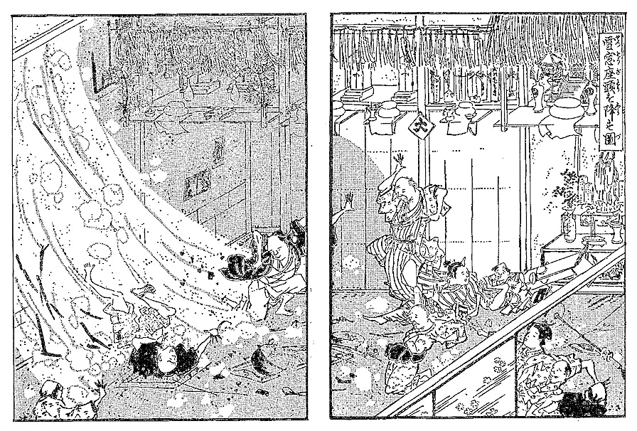
まへにもいへるごとく雪のうちに春をむかふるゆゑ、
歳越の日などはいづれの家にてもことさらに雪を
掘て

のあかりをとり、ほりたる雪も
年越の事しげきにまぎれて
取除をはらず、
掘揚の
屋上にひとしき雪道
歩行にたよりあしき所もあり。ひとゝせ
歳越の
夜、
余が
点をしたる
俳諧の
巻を
懐にし、
俳友兎角子を
伴ひ、その
巻の
催主のもとへいたりて巻を
主に
遣しければ、よろこびて、
今夜はめでたき夜なり、ゆる／＼
語り玉へとて、
主人の
妻娶娘も
打まじりてもてなしけり。さてさま／″＼の
雑談のなかにあるじのつま
牧之に、
歳こしの夜は鬼の
来るとて江戸には
厄払ひといふものありて鬼を
追ふ事をおもしろくいひたてゝ
物乞ひすときゝしが、むかしもさる事ありしや、鬼の
来るといふ
空言も古きつたへにやと
問ふ。
余こたへて、そはあるじが持玉ふ
年浪草に吾山があらましはしるせり、かの書を見玉へといひしに、
兎角子は酒にも
酔たれば
戯言ていふやう、鬼のくるといふ事いかでそらごとならん、女などのあつまりをる所は鬼の
好む所也。鬼のくればこそとしこしの豆まきを鬼やらひとはいふなれ、
俳諧の
季よせにも見えたりといふ。母のかたはらにゐたる十三になる娘がいふ、わぬしその鬼を見し事ありしや。見たりとも／＼鬼にもさま／″＼あり、青鬼赤鬼は常の事也、
の白くてやさしきを白鬼といひ、黒くて
肥太りたるを黒鬼といふ。おのれ江戸に
在し時、
厄払が鬼をかいつかみて西の海へさらりと
投たるを見たる事あり、その鬼は黒かりし。江戸の
歳越にさへ夜は鬼のありくなれば、こゝらのとしこしには鬼はいくらもありくべし。あかり
窓よりのぞきやすらんとたはむれにおどせば、よめもむすめも
空言のたまふなと口にはいへど、母の左右によりつきておそるゝさま也けり。かゝるをりしも人々の
座りゐたる
后の方にたかきあかり窓ありしが、きびしき音ありてまどをやぶり、
掘あげの雪がら／＼と
崩れおちたる中に人の
降りくだりければ、女はみな
吁といひてうつぶして
愕然迷ひ、男はみな立あがりておどろきけり。
下部らもこのおとにみなはせよりて、
崩れおちたる雪にまみれたる人を見れば、此家へも常にきたる福一といふ
按摩とりの
小座頭也けり。幸ひに
疵もうけずあたま
撫まはし
腰をさする、こは福一なりとてみなわらへばおのれもわらふ。
下部らはおちたる雪をとりのけ
窓をもかりにつくろひなどす。あるじの
妻はらたてゝ、いかに福一、
兎角どのゝ鬼のはなししてをられしに鬼かとおもひて
皆きもをひやせり、めでたきとしの夜に
盲が
窓よりふりこみしはいまはしき事なり、とく／＼いでゆけとてしたゝかにしかりければ、あるじ、さなしかり給ひぞ、福一いかにして窓よりおちいりしぞ、いためし所はなきかといふ。福一うちゑみつゝ、いためし所は候はず、
今夜のおめでたを申さんとてこそやどはいでたれ、なにやつのしわざにや、
掘あげの道きのふとはちがひてあしもとあしくしおきたれば、あやまちて
転たるが
窓をもおしやぶりておち入たる也、わろさにてしたるには候はずゆるし玉へといふ。娵も娘も口をそろへ、鬼にやとていみじくおびえたり、
憎き
盲めと
腹立ていふ。あるじのつまいかりをやめず、しかもことしの
吉方にあたる
窓をやぶり目のなきものゝ入りしは、かへす／＼いまはしき事也、とく／＼かへれとのゝしりければ、
兎角かたはらより、福一まづかへりて又こよ、そのうちにわびしておくべしといへど、福一かしらをたれものを
按ずるさまなりしが、やがて
兎角にむかひ、
哥一首よみ候かきて玉はれといふ。此福一はとしわかけれど
俳諧もざれ哥をもよむものなれば、あるじ、こはおもしろしとて
兎角がかきたるをよませてきけば、そのうたに
吉方から福一といふこめくらが入りてしりもちつくはめでたし
このうたにて人々めでたし／＼ときやうじ、手など
抃ていさみよろこび、ふたゝび
盃をめぐらしけり。あるじもんつきの
羽織を
娶にとりいださせて、
哥のろくとて福一にとらせければ、
膝にのせてなでさぐり、あやまちの
高名しつとてゑみはうけてよろこびつゝ、めでたく
歳越にきそはじめせんとて、
羽おりきてなでさぐり、かたちをつくりて猶よろこびけり。
之が
吉瑞と
成けん、此年此家の
娶初産に
男子をまうけ、やまひもなくておひたち、三ツのとし
疱瘡もかろくして今年七ツになりぬ。福一はかゝる
伶俐ものなりしゆゑ、今江戸にありて
宦にもすゝみしと聞ぬ。目でたき事どもなりけり。
少年
北越雪譜初編巻之下 終 全三巻大尾
［＃改丁］
北越雪譜六巻越後塩沢
ノ鈴木牧之老人雪窗囲
ミレ炉
ヲ寒燈隠
ルノレ几
ニ随筆
ナリ、其事出
テ二実脚
ニ一徒
ラニ非
二構
ヒレ空
ヲ架
スルレ虚
ニ之談
ニ一、然
ドモ翁固
リ不
三必
シモ期
二於梓行
ヲ一矣、嚮者
ニ郵筒
シテ懇
二乞
ス校正
ヲ一、為
レ之
ガ芟
二刈蕪蔓
ヲ一 二
二 シ
シ菁英
ヲ一先
ヅ輯
メ二三巻
ヲ一以為
シ二初編
ト一、告
テレ翁
ニ使
ム三書肆文渓堂
ヲシテ刊
二布
レ之
一、然後越雪之奇千彙万状供
シテ二臥遊
ノ資
ニ一錦室
ノ婦妾市窓
ノ妻婢
モ得
三詳知
二越※
［＃「雨かんむり／彗」、U+4A2E、163-5］ヲ一、解士通人
モ或
ハ云
フ格致之一助
ナリト、爰
ヲ以雪譜之名頗
ル踴躍
セリ、於
レ是乎書肆頻
リニ乞
フ二嗣撰
ヲ一、盖以
レ知
二其
ノ残稿在
ルヲ一也、余
謂不
シテハレ踏
二越地
ヲ一不
レ可
レ説
ク二越事
ヲ一、仍
テ丁酉之夏携
ヘ二児京水
ヲ一越遊
スルコト数十日有
リ二紀行
ノ作
一、再採
リ二数修
ヲ一刪
二補
シテ翁之残稿
ヲ一以為
シ二二編
ト一稿定
テ将
［＃「将」の左に「ス」のルビ］ニ三置
ント二序言
ヲ一焉、
頃者暁春連日放
チレ晴紅酣
ニ緑戦
ヒ花神旺壮
シテ遊心勃興
ス、欲
ス下詣
二賽
シテ成田山威怒王祠
ニ一以療
セント中錐毛之痾
ヲ上矣、夫
レ成田山香火之盛
ナル世之所
レ知也、凡自
二江戸
一到
ル二成田
ニ一者抵
リ二小網※
［＃「衙」の「吾」に代えて「共」、U+8856、163-9］橋岸
ニ一買
ヒ二搭船
［＃「搭船」の左に「ノリアヒ」のルビ］ヲ一水路直
ニ往
ク二行徳
ニ一、都人皆以為
ス二捷径
［＃「捷径」の左に「チカミチ」のルビ］ト一、盖行徳
ハ一市会也、不
レ必
トセ二成田香火者
ヲ一搭船常
ニ歯
二列
シテ于橋岸
ニ一待
ツ二行客
ヲ一、是以俗呼
デ二茲岸
ヲ一云
ヒ二行徳河岸
ト一呼
デ二茲
ノ船
ヲ一云
フ二行徳船
ト一、余
モ亦臨
レ此
ニ搭船
ス、其所
ノ二供載
一者多
ハ是庸卑雑沓猥褻衆口喋
 タリ
タリ、余
ガ傍
ラ在
リ二一僧一士一商
一、僧年歯六十
許従
フ二一童僧
ヲ一、士
ハ可二二十四五
一誇觜軽俊殆
ンド似
リ二学究
ニ一、商
ハ半老
［＃左にルビ付き］※憧市様［＃左に「タナモノフウ」のルビ付き終わり］、相ヒ倶ニ接ユレ膝ヲ、余ハ箝黙シテ不三敢テ出サ二一語ヲ一、瓦屋漸尽キ両岸茅葺桜花浮ベレ雪ヲ 柳吐キレ烟ヲ村落ノ春景百逞如クレ画ノ頗ル水行之会心也、船既ニ過ギレ半途ヲ庸卑多ハ就キレ眠ニ々自ラ罷ミ寥々可シレ悦ブ、壮士出シ二墨斗ヲ一持シテ二懐楮ヲ一
柳吐キレ烟ヲ村落ノ春景百逞如クレ画ノ頗ル水行之会心也、船既ニ過ギレ半途ヲ庸卑多ハ就キレ眠ニ々自ラ罷ミ寥々可シレ悦ブ、壮士出シ二墨斗ヲ一持シテ二懐楮ヲ一 ［＃「りっしんべん＋夢」、U+61DC、163-12］レ
［＃「りっしんべん＋夢」、U+61DC、163-12］レ句
ヲ、果
シテ是書生也、老僧
ハ以
二靉靆鏡
［＃「靉靆鏡」の左に「メカネ」のルビ］ヲ一披
ラクレ書、士閣
テレ筆
ヲ曰尊者
ノ所
レ執
ル是
レ何
ノ書
ゾ、僧曰北越雪譜
ナリ、士曰僕甞
テ読
ムレ之
ヲ兎園
ノ冊子何
ゾ足
ン二以閲
一、僧曰貧道一
タビ錫
ヲ留
メ二于北
ニ一親
シク知
ル二越雪
ヲ一故特
ニ購
レ之供
ス二以読
ムニ一矣、今閲
ルニ二京山人
ノ序
ヲ一彼
レ少
ク識
ルレ字
ヲ乎、士曰否々不
レ然、夫
レ京山者文場之奴隷
［＃「奴隷」の左に「シモベ」のルビ］芸苑之
［＃左にルビ付き］※
［＃「にんべん＋與」、U+349C、164-5］※
［＃「にんべん＋臺」、U+5113、164-5］［＃左に「マタモノ」のルビ付き終わり］也、近年随
二落
シテ乎稗史院本之泥中
ニ一汚
二塗
シテ姓名
ヲ一遂
ニ不
レ能脱
スルコト二其
ノ
窟
ヲ一、雖
レ然彼
レ自
ラ為
二李漁金人瑞之流亜
ト一文客
争許
レ之
乎、僧

然
トシテ笑而不
レ応
ゼ、余佯睡
［＃「佯睡」の左に「ソラネムリ」のルビ］シテ聞
レ之
ヲ、商
已レ烟
［＃「烟」の左に「タバコ」のルビ］ヲ曰鄙人書賈也能識
ル二刊行之趣
ヲ一、凡上梓之書
ハ不
レ論
三編輯之荒誕与
二詞章之奇雋
ト一只以
二多鬻
ヲ一為
二大著述
ト一奉
シテ二其作者
ヲ一為
二揺銭樹
［＃「揺銭樹」の左に「カネノナルキ」のルビ］翁
ト一、雖
下感
二服
スルノ韻士
ヲ一新書
ト上苦
メバ二其不
一レ売唾
テ而不
レ顧、是書肆之通義
［＃左にルビ付き］曹
 ［＃左に「ナカマ」のルビ付き終わり］
［＃左に「ナカマ」のルビ付き終わり］之常態也、北越雪譜初編之梓一挙
シテ販
ス二七百余部
ヲ一刷板装本
［＃「刷板装本」の左に「スリシタテ」のルビ］至
ルレ不
ルニ二暇給
一故二編
ノ刻発兌当
ニレ有
レ近矣、士不
トシテレ然
二其言
ヲ一調舌不
レ止鼓觜頻
ニ敲
ク、僧手
釈レ巻曰、論説
ハ姑
ク置
ケ足下識
ル二京山
ヲ一乎否
ヤ、士曰不
レ識、僧曰我十年前与
レ彼
レ会
二於一精舎
ニ一僅
ニ得
タリ二一面識
ヲ一、不
レ為
レ無
二因縁
一、言
ヒ畢
テ遽然
トシテ拍
シテ二余
カ背
ヲ一曰、京山老人醒
セレ眠
リヲ長兄忘
レタルレ我歟
カ、余愕然
［＃「愕然」の左に「ビツクリ」のルビ］トシテ不
レ得
レ応
ルコトヲ、時
ニ船着
キ二行徳之岸
ニ一舟中之人皆上
ルレ岸、不
レ得
下絮
二叨吐
 スルコトヲ上
スルコトヲ上于
茲一矣、此夕綴
リテ二其言
ヲ於逆旅
ノ燈下
ニ一以為序云
［＃改ページ］
此書全部六巻、
牧之老人が
眠を
駆の
漫筆、
梓を
俟ざるの
稿本［＃「稿本」の左に「シタガキ」の注記］なり。
故に
走墨乱写し、
図も
亦艸画なり。
老人余に
示して
校訂［＃「校訂」の左に「カンガヘタヾス」の注記］を
乞ふ。
因て
其駁雑［＃「駁雑」の左に「トリマゼ」の注記］を
刪り、
校訂清書し、
図は
豚児［＃「豚児」の左に「セガレ」の注記］京水に
画しめしもの三巻、
書賈［＃「書賈」の左に「ホンヤ」の注記］の
請に
応じ老人に
告て
梓を
許し
以世に
布しに、
発販［＃「発販」の左に「ウリダシ」の注記］一挙して七百
余部を
鬻り。
是に
依て
書肆後編を
乞ふ。
然ども
余が
机上它の
編筆に
忙く
屡稿［＃「稿」の左に「シタガキ」の注記］を
脱［＃「脱」の左に「デカス」の注記］るの
期約を
失ひしゆゑ、
近日務て老人が
稿本の
残冊を
訂し、
以其乞に
授く。
牧之老人は
越後の
聞人［＃「聞人」の左に「ナタカキヒト」の注記］なり。
甞［＃「甞」の左に「マヘカラ」の注記］貞介朴実［＃「貞介朴実」の左に「ヨキオコナヒ」の注記］を
以聞え、
屡県監［＃「県監」の左に「アガタモリ」の注記］の
褒賞［＃「褒賞」の左に「ホメル」の注記］を
拝して氏の
国称を
許る。
生計［＃「生計」の左に「イトナミ」の注記］の
余暇［＃「余暇」の左に「イトマ」の注記］風雅を以四方に
交る。余が
亡兄醒斎（京伝の別号）翁も
鴻書［＃「鴻書」の左に「テガミ」の注記］の
友なりしゆゑ、
余も
亦是に
嗣ぐ。老人
余に
越遊を
奨しこと年々なり。
余固山水に
耽の
癖あり、ゆゑに
遊心勃々
［＃「勃々」の左に「スヽム」の注記］たれども事に
紛て
果さず。丁酉の
晩夏遂に
豚児京水を
従て
啓行［＃「啓行」の左に「タビタチ」の注記］す。
始には越後の
諸勝［＃「諸勝」の左に「メイシヨ」の注記］を
尽さんと思ひしが、
越地に入し
後、
年稍侵［＃「侵」の左に「キヽン」の注記］して
穀価貴踊［＃「貴踊」の左に「タカク」の注記］し人心
穏ならず、ゆゑに越地を
践こと
僅に十が一なり。しかれども
旅中に於て
耳目を
新にせし事を
挙て此書に
増修［＃「増修」の左に「マシイル」の注記］す。
百樹曰といふもの是也。
前編に
載たる
三国嶺の
図は、牧之老人が
草画に
傚て京山
私儲満山に
松樹を
画り。
余越遊の時三国嶺を
踰しに
此嶺はさらなり、前後の
連岳［＃「連岳」の左に「ヤマ／＼」の注記］すべて松を見ず。此地にかぎらず越後は松の
少き国なり。三国
嶺を知る人は松を画しを
笑ふべし。是老人が
本編の
誤には
非ず、京水が
蛇足なり。
山川村庄はさらなり、
凡物の名の
訓かた
清濁によりて越後の
里言にたがひたるもあるべし。
然ども里言は多く
俗訛なり、
今姑俗に
从もあり。本編には
音訓の
仮名を
下さず、かなづけは
余が
所為なり。
謬を本編に
駆こと
勿れ。
余也固浅学にして多く
書を
不読、
寒家［＃「寒家」の左に「ヤセイヘ」の注記］にして書に
不富、少く蔵せしも
屡祝融［＃「祝融」の左に「火ノコト」の注記］に
奪れて、
架上［＃「架上」の左に「タナノウヘ」の注記］蕭然［＃「蕭然」の左に「サビシ」の注記］たり。依之
増修の
説に於て此事は
彼書に見しと
覚しも、其書を蔵せざれば
急就の用に
弁ぜず、
韈癬［＃「韈癬」の左に「ムヅカユイ」の注記］するが多し。
且浅学なれば
引漏したるも
最多かるべし。
本編雪の
外它の事を
載たるは
雪譜の名を
空うするに
似たれども、
姑記して
好事の
話柄［＃「話柄」の左に「ハナシノタネ」の注記］に
具す。
増修の
説も
亦然り。
雪の
奇状奇事其
大概は初編に
出せり。
猶軼事［＃「軼事」の左に「オチタコト」の注記］有を以此二編に
記す。
已に初編に
載たるも事の
異なるは
不舎して
之を
録す。
盖刊本［＃「刊本」の左に「ホリホン」の注記］は
流伝の
広きものゆゑ、初編を
読ざる
者の
為にするの
意あり。前後を
読人其
層見重出［＃「層見重出」の左に「カサナリイヅル」の注記］を
詰こと
勿れ。
釋の
字釈に
作の外、
澤を沢、驛を
駅に
作は
俗なり、しかれども巻中
驛澤の字多し。
姑俗に
从うて駅沢に作り、以
梓繁［＃「梓繁」の左に「ホリテマ」の注記］を
省く。
余の
省字は皆
古法に
从ふ。
巻中の画、老人が
稿本の
艸画を
真にし、
或は京水が越地に
写し
真景、或
里人の
話を
聞て
図に作りたるもあり、其地に
照して
誤を
責ることなかれ。
老人編を
嗣の
意あり、ゆゑに初編二編といふ。前編後編といはず。
天保十一年庚子仲春
京山人百樹識
［＃改丁］
越後塩沢 鈴木牧之 編撰
江戸 京山人百樹 増修
越後の国
往古は
出羽越中に
距りし事
国史に見ゆ。今は七
郡を以て
一国とす。東に
岩船郡（古くは石に作る海による）蒲原郡
（新潟の湊此郡に属す）西に
魚沼郡
（海に遠し）北に
三嶋郡
（海による）刈羽郡
（海に近し）南に
頸城郡
（海に近き処もあり）古志郡
（海に遠し）以上七
郡也。城下は
岩船郡に
村上
（内藤侯五万九千石ヨ）蒲原郡に
柴田（溝口侯五万石）黒川（柳沢侯一万石陣営）三日市
（柳沢弾正侯一万石陣営）三嶋郡に
与板（井伊侯二万石）刈羽郡に
椎谷（堀侯一万石陣営）古志郡に
長岡（牧野侯七万四千石ヨ）頸城郡に
高田（榊原侯十五万石）糸魚川（松平日向侯一万石陣営）以上城下の
外頗豊饒［＃「豊饒」の左に「ニギハヒ」の注記］を
為す
処、
魚沼郡に
小千谷、古志郡に
三条、三嶋郡に
寺泊○
出雲崎、
刈羽郡に
柏崎、
頸城郡に
今町なり。
蒲原郡の
新潟は北海第一の
湊なれば福地たる
論を
俟ず。
此余の
豊境は
姑略す。此地皆十月より雪
降る、その
深と
浅とは
地勢による。
猶末に
論ぜり。
蒲原郡の
伊弥彦山（弥一作夜）伊弥彦社を当国第一の
古跡とす。
祭るところの御神は
饒速日命の御子
天香語山命なり。
元明天皇の
和銅二年の
垂跡とす。
（社領五百石）此山さのみ高山にもあらざれども、越後の
海浜八十里の中ほどに
独立して
山脉いづれの山へもつゞかず。右に
国上山、左に
角田山を
提攜［＃「提攜」の左に「カヽヘ」の注記］して一国の
諸山是に
対して
拱揖［＃「拱揖」の左に「コシヲカヽメル」の注記］するが
如く、いづれの山よりも見えて
実に越後の
鎮［＃「鎮」の左に「マモリ」の注記］ともなるべき山は是よりほかにはあらじとおもはる。さればこそ
命もこゝに
垂跡まし／＼たれ。此御神の
縁起或は
験神宝の
類記すべき
あまたあれども
姑こゝに
省。
○さて此山をよみたる古哥に
（万葉）「いや
日子のおのれ神さび
青雲のたなびく日すら
小雨そぼふる
（よみ人しらず）」又
家持に「いや彦の神のふもとにけふしもかかのこやすらんかはのきぬきて
つぬつきながら」▲
長浜 頸城郡に
在り。
（三嶋郡とする説もあり）家持の哥に「ゆきかへる
雁のつばさを
休むてふこれや名におふ
浦の
長浜」▲
名立 同郡
西浜にあり、今は
宿の名によぶ。 順徳院の御製に
（承久のみだれに佐渡へ遷幸の時なり）「
都をばさすらへ
出し
今宵しもうき身
名立の月を見る
哉」▲
直江津 今の高田の
海浜をいふ。 同御製に「なけば
聞きけば
都のこひしきに
此里すぎよ山ほとゝぎす」▲
越の
湖 蒲原郡に
潟とよぶ処多し。
里言に
湖を
潟といふ。その大なるを
福嶋潟といふ、四方三里
計。此
潟に遠からずして
五月雨山あり。
貫之の哥に「
潮のぼる
越の
湖近ければ
蛤もまたゆられ
来にけり」又
俊成卿に「
恨てもなにゝかはせんあはでのみ
越の
湖みるめなければ」又
為兼卿「
年をへてつもりし
越の
湖は
五月雨山の森の
雫か」▲
柿崎（頸城郡にある駅也） 親鸞聖人の
詠玉ひしとて
口碑に
伝へし哥に「柿崎にしぶ／＼
宿をもとめしに
主の心じゆくしなりけり」
按ずるに、
聖人御名を
善信と申て三十五歳の時
讒口に
係りて越後に
謫さる、時に
承元元年二月なり。
後五年を
経て
勅免ありしかども、
法を
弘ん
為とて越後にいまししこと五年なり、
故に聖人の
旧跡越地に
残れり。
弘法廿五年御歳六十の時
洛に
皈玉へり。
（越後に五年、下野に三年、常陸に十年、相模に七年也）弘長二年十一月廿八日
遷化寿九十歳。
件の
柿崎の哥も
弘法行脚の
時の作なるべし。
此外▲
有明の
浦▲
岩手の
浦▲
勢波の
渡▲
井栗の
森▲
越の松原いづれも古哥あれども、
他国にもおなじ名所あればたしかに越後ともさだめがたし。さて今を
去（天保十一子なり）五百四十一年前、
永仁六年戌のとし藤原
為兼卿佐渡へ
左遷の時、三嶋郡
寺泊の
駅に
順風を
待玉ひし
間、
初君といふ
遊女をめし玉ひしに、初君が哥に「ものおもひこし
路の
浦の
白浪も立かへるならひありとこそきけ」此哥
吉瑞となりてや、五年たちてのち
嘉元元年為兼卿
皈洛ありて、九年の
後正和元年
玉葉集を
撰の時、初君が
件の
哥を入れられ玉へり、是を越後第一の
逸事［＃「逸事」の左に「スクレタコト」の注記］とす。初君が
古跡今
寺泊に
在り、
里俗初君
屋敷といふ。
貞享元年
釈門万元記といふ初君が哥の
碑ありしが、
断破しを
享和年間里入重修［＃「重修」の左に「ツクリカヘ」の注記］して今に
存せり。
凡日本国中に於て第一雪の深き国は越後なりと
古昔も今も人のいふ事なり。しかれども越後に於も
最雪のふかきこと一丈二丈におよぶは
我住魚沼郡なり。次に
古志郡、次に
頸城郡なり。
其余の四
郡は雪のつもる
三郡に
比すれば浅し。是を以
論ずれば、
我住魚沼郡は日本第一に雪の
深降所なり。我その魚沼郡の
塩沢に
生れ、毎年十月の
頃より
翌年の三四月のころまで雪を
視事
已に六十余年、
近日此
雪譜を作るも雪に
籠居のすさみなり。
○さて
我塩沢は江戸を
去こと
僅に五十五里なり、
直道を
量ばなほ近かるべし。雪なき時ならば
健足の人は四日ならば江戸にいたるべし。其江戸の元日を
聞ば
縉紳朱門［＃「縉紳朱門」の左に「ヲレキ／＼」の注記］の
はしらず、
市中は千
門万
戸千歳の松をかざり、
直なる
御代の竹をたて、太平の
七五三を引たるに、
新年の
賀客麻上下の
肩をつらねて
往来するに万歳もうちまじりつ。女太夫とか
鳥追ひの
三味線にめでたき哥をうたひ、娘の
児のやり
羽子、男の
児の
帋鳶、見るもの
聞ものめでたきなかに、
初日影花やかにさし
昇たる、
実に
新玉の春とこそいふべけれ。
其元日も此雪国の元日も
同元日なれども、
大都会の
繁花と
辺鄙の雪中と
光景の
替りたる事
雲泥のちがひなり。
○そも／＼
我里の元日は野も山も
田圃も
里も
平一面の雪に
埋り、春を知るべき
庭前の梅柳の
類も、去年雪の
降ざる秋の末に雪を
厭て丸太など立て
縄縛に
遇たるまゝ雪の中にありて元日の春をしらず。されば人も三四月にいたらざれば梅花を
不見、翁が句に 春も
稍景色とゝのふ月と梅、と
吟ぜしは
大都会の正月十五日なり。また「山里は万歳
遅し梅の花」とは
辺鄙の三月なるべし。
門松は雪の中へ
建、
七五三かざりは雪の
軒に引わたす。
礼者は
木屐をはき、
従者は
藁靴なり。雪
径に
階級ある所にいたれば主人もわらぐつにはきかふる、此げたわらぐつは礼者にかぎらず人々皆しかり。雪
全く
消る夏のはじめにいたらざれば、
草履をはく事ならず。されば元日の初日影も
惟雪の銀
世界を
照すのみ。一ツとして春の
景色を
不見。
古哥に「花をのみ待らん人に山里の雪
間の草の春を見せばや」とは雪浅き
都の事ぞかし。雪国の人は春にして春をしらざるをもつて
生涯を
終る。これをおもへば
繁栄豊腴の
大都会に
住て
年々歳々梅柳※色［＃「女＋（而／大）」、U+5A86、173-11］の春を
楽む事
実に
天幸の人といふべし。
初編にもいへる如く我国の雪は
鵞毛をなすは
稀なり、大かたは
白砂を
降すが如し。冬の雪はさらに
凝凍ことなく、春にいたればこほること
鉄石のごとし。冬の雪のこほらざるは
湿気なく
乾たる
沙のごとくなるゆゑなり。
是暖国の雪に
異処なり。しかれどもこほりてかたくなるは雪
解とするのはじめなり。春にいたりても
年によりては雪の
降こと冬にかはらざれども、
積こと五六尺に
過ず。天地に
気有を以なるべし。されば春の雪は
解るもはやし、しかれども雪のふかき年は春も
屋上の雪を
掘ことあり。
掘とは
椈の木にて作りたる
木鋤にて
土を
掘ごとくして
取捨るを
里言に雪を掘といふ、
已に初編にもいへり。かやうにせざれば雪の
重に
屋を
潰ゆゑなり。されば
旧冬の
家毎に
掘除たる雪と春
降積たる雪と
道路に山をなすこと下にあらはす
図を見てもしるべし。いづれの家にても雪は家よりも
高ゆゑ、春を
迎る時にいたればこゝろよく
日光を引んために、
明をとる処の
窗に
遮る雪を他処へ
取除るなり。
然るに時としては一夜の
間に三四尺の雪に降うづめられて家内
薄暗、心も
朦々として
雑煮を
祝ふことあり。越後はさら也、北国の人はすべて雪の中に正月をするは毎年の事也。かゝる正月は
暖国の人に見せたくぞおもはるゝ。

江戸の
児曹が春の遊は、女
児は
繍毬羽子擢、男
児は
紙鴟を
揚ざるはなし。我国のこどもは春になりても前にいへるごとく地として雪ならざる処なければ、
歩行に
苦しく
路上に遊をなす事
少し。こゝに
玉栗といふ
児戯あり。
（春にもかぎらず雪中のあそび也）始は雪を
円成て
卵の大さに
握りかため其上へ／＼と雪を幾度もかけて足にて
踏堅、あるひは
柱にあてゝ
圧堅、これを
肥といふ。さて
手毬の大さになりたる時他の
童が作りたる
玉栗を
庇下などに
置しめ、我が玉栗を以他の玉栗にうちあつる、
強き玉栗
弱き玉栗を
砕くをもつて
勝負を
争ふ。
此戯所によりて、○コンボウ○コマ○
地独楽○
雪玉（里のなまりに雪をいきといふ）○ズヽゴ○玉ゴシヨ○
勝合などいふなり。此玉栗を
作るに雪に
少し
塩を入るれば
堅なること石の如し、ゆゑに小児
互に塩を入るを
禁ずるなり。こゝを以てみる時は、
塩は物を
堅むる物なり。物を
堅実にするゆゑ
塩蔵にすれば
肉類も
不腐、朝夕
嗽に塩の湯水を以すれば
歯をかためて歯の命を長くすといふ。玉栗は
児戯なれど、塩の物を
堅する
証とするにたれり。故にこゝに
記せり。又
童のあそびに
雪ン
堂といふ
あり、初編にいだせり。
（我里俗はねをつくといはずはねをかへすといふ、うちかへすの心なるべし）
江戸に正月せし人の
話に、市中にて見上るばかり松竹を
飾たるもとに、
美く
粧ひたる娘たち
彩たる
羽子板を持て
並び立て羽子をつくさま、いかにも大江戸の春なりとぞ。我里の羽子
擢は
辺鄙とはいひながら、かゝる
艶姿にあらず。正月は
奴婢どもゝ
少しは
許て遊をなさしむるゆゑ、
羽子を
擢んとて、まづ其処を見たてゝ雪をふみかためて
角力場のごとくになし、羽子は
溲疏を一寸
ンほど筒切になし、これに
※雉［＃「櫂のつくり＋鳥」、U+9E10、180-1］の尾を三本さしいれる、江戸の羽子に
比れば甚大なり。これを
擢に雪を
掘木鋤を用ふ、力にまかせて擢ゆゑに
空にあがる
甚高し。かやうに大なる羽子ゆゑに
童はまじらず、あらくれたる男女うちまじり、はゞきわらぐつなどにて
此戯をなすなり。一ツの羽子を
並びたちてつくゆゑに、あやまちて
取落したるものは
始に定ありて、あるひは雪をうちかけ、又は
頭より雪をあぶする。その雪
襟懐に入りて
冷に
耐ざるを大勢が笑ふ、
窗よりこれを
視るも雪中の
一興なり。京伝翁が
骨董集に
（上編ノ下）下学集を引て、羽子板は文化十二年より三百七十年ばかりの
前、文安のころありしものにて、それよりもなほさきにありし事は
詳ならずといはれたり。又下学集には羽子板に
（ハゴイタ、コギイタ）と両かなをつけたれば、こぎの子といふも羽子の事なりとあり。我国にも江戸の如くに児女のはねをつく所もあり。
雪国にて
悚懼物は、冬の○
雪吹○ホウラ、春の
雪頽なり。此
奇状奇事已に初編にもいへり、されど
一奇談を聞たるゆゑこゝにしるして
暖国の
話柄とす。
○そも／＼金銭の
貴こと、
魯氏が
神銭論に
尽したれば今さらいふべくもあらず。
年の凶作はもとより事に
臨で
餓にいたる時小判を
甜て
腹は
彭張ず、
餓たる時の小判一枚は飯一
碗の光をなさず。五十余年前の
饑饉の時、或所にて
餓死したる人の懐に小判百両ありしときゝぬ。
○こゝに我が
魚沼郡藪上の庄の村より
農夫一人
柏崎の
駅にいたる、此
路程五里
計なり。途中にて一人の
苧商人に
遇ひ、
路伴になりて
往けり。時は十二月のはじめなりしが数日の雪も此日
晴たれば、両人
肩をならべて
心朗にはなしながら
已に
塚の山といふ
小嶺にさしかゝりし時、雪国の
恒として
晴天俄に
凍雲を
布、
暴風四方の雪を吹
散して白日を
覆ひ、
咫尺を
弁ぜず。
袖襟へ雪を吹入れて
全身凍て
息もつきあへず、大風四面よりふきめぐらして雪を
渦に
巻揚る、是を雪国にて雪吹といふ。此ふゞきは
不意にあるものゆゑ、
晴天といへども冬の
他行には必
蓑笠を用ること我国の常なり。二人は
橇に雪を
漕つゝ
（雪にあゆむを里言にこぐといふ）互に
声をかけて
助あひ
辛じて
嶺を
逾けるに、
商人農夫にいふやう、今日の晴天に
柏崎までは何ともおもはざりしゆゑ
弁当をもたず、今
空腹におよんで
寒に
堪ず、かくては
貴殿に
伴て雪を
漕ことならず、さいぜんの
話におみさまの
懐に
弁当ありときゝぬ、
夫を我に
与へたまふまじきや、
惟には
貰ふまじ、こゝに銭六百あり、
死か
活かの
際にいたりて此銭を何にかせん、六百にて弁当を
売玉へといふ。
農夫は
貧乏の者なりしゆゑ六百ときゝて大によろこび、
焼飯二ツを出して六百の銭に
替けり。商人は
懐にありて
温のさめざる焼飯の大なるを二ツ食し、雪に
咽を
潤して
精心健になり前にすゝんで雪をこぎけり。
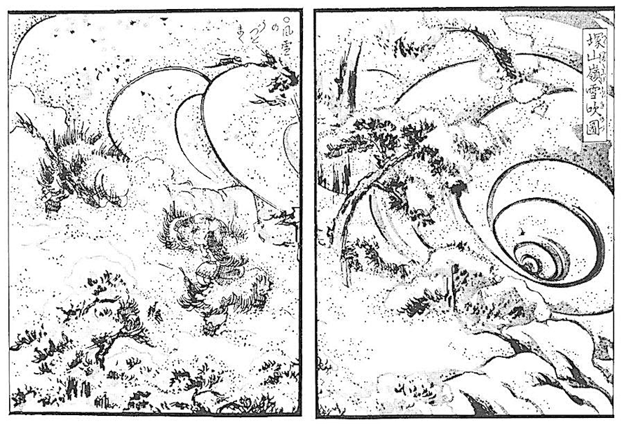
○かくていそぐほどに
雪吹ます／＼甚しく、
橇を
穿ゆゑ
道遅く日も
已に
暮なんとす。此時にいたりて焼飯を売たる
農夫は
肚減て
労れ、商人は焼飯に
腹満足をすゝめて
往。農夫は
屡後るゆゑ
終には
棄て
独先の村にいたり、しるべの家に入りて
炉辺に
身を
温て酒を
酌、
始て
蘇生たるおもひをなしけり。
○さてしばらくありてほうい／＼と
呼声遠く
聞るを家内の者きゝつけ、
（ふゞきにほうい／＼とよぶは人にたすけを乞ふことば也、雪中の常とす）雪吹倒れぞ、それ助けよとて、
近隣の人をもよび
集め
手毎に
木鋤を持て
（木鋤を持は雪に埋りし雪吹たふれの人をほりいださんため也、これも雪国の常也）走行しが、やゝありて大勢のもの一人の
死骸を家の
土間へ
※［＃「臼／廾」、U+8201、182-7］入れしを、かの
商人も
立寄見れば、
最前焼飯を
売たる農夫なりしとぞ。この
苧商人、
或時余が
俳友の家に
逗留の
話に
件の事を
語り
出し、
彼時我六百の銭を
惜み焼飯を
買ずんば、
雪吹の
中に
餓死せんことかの
農夫が如くなるべし、今日の命も銭六百のうちなりとて笑ひしと
俳友が
語れり。
五穀豊熟して
年の
貢も
心易く
捧げ、
諸民鼓腹の春に
遇し時、氏神の
祭などに
遭しを幸に地芝居を
興行する
あり。役者は皆其処の
素人あるひは
近村近
駅よりも来るなり。
師匠は田舎芝居の
役者を
傭ふ。
始に寺などへ
群居て狂言をさだめてのち、それ／＼の役を定む。此
群居の
議論紛々として一度にて
果したる
なし。事定りてのち寺に於て
稽古をはじむ、
技熟してのち初日をさだめ、
衣裳髢のるゐは是を
借を一ツの
業とするものありて
物の
不足なし。此芝居二三月の
頃する事あり、此時はいまだ雪の
消ざる銀
世界なり。されば芝居を
造る処、此役者
等が家はさらなり、
親類縁者朋友よりも人を出し、あるひは人を
傭ひ芝居小屋場の地所の雪を
平らかに
踏かため、
舞台花道楽屋桟敷のるゐすべて皆雪をあつめてその
形につかね、なりよく
造ること下の
図を見て知るべし。此雪にて
造りたる物、天又
人工をたすけて一夜の間に
凍て鉄石の如くになるゆゑ、いかほど大入にてもさじきの
崩る気づかひなし。
弥生の
頃は雪もやゝ
稀なれば、
春色の
空を見て
家毎に雪
囲を
取除るころなれば、処々より雪かこひの丸太あるひは
雪垂とて
茅にて幅八九尺
広さ二間ばかりにつくりたる
簾を
借あつめてすべての
日覆となす。ぶたい花みちは雪にて作りたる上に板をならぶる、此板も一夜のうちに
冰つきて
釘付にしたるよりも
堅し。
暖国に
比れば
論の
外なり。物を
売茶屋をも
作る、いづれの処も平一
面の雪なれば、物を
煮処は雪を
窪め
糠をちらして火を
焼ば、雪の
解ざる事妙なり。
○さて
戯場の
造作成就しても春の雪ふりつゞきて
連日晴を見ず、
興行の初日のびる時は役者になりたる家はさら也、此しばゐを見んとて諸方に
逗留の
客多く毎日
空をながめて
晴を
待わび、
客のもてなしもしつくして
殆倦果、
終には役者
仲間いひあはせ、川の
冰を
砕て水を
浴千垢離して
晴を
祈るもをかし。

百樹曰、余丁酉の夏北越に遊びて塩沢に在し時、近村に地芝居ありと聞て京水と倶に至りしに、寺の門の傍に杭を建て横に長き行燈あり、是に題して曰、当院屋根普請勧化の為本堂に於て晴天七日の間芝居興行せしむるものなり、名題は仮名手本忠臣蔵役人替名とありて役者の名多くは変名なり。寺の門内には仮店ありて物を売り、人群をなす。芝居には仮に戸板を集て囲たる入り口あり、こゝに守る者ありて一人前何程と価を取、これ屋根普請の勧化なり。本堂の上り段に舞台を作り掛、左に花道あり、左右の桟敷は竹牀簀薦張なり。土間には薦を布、筵をならぶ。旅の芝居大概はかくの如しと市川白猿が話にもきゝぬ。桟敷のこゝかしこに欲然やうな毛氈をかけ、うしろに彩色画の屏風をたてしはけふのはれなり。四五人の婦みな綿帽子したるは辺鄙［＃ルビの「へんび」はママ］に古風を失ざる也。観人群をなして大入なれば、猿の如き童ども樹にのぼりてみるもあり。小娘が笊を提て冰々とよびて土間の中を売る。笊のなかへ木の青葉をしき雪の冰の塊をうる也。茶を売べきを氷を売るは甚めづらし、氷のこと削氷の条にいふべし。
○さて口上いひ出て寺へ寄進の物、あるひは役者へ贈物、餅酒のるゐ一々人の名を挙、品を呼て披露し、此処忠臣蔵七段目はじまりといひて幕開。おかるに扮しは岩井玉之丞とて田舎芝居の戯子なるよし、頗る美なり。由良の助に扮しは余が旅中文雅を以識人なり、年若なればかゝる戯をもなすなるべし。常にはかはりて今の坂東彦三郎に似たり。技も又観に足り。寺岡平右ヱ門になりしは余が客舎にきたる篦頭なり、これも常にかはりて関三十郎に似て音声もまた天然と関三の如し。余京水と相顧て感じ、京水たはふれにイヨ尾張屋と誉けるが、尾張屋は関三の家号なる事通じがたきや、尾張屋とほむるものひとりもなし。一幕にてかへらんとせしに守る者木戸をいださず、便所は寺の後にあり、空腹ならば弁当を買玉へ、取次申さんといふ。我のみにあらず、人も又いださず。おもふに、人散ば演場の蕭然を厭ふゆゑなるべし。いづくにか出所あらんと尋しに、此寺の四方垣をめぐらして出べきの隙なし。折ふし童が外より垣をやぶりて入りたるその穴より両人くゞりいでしは、これも又可笑一ツにてぞありし。
旧冬より
降積たる雪家の
棟よりも高く、春になりても家内
薄暗きゆゑ、
高窓を
埋たる雪を
掘のけて
明をとること前にもいへるが如し。此
屋上の雪は冬のうちしば／＼掘のくる度々に、
木鋤にてはからず
屋上を
損ずる
あり。我国の
屋上おほかたは
板葺なり、屋根板は他国に
比れば
厚く
広し。葺たる上に
算木といふ物を
作り
添石を
置て
鎮とし風を
防の
便とす。これゆゑに雪をほりのくるといへどもつくすことならず、その雪のうへに
早春の雪ふりつもりて
凍ゆゑ屋根のやぶれをしらず。春も
稍深なれば雪も日あたりは
解あるひは
焼火の所雪早く
解るにいたりて、かの屋根の
損じたる処
木羽の下たをくゞりなどして雪水
漏ゆゑ、夜中俄に
畳をとりのけ
桶鉢のるゐあるかぎりをならべて
漏をうくる。もる処を
修治とするに雪
全くきえざるゆゑ手をくだす
ならず、漏は次第にこほりて
座敷の内にいくすぢも大なる
氷柱を見る時あり。是
暖国の人に見せたくぞおもはる。
百樹曰、余越遊して大家の造りやうを見るに、楹の太こと江戸の土蔵のごとし。天井高く欄間大なり、これ雪の時明をとるためなり。戸障子骨太くして手丈夫なるゆゑ、閾鴨柄も広く厚し。すべて大材を用る事目を駭せり、これ皆雪に潰ざるの用心なりとぞ。江戸の町にいふ店下を越後に雁木（又は庇）といふ、雁木の下広くして小荷駄をも率べきほどなり、これは雪中にこの庇下を往来の為なり。余越後より江戸へ皈る時高田の城下を通しが、こゝは北越第一の市会なり。商工軒をならべ百物備ざることなし。両側一里余庇下つゞきたるその中を往こと、甚意快［＃「意快」の左に「コヽロヨイ」の注記］なりき。文墨の雅人も多しときゝしが、旅中年の凶するに遭、皈家を急しゆゑ剌［＃「刺」の左に「テフダ」の注記］を入れざりしは今に遺憾とす。
雪中
歩行の
具初編に
其図を
出ししが
製作を
記さず、ふたゝびその
詳なるを
示す。

○
藁ひとたけにてあみたつる。はじめはわらのもとを丸けてあみはじめ、末にいたりてわらをまし二筋にわけ折かへし、
○をはりはまん中にて結びとむる。是雪中第一のはきもの也。童もこれをはく也。上品なるはあみはじめに白紙を用ひ、ふむ所にたゝみのおもてを切入る。
○是はうちわらにて作りあむ。常の
※［＃「韈のつくり」の「罘−不」に代えて「冂＜人」、189-6］のまゝ是をはきて雪中に歩行しても、他の坐につく時足をそゝぐにおよばず。あみやうは甚むづかしきものなり、此図は大略をしるす。
○他国には革にて作りたるを見る。
泥行には便なるべし。我国の雪中には
途に
泥ある所なし、ゆゑにはき物はげたの外わらにてつくる。げたに、●駒の
爪●牛のつめなど、さま／″＼名もあり、男女の用その形もかはれど、さのみはとて図せず。
○ハツハキといふは
里俗のとなへなり、すなはち
裹脚なり。わらのぬきこあるひは
蒲にても作る。雪中にはかならず用ふ、やまかせぎは常にも用ふ。作りやう図を見て大略を知るべし。やすくいへばわらのきやはんなり。わらは寒をふせぐものゆゑ、雪のはきもの大かたはわらにて作るなり。

○シナ皮とて
深山にある木の皮にて作る、寸尺は身に応じ作る。大かたはたて二尺三寸はゞ二尺ばかりなり、
胸あてともいふ。前より吹つくる雪をふせぐために用ふ、農業には常にも用ふ。他国にもあるなり。
○シブガラミはあみはじめの方を
踵へあて、左右のわらを
足頭へからみて作るなり。里俗わら
屑のやはらかなるを
シビといふ。このシビにて作り、足にからみはくゆゑに、シビガラミといふべきをシブガラミと
訛りいふなり。
○かんじきは
古訓なり、
里俗かじきといふ。たて一尺二三寸よこ七寸五六分、
形図の如く
ジヤガラといふ木の枝にて作る。鼻は
反して
クマイブといふ
蔓又は
カヅラといふつるをも用ふ。
山漆の肉付の皮にて巻かたむ。是は前に図したる沓の下にはくもの也、雪にふみこまざるためなり。
○すかりはたて二尺五六寸より三尺余、横一尺二三寸、山竹をたわめて作る。○かじき○すかりの二ツは冬の雪のやはらかなる時ふみこまぬ為に用ふ。はきつけぬ人は一足もあゆみがたし。なれたる人はこれをはきて
獣を追ふ也。右の外、男女の雪
帽子雪
下駄、
其余種々雪中
歩用の
具あれども、
薄雪の国に用ふる物に
似たるはこゝに
省く。

百樹曰、余北越に遊びて牧之老人が家に在し時、老人家僕に命じて雪を漕形状を見せらる、京水傍にありて此図を写り。穿物は、○橇○縋なり。戯に穿てみしが一歩も進ことあたはず、家僕があゆむは馬を御するがごとし。
※［＃「車＋盾」、U+8F34、192-7］（字彙）禹王水を
治し時
載たる物四ツあり、水には
舟、
陸には車、
泥には
※［＃「車＋盾」、U+8F34、192-7］、山には
※［＃「木＋壘」の「土」に代えて「糸」、U+6B19、192-7］。
（書経註）しかれば此
※［＃「車＋盾」、U+8F34、192-8］といふもの
唐土の上古よりありしぞかし。
彼は
泥行の用なれば雪中に用ふるとは
製作異なるべし。
※［＃「車＋盾」、U+8F34、192-9］の字、○
毳○
※［＃「くさかんむり／絶」、U+855D、192-9］○
橇○
秧馬、
諸書に
散見す。
或は○
雪車○
雪舟の字を用ふるは
俗用なり。
そも／＼此
※［＃「車＋盾」、U+8F34、192-11］といふ物、雪国第一の用具。
人力を
助事船と車に
同く、
且に
作る事
最易きは
図を見て知るべし。
堀川百首兼昌の哥に、「
初深雪降にけらしなあらち山
越の
旅人※［＃「車＋盾」、U+8F34、192-12］にのるまで」この哥をもつても我国にそりをつかふの
古をしるべし。前にもしば／＼いへるごとく、我国の雪冬は
凍ざるゆゑ、冬に
※［＃「車＋盾」、U+8F34、192-14］をつかへば雪におちいりて

ことならじ。※
［＃「車＋盾」、U+8F34、192-14］は春の雪鉄石のごとく
凍たる正二三月の間に用ふべきもの也。其時にいたるを
里俗※道［＃「車＋盾」、U+8F34、192-14］になりしといふ。
俳諧の
季寄に
雪車を冬とするは
誤れり。さればとて雪中の物なれば春の
季には
似気なし。古哥にも多くは冬によめり、
実にはたがふとも冬として可なり。
※［＃「車＋盾」、U+8F34、193-4］は作り
易物ゆゑ、おほかたは
農商家毎に是を
貯ふ。されば
載るものによりて大小品々あれども作りやうは皆同じやうなり、名も又おなし。
只大なるを里俗に
修羅といふ、大石大木をのするなり。
山々の
喬木も春二月のころは雪に
埋りたるが
梢の雪は
稍消て
遠目にも見ゆる也。此時
薪を
伐に
易ければ
農人等おの／＼
※［＃「車＋盾」、U+8F34、193-8］を

て山に入る、或はそりをば
麓に
置もあり。常には見上る
高枝も
埋りたる雪を
天然の
足場として心の
儘に
伐とり、大かたは六
把を一人まへとするなり。さて下に三把を
並べ、中には二把、
上には一把、これを
縄にて強く
縛し
麓に
臨で
蹉跌に、
凍たる雪の上なれば幾百丈の高も
一瞬の
間にふもとにいたるを
※［＃「車＋盾」、U+8F34、193-11］にのせて
引かへる。或はまた山に
九曲あるには、
件のごとくに
縛したる
薪の
※［＃「車＋盾」、U+8F34、193-12］に
乗り、
片足をあそばせて是にて
楫をとり、船を
走すがごとくして
難所を
除て数百丈の
麓にくだる、一ツも
過ことなし。
其術学ずして
自然に
得る処奇々妙々なり。
※［＃「車＋盾」、U+8F34、193-14］を引て
薪を
伐こといひあはせて
行ときは、二三人の
食を草にて
編たる袋にいれて
※［＃「車＋盾」、U+8F34、193-14］にくゝしおくことあり。
山烏よくこれをしりてむらがりきたり、袋をやぶりて
食を
喰尽す。
樵夫はこれをしらず、今日の
生業はこれにてたれり、いざや
焼飯にせんとて打より見れば一
粒ものこさず、
烏どもは
樹上にありて
啼。人はむなしく烏を
睨て
詈り、
空肚をかゝへて
※哥［＃「車＋盾」、U+8F34、196-2］もいでず、※
［＃「車＋盾」、U+8F34、196-2］をひきてかへりし事もありしと、その人のかたりき。

そりをひくにはかならずうたうたふ、是を
※哥［＃「車＋盾」、U+8F34、196-4］とてすなはち
樵哥なり。
唱哥の
節も
古雅なるものなり。
親あるひは
夫山に入り
※［＃「車＋盾」、U+8F34、196-5］を引てかへるに、遠く
※哥［＃「車＋盾」、U+8F34、196-5］をきゝて
親夫のかへるをしり、
※［＃「車＋盾」、U+8F34、196-5］に
遇処までむかへにいで、親夫をば※
［＃「車＋盾」、U+8F34、196-6］に
積たる
薪に
跨せて、
妻や
娘がこれをひきつゝ、これらも又※
［＃「車＋盾」、U+8F34、196-6］哥をうたうてかへるなど、
質朴の
古風今
目前に
存せり。是
繁花をしらざる
幽僻の地なるゆゑなり。
春もやゝ景色とゝのふといひし梅も柳も雪にうづもれて、花も
緑もあるかなきかにくれゆく。されど
二月の
空はさすがにあをみわたりて、
朗々なる
窓のもとに
書読をりしも
遙に
※哥［＃「車＋盾」、U+8F34、196-9］の
聞るはいかにも春めきてうれし。是は我のみにあらず、雪国の人の
人情ぞかし。
百樹曰、我が
幼年の頃は元日のあしたより扇々と市中をうりありく
声、あるひは白酒々の声も春めきて心も
朗なりしが此声今はなし。鳥追の声はさらなり、武家のつゞきて町に遠所には
江
の
鮨鯛のすしとうる声今もあり、春めくもの也。三月は桜草うる声に花をおもひ、五月は
鰹々に
白妙の垣根をしたふ。七夕の竹ヤ々々は心涼しく、
師走の竹ヤ／＼は
（すゝはらふ竹うりなり）聞に
忙。物皆季に
応じて声をなし、情に入る事天然の理なり。
胡笳の
悲も又然らん。
件のは人の声なり、ましてや春の鶯あるひは蛙、夏の蝉、秋の初雁、鹿、虫の
音、冬の
水鵲をや。
本編※哥［＃「車＋盾」、U+8F34、197-2］をきゝ春めきてうれしとは
真境実事文客の至情なり、我是に
感じてこゝに
数言を
置く。
※哥［＃「車＋盾」、U+8F34、197-3］の春めくこと江戸人にはおもひもよらざる奇情なり、これに似たる事猶諸国にもあるべし。
糞をのする
※哥［＃「車＋盾」、U+8F34、197-4］あり、これをのするほどに
小く作りたる物なり。二三月のころも地として雪ならざるはなく、
渺々として
田圃も
是下に
在りて
持分の
境もさらにわかちがたし。しかるにかの
糞のそりを引てこゝに来り、雪のほかに一
点の
目標もなきに雪を
掘こと井を掘が如くにして
糞を入るに、我田の坪にいたる事一尺をもあやまらず、これ我が
農奴等もする事なり。
茫々［＃「茫々」の左に「ヒロ／＼」の注記］たる雪上何を
目的にしてかくはするぞと
問ひしに、目あてとする事はしらず、たゞ心にこゝぞとおもふ所その坪にはづれし事なしといへり。
所為は
賤けれども
芸術の
極意もこゝにあるべくぞおもはるゝゆゑに、こゝにしるして
初学の人
芸に
進の
一端を
示す。
※［＃「車＋盾」、U+8F34、197-11］の大なるを
里言に
修羅といふ事前にもいへり、これに大材木あるひは大石をのせてひくを
大持といふ。ひとゝせ京都本願寺御普請の時、末口五尺あまり長さ十丈あまりの
槻を
し事ありき。かゝる時は
修羅を二ツも三ツもかくるなり。材木は雪のふらざる秋
伐りてそのまゝ山中におき、
※［＃「車＋盾」、U+8F34、197-14］を用ふる時にいたりてひきいだす。かゝる大材をも
をもつて雪の
堅をしるべし。田
圃も平一面の雪なればひくべき所へ
直道にひきゆくゆゑ甚
弁なり。
修羅に大
綱をつけ左右に
枝綱いくすぢもあり、まつさきに本願寺御用木といふ
幟を二本
持つ、信心の老若男女
童等までも
蟻の如くあつまりてこれをひく。木やり
音頭取五七人花やかなる
色木綿の
衣類に
彩帋の
麾採て材木の上にありて木やりをうたふ。その
哥の一ツにハア
うさぎ／＼
児兎ハアヽ
わが耳はなぜながいハアヽ
母の
胎内にいた時に
笹の
葉をのまれてハアア
それで耳がながい
大持がうかんだハアア
花の
都へめりだした
（いく百人同音に）いゝとう／＼
そのこゑさまさずやつてくれ
いゝとう／＼／＼。
児曹らが手遊の
※［＃「車＋盾」、U+8F34、198-6］もあり。
氷柱の六七尺もあるをそりにのせて大持の学びをなし、木やりをうたひ引あるきて戯れあそぶなど、
暖国にはあるまじく
聞もせざる事なるべし。猶
※［＃「車＋盾」、U+8F34、198-7］に種々の
話あれどもさのみはとてもらせり。
春にいたれば寒気地中より
氷結あがる。その力
礎をあげて
椽を
反し、あるひは
踏石をも持あぐる。冬はいかほど
寒ずるともかゝる事なし。さればこそ雪も春は
凍て
※［＃「車＋盾」、U+8F34、198-11］をもつかふなれ。屋根の雪を
掘のけてつみ
上げおくを、
里言に
掘揚といふ。
（前にもいへり）往来の
路にも掘あげありて山をなすゆゑ、春雪のこほるにいたれば、この雪の山に
箱梯のごとく
階を
作りて往来のたよりとす。かやうの所いづかたにもあるゆゑに
下踏の
歯に
釘をならべ
打て
蹉跌ざる
為とす。
唐土にては是を
※［＃「木＋壘」の「土」に代えて「糸」、U+6B19、199-1］とて山にのぼるにすべらざる
履とす、
※［＃「木＋壘」の「土」に代えて「糸」、U+6B19、199-1］和訓カンジキとあり。
冬春にかぎらず雪の
気物にふれて
霜のおきたるやうになる、是を
里言に
シガといふ。
戸障子の
隙よりも雪の気入りて
坐敷に
シガをなす時あり、此シガ
朝※［＃「口＋敦」、U+564B、199-4］の
温気をうくる処のは
解ておつる。春の頃野山の
樹木の下
枝は雪にうづもれたるも
稍は雪の
消たるに、シガのつきたるは玉もて作りたる
枝のやうにて見事なるものなり。
川辺などはたらく者には
髪の
毛にもシガのつく事あり、此シガ我が
塩沢にはまれなり。おなじ
郡の
中小出嶋あたりには多し、大河に近きゆゑ
水気の霜となるゆゑにやあらん。
我国の雪
里地は三月のころにいたれば
次第々々に
消、
朝々は
凍こと鉄石の如くなれども、
日中は上よりも下よりもきゆる。月末にいたれば目にも
留るほどに
昨日今日と雪の丈け低くなり、もはや雪も
降まじと雪
囲もこゝかしこ取のけ、家のほとり
庭などの雪をも
掘すつるに、雪凍りて
堅きゆゑ雪を
大鋸にて
（大鋸○里言に大切といふ）ひきわりてすつる。その四角なる雪を
脊負ひあるひは
担持にするなど
暖国の雪とは大に
異り、雪に
枝を折れじと杉丸太をそへてしばりからげおきたる
庭樹なども、
解ほどけばさすがに梅は雪の中に
莟をふくみて春待かほなり、これ春の末なり。此時にいたりて去年十月
以来暗かりし
坐敷もやう／＼
明くなりて、
盲人の
眼のひらきたる心地せられて、雛はかざれども桃の節供は名のみにて花はまだつぼみなり。四月にいたれば
田圃の雪も
斑にきえて、去年秋の
彼岸に
蒔たる
野菜のるゐ雪の下に
萌いで、梅は盛をすぐし桃桜は夏を春とす。雪に埋りたる
泉水を
掘いだせば、去年初雪より
以来二百日あまり
黒闇の水のなかにありし
金魚緋鯉なんどうれしげに
浮泳も
言やれ／＼うれしやといふべし。五月にいたりても人の手をつけざる
日蔭の雪は
依然として山をなせり、
況や
山林幽谷の雪は三伏の暑中にも消ざる所あり。
百樹曰、余丁酉の年の晩夏
豚児京水を
従て北越に
遊し時、
三国嶺を
踰しは六月十五日なりしに、谷の
底に鶯をきゝて、
足もとに鶯を聞く我もまた谷わたりするこしの山ぶみ
拙作なれども
実境なれば
記す。此
嶺うちこし四里
山径隆崛［＃「隆崛」の左に「ケハシクマガル」の注記］して
数武［＃「数武」の左に「チトノアヒダ」の注記］も
平坦の路を
践ず
浅貝といふ
駅に
宿り
猶○
二居嶺（二リ半）を
越て
三俣といふ
山駅に宿し、
芝原嶺を下り
湯沢に
抵んとする
途にて
遙に
一楹の
茶店を見る。
庇のもとに
床ありて浅き箱やうのものに白く
方なる物を
置たるは、
遠目にこれ
石花菜を売ならん、口には
上らずとおもひながらも、山をはなれて暑もはげしく
汗もしとゞに足もつかれたれば
茶店あるがうれしく、京水とともにはしりいりて腰をかけ、かの白き物を見ればところてんにはあらで雪の氷なりけり。六月に氷をみる事江戸の目には
最珍しければ立よりて
熟視ば、深さ五寸
計の箱に水をいれその中に
小き
踏石ほどの雪の氷をおきけり。
売茶翁に問ば、これは
山蔭の谷にあるなり、めしたまはゞすゝめんといふ。さらばとて
乞ひければ
翁菜刀を
把、

のなかへさら／＼と
音して
削りいれ、豆の
粉をかけていだせり。氷に
黄な
粉をかけたるは江戸の目には見も
慣ず
可笑ければ、京水と
相目して
笑をしのびつゝ、是は
価をとらすべし、今ひとさらづゝ豆の粉をかけざるをとて、
両掛に
用意したる
沙糖をかけたる
削氷に、歯もうくばかり暑をわすれたるは
珍しき事いはんかたなし。
そも／＼このけづり
氷といふ物を
珍味とする事
古書に
散見せしその中に、定家卿の明月記に曰『元久二年七月廿八日
途より
和哥所に
参る、
家隆朝臣唐櫃二合を
取寄らる、○
破子○
瓜○
土器○
酒等あり、又
寒氷あり
自刀を
取り
氷を
削る、
興に入る事甚し』
（本書は漢文也）件の元久二年乙丑より今天保十一年まで凡六百三十余年を
歴て、古人の如く
削氷を越後の
山村に
賞味したる事
珍とすべし奇とすべし。
実に
好古の
肝を
清くす。
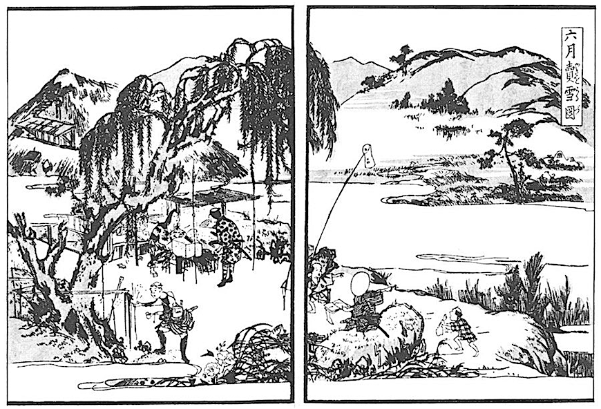
○
按に
ひといふは
冰の
本訓、
こほりと
訓は
寒凝の義なりと士清翁が
和訓栞にいへり。
氷室といふ事、俳諧の
季寄といふものなどにもみえたれば
普人の知りたる事にて、周礼にもいでたれば唐土のむかしにもありしことなり。
御国は仁徳紀に見えたればその古きを知るべし。
延喜式に山城国
葛城郡に
氷室五ヶ所をいだせり、六月朔日氷室より氷をいだして
朝庭に
貢献するを、
諸臣にも
頒賜事
年毎の
例なるよしなり。前に引し明月記の
寒氷は朝庭よりの
古例の
賜にはあるべからず、いかんとなれば
削氷を賞味せられしは七月廿八日なり、六月朔日にたまはりたる氷、七月廿八日まで
消ずやあるべき。明月記は千
写百

の書なれば七は六の
誤としても氷室を
出し六月の氷
朝を
待べからず。
盖貢献の後
氷室守が私に
出すもしるべからず。
○さて
氷室とは
厚氷を山蔭などの
極陰の地中に
蔵置、
屋を作りかけて守らす、古哥にもよめる
氷室守是なり。其
氷室は水の
氷ををさめおくやうに
諸書の
注釈にも見えしが、水の氷れるは
不潔なり、不潔をもつて
貢献にはなすべからず。且水の
冰は地中に
在りても
消易ものなり、
是他なし、水は極陰の物なるゆゑ陽に
感じ
易ゆゑなり。我越後に
削氷を視て
思に、かの
谷間に
在といひしは
天然の氷室なり。むかしの冰室といふは雪の
氷りむろなるべし。極陰の地に
竅を作り、屋を
造り
掛、別に
清浄の地に
垣をめぐらして、人に
踏せず、
鳥獣にも
穢させず、
而雪を
待、雪ふれば此地の雪をかの
竅に
撞こめ
埋め、人是を守り、六月朔日是を
開、
最清浄なる所を
貢献せしならん
歟。是
己が
臆断を以て理に
就て
古の氷室を
解するなり。
○氷室の古哥
枚挙べからず。かの削氷を賞味し玉ひたる定家に
（拾遺愚艸）「夏ながら秋風たちぬ氷室山こゝにぞ冬をのこすとおもへば」又源の仲正に
（千載集）「下たさゆる氷室の山のおそ桜きえのこりたる雪かとぞ見る」この哥氷室山のおそ桜を
消残りたる雪に見たてたる一首の
意、氷室は雪の氷なるべくぞおもはるゝ。今加州侯毎年六月朔日雪を
献じ玉ふも雪の氷なり。これにても
古の氷室は雪の氷なるをおもふべし。
○さてかの
茶店にて雪の氷をめづらしとおもひしに、その次日より
塩沢の
牧之老人が家に
在しに、日毎に
氷々とよびて売来る、
山家の
老婆などなり。
掌ほどなるを三銭にうる、はじめは二三度賞味せしがのちには氷ともおもはざりき。およそ物の
得がたきは
珍らしく、
得易はめづらしからざるは
人情の
恒なり。塩沢に居て六月の氷のめづらしからざりしをおもへば、吉野の人はよしのゝ花ともおもはず、松嶋の人は松嶋の月ともおもふまじ。たゞいつまでも
飽ざる物は孝心なる我子の
顔と、
蔵置黄金の
光なるべし。
越後国南は上州に
隣る
魚沼郡なり。東は奥州羽州へ
隣る
蒲原郡岩船郡なり。
国堺はいづれも
連山波濤をなすゆゑ雪多し。東北は
鼠が関
（岩船郡の内出羽のさかひ）西は
市振（頸城郡の内越中の堺）に
至の道八十里が間
都て北の
海浜なり。海気によりて雪一丈にいたらず
（年によりて多少あり）又
消も早し。
頸城郡の高田は海を
去事遠からざれども雪深し。文化のはじめ大雪の時高田の市中
（町のながさ一リにあまる）雪に
埋りて
闇夜のごとく、
昼夜をわかたざる事十余日、市中
燈の油
尽て諸人難義せしに、御
領主より家毎に油を
賜ひし事ありき。此時我塩沢も大雪にて、夜昼をしらず家雪にうづまりて日光を見ざる事十四五日
（連日ふゞきなるゆゑ雪をほる事ならず家うづまりてくらきなり）人気
欝悶して病をなすにいたれるもありけり。
百樹曰、余牧之老人が此書の
稿本に
就て
増修の
説を
添、
上梓［＃「上梓」の左に「ホンニスル」の注記］の
為に
傭書［＃「傭書」の左に「ハンシタカキ」の注記］へ
授る一本を作るをりしも、老人が
寄たる書中に、
「当年は雪
遅く冬至に成候ても
駅中の雪一尺にたらず、此
日次にては今年は小雪ならんと諸人一統悦び居候所に廿四日
（十一月なり）黄昏より
降いだし、廿五六七八九日まで五日の間
昼夜につもる事およそ一丈四五尺にもおよび申候。毎年の事ながら不意の大雪にて廿七日より廿九日まで
駅中家毎の雪
掘にて
混雑いたし、
簷外急玉山を
築戸外へもいでがたく
悃り申候。今日も又大
雪吹に相成、家内
暗く
蝋燭にて此状をしたゝめ申候。何程
可降哉難計一同心痛いたし居申候」
（下略）是当年
（天保十亥とし）十一月廿九日出の
尺翰なり。此文をもつても越後の雪を知るべし。
○余越後の夏に
遇しに、五
穀蔬果の
生育少しも雪を
畏たる色なし。
山景野色も雪ありしとはおもはれず、雪の浅き他国に同じ。
五雑組に
（天部）百草雪を
畏ずして霜を畏る。
盖雪は雲に
生じて
陽位也、霜は
露に生じて
陰位也といへり。越後の夏を
視て
謝肇
が此
説に
伏せり。
我住塩沢より
下越後の方へ二宿
越て
（六日町五日町）浦佐といふ宿あり。こゝに
普光寺といふ
（真言宗）あり、寺中に七間四面の
毘沙門堂あり。
伝ていふ、此堂大同二年の
造営なりとぞ。
修復の
度毎に
棟札あり、今猶
歴然と
存す。毘沙門の
御丈三尺五六寸、
往古椿沢といふ村に椿の
大樹ありしを伐て
尊像を作りしとぞ。
作名は
伝らずときゝぬ。
像材椿なるをもつて此地椿を
薪とすればかならず
祟あり、ゆゑに椿を
植ず。又
尊鳥を
捕を
忌玉ふ、ゆゑに諸鳥寺内に
群をなして人を
怖ず、此地の人鳥を捕かあるひは
喰ば
立所に
神罰あり。たとひ
遠郷へ
聟娵にゆきて年を
歴ても鳥を
喰すれば必
凶応あり、
験の
煕々たる事此一を以て知るべし。されば
遠郷近邑信仰の人多し。むかしより此毘沙門堂に於て毎年正月三日の夜に
限りて
堂押といふ事あり、
敢祭式の
礼格とするにはあらねど、むかしより
有来たる
神事なり。正月三日はもとより雪道なれども十里廿里より来りて此
浦佐に一宿し、此
堂押に
遇人もあれば
近村はいふもさらなり。
＊11
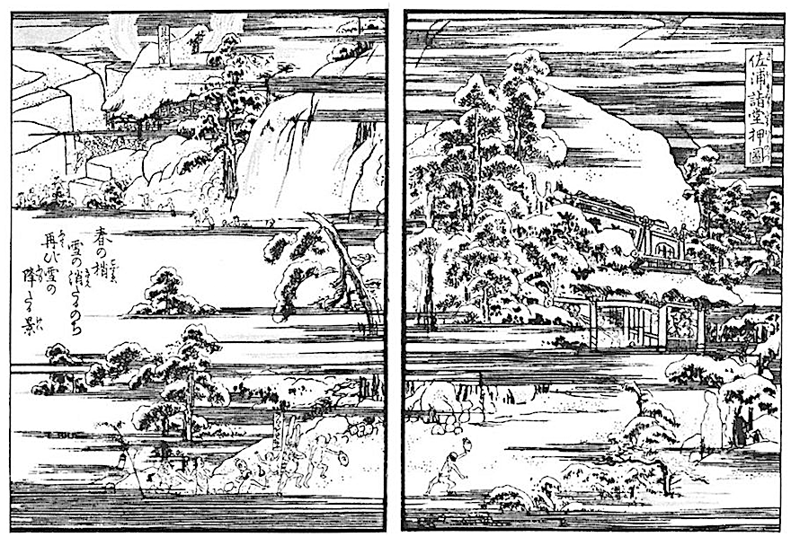
○さて
押に
来りし男女まづ
普光寺に入りて
衣服を
脱了、身に持たる物もみだりに
置棄、
婦人は
浴衣に
細帯まれにははだかもあり、男は皆
裸なり。
燈火を
点ずるころ、かの七間四面の堂にゆかた
裸の男女
推入りて、
錐をたつるの地なし。
余も若かりしころ一度此堂押にあひしが、上へあげたる手を下へさぐる事もならざるほどに
逼り
立けり。
押といふは
誰ともなくサンヨウ／＼と
大音に
呼はる
声の下に、堂内に
充満たる老若男女ヲヽサイコウサイとよばはりて北より南へどろ／＼と押、又よばはりて西より東へおしもどす。此一おしにて男女
倶に
元結おのづからきれて
髪を
乱す
甚
奇なり。七間四面の堂の内に
裸なる人こみいりてあげたる手もおろす事ならぬほどなれば、人の多さはかりしるべし。此諸人の
気息正月三日の寒気ゆゑ
烟のごとく
霧のごとく
照せる
神燈もこれが
為に
暗く、人の
気息屋根うらに
露となり雨のごとくに
降、人気
破風よりもれて雲の立のぼるが如し。婦人
稀には小児を
背中にむすびつけて
押も
有ども、この小児
啼ことなきも常とするの
不思議なり。
況此堂押にいさゝかも
怪瑕をうけたる者むかしより一人もなし。婦人のなかには
湯具ばかりなるもあれど、
闇処に
噪雑して一人もみだりがましき事をせず、これおの／＼
毘沙門天の
神罰を
怖るゆゑなり。
裸なる
所以は
人気にて堂内の
熱すること
燃がごとくなるゆゑ也。
願望によりては一里二里の所より正月三日の雪中寒気
肌を
射がごときをも
厭ず、
柱のごとき
氷柱を
裸身に
脊負て堂押にきたるもあり。二タおし三おしにいたればいかなる人も
熱こと暑中のごときゆゑ、堂のほとりにある大なる石の
盥盤に入りて水を
浴び又押に入るもあり。一ト押おしては
息をやすむ、七押七
踊にて
止を
定とす。
踊といふも
桶の
中に
芋を
洗ふがごとし。ゆゑに人みな
満身に
汗をながす。第七をどり目にいたりて
普光寺の
山長（耕夫の長をいふ）手に
簓を
持、人の
手輦に
乗て人のなかへおし入り
大音にいふ。「毘沙門さまの
御前に
黒雲が
降た
（モウ）」
（衆人）「なんだとてさがつた
（モウ）」
（山男）「
米がふるとてさがつた
（モウ）」とさゝらをすりならす。此さゝら内へ
摺ば
凶作なりとて
外へ／＼とすりならす。又
志願の者
兼て
普光寺へ達しおきて、小桶に
神酒を入れ
盃を
添て
献ず。山男
挑燈をもたせ人をおしわくる者廿人ばかりさきにすゝみて堂に入る。此盃手に入れば
幸ありとて人の
濤をなして取んとす。
神酒は神に
供ずる
状して人に
散し、盃は人の中へ
擲る、これを
得たる人は宮を
造りて
祭る、其家かならずおもはざるの幸福あり。此てうちんをも
争ひ
奪ふにかならず
破る、その
骨一本たりとも田の
水口へさしおけば、この水のかゝる田は
熟実虫のつく事なし。
神のあらたかなる事あまねく人の知る所なり。
神事をはれば人々
離散して普光寺に入り、
初棄置たる
衣類懐中物を
視るに
鼻帋一枚だに
失る事なし、
掠れば
即座に
神罰あるゆゑなり。
○さて堂内人
散じて後、かの
山長堂内に
苧幹をちらしおく
例なり。
翌朝山
長神酒供物を
備ふ、
後さまに
進て
捧ぐ、正面にすゝむを神の
忌給ふと也。
昨夜ちらしおきたる
苧幹寸断に
折てあり、
是人散てのち
諸神こゝに
集りて
踊玉ふゆゑ、をがらを
踏をり玉ふなりといひつたふ。
神事はすべて
児戯に
似たること多し、しかれども
凡慮を以て
量識べからず。此堂押に
類せし事他国にもあるべし、
姑記して
類を
示す。
北越雪譜二編巻之一 終
［＃改丁］
北越 鈴木牧之 編選
江戸 京山人百樹 増修
酉陽雑俎に
云、
熊胆春は
首に
在り、夏は
腹に在り、秋は左の足にあり、冬は右の足にありといへり。
余試に
猟師にこれを
問しに、
熊の
胆は常に
腹にありて
四時同じといへり。
盖漢土の
熊は
酉陽雑俎の
説のごとくにや。
凡猟師山に入りて
第一に
欲る
処の物は熊なり。
一熊を
得ればその皮とその
胆と大小にもしたがへども、
大かたは金五両以上にいたるゆゑに
猟師の
欲るなり。しかれども熊は
猛く、
且智ありて
得るに
易からず。雪中の熊は
皮も
胆も常に
倍す、ゆゑに雪に
穴居するを
尋ね
捜し、
猟師ども
力を
戮せてこれを
捕るに
種々の
術ある事
初編に
記せり。たま／＼
一熊を
得るとも
其儕に
価を
分ゆゑ
利得薄し、さればとて雪中の熊は
一人の
力にては
得事難しとぞ。
○
茲に
吾が
住近在に
后谷村といふあり。此村の弥左ヱ門といふ
農夫、
老たる
双親年頃のねがひにまかせ、秋のはじめ信州善光寺へ
参詣させけり。さてある日用ありて二里ばかりの所へゆきたる
留守、
隣家の者
過て火を
出したちまち
軒にうつりければ、弥左ヱ門が
妻二人の
小児をつれて
逃去り、
命一ツを
助りたるのみ、
家財はのこらず
目前の
烟となりぬ。弥左ヱ門は村に
火災ありときゝて
走皈りしに、
今朝出し家は
灰となりてたゞ
妻子の
无をよろこぶのみ。此
夫婦心正直にして
親にも
孝心なる者ゆゑ、人これを
憐みまづしばらく
我が家に
居るべしなど
奨る
富農もありけるが、われ／＼は
奴僕の
業をなしても
恩に
報ゆべきが、
双親皈り来りて
膝を
双て人の家に
在らんは心も安からじとて
諾ず。
竊に
田地を
分て
質入なしその金にて
仮に家を作り、親も
皈りて
住けり。
草を
刈鎌をさへ
買求るほどなりければ、火の
為に
貧くなりしに家を
焼たる
隣家へ
対ひて
一言の
恨をいはず、
交り
親むこと常にかはらざりけり。かくてその年もくれて
翌年の二月のはじめ、此弥左ヱ門山に
入て
薪を取りしかへるさ、谷に
落たる
雪頽の雪の
中にきは／＼しく
黒き
物有、
遙にこれを
視て、もし人のなだれにうたれ死したるにやと
辛じて谷に下り、
是を
視れば
稀有の大熊
雪頽に
打殺れたるなりけり。此
雪頽といふ事
初編にもくはしく
記たるごとく、山に
積りたる雪二丈にもあまるが、春の
陽気下より
蒸て
自然に
砕け
落る事
大磐石を
転しおとすが如し。これに
遇ば人馬はさらなり、大木大石もうちおとさる。されば此熊もこれにうたれしゝたるなり。弥ざゑもんはよきものをみつけたりと大に
悦び、
皮も
胆もとらんとおもひしが、日も西に
傾たれば
明日きたらんとて人の見つけざるやうに
山刀にて熊を雪に
埋めかくし、心に目しるしをして家にかへり
親にもかたりてよろこばせ、次のあした
皮を
剥べき用意をなしてかしこにいたりしに
胆は常に
倍して大なりしゆゑ、
弁当の
面桶に入れて持かへりしを人ありて
皮を金一両
胆を九両に
買けり。弥ざゑもんはからず十両の金を
得て
質入れせし田地をもうけもどし、これより
屡幸ありてほどなく家もあらたに作りたていぜんにまさりて
栄けり。弥左ヱ門が
雪頽に熊を得たるは
金一釜を
掘得たる
孝子にも
比すべく、
年頃の
孝心を
天のあはれみ玉ひしならんと人々
賞しけりと
友人谷鴬翁がかたりき。
吾が
住塩沢は
下組六十八ヶ村の
郷元なれば、郷元を
与り知る家には
古来の
記録も
残れり。其
旧記の
中に元文五年庚申
（今より百年まへ）正月廿三日
暁、
湯沢宿の
枝村
掘切村の
后の山より
雪頽不意に
押落し、
其※［＃「口＋向」、U+54CD、215-10］百
雷の如く、百姓彦右ヱ門浅右ヱ門の
両家なだれにうたれて家つぶれ、彦右ヱ門并に馬一疋
即死、
妻と
嗣息は半死半生、浅右ヱ門は父子即死、
妻は
梁の下に
圧れて死にいたらず。此時 御領主より彦右ヱ門
息へ米五俵、浅右ヱ門
妻へ米五俵
賜し事を
記しあり。此
魚沼郡は
大郡にて 会津侯御
預りの地なり。元文の昔も今も
御領内の
人民を
怜玉ふ事
仰ぐべく
尊むべし。そのありがたさを吾が
后へも
示さんとて
筆の
序にしるせり。近年は山家の人、家を作るに此
雪頽を
避て地を
計るゆゑその
難まれなれども、
山道を
往来する時なだれにうたれ死するもの
間ある事なり。
初編にもいへるが如く、○ホウラは冬にあり、
雪頽は春にあり。他国の人越後に来りて
山下を
往来せばホウラなだれを用心すべし。他国の人これに死したる
石塔今も所々にあり、おそるべし／＼。
吾が国に
雪吹といへるは、
猛風不意に
起りて
高山平原の雪を
吹散し、その風四方にふきめぐらして
寒雪百万の
箭を
飛すが如く、
寸隙の
間をも
許さずふきいるゆゑ、ましてや
往来の人は
通身雪に
射れて
少時に
半身雪に
埋れて
凍死する
、まへにもいへるがごとし。此ふゞきは
晴天にも
俄におこり、二日も三日も雪あれしてふゞきなる事あり、
往来もこれが
為にとまること毎年なり。此時に
臨で
死亡せしもの、雪あれのやむを
待も
程のあるものゆゑ、せんかたなく雪あれを
犯て
棺を
出す事あり。
施主はいかやうにもしのぶべきが
他人の
悃苦事見るもきのどくなり、これ雪国に一ツの
苦状といふべし。
我江戸に
逗留せしころ、
旅宿のちかきあたりに死亡ありて
葬式の日大
嵐なるに、
宿の
主もこれに
往とて
雨具きびしくなしながら、
今日の
仏はいかなる
因果ものぞや、かゝる
嵐に
値て人に
難義をかくるほどなればとても
極楽へはゆかるまじ、などつぶやきつゝ立いづるを見て、吾が国の
雪吹に
比ぶればいと安しとおもへり。
筑紫のしらぬ火といふは古哥にもあまたよみて、むかしよりその名たかくあまねく人のしる所なり。その
然るさまは
春暉が
西遊記＊12にしらぬ火を
視たりとて、
詳にしるせり。其しらぬ火といふも世にいふ
竜燈のたぐひなるべし。我国
蒲原郡に
鎧潟とて
（里言に湖を潟と云）東西一里半、南北ヘ一里の
湖水あり、毎年二月の中の午の日の夜、酉の下刻より丑の刻頃まで水上に火
燃るを、里人は
鎧潟の万燈とて
群り
観る人多し。
余が
友人これをみたるをきゝしに、かの西遊記にしるしたるつくしのしらぬ火とおなじさまなり。近年
湖水を北海へおとし新田となりしゆゑ、
湖中の万
燈も今は
人家の
億燈となれり。又我国の
八海山は
巓に八ツの池あり、依て山の名とす。
絶頂に八海大明神の社あり、八月朔日を縁日とし山にのぼる人多し。此夜にかぎりて
竜燈あり、其来る所を見たる人なしといふ。およそ竜燈といふものおほかたは春夏秋なり。諸国にある
諸書にしるしたるを見るに、いづれもおなじさまにて海よりも
出、山よりもくだる。毎年其日其
刻限、定りある事甚
奇異なり。竜神より神仏へ
供と
云が
普通の
説なれど、こゝに
珎き
竜燈の談あり、少しく竜燈を
解べき説なれば
姑くしるして
好事家の
茶話に
供す。
我国頸城郡米山の
麓に
医王山米山寺は和同年中の
創草なり。山のいたゞきに薬師堂あり、山中女人を
禁ず。此米山の腰を米山
嶺とて越後北海の
駅路なり、此
辺古跡多し。
余先年其古跡を
尋んとて
下越後にあそびし時、
新道村の
長飯塚知義の
話に、
一年夏の頃
の
為に村の者どもを
从へ
米山へのぼりしに、
薬師へ参詣の人山こもりするために
御鉢といふ所に小屋二ツあり、その小屋へ一宿しゝに
是日は六月十二日にて此御鉢といふ所へ
竜燈のあがる夜なり。おもひまうけずして竜燈をみる事よとて人々しづまりをりしに、酉の刻とおもふ頃、いづくともなくきたりあつまりしに、大なるは
手鞠の如く、小なるは
卵の如し。大小ともに此御
鉢といふあたりをさらずして、
飛行する
あるひはゆるやか、あるひははしる、そのさま心ありて
遊ぶが如し。其
光りは
螢火の色に
似たり。つよくも光り、よはくもひかるあり。
舞ひめぐりてしばらくもとゞまるはなく、あまたありてかぞへがたし。はじめより小やの入り口を
閉、人々ひそまりて
覗ゐたれば、こゝに人ありともおもはざるやうにて、大小の
竜燈二ツ三ツ小屋のまへ七八間さきにすゝみきたりしを、かれがひかりにすかしみれば、
形ち鳥のやうに見えて光りは
咽の下より
放つやうなり。
猶近くよらばかたちもたしかに
視とゞけんとおもひしに、ちかくはよらずしてゆるやかに飛めぐれり。此夜は
山中に一宿の心
得なれば心用の
為に
筒をも
持せしに、
手たれの上手しかも若ものなりしが光りを
的にうたんとするを、老人ありてやれまてとおしとゞめ、あなもつたいなし、此竜燈は竜神より薬師如来へさゝげ玉ふなり。
罰あたりめと
叱りたる声に、竜燈はおどろきたるやうにてはるか遠く飛さりしと
知義語られき。
およそ越後の雪をよみたる
哥あまたあれども、
越雪を
目前してよみたるはまれなり。
西行が
山家集、
頓阿が
草菴集にも越後の雪の哥なし、此
韻僧たちも越地の雪はしらざるべし。
俊頼朝臣に「
降雪に
谷の
俤うづもれて
稍ぞ冬の
山路なりける」これらは
実に越後の雪の
真景なれども、此あそん越後にきたり玉ひしにはあらず、
俗にいふ
哥人は
居ながら
名所をしるなり。
伊達政宗卿の御哥に「さゝずとも
誰かは
越ん
関の
戸も
降うづめたる
雪の夕
暮」又「なか／＼につゞらをりなる
道絶て雪に
隣のちかき山里」此君は御名たかき
哥仙にておはしまししゆゑ、かゝるめでたき御哥もありて人の
口碑にもつたふ。雪の
実境をよみ玉ひしはしろしめす御
ン国も
深雪なればなり。芭蕉翁が
奥に
行脚のかへるさ越後に入り、
新潟にて「海に
降る雨や
恋しきうき
身宿」
寺泊にて「
荒海や
佐渡に
横たふ天の川」これ夏秋の
遊杖にて越後の雪を見ざる事
必せり。されば近来も越地に遊ぶ
文人墨客あまたあれど、秋のすゑにいたれば雪をおそれて
故郷へ
逃皈るゆゑ、越雪の
詩哥もなく
紀行もなし。
稀には他国の人越後に雪中するも
文雅なきは筆にのこす事なし。吾が国三条の人
崑崙山人、北越奇談を出板せしが
（六巻絵入かな本文化八年板）一辞半言も雪の事をしるさず。今
文運盛にして新板
湧がごとくなれども日本第一の大雪なる越後の雪を
記したる
書なし。ゆゑに吾が
不学をも
忘れて
越雪の
奇状奇蹟を記して
後来に
示し、且
越地に
係りし事は
姑く
載て
好事の
話柄とす。
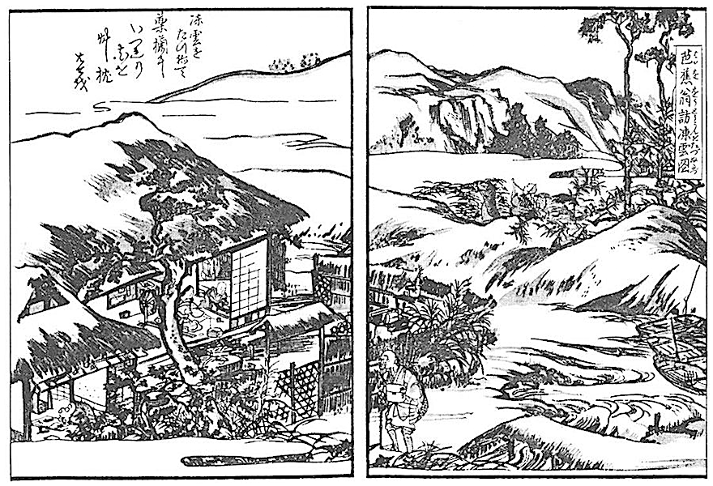
さて元禄の
頃高田の御城下に
細井昌庵といひし医師ありけり。一に青庵といひ、
俳諧を
善して
号を
凍雲といへり。ひとゝせはせを翁奥羽あんぎやのかへり
凍雲をたづねて「
薬欄にいづれの花を
草枕」と
発句しければ、
凍雲とりあへず「
萩のすだれを
巻あぐる月」此時のはせをが
肉筆二枚ありて一枚は
書損と覚しく
淡墨をもつて
一抹の
痕あり、二枚ともに
昌庵主の家につたへしを、
后に本
書は同所の
親族三崎屋吉兵衛の家につたへ、
書損のは同所五智如来の寺にのこれり。しかるに文政のころ此地の
邦君風雅をこのみ玉ひしゆゑ、かの二枚
持主より奉りければ、吉兵ヱヘ
常信の三幅対に白銀五枚、かの寺へもあつき賜ありて、今二枚ともに
御蔵となりぬと友人
葵亭翁がものがたりしつ。葵亭翁は
蒲原郡加茂明神の
修験宮本院名は
義方吐醋と
号し、又
無方斎と
別号す、
隠居して
葵亭といふ。
和漢の
博識北越の
聞人なり。芭蕉が
件の句ものに見えざればしるせり。
百樹曰、芭蕉
居士は寛永廿年伊賀の上野藤堂新七郎殿の
藩に生る。
（次男なり）寛文六年歳廿四にして
仕絆を
辞し、京にいでゝ
季吟翁の門に入り、
書を
北向雲竹に
学ぶ。はじめ
宗房といへり、季吟翁の
句集のものにも宗房とあり。
延宝のすゑはじめて江戸に来り
杉風が家に
寄、
（小田原町鯉屋藤左ヱ門）剃髪して
素宣といへり、
桃青は
后の名なり。
芭蕉とは
草庵に芭蕉を
植しゆゑ人よりよびたる名の
后には
自号によべり。翁の作に芭蕉を
移辞といふ文あり、その
終りの
辞に「たま／＼花さくも花やかならず
茎太けれども
斧にあたらず、かの山中
不材の
類木にたぐへてその性よし。
僧懐素は是に筆を
走らし
張横渠は
新葉を見て
修学の
力とせしとなり。
予その二ツをとらず。たゞ此
蔭に遊びて風雨に
破れ
易きを
愛す「はせを
野分して
盥に雨をきく夜哉」此芭蕉庵の
旧蹟は
深川
清澄町万年橋の南
詰に
対ひたる今
或侯の
庭中に在り、古池の
趾今に存せりとぞ。
（余芭蕉年表一名はせを年代記といふものを作せり、書肆刻を乞ども考証未レ足ゆゑに刻をゆるさず）翁身を
世外に
置て四方に
雲水し、江戸に
趾をとゞめず。
終には元禄七年甲戊十月十二日「
旅に
病て
夢は
枯埜をかけ
廻る」の一句をのこして浪花の花屋が
旅※［＃「窗−穴かんむり」、U+56F1、223-9］に
客死せり。是
挙世［＃「挙世」の左に「ヨノナカ」の注記］の知る処なり。翁が
臨終の事は江州粟津の義仲寺にのこしたる榎本其角が芭蕉
終焉記に目前視るが如くに
記せり。此記を
視るに翁いさゝか
菌毒［＃「菌」の左に「キノコ」の注記］にあたりて
痢となり、九月晦日より病に
臥、
僅に十二日にして
下泉せり。此時
病床の
下にありし門人○
木節（翁に薬をあたへたる医なり）○
去来○
惟然○
正秀○
之道○
支考○
呑舟○
丈草○
乙州○
伽香以上十人なり。其角は此時和泉の
淡の
輪といふ所にありしが、翁大坂にときゝて病ともしらずして十日に来り十二日の
臨終に
遇り、
奇遇といふべし。
（以上終焉記を摘要す）其角が終焉記の文中に
（此記義仲寺に施板ありて人の乞ふにあたふ、俳人はかならずみるべき書なり）『義仲寺にうつして葬礼義信を
尽し京大坂大津
膳所の
連衆被官従者までも此翁の
情を
慕へるにこそ
招ざるに
馳来る者三百余人なり。
浄衣その外智月と
（百樹云、大津の米屋の母、翁の門人）乙州が妻
縫たてゝ着せまゐらす』又曰『二千
余人の
門葉辺遠ひとつに
合信する
因と
縁との
不可思議いかにとも
勘破しがたし』百樹おもへらく、孔子に三千の門人ありて門に十
哲をいだす。芭蕉に二千の門葉ありて、
庵に十哲とよぶ門人あり。
至善の
大道と
遊芸の
小技と
尊卑の
雲泥は論におよばざれども、孔子七十にして
魯国の
城北泗上に
葬て
心喪を
服する
弟子三千人、芭蕉五十二にして粟津の義仲寺に
葬る時
招ざるに来る者三百余人、
是以人に師たるの徳ありしをおもふべし。
盖芭蕉の
盆石が孔夫子の
泰山に似たるをいふなり。芭蕉
曾
 ［＃「」の左に「ウルコヽロ」の注記］
［＃「」の左に「ウルコヽロ」の注記］の
風軽薄の
習少しもなかりしは
吟咏文章にてもしらる。此翁は其角がいひしごとく人の
推慕する事今に於も
不可思議の
奇人なり。されば一
句一
章といへども人これを
句碑に作りて
不朽に
伝ふる事今
猶句碑のあらざる国なし。
吟海の
幸祥詞林の
福禎文藻に於て此人の右に出る者なし。されば本文にもいへるごとくかりそめにいひすてたる
薬欄の一句の
墨痕も百四十余年の
后にいたりて文政の頃白銀の光りをはなつぞかし、
論外不思議といふべし。蜀山先生
嘗謂予曰、
凡文墨をもつて世に遊ぶ
者画は論せず、
死後にいたり一字一百銭に
当らるゝ身とならば
文雅幸福
足べしといはれき。此先生は今其幸福あり、一字一百銭に
当らるゝ事
嗟乎難かな。
○さてまた芭蕉が
行状小伝は
諸書に
散見して
普く人の知る所なり、しかれども
翁の
容は
挙世知る人あるべからず。されば
爰に一証を
得たるゆゑ、此
雪譜に
記載して
后来に
示すは、かゝる
瑣談［＃「瑣談」の左に「チヒサイハナシ」の注記］も世に
埋冤［＃「埋冤」の左に「ウヅマル」の注記］せん事のをしければ、いざ
然ばとて雪に
転す筆の
老婆心なり。
○こゝに二代目市川団十郎初代
段十郎
（のち団に改む）の
俳号を
嗣で才牛といふ。
后に
柏筵とあらたむ。
（元文元年なり）此
柏筵は、○正徳○享保○元文○寛保を
盛に
歴たる名人なり。
妻をおさいといひ、俳名を
翠仙といふ、夫婦ともに俳諧を
能し
文雅を
好り。此
柏筵が日記のやうに
書残したる
老の
楽といふ
随筆あり。
（二百四五十帋の自筆なり）嘗梱外［＃「梱」の左に「シキヰ」の注記］へ
出さゞりしを、狂哥堂真顔翁
珎書なれば
懇望してかの家より借りたる時
余も
亡兄とともに
読しことありき。そのなかに芝居土用やすみのうち
柏筵一蝶が引船の絵の小屏風を風入れする
旁にて、
人参をきざみながら此絵にむかしをおもひいだして
独言いひたるを
記したる文に「我れ
幼年の
頃はじめて吉原を見たる時、黒羽二重に三升の紋つけたるふり袖を
着て、右の手を一蝶にひかれ左りを其角にひかれて日本
堤を
往し事今に
忘ず。此ふたりは世に名をひゞかせたれど今はなき人なり。我は幸に世にありて名もまた
頗る
聞えたり
（中略）今日小川
破笠老まゐらる。むかしのはなしせられたるなかに、芭蕉翁はほそおもてうすいもにていろ白く小兵なり。
常に茶のつむぎの羽織をきられ、
嵐雪よ、其角が所へいてくるぞよとものしづかにいはれしとかたられたり」此文はせをを今目前に見るが如し。
（翁の門人惟然が作といふ翁の肖像あるひは画幅の肖像、世に流伝するものと此説とあはせ視るべし）小川破笠俗称平助
壮年の
頃放蕩にて嵐雪と
倶に
（俗称服部彦兵ヱ）其角が堀江町の
居に
食客たりし事、
件の
老の
楽又破笠が
自記にも見ゆ。破笠一に笠翁また
卯観子、
夢中庵等の号あり。
絵を一蝶に
学び、俳諧は其角を師とす。余が蔵する画幅に延享三年丙寅仲春夢中庵笠翁八十有四
筆とあり。
描金を
善して人の
粕をなめず、別に
一趣の
奇工を
為す。
破笠細工とて今に
賞せらる。吉原の七月
創て
機燈を作りて今に其
余波を
残り、
伝詳なれどもさのみはとてもらせり。
東游記に越前国大野領の山中に
化石渓あり。何物にても半月あるひは一ヶ月此
渓に
浸しおけばかならず石に化す、
器物はさらなり紙一
束藁にてむすびたるが石に
化たるを見たりとしるせり。我が越後にも化石渓あり、
魚沼郡小出の
在羽川といふ
渓水へ
蚕の
腐たるを
流しが一夜にして石に
化したりと
友人葵亭翁がかたられき。かの大野領の化石渓は東游記の
為に
名高けれども我が国の化石渓は世にしられず、又近江の石亭が
雲根志変化の部に
（前編）人あり語云、越後国
大飯郡に
寒水滝といふあり、此処
深山幽谷にして
沍寒［＃「沍寒」の左に「ツヨクサムキ」の注記］の地なり。此滝
坪へ万物を
投こめおくに百日を
過ずして石に化すとぞ、滝坪の近所にて諸木の枝葉又は木の
実その外
生類までも石に化たるを得るとぞ。
予去る頃此滝の石を取よせし人ありて見るに、常の石にあらず
全躰鐘乳なり、木の葉など石中にふくむ
則石なり。
雲林石譜にいふ
鐘乳の
転化して石になるならん云云。
牧之案るに、越後に
大飯郡なし又
寒水滝の名もきかず。人あり
語るとあれば
伝聞の
誤なるべし。
盖北越奇談に
会津に
隣る
駒が
岳の
深谷に入ること三里にして
化石渓と名付る処あり、
虫羽草木といへども
渓に入りて一年を
歴ればみな化して石となる。
其川甚
苦寒にして夏も
渉べからざるが如し。又
蘇門岳の北
下田郷の
深谷にも
化石渓あり云々。
雲根志の
説はこれらの所を
聞誤たるならん。
吾が
同郡岡の
町の
旧家村山藤左ヱ門は
余が
壻の兄なり。此家に先代より
秘蔵する亀の
化石あり、
伝ていふ、
近き
山間の土中より
掘得といふ、
実に化石の
奇品なり、
茲に
図を
挙て
弄石家の
鑒を
俟。
百樹曰、
件の
図を
視るに常にある亀とは
形状少しく
異なるやうなり。依て
案るに、
本草に
所謂秦亀一名
筮亀あるひは山亀といひ、俗に
石亀といふ物にやあらん。
秦亀は山中に
居るものなり、ゆゑに
呼で山亀といふ。春夏は
渓水に遊び秋冬は山に
蔵る、
極て長寿する亀は是なりとぞ。又
筮亀と一名するは
周易に亀を
焼て占ひしも此亀なりとぞ。
件の亀の化石、本草家の
鑒定を
得て
秦亀ならば一
層の
珎を
増べし。山にて
掘得たりとあれば
秦亀にちかきやうなり。化石といふものあまた見しに、多は
小きものにてあるひはまた
体全も
稀なり。
図の化石は
体全く
且大なり、
珎とすべし。

○
余先年俗にいふ
大和めぐりしたるをり、半月あまり京にあそび、
旧友の画家
春琴子に
就て
諸名家をたづねし時、
鴻儒の
聞高き
頼先生
（名襄、字子成、山陽と号、通称頼徳太郎）へも
訪ひ、
坐談化石の事におよび、先生
余に
蟹の化石一枚を
恵。その色
枯ずして
生が如く、
堅硬ことは石なり。
潜確類書又
本草三才
図会等にいへる
石蟹泥沙と
倶に化して石になりたるなるべし。
盆養する
石菖の
下におくに水中に
動が如し。亀の
徒者に
其図を
出す、是も今は名家の
形見となりぬ。
雲根志異の部に曰、
予が
隣家に
壮勇の者あり儀兵衛といふ。或時
田上谷といふ山中に
行て
夜更て
皈るに、むかうなる山の
澗底より青く光り
虹の如く
昇てすゑは
天に
接る。此男
勇漢なれば
无二
无三に草木を分けて山を越、谷をわたりてかの
根元をさぐりみるに、たゞ何の
異る事もなき石なり。ひろひとりて
背に
負ひ
皈るに道すがら光ること前の如し。甚だ夜道の
労をたすかり、
暁の
頃我が家に着ぬ。
件の石を
軒の
外に
直し
置、朝飯などしたゝめて彼の石を見んとするに石なし、いかにせし事やらんとさま／″＼にたづねもとむれども行方しれずとなん。又本国
甲賀郡石原潮音寺和尚のものがたりに、近里の農人
畑を
掘居しに
拳ほどなる石をほりいだせり、此石常の石よりは甚だうつくし、よつて取りかへりぬ、夜に入りて光ること
流星の如し。友のいふ、是は
石なり、人の持ものにあらず、家にあらば必
災あるべし、はやく打やぶりてすつべしと。これをきゝて
斧をもつて
打砕しを竹やぶの中へすてたり、其夜竹林一面に光る事数万の螢火の如し。
翌朝近里の人きゝつたへて
集り来り、竹林をたづねみるに少しのくづまでも一石も有る事なし。又
筑后国上妻郡の人用ありて夜中近村へ行に一ツの小川あり、かちわたりせしに、なにやらん光る物あり、拾ひとりてみれば小石なり、翌日さる方へ献ず、しばらくして失たりとぞ。
（以上一条全文）是等は他国の事なり、我が
越后にも夜光の玉のありし事あり。
新発田より
（蒲原郡）東北
加治といふ所と中条といふ所の間
路の
傍田の中に庚申塚あり、此塚の上に大さ一尺五寸ばかりの
円石を
鎮してこれを
礼る。此石その
先農夫屋の
后の竹林を
掃除して竹の根など
掘るとてかの石一ツを
掘得たり。その色青みありて黒く甚だなめらかなり、
農夫これをもつて
藁をうつ
盤となす、其夜妻
庭に
出しに
燦然として光る物あり、妻
妖怪なりとして
驚叫。
家主壮夫三五人を
伴ひ来りて光る物を
打に石なり、皆もつて
怪とし石を竹林に捨つ、その石
夜毎に光りあり、村人おそれて夜行ものなし。依て此石を庚申塚に祭り上に
泥土を
塗て光をかくす、今
猶苔むしてあり。
好事の人この石を
乞へども
村人祟あらん
を
惧てゆるさずとぞ。又
駒が
岳の
麓大湯村と
橡尾村の間を流るゝ
渓川を
佐奈志川といふ、ひとゝせ
渇水せし頃水中に一
点の光あり、螢の水にあるが如し。数日処を
移さず、一日
暴風に水
増て光りし物所を
失ふ、
后四五町川下に光りある物
螢火の如し。此地山中なれば
村夫等昏愚にして夜光の玉なる事をしらず、
敢てたづねもとむる者もなかりしに、其秋の
洪水に夜光の玉ふたゝびながれて
所在を
失ひしとぞ。
（以上北越奇談の説）偖茲に
夜光珠の
実事あり。
我文政二年卯の春
下越後を
歴遊せしをり、三嶋郡に入り
伊弥彦明神を
拝、
旧知識なれば高橋
光則翁を
尋しに、翁大によろこびて
一宿を
許しぬ。此翁和哥を
善し
且好古の
癖ありて
卓達の人なり、
雅談湧が如く、おもはず
をとゞめし事四五日なりし。一
夕翁の語りけるは、今より四五十年以前吉田の
（三島郡の内なり）ほとり大鳥川といふ
渓川に夜な／＼光りものありとて人
怖て近づくものなかりしに、此川の近所に富長村といふあり、こゝに
鍛冶の兄弟あり、ひとりの母を
養ふ、家
最貧し。此兄弟
剛気なるものゆゑかの光り物を見きはめ、もし
妖怪ならば
退治して村のものどもが
肝をひしがんとて、ある夜兄弟かしこにいたりしに、をりしも秋の頃水もまさりし川
面をみるに、月
暗くしてたゞ水の音をきくのみ。両人
炬をふりてらしてこゝかしこをみるに光るものさらになく、また
怪しむべきをみず、さては人のいふは
空言ならん、いざとて
皈らんとしけるに、水上
俄に
光明を
放つ、すはやとて両人衣服を
脱すて水に飛入り
泳ぎよりて光る物を
探りみるに、くゝり枕ほどなる石なり、これを
取得て家に
皈り、まづ

の
下に
置しに光り
一室を
照せり。しか／″＼のよし母にかたりければ、
不思議の
宝を
得たりとて親子よろこび
近隣よりも来りみるもありしが、ものしらぬ者どもなれば
趙壁随珠ともおもはずうち
過けり。かくて
后弟別家する時家の物二ツに
分ちて弟に
与んと母のいひしに、弟は
家財を
望ず光る石を
持去んといふ。兄がいはく、光る石を
拾ひ
得しは我が
企なり、
汝は我が
力を
助しのみなり、光る石は親の
譲にあらず、兄が物なり。
家財を
分ならばおやのゆづりをこそわかつべけれ、
与ふまじ／＼。弟いな／＼あの石はおれがものなり、いかんとなればおん身は光る石を
拾んとの
企にはあらず、
妖物を
退治せんとて川へいたり、おん身よりは
我先に川へ飛いり光りものを
探りあてゝかづきあげしも我なり、しかればおれがひろひしを持さらんになにかあらん。いや／＼此兄がものなり、弟がのなりと
口論やまず、
終にはつかみあひうちあひしを、母やう／＼におししづめ、しからば光る石を二ツに
破りて分つべしといふ。弟さらばとて明玉をとりいだし
鍛冶する
※［＃「金＋質」、U+9455、233-10］の上にのせ
※［＃「金＋奄」、U+4936、233-10］をもて力にまかせて打ければ、をしむべし明玉
砕破内に白玉を
孕しがそれも
砕け、水ありて
四方へ
飛散けり。其夜水のかゝりし処
光り暉く事
螢の
群たるが如くなりしに、二三夜にしてその光りも
消失けりとぞ。いかに
頑愚の手にありしとはいひながら、
稀世の宝玉
鄙人の
一槌をうけて
亡びたるは、玉も人も
倶に不幸といふべしと
語られき。
牧之案に、
橘春暉が
著たる
北※瑣談［＃「窗−穴かんむり」、U+56F1、233-14］（後編の二）蔵石家の事をいふ
条に
曰、江州山田の浦の木之内
古繁、伊勢の山中甚作、大坂の加嶋屋源太兵ヱ、其外にも三都の中の
好事家侯国の
逸人、
蔵石に名の高き人近年
夥し、
余も諸家の
奇石を見しに皆一家の
蔵る処三千五千
種にいたる、五日十日の日を
尽してやう／＼
眼をふる
を
得るにいたる、その多き中にも格別に目をおどろかすほどの
珎奇の物は
无ものなり。加嶋屋源太兵ヱものがたりに、
過し
年北国より人ありて
拳の大さの
夜光の玉あり、よく一
室を
照す、よき
価あらば
売んといひしかば、
即座に其人に
托して
曰、其玉
求たし、
暗夜にその玉の入りたる箱の内ばかり白きやうに見えなば金五十両にもとむべし、又その玉にて闇夜に大なる文字一字にても
読えられなば金百両にもとむべし、又
書状よむほどならば三百金、いよ／＼一室をてらさば吾が身上のこらずの
力を
尽して
求むべし、
媒して玉はるべしといひしが、そのゝちなにの
便もなくてやみぬ、
空言にてありしと思はる云云。此文段は天明年中
蔵石の世に
流行たる頃加嶋屋が
話をそのまゝに
春暉が
后にしるしたるなるべし。さて又
余がかの
鍛冶屋が玉のはなしをきゝしは文政二年の春なり、今より四五十年以前とあれば、
鍛冶が玉を
砕きたるは安永のすゑか天明のはじめなるべし。
然りとすれば、
蔵石の
流行たる頃なれば、かのかじまやが
話に北国の人
一室をてらす玉のうりものありしといひしは、我が国の
縮商人などがかぢやの玉の
をきゝつたへて
商ひ口をいひしもはかられず。しかるに玉はくだきしときゝてかじまやへ
答へざりしにやあらん。
卞和が玉も
楚王を
得たればこそ世にもいでたれ、右にのせたる夜光の
話五ツあり、三ツは我が越後にありし事なり。いづれも世にいでず、
嗟乎惜むべし／＼。
百樹曰、
五雑組物の部に
鍛冶屋がはなしに
類せる
あり。
明の
万暦の
初 中
中連江といふ所の人蛤を
剖て玉を
得たれども
不識これを
烹る、
珠釜の中に
在て
跳躍して
定ず、
火光天に
燭、
里人火事ならんと
驚き来りてこれを救ふ。玉を烹たるもの、そのゆゑを
聞て
釜の
蓋を
啓て
視れば
已に玉は
半枯たり。其
珠径一寸
許、
此真に
夜光明月の
珠なり。
俗子に
厄せられたる事
悲夫と
記せり。又曰、
（五雑組おなじつゞき）魏の
恵王が
径寸の
珠前後車を
照こと十二
乗の物はむかしの事、今
天府にも
夜光珠はなしと
明人謝肇が
五雑組にいへり。○
神異記○
洞冥記にも
夜光珠の
見えたれども
孟浪に
属す。
古今注にはすぐれて大なる
鯨の
眼は夜光珠を
為といへり。
卞和が玉も
剖之中果有玉といへば、石中に玉を
孕たる事
鍛冶の
砕たる玉
卞和が玉に
類せり。
趙の
恵王が夜光の玉を、
秦の
照王が
城十五を以て
易んといひしは、加嶋屋が北国の
明玉を
身上尽して
買んと
約せしに
類せり。さて又
癸辛雑譏続集（巻下）に、
機婦糸を水にひたしおきたるに、夜中白く大なる
蜘蛛きたりてその水をのむに
身に光りをはなつ、かの
婦人これを見て大にあやしみ、
籠を
罩てかの
蜘蛛をとらへしに
腹に
夜光珠在、大さ
弾丸［＃「弾丸」の左に「テツハウタマ」の注記］の如しとしるせり。
（此事を前文に牧之老人が引たる北越奇談玉の部に越後にありし事とていだせり。その事癸辛雑識に少しもちがはず、おもふに癸辛雑識は唐本にて且又容易には得がたき書なれば、北越奇談の作者俗子の目に奇をしめさんとてたはむれに越後の事としてかきくはへたるもしるべからず。しかし癸辛雑識続集は都下にすら得がたければ本書を見たるにはあるべからず、博識に伝聞したるなるべし）又
増一阿含経（第卅三。等法品第卅九）に
転輪聖王の徳にそなはりたる一尺六寸の
夜光摩尼宝は
彼国十二
由旬を
照すとあり、
文多ければあげず。
盖一由旬は
異国の四十里なり、十二
由旬は日本道六十六里なり。一尺六寸の玉六十六里四方を照すは
奇異といふべし。
転輪王此玉を
得て
試に高き
幢の
頭に
挙著けるに、
人民等玉の光りともしらず夜の
明たりとおもひ、おの／＼
家業をはじめけりと
記せり。此事
碩学の
聞高き
了阿上人の
話にきゝてかの経を
借得て
読しが、これぞ夜光の玉の
親玉なるべき。
 餅花
餅花や
夜は
鼠がよし野山
（一にねずみが目にはとあり）とは其角がれいのはずみなり。江戸などの餅花は、十二月
餅搗の時もちばなを作り歳徳の神棚へさゝぐるよし、
俳諧の
季には冬とす。我国の餅花は春なり。正月十四日までを
大正月といひ、十五日より廿日までを
小正月といふ、是
我里俗の
習せなり。さて正月十三日十四日のうちに門松しめかざりを取り払ひ、
（我国長岡あたりにては正月七日にかざりをとり、けづりかけを十四日までかくる）餅花を作り、大神宮歳徳の神
夷おの／＼餅花一
枝づゝ神棚へさゝぐ。その作りやうはみづ木といふ木、あるひは
川楊の
枝をとり、これに餅を三角又は梅桜の花形に切たるをかの枝にさし、あるひは団子をもまじふ、これを
蚕玉といふ。
稲穂又は紙にて作りたる金銭、
縮あきびとなどはちゞみのひな形を紙にて作り、
農家にては木をけづりて
鍬鋤のたぐひ
農具を小さく作りてもちばなの枝にかくる。すべておのれ／＼が
家業にあづかるものゝひなかたを掛る、これその
業の福をいのるの
祝事なり。もちばなを作るはおほかたわかきものゝ
手業なり。
祝ひとて男女ともうちまじりて
声よく
田植哥をうたふ、此こゑをきけば夏がこひしく、家の上こす雪のはやくきえよかしとおもふも雪国の人情なり。此餅花は俳諧の古き
季寄にもいでたれば二百年来諸国にもあるは
勿論なり。ちかごろ江戸には
季によらず小児の手遊に作りあきなふときゝつ。
我が
塩沢近辺の風俗に、正月十五日まへ七八歳より十三四までの男の
童ども
斎の神
勧進といふ事をなす。少し
富家の
童これをなすには
※木［＃「木＋備のつくり」、U+235BE、239-10］を上下より
削り
掛て
鍔の形を作る、これを
斗棒といふ。これを二本大小にさし、上下をちやくし、
童僕に一升ますをもたせ又はひもありてくびにかくるあり。その中へ五六寸ばかりの木を
頭ばかり人形に作り、目鼻をゑがき、二ツつくりて女神男神とし、女神はかしらに
綿をきせ、紙にて作りたる衣服に
紅にて梅の花などゑがく。男神には烏帽子をきせ、木をけづりかけて
髭とす。紙のいふくに若松などゑがく。此二ツをかの升の内におき、
斎の
神勧進々々とよばゝりありく。
敢物の
欲にもあらず正月あそびの一ツなり、これ一人のみにあらず、
児輩おの／＼する事なり。これに
与ふるものは切餅あるひは銭も
与ふ。又まづしきものゝわらべらは五七人十人
余も
党をなし、
茜木綿の
頭巾にあさぎのへりをとりたるをかむり、かの
斗棒を一本さし、かの
二神を柳こりに入れて首にかけ
さいの神くわんじん、銭でも金でもくはつ／＼とおやれ／＼ と
門々をおしありく。これに銭をもあたへあるひは
濁り酒などのませ、顔に墨をぬりてわらひどよめく、これかならずするならはせなり。又長岡のほとりにてはかの斗棒のけづりかけの三尺ばかりなるに、宝づくしなどゑがきたるをさして
勧進す、これは小児にあらず、大人のいやしきがわざなり。
勧進のことばに「ぜにでもかねでもおいやれ、らいねんの春は
娵でも
聟でもとるやうに、泉のすみからわくやうに、すつくらすわいとおいやれ／＼」かくして勧進の銭をあつめて
斎の神を
祭る入用とするなり。
（さいの神のまつり下にしるす）又去年むこよめをむかへたる家の
門に、
未明よりわらべども大勢あつまり、かの斗棒をもつて門戸を
敲き、よめをだせむこをだせと同音によばゝりたゝく。これを里俗の
祝事とすればいかる家なく、小どもを入れて物などくはするもあり、かゝる
俗習他国にもあまたあるべし。
○さて此事たあいもなき小どものたはむれとのみおもひすぐししに、
醒斎京伝翁が
骨董集を
読て
本拠ある事を
発明せり。
骨董集上編下、
粥の木の
条に、○
粥杖○
祝木○ほいたけ
棒といふ物、前にいひし
斗棒に同じ。京伝翁の
説に、
粥の木とは正月十五日粥を
烹たる
薪を
杖とし、子もたぬ女のしりをうてば男子をはらむといふ祝ひ事なりとて、○
枕の
草紙○
狭衣○
弁内侍の
日記その外くさ／＼の
書を
引て、上代の
宮裏近古の
市中粥杖の事を
挙て、
考証甚詳なり。今我が郡にいふ
斗棒は
則いにしへの
粥杖の
遺風なる事を
発明せり、我国にも
祝木あるひは
御祝棒といふ所もあり。これ七八百年前より正月十五日にする事、京伝翁が引れたる
書にてしらるゝなり。その
引書の
中にも明人の作「日本風土記」にあるはもつとも我国のによく似たり、此
書は今より三百年ばかりいぜんの日本の風俗を明人が
聞つたへて書たるものなれば、今我国にて
小童のたはむれにするも三百年ばかりさきの風俗
遠境にもうつりのこりたるなるべし。京伝翁が引たる日本風土記
（巻の二時令の部とあり、漢文のまゝを引たれどこゝにはかなをまじふ）に「
但街道郷村の
児童年十五八九已上に
及ぶ
者、
各柳の枝を取り皮を
去り
木刀に
彫成なし、皮を以
復外刀上に
纏ひ
用火焼黒め皮を
去り
以黒白の
花を
分つ、名づけて
荷花蘭蜜といふ。
再荊棘の
条を
取香花神前に
挿供。次に
集る
各童手に木刀を
執途に
隊閙［＃「隊閙」の左に「ムレサワギ」の注記］、
凡有婚无子の
婦木刀を
将て
遍身打之口に
荷花蘭蜜と
舎ふ。かならず此
婦当年孕男を
生」我国にて
児童等が人の
門を
斗棒にてたゝき、
娵をだせ
聟をだせとのゝしりさわぐは、右の風土記の
俗習の
遺事なるべし。
百樹案に、件の風土記に再び荊棘の条を取り香花神前に挿といひしは、餅花を神棚へ供ずる事を聞て粥杖の事と混錯して記したるなるべし。然りとすれば餅花も古き祝事なり。
吾が
国正月十五日に
斎の神のまつりといふは
所謂左義長なり。
唐土に
爆竹といふ
唐人除夜の
詩に、
竹爆千門の
※［＃「口＋向」、U+54CD、242-4］燈燃万戸
明なりの句あれば、
爆竹は大晦日にする事なり。吾朝にては正月十五日、 清涼殿の御庭にて青竹を焼き正月の
書始を此火に焼て天に奉るの
義とす。十八日にも又竹をかざり扇を結びつけ同じ御庭にて
燃し玉ふを祝事とせさせ玉ふ。
民間にもこれを
学びて正月十五日正月にかざりたるものをあつめて
燃す、これ
左義長とて昔よりする事なり。これを
斎の神
祭りといふも古き事なり。
爆竹左義長の
故事俳諧の
季寄年浪草に諸書を引てくはしくいへり。
○吾が
郡中にて
小千谷といふ所は
人家千戸にあまる
饒地なり、それゆゑに
斎の神の
（斎あるひは幸とも）まつりも
盛大なり。これをまつるにその町々におの／＼毎年さだめの場所ありてその所の雪をふみかため、さしわたし三間ばかりに
周したる高さ六七尺の
円き壇を雪にて作り、これに
二処の上り
階を作る、これも雪にてする、
里俗呼で
城といふ。さて
壇の
中央に杉のなま木をたてゝ
柱とし、正月かざりたるものなにくれとなくこの
柱にむすびつけ又は
積あげて、
七五三をもつて上よりむすびめぐらして
蓑のごとくになし、
（かやをまじへ入れてかたちをつくる）此
頂に
大根注連といふものゝ左右に開たる扇をつけて
飛鳥の
状を作りつける。
壇の上には
席をまうけて
神酒をそなへ、此町の長たるもの礼服をつけて
拝をなし、所繁昌の幸福をいのる。此事をはればきよめたる火を
四隅より
移す、
油滓など火のうつり
易きやうになしおくゆゑ
 々熾々
々熾々と
然あがる、
（此火にて餅をやきてくらふ、病をのぞくといふ世にふるくありし事なり）是則爆竹左義長なり。他国にてもする事なり。
或人の
話に、此事百余年前までは江戸にもありしが、
火災をはゞかるために
禁下てやみたりとぞ。
○さて又おんべといふ物を作りてこの左義長に
翳て火をうつらせ
焼を
祝事とす、おんべは御
ン幣の
訛言［＃「訛言」の左に「ナマリ」の注記］なり。その作りやうは白紙と色かみとを数百枚つきあはせたるを細き
幣束のやうにきりさげ、すゑに扇の地紙の形をきりのこす、これを
数千あつめて青竹にくゝしくだす。大小長短は作る家の意にまかせ、大なるを以て人に
誇る。
棹の末にひらき扇四ツをよせて扇には家の紋などいろどりゑがく、いろ紙にて作るものゆゑ甚だ
美事なり。これを作りてまづおのれ／＼が
門へ
建おく事五月の
幟のあつかひなり。十五日にいたりてかの場所へもちゆき、左義長にかざして
焼捨るを祝ひとし
慰とす。
観る人
群をなすは
勿論、事をはりてはこゝかしこにて
喜酒の
宴をひらく。これみな
国君盛徳の
余沢なり。他所にも左義長あれどもまづは
小千谷を
盛大とす。
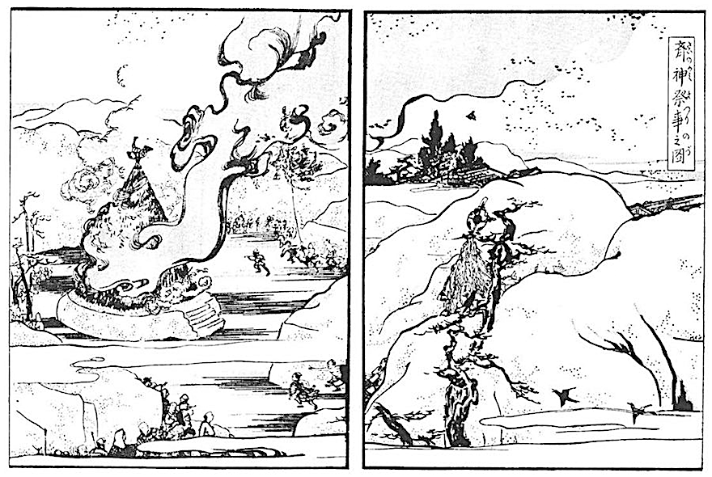
百樹曰、
余京水をしたがへて越後に遊びし時、此
小千谷の人
岩淵氏
（牧之老人の親族なり）の家に
をとゞめたる事十四日、
（八月なり）あるじの
嗣子廿四五
許、
号を
岩居といふ、
書をよくす。
余に
遇せしこと
甚篤。
小千谷は
北越の
一市会、
商家鱗次として百物
備ざることなし。
海を
去る事
僅に七里ゆゑに
魚類に
乏しからず。
余塩沢にありしは四十余日、其地海に遠くして夏は海魚に
乏しく、江戸者の口に
魚肉の
上らざりし事四十余日、
小千谷にいたりてはじめて
生鯛を
喰せしに
美味なりし事いふべからず。又
の
時節にて、
小千谷の
前川は海に
朝するの大河なれば今
捕しをすぐに
庖丁す。
味はひ江戸にまされり。一日
をてんぷらといふ物にしていだせり。
余岩居にむかひ、これは此地にては名を
何とよぶぞと
問ひしに、岩居これはテンプラといふなり、我としごろ此物の
名義暁しがたく、
古老にたづねたれどもしる人さらになし、先生の
説をきかんといふ。
余答てまづ
食終てテンプラの
来由を
語べしといひつゝ
のてんぷらを
飽までに
喰せり。
岩居に
語て
曰、今をさる事五十余年
前天明の
初年大阪にて
家僕四五人もつかふほどの次男
年廿七八ばかり利助といふもの、その身よりとしの二ツもうへの
哥妓をつれて
出奔し、江戸に下り余が家の
（京橋南街第一※［＃「衙」の「吾」に代えて「共」、U+8856、246-12］）対ひの
裏屋に住しに、
一日事の
序によりて余が家に来りしより常に
出入して
家僕のやうに
使などさせけるに、
花柳に身を
果したるものゆゑはなしもおもしろく才もありてよく用を
弁ずるゆゑ、をしき人に
銭がなしとて
亡兄もたはむれいはれき。ある日利助いふやう、江戸には
胡麻揚の
辻売多し、大阪にてはつけあげといふ
魚肉のつけあげはうまきものなり、江戸にはいまだ魚のつけあげを夜みせにうる人なし、われこれをうらんとおもふはいかん。
亡兄（京伝）いはく、それはよきおもひつきなりまづこゝろむべしとて
俄に
調じさせしに、いかにも
美味なり。利助いはく、これを夜みせの辻にうらんにその
行灯に魚のごまあげとしるさんもなにとやらまはりどほし、なにとか名をつけて玉はれと
乞ひければ、
亡兄しばらくしあんして筆をとり
天麩羅とかきてみせければ、利助
不審の
をなし
天麩羅とはいかなる
所謂にかといふ。亡兄うちゑみつゝ
足下は今
天竺浪人なり、ぶらりと江戸へきたりて
売創る物ゆゑに天ふらなり、
是に
麩羅といふ字を
下したるは
麩は小麦の粉にてつくる、
羅はうすものとよむ字なり。小麦の粉のうすものをかけたといふ
なりと
戯言云れければ、利助も
洒落たる男ゆゑ、天竺浪人のぶらつきゆゑ天ふらはおもしろしと大によろこび、やがて此
店をいたす時あんどんを持きたりて字をこひしゆゑ、
余がをさなき時天麩羅と
大書して与へしに此てんぷら一ツ四銭にて毎夜うりきるゝ程なり。さて一月もたゝざるうちに
近辺所々にてんぷらの夜みせいで、今は天麩羅の名油のごとく世上に
伝染わたり、此
小千谷までもてんぷらの名をよぶ事一奇事といふべし。されども京伝翁が名づけ親にて利助が売はじめたりとはいかなる
碩学鴻儒の大先生もしるべからず。てんぷらの
講釈するは天下に我一人なりとたはむれければ、
岩居も
手をうちて笑ひけり。
○先年此てんぷらの
話を友人
静廬翁に語りしに
（翁は和漢の博達時鳴の聞人なり）翁曰、
事物紺珠（明人黄一正作廿四巻）夷食の部にてんぷらに似たる名ありきといはれしゆゑ、其
書を
借りえてよみしに、○
塔不剌とありて
注に○
葱○
椒○油○
醤を
熬、
後より
鴨或は
○
鵞をいれ、
慢火にて
養熟とあり。
蟹をあぶらげにするも見えたり。
○さて天麩羅の
播布［＃「播布」の左に「ヒロマル」の注記］に
類せる事あり、
因に記す。○
橘菴漫筆に
（享和元年京の田仲宣作）「京師下河原に佐野屋嘉兵衛といふもの、享保年中長崎より上京して初て大碗十二の
食卓を料理して弘めける。是京師
浪花に
食卓料理の初とかや。嘉兵衛娘はんといへるもの
老婆となりて近頃まで存命せり、則今の佐野屋祖なり。大坂にてかれこれ食卓料理あまた弘りたれど
野堂町の
貴徳斎ほど久しくつゞきたるはなし」
岩居がてんぷらをふるまひたる夜その友
蓉岳来り、
（桜屋といふ菓子や）余が酒をこのまざるを聞て
家製なりとて
煉羊羹を
恵ぬ、
味ひ江戸に同じ。
余越後にねりやうかんを賞味して大に
感嘆し、岩居に
謂曰、此ねりやうかんも近年のものなり、常のやうかんにくらぶれば
味ひまされり。
吾がをさなきころは常のやうかんすらいやしきものゝ口には入らざりしに、江戸をさる事遠き此地にも
出来逢のねりやうかんあるは
実に大平の
徳化なりといひしに、
蓉岳も書画をよくし
文事もありて
好事ものなればこれをきゝてひざをすゝめ、菓子は吾が
家産なり、ねりやうかんを近来のものといふ
由来を
示し玉へといふ。
余かたりていはく、○寛政のはじめ江戸日本橋通一町目よこ町
字を
式部小路といふ所に喜太郎とて夫婦に
丁稚ひとりをつかひ菓子屋とは見えぬ
※子造［＃「竹かんむり／隔」、U+25D29、249-2］にかんばんもかけず、此喜太郎いぜんは
貴重の御菓子を
調進する家の菓子
杜氏なるよし。奉公をやめてこゝに住し、
極製の菓子ばかりをせいして茶人又は富家のみへあきなひけり。さて此者が工風とてはじめて
煉羊羹と名づけてうりけるに
（羊羹本字は羊肝なる事芸苑日鈔にいへり）喜太郎がねりやうかんとて人々めづらしがりてもてはやしぬ。しかれども一人一手にてせいするゆゑ、けふはうりきらしたりとてつかひの重箱
空しくかへる事度々なり、これ
余が
目前したる所なり。かくて一二年の間に菓子や二軒にて喜太郎をまねてねりやうかんをせいし、それもめづらしかりしに今は江戸の菓子やはさらなり、迫々弘り此
小千谷にもあれば此国に
市会をなす所にはかならずあるべく又諸国にもあるべしといひければ、
蓉岳わらつて
小倉羹もあり八重なりかんもあり、あすはまゐらすべしといへり。これらの事雪譜の名には
似気なき
弁なれど本文
小千谷のはなしにおもひいだしたれば人の
話柄に
記せり。なほ
近古食類の
起原さま／″＼あれど
余が
食物沿革考［＃「沿革考」の左に「ウツリカハリ」の注記］に上古より
挙てしるしたればこゝにはもらせり。
初編にもしるしたるごとく、我国の
獣冬にいたれば山を
踰て雪
浅国へさる、これ雪ふかくして
食にとぼしきゆゑなり。春にいたればもとの
棲へかへる。されども雪いまだきえざるゆゑ
食にたらず、をりふしは夜中
人家にちかより犬などとり、又人にかゝる事もあり、これ
山村の事なり。里には人多きゆゑおそれてきたらざるにや。雪中に
穴居するは
熊のみなり。熊は手に
山蟻をすりつけ、これをなめて
穴居の
食とするよしいひつたふ。
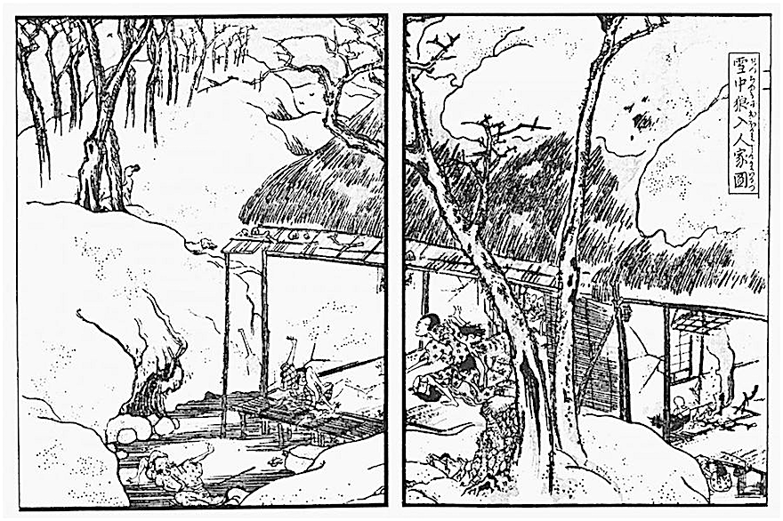
○こゝに
我郡中の
山村に
（不祥のことなれば地名人名をはぶく）まづしき
農夫ありけり、老母と妻と十三の女子七ツの男子あり。此農夫
性質篤実にしてよく母につかふ。ひとゝせ二月のはじめ、用ありて二里ばかりの所へいたらんとす、みな
山道なり。母いはく、山なかなれば用心なり、
筒をもてといふ、
実にもとて
鉄炮をもちゆきけり。これは
農業のかたはら
猟をもなすゆゑに
国許の
筒なり。かくてはからず時をうつし日も
暮かゝる
皈りみち、やがて吾が村へ入らんとする雪の山
蔭に
狼物を
喰ふを見つけ、
矢頃にねらひより
火蓋をきりしにあやまたずうちおとしぬ。ちかよりみればくらひゐたるは人の
足なり。農夫大におどろき、さては村ちかくきつるならんと
我家をきづかひ
狼はそのまゝにしてはせかへりしに、家のまへの雪の白きに
血のくれなゐをそめけり。みるよります／＼おどろきはせいりければ狼二疋
逃さりけり、あたりをみれば母はゐろりのまへにこゝかしこくひちらされ、
片足はくひとられてしゝゐたり。
妻は
※［＃「窗−穴かんむり」、U+56F1、252-14］のもとに
喰伏られあけにそみ、そのかたはらにはちゞみの糸などふみちらしたるさまなり。七ツの男の子は
庭にありてかばね
半ば
喰れたり。
妻はすこしいきありて
夫をみるよりおきあがらんとしてちからおよばず、
狼がといひしばかりにてたふれしゝけり。
農夫はゆめともうつゝともわきまへず
鉄炮もちて立あがりしが、さるにても
娘はとてなきごゑによびければ、
床の下よりはひいで親にすがりつきこゑをあげてなく、おやもむすめをいだきてなきけり。
山家は
住居もこゝかしこはなれあるものゆゑ、これらの事をしるものもなかりけり。
農夫は時の
間に六十の母、三十の妻、七ツの子を狼の
牙にころされ、
歯がみをなして口をしがり、親子ふたり、くりこといひつゝ声をあげてなきゐたり。村のものやう／＼にきゝつけきたり此
体をみておどろきさけびければ、おひ／＼あつまりきたり娘にやうすをたづねければ、
※［＃「窗−穴かんむり」、U+56F1、253-8］をやぶりて狼三疋はせいりしが、わしは
竈に火をたきてゐたりしゆゑすぐに
床の下へにげ入り、ばゞさまと母さまと
おとがなくこゑをきゝて
念仏申てゐたりといふ。かくて此ありさまをいふべき所へつげしらせ、次の日の夕ぐれ
棺一ツに
妻と
童ををさめ、母の
棺と二ツ
野辺おくりをなしけるに
涙そゝがざるものはなかりけるとぞ。おもふにはゝが
筒をもてといひしゆゑ、母の
片足を雪の山
蔭にくらひゐたる
狼をうちおとして母の
敵はとりたれど、二疋をもらししはいかに
口惜かりけん。これよりのち此
農夫家を
棄、
娘をつれて
順礼にいでけり。ちかき事なれば人のよくしれるはなしなり。
百樹曰、日本の狼は
幻化事をきかず、
唐土の狼はばけること老狐にことならず。
宋人李 等
等が太平広記
畜獣の部に
（四百四十二巻）狼美人に幻化
［＃「幻化」の左に「バケ」の注記］して
少年と通じ、あるひは人の母にばけて年七十になりてはじめてばけをあらはして
逃さり、又は人の父を
喰殺してその父にばけて年を
歴たるに、一日その子山に入りて
桑を
採るに、
狼きたりて人の如く立
其裾を
銜たるゆゑ
斧にて狼の
額を
斫、狼にげ
去りしゆゑ家にかへりしに、父の
額に
傷の
痕あるを
視て狼なることをさとり、これを
殺すに
果して
老狼なり。親をころしたるゆゑ
自県にいたりて事の
由をつげたる事など○
広異記○
宣室志を引てしるせり。
悍悪の事に狼の字をいふもの○
残忍なるを
豺狼の心といひ○声のおそろしきを
狼声といひ○
毒の
甚しきを
狼毒といひ○事の
猥を
狼々○
反相［＃「反相」の左に「ムホン」の注記］ある人を
狼顧○
義无を中山狼○
恣に
食を
狼
○
病烈を
狼疾といひ○
狼藉○
狼戻○
狼狽など、皆
彼に
譬て是をいふなり。
（文海披沙）されば
獣中最可悪は
狼なり。
余竊に
以為、狼は狼にして狼なれども、人にして狼なるはよく狼をかくすゆゑ、狼なるをみせず。これが
為に
狼毒をうくる人あり。人の狼なるは狼の狼なるよりも
可惧可悪。
篤実を
外面とし、
奸慾を
内心とするを
狼者といひ、
娵を
悍戻を
狼老婆といふ。
巧に
狼心をかくすとも
識者の
心眼は
明鏡なり。おほかみ／＼
惧ざらんや
恥ざらんや。
北越雪譜中巻 終
［＃改丁］
越後塩沢 鈴木牧之 編選
江戸 京山人百樹 増修
農家市中正月の
行事に
鳥追といふ事あり。此事諸国にもあれば、其なす処其国によりてさま／″＼なる事は
諸書に
散見せり。江戸の
鳥追といふは
非人の
婦女音曲するを女太夫とて
木綿の
衣服をうつくしく
着なし、
顔を
粧ひ、
編笠をかむり、
三弦に
胡弓などをあはせ、
賀唱をおもしろくうたひ、
門々に立て銭を
乞ふ。此事元日よりはじめ、松の内をかぎりとす、松すぎてもありく所もありとぞ。我越後には小正月の
（小正月とは正月十五日以下をいふ）はじめ
鳥追櫓とて
去年より
取除おきたる山なす雪の上に、雪を以て高さ八九尺あるひは一丈余にも、高さに
応じて
末を
広く雪にて
櫓を
築立、これに
登るべき
階をも雪にて作り、
頂を
平坦になし松竹を四
隅に立、しめを
張わたす
（広さは心にまかす）内には居るべきやうにむしろをしきならべ、
小童等こゝにありて物を
喰ひなどして
遊び、
鳥追哥をうたふ。その一ツに「あの
とりや、
どこから
おつて
きた、
しなぬの
くにからおつてきた。なにを
もつておつてきた、
しばを
ぬくべておつてきた、
しばの
とりも
かばのとりも、
たちやがれほい／＼引」
おらが
うらの
さなへだのとりは、おつても／＼
すゞめたちやがれほい／＼引」あるひはかの
掘揚（雪をすてゝ山をなす所）の上に雪を以て
四方なる
堂を作りたて、雪にて物をおくべき
棚をもつくり、むしろをしきつらね、なべ・やくわん・ぜん・わん
抔此雪の棚におき、物を
煮焼し、
濁酒などのみ、
小童大勢雪の堂に
（いきんだうと云）遊び、
同音に鳥追哥をうたひ、
終日こゝにゆきゝして遊びくらす。これ
暖国にはなき正月あそびなり。此
鳥追櫓宿内にいくつとなく
作り
党をなしてあそぶ。
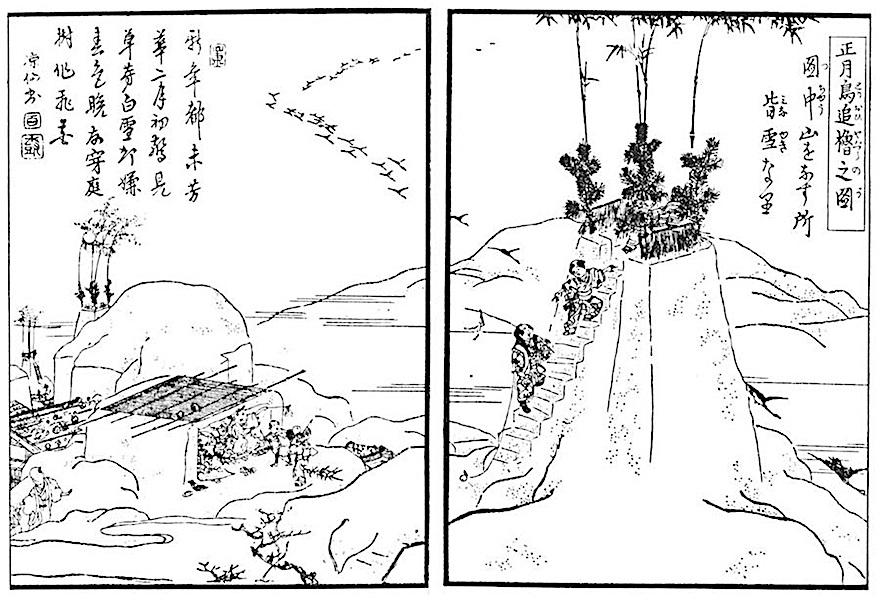
前にもしば／＼いへるごとく、北国中にして越後は第一の雪国なり。その中にも
魚沼・
古志・
頸城の
三郡を大雪とす。毎年一丈以上の雪中に冬をなせども
寒気は江戸にさまでかはる
なしと、江戸に寒中せし人いへり。
五雑組にいへる霜は
露のむすぶ所にして
陰なり、雪は雲のなす所にして
陽なりとはむべなり。かゝる雪中なれども夏の
儲に
蒔たる
野菜のるゐも雪の下に
萌いでゝ、その用をなす
おそきとはやきのたがひはあれども
暖国にかはる
なし。その
遅きとは三月にはじめて梅の花を見、五月の
瓜・
茄子を
初物とす。山中にいたりては山桜のさかり四月のすゑ五月にいたる所もあるなり。
此書の前編上の
巻雪中の火といふ
条に、六日町の
（魚沼郡）西の山手に
地中より火の
燃る事をしるせしが、地獄谷の火の
をもらせしゆゑこゝにしるす。○およそ
我越後に名高く
七不思議にかぞへいふ
蒲原郡如法寺村百姓
荘右エ門
（七兵衛孫六が家にも地火あり）が家にある地中より
燃る火は、
普く人の知る所なれども、其火よりも
盛大なるは魚沼郡のうち、かの
小千谷の
在地獄谷の火なり。
唐土に
是を
火井といふ。
近来此地獄谷に家を作り、
地火を以て
湯を
※［＃「火＋覃」、U+71C2、259-8］し、
客を
待て
浴さしむ、夏秋のはじめまでは
遊客多し。此火井他国にはきかず、たゞ越後に多し。先年蒲原郡の内
或家にて井を
掘しに、其夜
医師来りて井を掘し
を
聞、家に
皈る時
挑灯を井の中へ入れそのあかしにて井を見て立さりしに、井中より
俄に火をいだし
火勢さかんに
燃あがりければ
近隣のものども
火事なりとしてはせつけ、井中より火のもゆるを見て此井を掘しゆゑ此火ありとて村のものども口々に主人を
罵り
恨みければ、主人も此火をおそれて
埋けるとぞ。此地火一に
陰火といふ。かの
如法寺村の陰火も
微風の
気いづるに
発燭の火をかざせば
風気手に
応じて
燃る、
陽火を
得ざれば
燃ず。
寛文のむかし
荘右エ門が
（如法寺村）庭にて

をつかひたる時より
燃はじめしとぞ。前にいふ井中の火も
医者が
挑灯を井の中へさげしゆゑその陽火にてもえいだしたるなるべし。
●さて又
頸城郡の
海辺に
能生宿といふは
北陸道の
官路なり、此宿より山手に入る
二里ばかりに
間瀬口といふ村あり、こゝの
農家に地火をいだす
如法寺村の地火に同じとぞ。此ほとり用水に
乏しき所にては、
旱のをりは山に
就て井を
横に
掘て水を
得る
あり、ある時井を掘て横にいたりし時
穴の
闇きをてらすために
炬を用ひけるに、
陽火を
得て
陰火忽ち
然あがり、人
是が
為に
焼死しけるとぞ。
是等の
どもをおもひはかるに、越後のうちには地火をいだす
火脉の地
多く、いまだ陽火を
得ずして
発せざるも多かるべし。
百樹曰、
余小千谷にありし時
岩居余に
地獄谷の火を見せんとて、
社友五人を
伴ひ
用意の
酒食を
奚奴二人に
荷しめ、
余与京水と
同行十人小千谷をはなれて西の方●
新保村●
薮川新田などいふ村々を
歴て
一宮といふ村にいたる、
山間の
篆畦曲節て
茲に
抵る
行程一里半
可なり。
是日はことに
快晴して
村落の
秋景百逞目を
奪ふ。さて
平山一ツを
踰て
坡あり、
則地獄谷へいたるの
径なり。
坡の上より目を
下せば一ツの
茅屋あり、
是本文にいへる
混堂なり。人々
坡の
半にいたりし時、
茅屋の
楼上に四五人の
美婦あらはれ、おの／＼
檻によりて、
遙にこの人々を
指もあり、あるひは
笑ひ、あるひは名をよび、あるひは手をうちたゝき、あるひは手をあげてまねく。
四面皆山にて
老樹欝然として
翳塞の
中に
個美人を見ること
愕然し、是
狸にあらずんばかならず狐ならんといひければ、
岩居友だちと
相顧、
手を
拍て
笑ふ。これは小千谷の下た町といふ所の
酒楼に
居る
酌採の
哥妓どもなり、
岩居朋友と
計りて
竊に
此に
招おきて
余に
興させん
為とぞ。
渠は狐にあらずして
岩居に
魅されたるなり。
已に地獄谷にくだり
皆楼にのぼれり。岩居は
余と京水とを
伴ひてかの火を
視せしむ。
●そも／＼
茲谷は山桜多かりしゆゑ桜谷とよびけるを、地火あるをもつて四方四五十
歩（六尺を歩といふ）をひらきて
平坦の地となし、地火を
借りて
浴室となし、人の遊ぶ所とせしとぞ。桜谷とよびたる処地火のために
地獄とよばるゝこと、花はさぞかし
薀憤かるべし。
●さてその火を
視るに、一ツの浅き井を作りたるその
井中より火の
燃る事常の湯屋の火よりも
盛なり。上に
釜あり一間四方の
湯槽あり、
細き
筧ありて
后の山の清水を引き
湯槽におとす。湯は
槽の四方に
溢れおつ、こゝをもつて此
湯温からず
熱からず、天
工の
地火尽る時なければ
人作の湯も
尽る
期なし、見るにも
清潔なる事いふべからず。此
混堂に
続きて
厨処あり、
にも穴ありて地火を引て物を
烹薪に同じ。次に中の
間あり、
床の下より
竹
を出し、口には一寸ばかり
銅を
鉗て火を
出さしむ。上より
自在をさげ、此火に酒の
燗をなしあるひは
茶を
煎、夜は
燈火とす。さて
熟此火を視るに、
をはなるゝこと一寸ばかりの上に
燃る、扇にあふげば
陽火のごとくに
消る。
の口に手をあてゝこゝろむるに少しく風をうくるのみ。
発燭の火を
翳せば
忽然としてもゆることはじめの如し。
主の
翁が曰、この火夜は
昼よりも
燥烈く、人の
顔青くみゆるといへり。翁が
妻水のうちよりもゆる火を見せ申さんとて、
混堂のうしろに
僅の山田ある所にいたり、田の水の中に少し
湧ところあるにつけぎの火をかざししに、水中の火
蝋燭のもゆるが如し。
老婆がいはく、此火のやうにもゆる処ほかにもあり、夜にいればこと／″＼く火をもやすゆゑ
獣きたらずといへり。
余が江戸の目には
視る所こと／″＼く
奇妙なり。
唐土には此火を
火井とて、
博物志或は
瑯※代酔［＃「王＋耶」、U+7458、262-7］に見えたる
雲台山の火井も此地獄谷の火のごとくなれども、事の
洪大なるは此谷の火に
勝らず。
唐土と日本とをおつからめて火井の
最第一といふべし、是を見たる事越遊の一
奇観なり。唐土に火井の
在る所北の
蜀地に
属す、日の本の火井も北の越後に在り、
自然の
地勢によるやらん。
●さて一人の
哥妓梯上にいでゝしきりに
岩居を
呼ぶ、よばれて
楼にのぼれり。
余は京水とゝもに此
湯に
浴す、
楼上には
早く
三弦をひゞかせり。
浴しをはりて楼にのぼれば、
既に
杯盤狼藉たり。
嬋娟哥妓袖をつらね、
素手弄糸朱唇謡曲迦陵頻伽の
声、
外面如※［＃「くさかんむり／廾」、U+26B07、262-13］の
色興を
添れば、
地獄谷遽然極楽世界となれり。此
妓どもを
養ふ
主人もこゝに
来り
居て、
従る料理人に
具したる
魚菜を
調味させてさらに
宴を
開く。
是主人俗中に
雅を
挾で
恒に
文人を
推慕ゆゑに、
是日もこゝに
来りて
余に
面識するを
岩居に
約せしとぞ。此人
※［＃「齒＋巴」、U+4D95、263-1］なるゆゑ
自ら
双坡楼と
家号す、その
滑稽此一をもつて知るべし。
飄逸洒落にしてよく人に
愛せらる、家の前後に
坡ありとぞ、
双坡の
字下し
得て妙なり。
双坡楼扇をいだして
余に
句を
乞ふ、妓も
持たる扇を
出す。京水画をなし、余
即興を
書す。これを見て
岩居をはじめおの／＼
壁に
句を
題し、
更に
風雅の
興をもなしけり。
●かくてやゝ日も
傾きければ
帰路を
促しけるに、
哥妓どもは
草鞋にて
来りしとてそれはわしがのなり、これはあれはとはきすてたるを
争ふてはきいづる、みな
酔興なれば
噪閙して
途を
行く。
細流ある所にいたれば
紅唇粉面の
哥妓紅※［＃「ころもへん＋昆」、U+88E9、263-7］を

て
渉る、
花姿柳腰の
美人等わらじをはいて水をわたるなど
余が江戸の目には
最珍らしく
興あり。
酔客ぢんくをうたへば
酔妓歩々躍る。
古縄を
蛇とし
駭せば、おどされたる
妓愕して
片足泥田へふみいれしを
衆人 然
然す。此
途は
凡て
農業の
通路なれば
憇ふべき
茶店もなく、
半途に
至りて古き
社に入りてやすらふ。
一妓社の
后に入りて立かへり石の
水盤の
涸たる水を
僅に
掬、
手を
洗ひしは
私に
去りしならん。そのまゝ
樹下に立せ玉ふ
石地蔵※［＃「くさかんむり／廾」、U+26B07、263-12］の
前に
並びたちながら、
懐中より
鏡を
出して
鉛粉のところはげたるをつくろひ、
唇紅などさして
粧をなす、これらの
粧具をかりに
石仏の
頭に
置く。
外面女※［＃「くさかんむり／廾」、U+26B07、263-13］内心如夜叉のいましめもあれば、
※［＃「くさかんむり／廾」、U+26B07、263-14］はなにとやおもひ玉ふらんともつたいなし。
日も
已に
下
なればおの／＼あしをすゝめて
小千谷へかへりき。
（此紀行別に一本あり、吾が北越旅談にをさむ。）
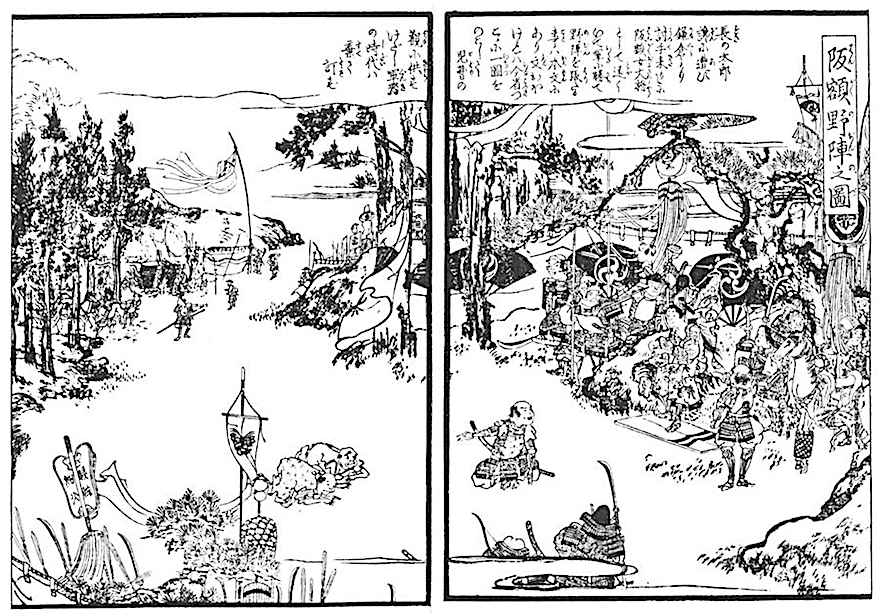
板額女は
加治明神山の城主
長太郎
祐森が
室、古志郡の
産なり。又三歳の小児も知れる
酒顛童子は蒲原郡
沙子塚村の
産、今猶
屋敷跡あり。
始は
雲上山国上寺の
行法印の
弟子なり。
玄翁和尚は
伊夜彦山の
麓箭矧村の
産なり。
近世にいたりて
徳僧高儒和哥書画の人なきにしもあらざれども、遠く四方に
雷名せるはすくなし。
（画人呉俊明のち江戸にいでしゆゑ名をなせり）近年
相撲に
越海・
鷲ヶ浜は
新潟の
産、
九紋竜は高田今町の産、
関戸は
次第浜の
産也。
常人にて
力士の
聞えありしは
頸城郡の中野善右エ門、立石村の長兵衛、蒲原郡三条の三五右エ門、
是等無双の大力にて人の知る所なり。又
鎧潟に近き
横戸村の長徳寺、
谷根村の行光寺も
怪力のきこえたかし。此人々はいづれも
独して
鐘を
軽く
掛はづしするほどの力は有し人々なり。又孝子にはむかしは村上小次郎、
新発田の
菊女、
頸城郡の
僧知良、近くは三嶋郡村田村の
百合女
（百姓伊兵衛がむすめ）新発田荒川村門左エ門
（百姓丑之介がせがれ）塚原の
豆腐売春松
（鎌介がせがれ）蒲原郡
釈迦塚村百姓新六、いづれも
孝子の名一国に高かりき。今
存在するもありとかや。
百樹曰、余越後にいたらば板額あるひは酒顛童子の旧跡をもたづね、新潟をも一覧なし、名の聞えたる神仏をもをがみたてまつり、寺泊にのこる 順徳帝の鳳跡、義経、夢※国師［＃「窗−穴かんむり」、U+56F1、266-14］、法然上人、日蓮上人、為兼卿、遊女初君等の古跡もたづねばやとおもひしに、越後に入りてのち気運順を失ひ、年稍倹して穀の価日々に躍、人気穏ならず。心帰家にありて風雅をうしなひ、古跡をも空しく過り、惟平々たる旅人となりて、きゝおよびたる文雅の人をも剌問ざりしは今に遺憾なり。嗟乎年の倹せしをいかんせん。
蒲原郡村松より東一里
来迎村に寺あり、
永谷寺といふ
曹洞宗なり。此寺の近くに川あり、
早出川といふ。寺より八町ばかり下に
観音堂あり、その下を流るゝ所を
東光が
淵といふ。永谷寺へ
入院の
住職あれば此
淵へ
血脉を
投げ入るゝ事
先例なり。さて此永谷寺の住職
遷化の
前年、此
淵より
墓の石になるべき
円き
自然石を一ツ
岸に
出す、
是を
無縫塔と名づけつたふ。此石
出ればその
翌年には
必ず
住職病死する事むかしより今にいたりて一度も
違ひたる事なし。此
墓石大小によりて住職の心に
応ぜず
淵へかへせば、その
夜淵
逆浪して住職のこのむ石を淵に出したる事度々あり。先年
凡僧こゝに住職し此石を見て
死を
惧れ
出奔せしに
翌年
他国にありて病死せしとぞ。おもふに此淵に
ありて
天然の
死を
示すなるべし。
友人北洋主人
（蒲原郡見附の旧家、文をこのみ書をよくす）件の寺を
覧たる
話に、本堂
間口十間、右に
庫裏、左に八
間に五間の
禅堂あり、本堂にいたる
阪の左りに
鐘楼あり、禅堂のうしろに
蓮池あり。上に坂あり、登りて
住職の墓所あり。かの
淵より
出したる
円石を
人作の石の
台の
脚あるにのせて
墓とす。
中央なるを
開山とし、左右に
次第して廿三
基あり。大なるは
径り一尺二三寸ばかり、八九寸六七寸なるもあり、大小は和尚の徳に
応ずといひつたふとぞ。台の高さはいづれも一尺ばかりなりと語られき。かの
淵に
ありといふは、むかし永光寺のほとりに
貴人何某住玉ひしに、その
内室色情の
妬にて
夫をうらみ、東光が淵に身を
沈め、
冤魂悪竜となりて人をなやまししを、永光寺の開山
（名をきゝもらせり）血脉をかの
淵にしづめて
化度し玉ひしゆゑ悪竜
得脱なし、その礼とてかの
墓石を
淵にいだして
死期を
示す。
是以今にいたりても
入院の時は淵に血脉を
沈むと
寺説につたふとぞ。
○さてまた我が
隣国信濃にも
無縫塔の事あり。近江の石亭が
雲根志にいはく
（前編異之部）信濃国高井郡
渋湯村横井温泉寺の前に星河とて
幅三町ばかりの大河あり、温泉寺の住僧
遷化の前年に、此河中へ
何方よりともなく、高さ二尺ばかりなる
自然石の
方にしてうつくしき石塔一ツ流れきたる、
実に
彫刻せるごとくにて
天然の物なり。此石
出ると
土民ども温泉寺へしらせる事なり、きはめて
翌年住僧
遷化なり、則しるしに此石を立る。九代以前より始りしが代々九代の石塔、同石同様にて少しも
違はず
並びあり。
或年の住僧此塔の出たる時天を拝していのる、我
法華千部
読経の
願あり、今一年にして
満り、何とぞ命を今一年
延し玉へと念じて、かの塔を川中の
淵に
投こみたり。何事もなく一年すぎて千部
読経のすみし月に
件の石又川中にあらはるゝ、其翌年はたして
遷化なりと。その次の住僧塔のいでたる時何のねがひもなく
淵へなげこみたり、幾度なげしづめても其夜そのよにいでたり、翌年病死ありしとぞ。此辺にて是を
無帽塔と名づく。
（以上一条の全文）越後に永光寺、信濃に温泉寺、事の
相似たる一
奇怪といふべし。
○百樹曰、牧之老人が此草稿を視て無縫塔の縫の字義通じがたく誤字にやとて郵示して問ひければ、無縫塔と書伝たるよしいひこしぬ。雲根志には無帽塔とあり、無帽の字も又通じがたし。おそらくは無望塔にやあらん。住僧の心には死がいやさに無望塔なるべし。こゝに無稽の一笑を記して博識の確拠を竢つ。
魚沼郡|
雲洞村雲洞庵は越後国四大寺の一なり。四大寺とは滝谷の
慈光寺、
（村松にあり）村上の
耕雲寺、
伊弥彦の
指月寺、雲洞村の雲洞庵なり。十三世
通天和尚は、
霜台君の
（謙信の事）親藉にて、
高徳の聞えは今も
口碑にのこれり。
景勝君も此寺に
物学び玉ひしとぞ。一国の大寺なれば
古文書宝物等も多し、その中に
火車落の
袈裟といふあり、
香染の
麻と見ゆるに
血の
痕のこれり。是を火車落とて宝物とする
由来は、むかし天正の頃雲洞庵十世北高和尚といひしは
学徳全備の尊者にておはせり。其頃此寺にちかき三郎丸村の
農家に
死亡のものありしに、時しも冬の雪ふりつゞき
雪吹もやまざりければ、三四日は
晴をまちて
葬式をのばしけるに
晴ざりければ、
強ていとなみをなし、
旦那寺なれば北高和尚をむかへて
棺をいだし、
親族はさら也人々
蓑笠に雪をしのぎて
送りゆく。その
雪途もやゝ半にいたりし時
猛風俄におこり、
黒雲空に
布満て
闇夜のごとく、いづくともなく火の玉飛来り
棺の上に
覆かゝりし。火の中に尾はふたまたなる
稀有の大
猫牙をならし
鼻をふき
棺を目がけてとらんとす。人々これを見て棺を
捨、こけつまろびつ
逃まどふ。北高和尚はすこしも
惧るゝいろなく口に
咒文を
唱大声一喝し、
鉄如意を
挙て飛つく大猫の
頭をうち玉ひしに、かしらや
破れけん血ほどはしりて
衣をけがし、
妖怪は
立地に
逃去りければ、風もやみ雪もはれて事なく葬式をいとなみけりと寺の旧記にのこれり。此時めしたるを火車おとしの
法衣とて今につたふ。

百樹曰、余越遊して塩沢に在し時、牧之老人に伴れて雲洞庵にいたり、（塩沢より一里ばかり）庵主にも対話なし、かの火車おとしの袈裟といふ物その外の宝物古文書の類をも一覧せり。いかにも大寺にて祈祷の二字を大書したる竪額は 順徳院の震筆なりとぞ。（佐渡へ遷幸のときの震筆なるべし）門前に直江山城守の制札あり、放火私伐を禁ずるの文なり。庭中池のほとりに智勇の良将宇佐美駿河守刃死の古墳在りしを、先年牧之老人施主として新に墓碑を建たり。不朽の善行といふべし。（本文に火車といふは所謂夜叉なるべし、夜叉の怪は唐土の書にもあまた散見せり。）
余六十一
還暦の時年賀の
書画を
集む。
吾国はさらなり、諸国の
文人三
都の
名家妓女俳優［＃「俳優」の左に「ヤクシヤ」の注記］来舶清人の一
絶をも
得たり。みな牧之に
贈といふ
をしるしたるなり、人より人にもとめて千余幅におよべり、
帖となして蔵す。ひとゝせ是を風入れするため
舗につゞきたる
坐しきの
障子をひらき、年賀の帖を
披き
並べおきたる所へ
友人来り、年賀の
作意書画の
評などかたりゐたるをりしも、
順礼の
夫婦軒下に
（我が里言には廊下といふ）立けり。吾が家常に
草鞋をつくらせおきてかゝる
者に
施すゆゑ、それをも銭をもあたへしに、此順礼の
翁立さらでとりみだしたる年賀の帖を心あるさまに見いれたるが
云やう、およばずながらわれらも順礼の腰をれを申さん、たんざく玉はれといふ。
乞食のやうなるすがたには
似気なきことばのおぼつかなしと思ひながら、
短尺すゞりばこいだしければ、
三途川わたしは先へ百年も君がむかひをとゞめ申さん 五放舎
としるしたるふでのはこびも
拙からず。年賀にはひとふしかはりたる
趣向といひ、
順礼に五放舎と
戯れたる名もおもしろく、友人と
倶におどろき
感じ、
宿を
施行せん、ゆる／＼ものがたりせんなど、友人もさま／″＼にすゝめたれど、
杖をとゞめずして立さりけり。国は西国とばかりいへり、いかなるものにてやありけん。
小千谷より一里あまりの
山手に
逃入村といふあり、
（にげ入りを里俗にごろとよぶ）此村に大
塚小塚とよびて大小二ツの
古墳双びあり。所の
伝へに大なるを
時平の塚とし、小なるを時平の
夫人の塚といふ。時平大臣夫婦の塚此地に
在べき
由縁なきことは論におよばざる
俗説なり。しかれども
爰に一ツの不思議あり、そのふしぎをおもへば、むかし時平にゆかりの人越後に
流されなどして此地に
終りたるにやあらん。その不思議といふは、昔より此逃入村の人
手習をすれば天満宮の
祟ありとて一村の人皆
無筆なり。
他郷に
身を
寄て手習すれば
祟なし。しかれども村にかへれば日を
追て
字を
忘れ、
終には無筆となる。このゆゑに
文字の用ある時は他の村の者にたのみて
書用を
弁ず。又此村の子どもなど江戸
土産とて錦絵をもらひたる中に、天満宮の絵あればかならず神の
祟りの
兆ありし事度々なりしとぞ。さればかの大塚小塚を時平大臣夫婦の
古墳なりと古くいひつたふるも何か
由縁ある事なるべし。
菅家の
筑紫にて
薨じ玉ひたるは
延喜三年二月廿五日なり、今を去る事
（百樹曰、こゝに今といひしは牧之老人が此したがきしたる文政三年をいふなり）九百十五年前なり。今にいたりても
神の明々たる事おそるべし
尊むべし。
さて又これにるゐする事あり、
南
が
東遊記を見るに、南
東遊して
津軽に居たる時、六七日も風雨つゞきしうち、所の役人丹後の人や
居ると
旅店毎にきびしくたづねしゆゑ、南
あるじにそのゆゑを問ひければ、あるじいふやう、当国
岩城は人のしりたる安寿姫対王丸の生国なり、さればむかしの人此御ふたりを岩城山の神にまつりて
社今に在り。此兄弟丹後にさまよひ三庄太夫が為に
悃苦たるゆゑに丹後の人をいみきらひ、丹後の人此国に入ればかならず大風雨有て日をわたる事むかしよりの事なり。丹後の人此国の
堺をいづれば風雨たちまちやむゆゑに、丹後の人や居ると
捜すなりといへりと。
南子此事に
遇たりとて記せり。右にいふ兄弟の父
岩城判官正氏在京の時
讒にあひて家の亡びたるは永保年中の事なり、今をさる事およそ七百五十余年也。兄弟の
怨魂今に
消滅せざる事
人知を以論ずべからず。
（百樹曰、安寿は対王が妻なるよし塩尻廿二巻にいへり、猶考）西遊記
（前編）景清が
塚は日向にあり、世の知る処なり。其母の塚は肥後国
求麻の人吉の城下より五六里ほど東、
切幡村にまつる。此所に景清が娘の
墳もあり、一村の氏神にまつる、此村かならず
盲人を
忌む、盲人他処より入れば必
祟あり、景清
後に盲人になりしゆゑ、母の
盲人を嫌ふと所の人のいへりと
記せり。これらの
逃入村の
不思議に類せり。しかれども
件の二ツは
社ありて丹後の人を
忌、
墓ありて
盲人をきらふなり、
逃入村は
墳あるゆゑに天満宮の
神此地を
忌玉ふならん。こゝをもつて
考ふるに、かの
古墳はいよ／＼時平が
血脉の人なるべし。
百樹曰、
余越遊して
小千谷に在りし時、所の人
逃入村の事を
語りて、かの古墳を見玉へ案内すべしといひしかど、菅神のいみ玉ふ所へ
文墨の者
強てゆくべきにもあらねば、
話をきゝしのみにてゆかざりき。さて 天神様といへば三歳の小児も尊び、時平ときけば此 御神を
讒言したる悪人なりとて、其悪千古に上下して
哥舞妓狂言にも作りなし、婦女子も
普く知る所なれど、
童稚女子はその
実跡をしれるが
稀なり。さればかゝるはかなき
冊子に此 御神の事を
記すはいともかしこけれど、
逃入村の
因によりてこゝに
書載す。
○
謹で
案るに、
菅原の本姓は
土師なりしが、
土師の
古人といひしが、
光仁帝の御時、大和国
菅原といふ所に
住たるゆゑに土師の姓を菅原に改らる。菅神御名は
道真、
字は三、童名を
阿呼と申たてまつる。
（阿呼の御名に余が考あれども、文長ければこゝにはぶく） 仁明帝に仕へ玉ひたる
文章博士参議是善卿の第三の御子、
承和十二年に
生れ玉へり。七歳の時
紅梅を御覧じて「梅の花
紅脂のいろにぞ似たる哉
阿古が顔にもぬるべかりけり」十一の春
（斉衡二年）父君より
月下梅といふ
詩の
題を玉ひたる時
即坐に「月
ノ輝如
シ二晴、雪
ノ一梅花
ハ似
タリ二照
ル星
ニ一可
シレ憐
ム金鏡転
シテ庭上玉房
馨」御祖父
（清公）御父
（是善卿）の学業を
受嗣玉ひて
文芸はさらなり、武事にも
疎からずまし／＼けり。
○清和天皇の貞観元年御年十五にて御元服、同四年
文章生に
挙られ、下野の
権掾にならせらる。同十四年御年廿八御母
伴氏身まかり玉ひ、
陽成天皇の
元慶四年八月晦日御父
是善卿も身まかり玉へり。
（御年六十九）此時 菅神は御年四十一なり。
○
寛平四年御年四十八
類聚国史二百巻を
撰み玉ふ。和哥は菅家御集一巻、詩文は菅家文草十二巻同後草一巻
（後草は筑紫にての御作なり）今も世に伝ふ。大納言
公任卿が
朗詠集に入れられたる菅家の詩に「送
ルハレ春
ヲ不
レ用
ヒレ動
スコトヲ二舟車
ヲ一唯別
ル三残鴬
ト与
トニ二落花
一若使
シテ二韶光
ヲ一知
ラシメバ二我
ガ意
ヲ一今※
［＃「雨かんむり／月」、U+2B55F、277-5］旅宿在
ン二詩家
ニ一」此御作は 延喜帝いまだ
東宮たりし時
令旨ありて
一時の間に十首の詩を作り玉ひたる其一ツなり。
○さて御若年より
数階を
歴給ひて後、
寛平九年御年五十三権大納言右□将を
兼らる。此時
時平大納言に
任ぜられ左□将を兼、 菅神と並び立て
執政たり。此時大臣の官なかりしゆゑ、大納言にて執政たり。此年七月三日
宇多帝御位を太子
敦仁親王へ
譲り玉ひ
朱雀院へ入らせ玉ひ、
亭子院と申奉り、御
法体ありては
寛平法皇とぞ申奉る。
敦仁親王を
醍醐天皇とも
後よりは延喜帝とも申奉る。
（御年十三）年号を
昌泰と改元す。同二年時平公左□臣、 菅神右□臣
相倶に
帝を
補佐し奉らる、時に時平公二十七、 菅神五十四。両公左右の□臣たれども
才徳年齢双璧をなさず、故に心
齟齬して相
和せず。
是 菅神の
讒毒を
得玉ふの
張本なり。
○そも／＼時平公は大職冠九代の
孫照宣公の
嫡男にて、代々□臣の
家柄なり。しかのみならず延喜帝の
皇后の
兄なり。このゆゑに若年にして□臣の
貴重に
職ししなり。此人の
乱行の一ツを
言ば、
叔父たる大納言
国経卿は
年老、
叔母たる北の方は年若く
業平の
孫女にて
絶世の
美人なり。時平是に
恋々す、
夫人もまた
夫の
老たるを
嫌ふの心あり。時平
或日国経の
許に
宴し、
酔興にまぎらして
夫人を
貰はんといひしを、国経も
酔たれば
戯言とおもひてゆるしけり。さて国経が
酔臥たるを
見て
叔母を車にいだき入れて立かへり、此
腹に生れたるを中納言
敦忠といふ、時平の
不道此一を以て
其余を
知るべし。かゝる不道の人なれば、 寛平法皇の
（帝の御父）御心には時平の
任を
除き 菅神御一人に国政をまかせ玉はんとのおぼしめしありしに、延喜元年正月三日、
帝亭子院へ
朝覲のをりから御内心を
示し玉ひしに 帝もこれにしたがひ玉ひ、其日 菅神を亭子院にめして事のよしを
内勅ありしに 菅神
固辞したまひしに
許し玉はざりけり。
（同月七日従二位にすゝみ玉へり）此
密事いかにしてか時平公の
聞にふれしかば、事に
先じて 帝に
讒するやうは、君の御弟
斉世親王は
道真の
女を
室適［＃「室適」の左に「オクサマ」の注記］して
寵遇厚し。
是以君を
廃して親王を立、
国柄を一人の手に
握んとの
密謀あり
法皇も是に
応じ玉ふの
風説ありと
言を
巧に
讒しけり。時に 延喜帝御年十七なり。
皇后は時平公の妹なれば内外より
讒毒を流して
若帝の御心を
動し奉りたるなり。
○さて時平が
毒奏はやく
中りて、同月廿五日
左降の
宣旨下りて右□臣の
職を
削り、従二位はもとのごとく
太宰権帥とし
（文官）筑紫へ
左遷に定め玉へり。
寛平法皇此事を
聞しめして大におどろかせ給ひ、
御車にもめし玉はず俄に御
沓をすゝめ玉ひて清涼殿に立せ玉ひ、
斯と申せとおほせありしかども左右の諸陣
警固して事を通ぜず、是も時平が
讒に一味する菅根の朝臣がはからひとかや。 法皇は
草坐玉ひ終日
庭上に
御し
晩にいたりてむなしく本院へ還
□玉へり。
○菅神に御子二十三人おはせり。御男子四人は四方へ
流れ玉ふ、是も時平が
毒舌によれり。
姫たちは都にとゞまり
幼きはふたり筑紫へしたがへ給へり。
年頃愛玉ひたる梅にさへ別れををしみたまひて「
東風吹ば匂ひをこせよ梅の花
主なしとて春な
忘ぞ」此梅つくしへ
飛たる事は
挙世の知る処なり。又桜を「桜花
主を
忘れぬものならば吹こん風にことつてはせよ」
○
斯て延喜元年辛酉二月朔日京の高辻の御舘をいで玉ひて、津の国
須磨の浦に日を
移しつくしへ
抵りたまへり。
（やかたをいで玉ひてよりつくしへいたり給ひしまでの事どもを、菅神の筆記せさせ給ひたるを須麻の日記とて今も世にのこれり、一説に偽書といふ。）
○
筑紫太宰府にて「離
レテレ家
ヲ三四月 落涙百千行 万事
ハ皆如
シレ夢
ノ 時々
仰二彼蒼一」御哥に「夕ざれば野にも山にも立烟りなげきよりこそもえまさりけれ」又雨の日に「雨の
朝かくるゝ人もなければやきてしぬれ
衣ひるよしもなき」
（ぬれぎぬとは無実のつみにかゝるをいふなり）
○つくしにいたり玉ひては
不出門行といふ
詩を作り玉ひて、
寸歩も
門外へいで玉はず。是
朝廷を
尊恐、御身の
謫官［＃「謫官」の左に「ナガサレモノ」の注記］たるをつゝしみたもふゆゑなり。御句に「都府楼
ハ纔看二瓦
ノ色
ヲ一 観音寺
ハ只聴
ク二鐘
ノ声
ヲ一」
○菅神延喜元年二月朔日都を出玉ひて筑紫へいたり玉ひしは八月なり。是より前の御詩文を菅家文草といひ
（十二巻）左遷より後のを菅家後草とて
（一巻）今も世につたふ。後草に九月十三夜の
題にて「去年今夜
侍二清涼
ニ一 秋思
ノ詩篇独
リ断
ツレ膓 恩賜
ノ御衣今
在レ此 捧持毎日拝
ス二余香
ヲ一」此御作に
注あり、その
趣は、○去年とは
昌泰三年なり
（延喜元年の一年まへ）其年の九月十三夜、 清涼殿に
侍候ありし時、秋思といふ
題を玉はりしに、
詩の
意にことよせて
諫たてまつりしに、其いさめを
容玉ひよろこばせ給ひて御衣を賜ひたるを、此
配所にもちくだりて毎日御衣にのこりたる
余香を
拝すと、
帝をしたひ御恩を忘れ玉はざる御心の
誠を作り玉ひたるなり。此一詩をもつても
無実の
流罪に
所して露ばかりも帝を
恨み玉はざりしを知るべし。
朝廷を
怨み給ひて
魔道に入り、
雷公になり玉ひたりといふ
妄説は次に
弁ずべし。
○高辻の御庭の桜
枯たりときゝ玉ひて「梅は飛桜はかるゝ世の中に松ばかりこそつれなかりけれ」
○さて太宰府に
謫居し給ふ事
三年にして延喜三年正月の頃より 御心
例ならず、二月廿五日太宰府に
薨じ玉へり、御年五十九。御
墓は府にちかき四ツ辻といふ所に定め、 御
棺をいだしけるに
途中にとゞまりてうごかず、
則その所に葬り奉る、今の
神
是なり。
○延喜五年八月十九日同所安楽寺に
始て 菅神の神殿を建らる。
味酒の
安行といふ人是をうけたまはる。同九年神殿成る。是よりさき四人の御子
配流をゆるされ玉ひ、おの／＼
故の位にかへされ玉ふ。
○
神去玉ひしのち
水旱風雷の天
変しば／＼ありて人の心安からず。是ぞ 菅公の
祟りなるらんなど風説しけるとかや。
○菅神
薨去より七年にあたりて延喜九年四月、左□臣藤原時平公
薨ず、歳三十九。又一男八条の大将
保忠、その弟中納言
敦忠および時平の
女、
（延喜帝の女御なり）孫の東宮までも相つゞきて
薨ぜらる。又時平の
讒毒に
荷担したる
菅根の朝臣は延喜八年十月死す。これらの事どもをも 菅神の祟なりと世に
流布せしは 菅公の
冤謫［＃「冤謫」の左に「ムジツノナガサレ」の注記］を世の人
哀戚きたるゆゑとかや。
○延長元年三月
保明太子
薨去。
（時平の孫、まへに東宮といひし是也。）
○同年四月廿日贈位正二位本官の右□臣に
復し玉ふ。
（神さり給ひしより二十年。）
○一条院の御時正暦四年五月廿一日 菅神に正一位左□臣を
贈らる。
（菅神百年御忌にあたる。）
○同年閏十月十九日大政□臣を
贈らる。しかれば此 御神の御位は正一位大政□臣としるべし。
後年屡神の
赫々たる
徴ありしによりて、 天満宮、或 自在天神の
贈称あり。
○そも／＼
醍醐天皇は
（在位卅二年）百廿代の御
皇統の中にも殊に御
徳達たりしゆゑ、延喜の
聖代と称し、御在位の久かりしゆゑ 延喜帝とも申奉る。 御若冠の時とは申ながら、
賢者の
聞えある重臣の 菅公を時平
大臣が一時の
讒口を信じ玉ひて其実否をも
糺し玉はず、
卒尓に菅公を
左遷ありしは 御一代の
失徳とやいふべき。しかるを 菅神の
恨み玉はざりしは配所の詩哥にてもしらる、 菅神はうらみ玉はずとも
賢徳忠臣の
冤謫を天のいきどほりて
水旱風雷の
異変、
讒者奸人の
死亡ありしならん。
俗子は是を 菅神の
怨とするは是又 菅神の
賢行に
瑾つけるなり。しかれども
竊に
謂く、
賢者は
旧悪をおもはずといふも事にこそよれ、
冤謫懆愁のあまり
讒言の
首唱たる
時平大臣を
肚中［＃「肚中」の左に「ハラノナカ」の注記］に深く恨み玉ひしもしるべからず。本編にいふ
逃入村を神の
忌玉ふも其
徴とするの一ツなるべし。
○神去り玉ひしより廿八年の後延長八年六月二十六日、大雷清涼殿に
隕て藤原
清貫（大納言）平稀世（右中弁）其外
侍候の人々雷火に
即死す、 延喜帝
常寧殿に渡御ありて雷火を
避たまふ。是をも 菅神の
祟とするはいよ／＼
非説なりと、
安斎先生
（伊勢平蔵）の
菅像弁にもいへり。
○太宰府より一里西に天
拝山あり。 菅神この山にのぼりて
朝廷を
怨む
告文を天に
捧て
祈り、雷神となり玉ひしといふは、
賢徳の御心をしらざる
俗子の
妄説を今に
伝へたるなり。和漢三才
図会にも
実しやかに
記したるは、
不出門行の御作に心を
深めざるにやあらん。
○法性坊
尊意叡山に在し時 菅神の
幽来り我
冤謫の
夙
を
償とす、願くは師の道力をもつて
拒ことなかれ。尊意曰、
卒土は皆王民なり、我もし
皇の
詔をうけ玉はらば
避るに所なし。菅神
 色
色あり、
適柘榴を
薦、 菅神
哺を
吐て
焔をなし玉ひしといふ
故事は、
元亨釈書の
妄説に
起る。
（此書は今天保十年より五百廿年前元亨二年東福寺の虎関和尚の作なり）かゝる奇怪の事を記すは仏者の
筆癖なりと、
安斎先生もいへり。
○白太夫といふは伊勢
渡会の
神職 菅神
文墨に於格外の
懇友なり、ゆゑに北野に
祀りて今も社あり。
（此御神の事を作りたる俗曲に梅王松王桜丸の名はかの梅は飛の御哥によりてまうけたる名なり。）
○北野の御社の
始は
天慶五年六月九日より
勅命によりて
建創。其起りは西の京七条に
住たる
文子といふ女に神
託ありしによりてなり。
（北野縁起につまびらかなり。）
○世に
渡唐の天神といひて
唐服に梅花
一枝を持玉ふを画く。
故事は、
仏鑑禅師（聖一国師とおくり名す、東福寺の開山国師号の始祖）博多に住玉ひたる
跡の地中より掘いだしたる石に 菅神の
唐土へ渡り玉ひて
経山寺の
無準禅師に
（聖一国師の師なり）法を
受玉ひて
日本へ
帰り玉ひたりと、
件の石に
彫つけありしと
古書に見えたるを
拠として、
渡唐の
神影を画き
伝へたるなり。此事
固妄説なりと安斎先生の
菅像弁にいへり。
（菅家聖伝暦といふ書の附録に、沙門師嵩が菅神渡唐記あり、其説孟浪に属す。）
○菅神
左遷の
実跡を
載たるは、○日本
紀略（抄録に巻序を失意せり）○
扶桑略記（巻卅三）〇日本
史（百卅三）の
列伝（五十九）〇菅家御伝記
（神統菅原陳経朝臣御作正史によられたれば証とすべし）其余虚実混合［＃「混合」の左に「マジリ」の注記］したる古今の
書籍枚挙［＃「枚挙」の左に「アゲツクス」の注記］すべからず。
○本朝
文粋に
挙たる大江
匡衡の文に「天満自在天神或は塩
二梅於天下一輔導一人一（帝の御こと）或
日二月於天上一照
二臨万民一就
レ中文道之大祖風月之本主也」云云。大江
家は 菅原家と
倶に
朝廷に
累世する
儒臣なり。しかるに 菅神を
崇称たる事
件の文の如し。
是以凡文道に
関者此 御神を
崇ざらんや、信ぜざらんや。
○およそ 菅神を
祀る
社にはおほかたは
雷除の
護府といふ物あり。此 御神雷の
浮名をうけ玉ひたるゆゑ、
神雷を
忌玉ふゆゑに此まもりかならず
験あるべし。
○さて
如件条説するは、本編にいへる
逃入村の
神の事に
因て
実跡の書どもを
摘要して御神の
略伝を
児曹に
示すなり。
固不学のすさみなれば
要跡の
漏たるも
説の
誤謬たるもあるべし。あなかしこ
謹で
附記す。
○
再按るに、孔子の
聖なるもその
は
生る時よりも
照然として、その
墓十里
荊棘［＃「荊棘」の左に「ムバラ」の注記］を生ぜず、鳥も
巣をむすばず。
関羽の
賢なるも
死しては神となりて
祈に
応ず。
是則生は
形を以て
運り、
死ては
神を以て
運ゆゑなりとかや。
（文海披沙の説）菅神も此
論に近し。
逃入村の事を以ても千年にちかき
神の
赫々たること
仰ぐべし
敬ふべし。
盖冥々には年月を
置ずときけば百年も
猶一日の如くなるべし。
（菅公の神にるゐする事和漢に多し、さのみはとこゝにもらせり。）
魚沼郡の
官駅十日町の南七里
計、
妻在庄の山中
（此へんすべて上つまりといふ）に
田代といふ村あり。村を
去事七八町に七ツ釜といふ所あり、
（里俗滝つぼを釜といふ）滝七
段あるゆゑに七ツ釜とよびきたれり。
銚子の口
不動滝などいふも七ツ釜の内にて、
妙景奇状筆をもつて
云べからず。第七番目の釜の
地景を
爰に
図するをみて其
大概をしるべし。此所の
絶壁を
竪御号横御号といふ、
里俗伊勢より
御師の持きたるおはらひ箱を
おがうさまといふ、此
絶壁の石かの箱の
状に
似たるをもつて
斯いふなり。その
似たりといふは此ぜつへきの石どもの
落てあるを視れば、
厚さ六七寸
計にして
平みあり、長さは三四尺ばかり、長短はひとしからず、
石工の作りなしたるが如し。此石数百万を
竪に
積重ねて、此数十丈の
絶壁をなす也。
頂は山につゞきて
老樹欝然たり、是右の方の
竪御がうなり。左りは此石の寸尺にたがはざる石を横に
積かさねて数十丈をなす事右に同じ。そのさま人ありて
行儀よくつみあげたるごとく寸分の
斜なし、
天然の
奇工奇々妙々
不可思議なり。此石の落たるを此
田代村の
者さま／″＼の物に用ふ、
片石にても他所に用ふれば
祟ありし事度々なりとぞ。
余文政三年辰七月二日此七ツ釜の
奇景を
尋て
目撃［＃「目撃」の左に「ミタトコロ」の注記］したるを記す。天の
茫々たる他国にも是に似たる所あるべし、
姑くその
類を
示す。

○百樹曰、余仕に在し時同藩の文学関先生の話に、 君侯封内の（丹波笹山）山に天然に磨の状したる石をつみあげて柱のやうなるを並て絶壁をなし、満山此石ありとかたられき。又西国の山に人の作りたるやうなる磨の状の石を産する所ありと春暉が随筆にて見たる事ありき、今その所をおもひいださず。
○又尾張の名古屋の人吉田重房が著したる筑紫記行巻の九に、但馬国多気郡納屋村より川船にて但馬の温泉に抵る途中を記したる条に曰、○猶舟にのりて行。右の方に愛宕山、宮島村、野上村、石山（地名）など追続てあり。此石山の川岸に臨れる所に奇しき石あり、其形ち磨磐の如く、上下平にして周は三角四角五角八角等にして、石工の切立し如く、色は青黒し。是を掘出したる跡もありて洞のごとし。天下の広きには珍奇なる事おほきものなりけり云云。是も奇石の一類なれば筆の次にしるしつ。
北越雪譜二編巻之三 終
［＃改丁］
越後 鈴木牧之 編選
江戸 京山人百樹 増修
魚沼郡
堀内より十日町へ越る所七里あまり、村々はあれども山中の
間道なり。さてある年の夏のはじめ、十日町のちゞみ問屋ほりの内の問屋へ白
縮なにほどいそぎおくるべしといひこしけるゆゑ、その日の
昼すぐる頃竹助といふ
剛夫をえらみ、荷物をおはせていだしたてけり。かくて
途も
梢々半にいたるころ、日ざしは七ツにちかし、竹助しばしとてみちのかたはらの石に
腰かけ
焼飯をくひゐたるに、
谷間の
根笹をおしわけて
来る者あり、ちかくよりたるを見れば
猿に
似て猿にもあらず。
頭の
毛長く
脊にたれたるが
半はしろし、
丈は
常並の人よりたかく、
顔は猿に似て赤からず、
眼大にして光りあり。竹助は心
剛なる者ゆゑ用心にさしたる山刀を
提、よらば
斬んと
身がまへけるに、此ものはさる
気色もなく、竹助が石の上におきたる
焼飯に
指しくれよと
乞ふさまなり。竹助こゝろえて
投与へければうれしげにくひけり、是にて竹助心をゆるし又もあたへければ、ちかくよりてくひけり。竹助いふやう、我はほりの内より十日町へゆくものなり、あすはこゝをかへるべし、又やきめしをとらすべし、いそぎのつかひなればゆくぞとて、おろしおきたる荷物をせおはんとせしに、かのもの荷物をとりてかる／″＼とかたにかけさきに立てゆく。竹助さてはやきめしの礼にわれをたすくるならんとあとにつきてゆくに、かのものはかたにものなきがごとし。竹助は
嶮岨の道もこれがためにやすく、およそ一里半あまりの山みちをこえて
池谷村ちかくにいたりし時、荷物をばおろし山へかけのぼる、そのはやき事風の如くなりしと、竹助が十日町の問屋にてくはしく
語りしとて今にいひつたふ。是今より四五十年以前の事なり、その頃は山かせぎするものをり／＼は此
異獣を見たるものもありしとぞ。
○前にいふ池谷村の者の
話に、我れ十四五の時村うちの娘に
機の上手ありて問屋より名をさしてちゞみをあつらへられ、いまだ雪のきえのこりたる
※［＃「窗−穴かんむり」、U+56F1、290-11］のもとに
機を
織てゐたるに、
※［＃「窗−穴かんむり」、U+56F1、290-11］の
外に
立たるをみれば猿のやうにて
顔赤からず、かしらの毛長くたれて人よりは大なるがさしのぞきけり。此時家内の者はみな山かせぎにいでゝむすめ
独りなればことさらに
惧れおどろき、
逃んとすれど
機にかゝりたれば
腰にまきつけたる物ありて心にまかせず、とかくするうちかのもの立さりけり。やがてかまどのもとに立しきりに
飯櫃に
指して
欲きさまなり、娘此
異獣の事をかねて
聞たるゆゑ、飯を
握りて二ツ三ツあたへければうれしげに持さりけり。そのゝち家に人なき時はをり／＼来りて飯を
乞ふゆゑ、後には
馴ておそろしともおもはずくはせけり。
○さて此娘、 尊用なりとて
急のちゞみをおりかけしに、
折ふし
月水になりて 御
機屋に入る事ならず。
（御機屋の事初編に委しく記せり）手を
停め
居れば日限に
後る、娘はさらなり、
双親も此事を
患ひ
歎きけり。月やくより三日にあたる日の夕ぐれ、家内のもの
農業よりかへらざるをしりしにや、かのもの久しぶりにてきたれり。娘、人にものいふごとく月やくのうれひをかたりつゝ粟飯をにぎりてあたへければ、れいのごとくすぐに立さらず、しばしものおもふさましてやがてたちさりけり。さて娘は此夜より月やくはたととまりしゆゑ、
不思議とおもひながら身をきよめて御
機を
織果、その父問屋へ
持去り、
往着しとおもふ頃娘時ならず
俄に
紅潮になりしゆゑ、さては我が
歎しを
聞てかのもの我を
助しならんと、聞く人々も不思議のおもひをなしけりと
語り。そのころは山中にてたまさかに見たるものもあり、一人にても
連ある時は
形を見せずとぞ。又高田の
藩士材用にて
樵夫をしたがへ、
黒姫山に入り小屋を作りて山に日をうつせし時、猿に
似て猿にもあらざる物、夜中小屋に入りて
焼火にあたれり。たけは六尺ばかり、
赤髪、
裸身、
通身灰色にて、
毛の
脱たるに
似たり、
腰より下に
枯草をまとふ。此物よく人のいふことにしたがひて、のちにはよく人に
馴しと高田の人のかたりき。
按るに
和漢三才
図会寓類の
部に、
飛騨美濃あるひは西国の
深山にも
如件異獣ある事をしるせり。さればいづれの深山にもあるものなるべし。
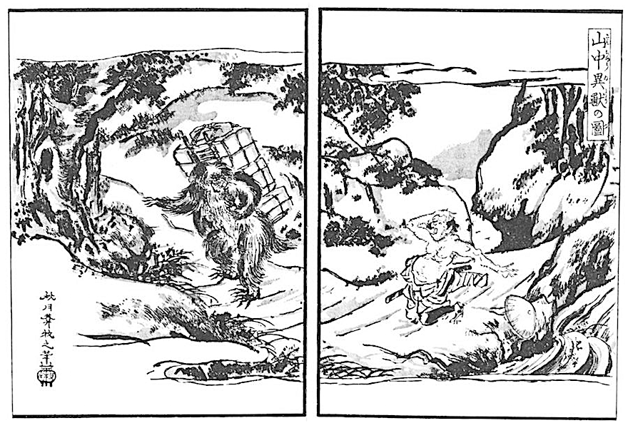
宝暦年中平賀
鳩渓（源内）火浣布を
創製し、
火浣布考を
著し、和漢の古書を引、本朝
未曾有の
奇工に
誇れり。
没してのち
其術つたはらず、
好事家の
憾事とす。しかるに我国
甞火浣布を
作るの
石を
産す、その
在る所は、○
金城山○
巻機山○
苗場山○
八海山その外にもあり。その石
軟弱して
爪をもつても
犯すべきほどの
軟なる石なり。いろは青く黒し、これをくだけば
石綿を
出す。此石を
得て
試みしに、石中に
在る
石綿といふものは、
木綿わたを
細く
紬たるを二三分ほどにちぎりたるやうなるものなり。
是を
紡績［＃「紡績」の左に「イトニスル」の注記］するに
秘術ありて火浣布を
造るなり、其秘術を
得ば小女子も火浣布を織るべし。
○さて
我駅中に稲荷屋喜右エ門といふもの、石綿を
紡績する事に
千思万
慮を
費し、
竟に
自その術を得て火浣布を織いだせり。又其頃我が
近村大沢村の医師黒田
玄鶴も同じく火浣布を織る術を
得たり。
各々秘してその術を人に伝へざるに、おなじ時おなじ村つゞきにておなじ火浣布の
奇工を
得たるも一奇事なり、是文政四五年の間の事なりき。此両人の
説をきゝしに
力をつくせば一丈以上なるをも
織うべし、しかれども其
機工容易ならずといへり。平賀源内は織こと五六尺に
過ずと
火浣布考にいへり。また玄鶴が源内にまさりたる事は、玄鶴は火浣布の外に
火浣紙火浣墨の二
種を
造れり。火浣墨を以て火浣紙に物をかき、
烈火にやけて火となりしをしづかにとりいだし、
火気さむれば紙も字ももとのごとし。しかれども其実用をいへば、火浣布も火浣紙も
火災の
供には
憑がたし、いかんとなれば、火に
遇ば
倶に火となり人ありて火中よりいださゞれば火と
倶に
砕けて
形をうしなふ、たゞ
灰とならざるのみなり。
翫具には用うる所さま／″＼あるべし。源内死して奇術
絶たりしに
件の両人いでゝ火浣布の
機術再世にいでしに、
嗚呼可惜、此両人も術をつたへずして
没したれば火浣布ふたゝび世に
絶たり。かの源内は江戸の
饒地に火浣布を
織しゆゑ其
聞え高く、この両人は越後の
辟境に火浣布をおりしゆゑ其名
低し、ゆゑにこゝにしるして好事家の一話に
供す。
弘智法印は児玉氏下総国
山桑村の人なり。高野山にありて
蜜教を学び、
後生国に
皈り大浦の蓮花寺に住し、
行脚して越後に来り、三嶋郡
野積村（里言のぞみ）海雲山西生寺の東、岩坂といふ所に
錫をとゞめて草庵をむすびしに、貞治二年癸卯十月二日此庵に
寂せり。
辞世とて
口碑につたふる哥に「岩坂の
主を
誰ぞと
人問ば
墨絵に
書し松風の音」
遺言なりとて
死骸を
不埋、今天保九をさる事四百七十七年にいたりて
枯骸生るが如し。是を越後廿四奇の一に
数ふ。此事
雑書に
散見すれども
図をのせたるものなし、ゆゑに図をこゝにいだす。此図は
余先年
下越後にあそびし時
目撃したる所なり。見る所たゞ面
部のみ、手足は見えず。寺法なりとて近く
観る事をゆるさず、
閉眼皺ありて
眠りたるが如し。
頭巾法衣はむかしのまゝにはあらざるなるべし。是、他国には聞ざる越後の一
奇跡なり。
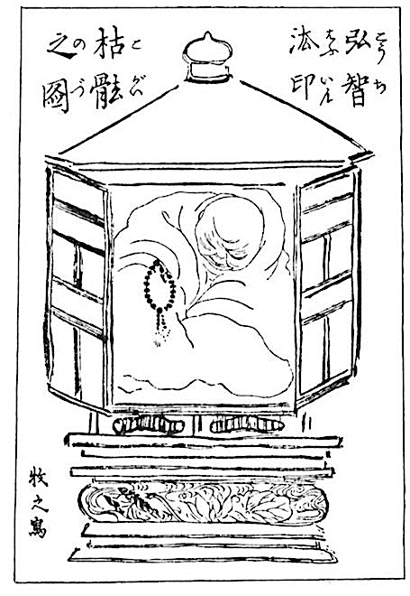
百樹曰、
唐土にも
弘智に
似たる事あり。唐の世の僧
義存没してのち
尸を
函中に
置、毎月其
徒これをいだし
爪髪の
長たるを
剪薙常とす。百余年を
経ても
廃せざりしが、
後国のみだれたるに
因てこれを
火葬せしとぞ。又
宋人彭乗が
作墨客揮犀に
鄂州の
僧无夢も
尸を
不埋、
爪髪の
長たる
義存に同じかりしが、婦人の手に
摸られしより爪髪のびざりしとぞ。事は
五雑組に
記して
枯骸の
確論あれども、
釈氏を
詰るに
似たる
説なればこゝに
贅せず。
（○高僧伝に義存がありしかと覚しが、さのみはとて詳究せず。）
蒲原郡五泉の
在一里ばかりに
下新田といふ村あり。或年此村の者ども
ありて阿加川の
岸を
掘しに、
土中より長さ三間ばかりの船を掘いだせり。
全体少しも
腐ず、
形今の船に
異るのみならず、
金具を用うべき処みな
鯨の
髭を用ひて
寸鉄をもほどこしたる処なし。木もまた何の木なるを
弁ずる者なく、おそらくは
異国の船ならんといへりとぞ。
余下越後に遊びし時、杉田村小野佐五右エ門が家にてかの船の木にて作りたる硯箱を見しに、
木質漢産ともおもはれき。上古漂流の
夷船にやあらん。
前にもいへる如く雪譜と
題するものに他事をいふは哥にいふ
落題なれど、雪はまた末にいふべし、
姑くおもひいだすにまかす。
○天保三年辰四月、我が
住塩沢の
中町に鍵屋某が家のほとりに
喬木あり。此
樹に
烏巣をむすび、
雛梢々頭をいだすころ、巣のうちに白き
頭の鳥を見る。主人
怪しみ人をして是を
捕へしめしに、
全身は
烏にして白く、
觜眼足は赤き
烏の
雛なり、人々
奇として
集り
観る。主人
俄に籠を作らせ心を
尽して
養ひ、やゝ長じて
鳴音も
烏に
異ならず、我が
近隣なれば朝夕これを
観たり。奇鳥なれば
乞ふ人も多く、江戸へ
出して
観物にせんなどいひしも有しが、主人をしみてゆるさず。かくて其冬雪中にいたり、山の
鼬狐など
餌に
乏く人家にきたりて食をぬすむ事雪中の常なれば、此ものゝ
所為にや、
籠はやぶれて
白烏は
羽ばかり
椽の下にありしときゝし。初編に
白熊の事を
載たるゆゑ、
白烏もまたこゝに
記しぬ。
文政十年亥の八月廿日隣駅六日町の
在、
余川村の農人太左エ門の
軒端に、両頭の蛇いでたるを
捕ふ。長さ一尺にたらず、その
頭二ツ
並びて枝をなすのみ。いろもかたちも常の蛇にかはらず。あるにまかせて古き箱にいれ、
餌もいれおきしに、二三日すぎていつ
逃ゆきしやあたりをたづねしかどをらざりしとぞ。
小千谷より西一里に
芳谷村といふあり、こゝに
郡殿の
池とて四方二三町斗の池ありて
浮嶋十三あり。晴天風なき時日
出れば十三の小嶋おの／＼
離散して池中に遊ぶが如し、日入れば池の
正中にあつまりて一ツの嶋となる。此池に種々の
奇異あれども
文多ければしるさず。羽州の浮嶋はものにも
記して人の知る処なれど、此うきしまはしる人まれなり。
小千谷の内農人
某の地面に小社あり石打明神といふ。昔より
祀る
処也、その
縁起は
聞もらせり。
贅肉あるもの此神をいのり、小石をもつていぼを
撫、社の
椽の下の
※子［＃「竹かんむり／隔」、U+25D29、300-3］の内へ
投いれおくに、日あらずしていぼのおつる事奇妙なり。さてなげいれたる小石、いかなる形なりともいつとなく人の
円めたるごとく
円石となるも又奇妙ふしぎなり。されば社のえんの下に大小の
円石満みちたり。
○百樹曰、余も小千谷に遊びし時、此石を視て話柄に一ツ持帰んとせしに、所の人のいふやう、此神是石を惜み玉ふといひつたふときゝて取たるをもとの処へかへし、つら／＼視たるに数万の石人の磨なしたる玉のごとし。凡神妙は肉知を以て測べからず。
百樹曰、
小千谷の
因にいふ、
余小千谷の
岩居が家に旅宿せし時
（天保七年八月）或日筆を
採に
倦、山水の
秋景を
観ばやとて
独歩いで、小千谷の前に流るゝ川に
臨岡にのぼり、用意したる
書をかく。
毛氈を
老樹の
下にしき
烟くゆらせつゝ
眺望ば、引舟は浪に
遡りてうごかざるが如く、
下る舟は
流に
順ふて
飛に
似たり。
行雁字をならべ
帰樵画をひらく。
群木は
少しく霜を
染て
紅々、
連山は
僅に雪を
載て
白々。
寒国の
秋景江戸の眼を
新になし、おもはず
一絶を
得などしてしばしながめゐたるをりしも、十六七の娘三人おの／＼
柴籠をせおひ山をのぼりてこゝにやすらひ、なにやらんものいひかはしてわらふをきく。
余は山水に目を
奪はれたるに「火をかしなされ」とて
烟管さしよせたる
顔を見れば、
蓬髪素面にて
天質の
艶色花ともいふべく玉にも
比すべし。
百結の
鶉衣此
趙璧を
羅む。
余愕然し山水を
棄て此娘を視るに
一揖して
去り、
樹の
下の草に
坐してあしをなげだし、きせるの火をうつしてむすめ三人ひとしく
吹烟。
双無塩独の
西施と
語るは
蒹葭玉樹によるが如く、
皓歯燦爛としてわらふは
白芙蓉の水をいでゝ
微風に
揺がごとし。
嗟乎惜べし、かゝる
美人も
是辺鄙に
生れ、
昏庸頑夫［＃「昏庸頑夫」の左に「バカナヤラウ」の注記］の妻となり、
巧妻常に
拙夫に
伴れて
眠り、
荊棘と
倶に
腐らん事
憐に
堪たり。
若江戸にいださば
朱門［＃「朱門」の左に「オヤシキ」の注記］に
解語［＃「解語」の左に「モノイフ」の注記］の花を
開、あるひは又
青楼［＃「青楼」の左に「ヨシハラ」の注記］に
揺泉樹［＃「揺泉樹」の左に「カネノナルキ」の注記］の
栄をなし、此
隣国出羽に
生れたる小野の小町が如く
美人の名をもなすべきに、此美人を此
僻地に
出すは
天公事を
解さゞるに似たりと
独歎息しつゝ
言んとししに、娘は
去来とてふたゝび柴籠をせおひうちつれて立さりけり。
目送て
顧、越後には
美人多しと人の
口実にいふもうべなり、是
無他なし、水によるゆゑなり。されば
織物の清白なる越後の
白縮に
勝れるはなし、ことさら此辺は
白縮を
産する所なり、以て其水の
至清なるをしるべし。
江河潔清なれば女に
佳麗多しと
謝肇がいひしも
理なりとおもひつゝ
旅宿に
帰り、
云々の事にて
美人を
視たりと
岩居に語りければ、岩居いふやう、
渠は人の知る美女なり、
先生を他国の人と
眼解欺てたばこの火を
借たるならん、
可憎々々「
否々にくむべからず、
吾たばこの火を
借て美人にえん
（烟縁）をむすびし」と
戯言ければ、岩居
手を拍て大に笑ひ、先生
誤り、かれは
屠者の娘なりと
聞て
再び
愕然［＃「愕然」の左に「ビツクリ」の注記］たり。
糞壌妖花を出すとはかゝる事にぞいひしなるべし。
○
再按に、小野の小町は
羽州の
郡司小野の
良実の
女なり、
楊貴妃は
蜀州の
司戸元玉が
女なり、和漢
倶に北国の田舎娘世に美人の名をつたふ。北方に
佳人ありといひしも、北は
陰位なれば女に
美麗を出すにやあらん。二代目の高尾は
（万治）野州に
生れ、初代の
薄雲は信州に
産して、ともに
北廓に名をなせり。されば越後に
件の美人を見しも北国なればなるべし。
文政八年乙酉十二月、
苅羽郡（越後）椎谷の
漁人（椎谷は堀侯の御封内なり）ある日椎谷の海上に
漁して一木の流れ
漂ふを見て薪にせばやとて
拾ひ取て家にかへり、水を
乾さんとて
庇に立寄おきしを、椎谷の好事家通りかゝり、是を見てたゞならぬ木とおもひ
熟視に、
蛾眉山下※［＃「木／喬」、302-12］といふ五大字刻しありしをもつてかの国の物とおもひ、
漁人には
薪を
与へて
乞ひうけけるとぞ。さて
余が
旧友観励上人は
（椎谷ざい田沢村浄土宗祐光寺）強学の
聞えあり、
甞て
好事の
癖あるを以てかの
橋柱の文字を
双鈎刊刻［＃「双鈎刊刻」の左に「カゴジホル」の注記］して
同好におくり且
橋柱に
題する
吟詠をこひ、是も又
梓にして世に
布んとせられしが、
故ありていまだ
不果。かの橋柱は
後に
御領主の
御蔵となりしとぞ。
椎谷は
余が
同国なれども幾里を
隔たれば其
真物を
不見、今に
遺憾とす。
姑伝写の
図を以てこゝに
載つ。
（○百樹曰、牧之翁が此草稿にのせたる図を見るに少しくおもふ所有しゆゑ、其実説を詳究せし事左の如し。）
百樹曰、
了阿上人が和哥の友相場氏は
椎谷侯の
殿人ときゝて、上人の
紹介をもつて相場氏に対面して
件の
橋柱の事を
尋ねしに、
余に
謂しは、橋柱にはあらず
標準なりとて、俗に
書翰といふ物に作りたるを出して
其図を示さる。余が友の画人
千春子が
真物を
傍におきて
縮図なし、
蛾眉山下※［＃「木／喬」、303-8］といふ五字は相場氏みづから心を
深めてうつされしとぞ。
（下に図するこれなり）彫たる人の
頭を左りに
顧せ、その
下に五字を
彫つけしは、是より左り
蛾眉山下橋なりと人にをしゆる
標準なりとかたられき。是にて
義理渙然［＃「渙然」の左に「ワカル」の注記］たり。今俗に
指をゑがきてそのしたにをしゆる所を
記したるを
間みる事あり、和漢の俗情おなじ事なり。
○さて此
標準を
得たる
実事をきゝしに、北海はいづれの所も冬にいたれば常に北風
烈しく
礒へ物をうちよする、
椎谷はたきものにとぼしき所ゆゑ
貧民拾ひ取りて
薪となす事常なり。しかるに文政八酉の十二月、
例の如く薪を拾ひに出しに、物ありて
柱のごとく浪に
漂ふをみれば人の
頭とみゆる物にて甚
兇悪なり。
貧民等惧れてたちさり、ものゝかげより見居たるに、此もの
竟に
礒にうちあげられしを見て人々立よりみたるに、文字はあれども
読者なく、是は何ものならんとさま／″＼
評し
居たるをりしも、こゝに
近き
西禅院の
童僧通りかゝり、
唐詩選にておぼえたる
蛾眉山の文字を
読、これは
唐土の物なりときゝて
貧民拾ひて持かへり、さすがに
唐土の物ときゝて
薪にもせざりしに、此事
閧伝［＃「閧伝」の左に「マチノウハサ」の注記］して
竟に
主君の
蔵となりしと
語られき。
 縮図左のごとし。丈一丈余、周二尺五寸余。木質弁名べからず。
縮図左のごとし。丈一丈余、周二尺五寸余。木質弁名べからず。
○
按るに、蛾眉山は唐土の北に
在る
峻岳にて、富士にもくらぶべき高山なり。
絶頂の
峯双立て八字をなすゆゑ、
蛾眉山といふなり。此山の
標準、
日本の北海へながれきたりたる其
水路を
詳究［＃「詳究」の左に「ツマヒラカニキハムル」の注記］せんとて「
唐土歴代州郡沿革地図」に
拠て
清国の
道程図中を
 ［＃「」の左に「アラタムル」の注記］
［＃「」の左に「アラタムル」の注記］するに、蛾眉山は
清朝の
都を
距こと日本道四百里
許の北に在り、此山に遠からずして
一条の大河東に
流。蛾眉山の
麓の河々皆此大河に入る。此大河
瀘州を流れ三
峡のふもとを
過ぎ、
江漢に
至り
荊州に入り、○
洞庭湖○
赤壁○
潯陽江○
楊子江の四大
江に
通じて
江南を
流湎りて東海に入る。
是水路日本道五百里ばかりなり。さて
件の
標準洪水にてや水に入りけん、○
洞庭○
赤壁○
潯陽○
楊子の海の如き四
大江を
蕩漾周流［＃「蕩漾周流」の左に「ナガレシダイメグリナガレ」の注記］して
朽沈ず。
滔々たる
水路五百
余里を
流れて東海に入り、
巨濤［＃「巨濤」の左に「オホナミ」の注記］に千
倒し風波に万
顛すれども
断折［＃「断折」の左に「ヲレル」の注記］砕粉［＃「砕粉」の左に「クダケル」の注記］せず、
直身［＃「直身」の左に「ソノミ」の注記］挺然［＃「挺然」の左に「ソノマヽ」の注記］として我国の
洋中に
漂ひ、北海の地方に
近より、
椎谷の
貧民に
拾れて
始て水を
辞れ、
既に一
燼の薪となるべきを、幸に
字を
識者に
遇ひて
死灰をのがれ、
韻客の
為に
題詠の
美言をうけたるのみならず、
竟には
椎谷侯の
愛を
奉じて身を
宝庫に安んじ、
万古不朽の
洪福を
保つ
奇妙
不思議の天幸なれば、
実に
稀世の
珍物なり。
按ずるに、
蛾蛾同韻（五何反）なれば
相通じて
往々書見す。
橋を
※［＃「木／喬」、305-9］に作る
頗る
異体なり。
依て
明人黄元立が
字考正誤、
清人顧炎武が
亭林遺書中に
在る金石文字記あるひは
碑文摘奇（藤花亭十種之一）あるひは
楊霖竹菴が古今
釈疑中の
字体の
部など
通巻一
遍捜索［＃「捜索」の左に「サガス」の注記］したれども
※［＃「木／喬」、305-11］の字なし。
蛾眉山のある
蜀の
地は都を
去る事
遠き
僻境なり。
推量するに、
田舎の
標準なれば
学者の
書しにもあるべからず、
俗子の筆なるべし。されば
我今の
俗竹を※
［＃「にんべん＋竹のつくり」、305-13］と

に
誤の
類か、
猶博識の
説を
俟つ。
苗場山は越後第一の高山なり、
（魚沼郡にあり）登り二里といふ。
絶頂に
天然の
苗田あり、依て昔より山の名に
呼なり。
峻岳の
巓に苗田ある事甚奇なり。
余其奇跡を尋んとおもふ事
年ありしに、文化八年七月
偶おもひたちて友人四人
（●嘯斎●斎●扇舎●物九斎）従僕等に食類其外用意の物をもたせ、同月五日未明にたちいで、其日は三ツ
俣といふ
駅に宿り、次日暁を
侵して此山の神職にいたり、おの／＼
祓をなし案内者を
傭ふ。案内は白衣に
幣を
捧げて先にすゝむ。
清津川を
渉りやがて
麓にいたれり。
巉道を
踏嶮路に登るに、
掬樹森列して日を
遮り、
山篠生ひ
茂りて
径を
塞ぐ。
枯たる老樹折れて
路に
横りたるを
踰るは臥竜を踏がごとし。
一条の
渓河を
渉り猶登る事半里
許、右に折れてすゝみ左りに
曲りてのぼる。
奇木怪石千態万
状筆を以ていひがたし。
已に
半途にいたれば鳥の声をもきかず、
殆東西を
弁じがたく道なきがごとし。案内者はよく知りてさきへすゝみ、
山篠をおしわけ
幣をさゝげてみちを
示す。
藤蔓笠にまとひ、
※竹［＃「林／取」、U+6A37、308-11］身を
隠し、石高くして
径狭く、一歩も
平坦のみちをふまず。やう／＼午すぐる頃山の半にいたり、
僅の平地を
得て用意したる
臥座を
木蔭にしきて食をなし、
暫く
憇てまたのぼり／＼て
神楽岡といふ所にいたれり。これより他木さらになく、俗に唐松といふもの風にたけをのばさゞるが
稍は雪霜にや
枯されけん、
低き森をなしてこゝかしこにあり。またのぼり少しくだりて御
花圃といふ所、山桜
盛にひらき、百合・桔梗・石竹の花などそのさま人の
植やしなひしに
似たり。
名をしらざる
異草もあまたあり、案内者に問へば薬草なりといへり。またのぼりゆき／＼て
桟※［＃「齒＋彦」、U+9F74、309-3］なる道にあたり、岩にとりつき竹の根を
力草とし、一歩に一声を
発しつゝ気を張り
汗をながし、千
辛万
苦しのぼりつくして馬の
背といふ所にいたる。左右は千丈の谷なり、ふむ所
僅に二三尺、
一脚をあやまつ時は身を
粉砕になすべし。おの／＼
忙怕あゆみて
竟に
絶頂にいたりつきぬ。
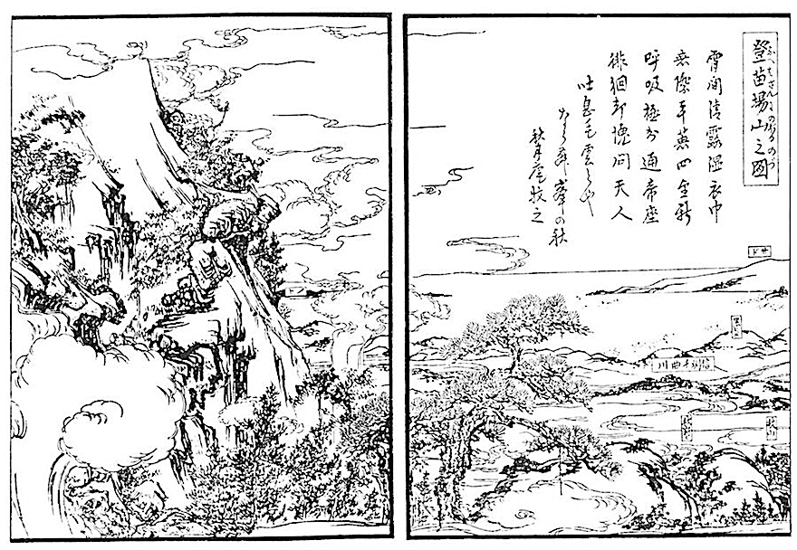
○
偖同行十二人、まづ草に
坐して
憇ふ時、
已に
下なり。はじめ案内者のいひしは登り二里の
険道なれば、一日に
往来することあたはず、
絶頂に小屋在、こゝにのぼる人必その小屋に一宿する事なりといへり。今その小屋をみれば木の
枝、山さゝ、
枯草など取りあつめ、ふぢかつらにて
匍匐入るばかりに作りたるは、
野非人のをるべきさまなり。こゝを今夜のやどりにさだめたるもはかなしとて、みな／＼笑ふ。
僕どもは
枯枝をひろひ石をあつめて
仮に
をなし、もたせたる食物を
調ぜんとし、あるひは水をたづねて茶を
烹れば、上戸は酒の
燗をいそぐもをかし。さて
眺望ば越後はさら也、
浅間の
烟をはじめ、信濃の連山みな
眼下に
波濤す。
千隈川は白き糸をひき、佐渡は青き
盆石をおく。能登の
洲崎は
蛾眉をなし、越前の遠山は
青黛をのこせり。こゝに
眼を
拭て
扶桑第一の富士を
視いだせり、そのさま雪の
一握りを
置が如し。人々手を
拍、奇なりと
呼び妙なりと
称讃す。千
勝万
景応接するに
遑あらず。
雲脚下に
起るかとみれば、
忽晴て
日光眼を
射る、身は天外に在が如し。
是絶頂は
周一里といふ。
莽々［＃「莽々」の左に「ノヒロキ」の注記］たる
平蕪高低の所を
不見、山の名によぶ
苗場といふ所こゝかしこにあり。そのさま人のつくりたる田の如き中に、人の
植たるやうに苗に
似たる草
生ひたり、
苗代を
半とりのこしたるやうなる所もあり。これを奇なりとおもふに、此田の中に
蛙 螽
螽もありて常の田にかはる事なし、又いかなる日てりにも
田水枯ずとぞ。二里の
巓に此
奇跡を
観ること甚
不思議の
山なり。案内者いはく、御
花圃より
（まへにいひたる所）別に
径ありて
竜岩窟といふ所あり、
窟の内に
一条の清水ながれそのほとりに古銭多く、
鰐口二ツ掛りありて神を
祀る。むかしより
如斯といひつたふ。このみち今は草木に
塞れてもとめがたしといへり。
絶頂にも石に
刻して
苗場大権現とあり、案内者は此石人作にあらず、天然の物といへり。俗伝なるべし。こゝかしこ見めぐるうち日すでにくれて小屋に入り、内には
挑燈をさげてあかりとし、外には火を焼てふたゝび食をとゝのへ、ものくひて酒を
酌。六日の月
皎々とてらして
空もちかきやうにて、
桂の
枝もをるべきこゝちしつ。人々
詩を
賦し哥をよみ、俳句の
吟興もありてやゝ時をうつしたるに、寒気次第に
烈しく、用意の綿入にもしのぎかねて
終夜焼火にあたりて
夢もむすばず、しのゝめのそらまちわびしに、はれわたりたればいざや御
来迎を
拝たまへと案内がいふにまかせ、
拝所にいたり日の
昇を
拝し、したくとゝのへて山をくだれり。
（別に紀行あり、こゝには其略をいふのみ。）
○
百樹曰、
余越遊したる時、
牧之老人に此山の地勢を委しくきゝ
真景の
図をも
視たるに、
巓の
平坦なる
苗場の
奇異、
竜岩窟の
古跡など水にも自在の山なれば、おそらくは上古人ありて此山をひらき、
絶頂を
平坦になし、馬の
背の
天険をたのみてこゝに住居し
耕作をもしたるが、
亡びてのち其
魂こゝにとゞまりて
苗場の
奇異をもなすにやと
思へり。
国史を
捜究［＃「捜究」の左に「サガシキハム」の注記］せば其
徴する
端をも
得べくや、
博達の
説を
聞ん。
我国冬はさらなり、春になりても二月頃までは
雨降る事なし、雪のふるゆゑなるべし。春の
半にいたれば小雨ふる日あり、此時にいたれば晴天はもとより、雨にも風にも去年より
積雪しだい／＼に
消るなり。されども
家居などは
乾に
（北東の間）あたる方はきゆる事おそし。山々の雪は
里地よりもきゆる
おそけれども、
春陽の
天然につれて
雪解に水
増て川々に
水難の
患ある事年々なり。春のすゑにいたれば、人の
住あたりの雪は
自然にきゆるをまたずして
家毎に雪を
取捨るに、あるひは雪を籠にいれてすつるもあり、あるひは
鋸にて雪を
挽割てすてもし、又は
日向の所へ
材木のごとくつみかさねておくもあり。かやうにすればきゆることはやきゆゑなり。
（少しの雪は土をかけ又は灰をかくればはやくきゆ）そも／＼去年冬のはじめより雪のふらざる日も
空曇りて
快く
晴たるそらを見るは
稀にて、雪に
家居を
降埋められ手もとさへいとくらし。是に
生れ是に
慣て、年々の
なれども雪にこもりをるはおのづから
朦然として心たのしからず。しかるに春の半にいたり
雪囲を
取除れば、日光明々としてはじめて
人間世界へいでたるこゝちぞせらる。
一年夏の頃、江戸より来りたる
行脚の
俳人を
停おきしに、
謂やう、此国の所々にいたり見るに
富家の
庭には手をつくしたるもあれど、
垣はいづれも
粗略にて
仮初に作りたるやうなり、いかなるゆゑにやといふ。
答ていふ、いぶかり給ふもことはりなり、かりそめに作りおくは雪のゆゑなり。いかんとなればいかほどつよく作るとも一丈のうへこす雪におし
崩るゝゆゑ、かろくつくりおきて雪のはじめには此垣をとりのくるなりと語りし事ありき。されば三月の末にいたれば我さきにと此垣を作る事なり。さて又雪中は
馬足もたゝず
耕作もせざれば、馬は
空く
厩にあそばせおく事
凡百日あまり也。
（我国に牛のみつかふ所もあり）雪きゆるの時にいたれば馬もよくしりてしきりに
嘶き
路にいでんとする心あり、人も又久しくちゞめたる足をのばさせんとて
厩をひきいだせばよろこびてはねあがりなどするを、
胴縄ばかりの
 馬
馬に
跨り雪消の所にはしらす。此馬冬こもりの
飼やうによりて
痩ると
肥るありて、やせたるは馬
主の
貧さもしるゝものなり。馬のみにあらず、
童どもゝ雪のはじめより
外遊する事ならざりしに、夏のはじめにいたりてやう／＼
冬履稿沓をすてゝ
草履せつたになり、
凧などにかけはしるはさもこそとうれしさうなれ。桃桜も此ころをさかりにて雪に
世外の花を
視るなり。

天保七年丙申の春、我が
郡中小千谷の
縮商人
芳沢屋東五郎
俳号を二松といふもの、商ひの
為西国にいたり
或城下に
逗留の間、旅宿の
主がはなしに、此近在の
農人おのれが田地のうちに
病鶴ありて
死にいたらんとするを見つけ、
貯たる
人参にて鶴の病を
養しに、日あらず
病癒て飛去りけり。さて翌年の十月鶴二羽かの
農人が家の
庭ちかく
舞くだり、稲二
茎を
落し一
声づゝ
鳴て飛さりけり。
主人拾ひとりて見るにその
丈六尺にあまり、
穂も是につれて長く、
穂の一
枝に稲四五百粒あり。主人おもへらく、さては去年の
病鶴恩に
報んため
異国より
咥えきたりしならん、何にもあれいとめづらしき稲なりとて
領主に
奉りけるに、しばらくとゞめおかれしのちそのまゝ
主にたまはり、よくやしなへとおほせによりて
苗のころにいたり心をつくして
植つけけるに、鶴があたへしにかはらずよく
生ひいでければ、
国の
守へも奉りしとかたれり。東五郎猶その村その人をも
尋きけば、鶴を
助けたる人は東五郎が
縮を売たる家なれば、すぐさまその家にいたり
猶委く聞て、さて国の
土産にせん、
穀を一二粒
賜はれかしと
乞ければ、あるじ越後は米のよき国ときけばことさらに
生ひなんとて、もみ五六十粒
与へたるを国へ持かへりて事の
来由を申て
邦君に奉りしを、 御城内に植しめ玉ひ、東五郎へ 御
褒賞など在しと小千谷の人その
頃物がたれり。おもふに
余がごとき
賤農もかゝるめでたき
御代に生れたればこそ
安居してかゝる筆も
採なれ。されば千年の
昌平をいのりて鶴の
話に筆をとゞめつ。猶雪の
奇談他事の
珎説こゝに
漏したるも
最多ければ、
生産の
暇ふたゝび
編を
嗣べし。
北越雪譜二編 四巻大尾
［＃改丁］
＊１ 「許鹿君」古河の城主土井大炊頭利位の号、利位は下総古河藩第十世の藩主である。寛政六年（一七八九）土井利徳の男として生れた。文政五年に養父利厚の職を襲ぎ大炊頭に任ぜられた。同八年に社寺奉行となり、同十二年に病の為め職を免ぜられた。天保二年に再任し、同五年に大阪城代となつた。天保八年には京都所司代となり、翌年には老中となつた。弘化元年に病の為め老中を免ぜられ雁間席を命ぜられた。嘉永元年（一八四八）卒去した。利位はその臣鷹見忠常と共に雪華を詳細に検鏡し、天保三年には雪華図説を、天保十一年には続雪華図説を著はし、手版として刊行した。
＊２ 「用意したる所の雪を尺をもつて量りしに」の雪と尺との間の『を』字は誤まつて挿入したものと思ふ。即ち「用意したる所の雪尺をもつて量りしに」とあるべきかと思はれる。
＊３ 「妙法寺の火」妙法寺村は如法寺村のことである。本書二五九頁に「蒲原郡如法寺村」とある。同村では天然のメタン瓦斯が地中より吹き出すところがあつて、之を竹管で室内に導き、炉の一隅に置いてある石臼の孔から吹き出さし、夫れに点火して炭火の代用とする。石臼の孔には細い竹管を挿み、夫れから瓦斯が出る様にしたものである。越後では如法寺村に限らず諸所に同様の天然瓦斯の出るところがあり、また之を利用してゐる。
＊４ 「破目山」は「ワリメキ」と云ふのが正しい。
＊５ 「二万四千四百八十四度」は二万四千八百四十度の誤算。
＊６ 「ようちなつた」は「よう来なすつた」と云ふこと、「能くお出でなさつた」の意。
＊７ 「黒駒太子と称する画軸」は聖徳太子が黒馬に跨がり、雲に乗つて昇天するのを、曾我の馬子等が見上げてゐる図の画幅。
＊８ 「やぶつの橋」は矢櫃橋のこと。
＊９ 京山翁の雨の氷りて垂氷となつた談は、気象学上から判断すれば、「雨氷」と云ふ現象であると思ふ。雨氷は過冷却をした雨滴が降り、氷点以下に冷えてる樹枝や地物に当つて氷り着いたものに外ならない。垂氷と現象は似てゐるが成因は全く異なつてゐる、漢籍には「雨淞」とある。仏語の verglas、英語の glazed frost に当る。
＊10 「シガ」は気象学で云ふ「霧氷」のことである。多くの場合過冷却せる霧なぞがこれも寒冷な樹枝や地物に吹き附けて氷り着いたものである。「シガ」は遼東あたりでは「樹掛」と云ふから、夫れから転じたものと思ふ。仏語の givre、英語の silver thaw に当る。
＊11 「佐浦詣堂押図」とあるは「浦佐詣堂押図」の誤記。
＊12 「春暉の西遊記」とある春暉は橘春暉のことである。本名は宮川春暉。南谿はその号。宝暦四年生る。伊勢の人、同国久居の藤堂氏に仕へた。南谿は医を業としたが、修業と行遊との為め諸国を遊歴し、寛政七年より同十二年に亙る間、東遊記及西遊記を著述した。又文政八年に北窓瑣談を著した。文化三年歿す。享年五十三であつた。京都黒谷の光明寺に葬むつた。
この註解を書くに当り、理学博士朝比奈貞一君が「天気と気候」の昭和十一年刊に連載せられた「北越雪譜を読みて」と題する名篇に負ふところが多い。記して感謝の意を表はす。
（岡田武松）
［＃改丁］
本書の著作者鈴木
牧之翁は、明和七年正月七日に、越後の国の塩沢に生れた、塩沢は今日の新潟県南魚沼郡塩沢町である、幼時は弥太郎と云つたが、大きくなつてから、儀三治と改めた、翁の父は、質屋と縮布の仲買を営んでゐた、さうして渡世の傍に、俳諧に遊び、周月庵牧水と号してゐた、翁の牧之と云ふ号は、父の牧水の一字を採つたのである、牧之翁は幼時から英敏であつた、大運寺の快運法師に師事して経書を学び、詩は徳昌寺の虎斑禅師に就て学んだ、翁はまた幼時より画を狩野梅笑に学んで、凡んど画師に近いまでの腕前になつてゐた、北越雪譜の挿画の如きは、原図は大部分翁自ら画いたものである、壮年の頃から、既に風流韻事を解し、諸芸百般に通じてゐたから、交遊は甚だ広かつた、殊に当時の一流の文士であつた馬琴、真顔、六樹園、蜀山人、京伝、京山、一九、三馬、玉山なぞと親交あり、漢学者の鵬斎なぞとも交を訂し、画家では文晁、北斎なぞとも懇意であつた、その外に、名優団十郎、名妓花扇とも往復をしてゐた、元来北越の田舎に多く在住し、商用にて時折上京し、寸※
［＃「日＋閑」、U+2D9F4、321-12］を割いては是等の名流を訪れたのである、然し交通の不便な時代にさう頻繁に上京は出来なかつたから、多くは書簡の往復での交りが多かつた、翁はその往復の書簡を丁寧に蒐集して「筆かゞみ」と名づけて珍蔵して居られた。
翁も代々の家業であつた質屋を渡世とし、且つ縮の仲買をしてゐたが、文雅の士であつたにも関はらず商法には非常に熱心で勤倹力行大に家道を興こされた、平生東照公や楽翁公の為人を景慕し、専ら堪忍を旨として居られた、平生は粗衣粗食に甘じ、寸※
［＃「日＋閑」、U+2D9F4、322-5］を惜み大小となく雅俗の用事を果された、壮年の頃から禁酒をされて、永眠されるまで酒杯を手にされなかつた、翁はまた頗る器用な質であつて、書画の表装から家具の繕ひまで皆な自分でやり、敢て専門の職を煩はすことは凡んどなかつた、現に翁の生家には翁が自画の軸物を自ら表装されたものが残つてゐる、夫を見ると全く経師職の手に成つたとしか思へない様に巧に出来てゐる、翁はまた無駄なことをするのが大嫌ひであつた、紙片と雖も棄てず、詩歌俳句の類の稿案には之を用ゐた、さうかと云つて翁は無暗に財蓄一方の人ではなかつた、私財を公共の事業に投ずることが、屡

あつたので、官から度々その篤行を賞せられた。
翁の著作は少くないが、天保六年に北越雪譜の初編を刊行し、天保十一年に二編を刊行した、文政年間には庚申帳と秋山紀行を著述し、文政四年には秋月庵発句集を、文政十三年には広大寺踊を、天保四年には夜職草を著述した、特に庚申帳は、庚申の宵待ちに集まつた人々の談話を記るしたもので、当時の風俗習慣等があり／＼と描かれてあるのだが、今日では巻秩が逸散して、完全に保存されてゐないのは甚だ惜しい。
牧之翁は、知命の頃に、耳疾を患ひ、殆んど聾となり、螺貝を耳に当て、聴声器としてゐた、翁の戯号の螺耳はこれから来てゐる、耳の悪るいと云ふ外には老年になつて中風の気があり、天保七年の夏中風再発して、湯治なぞ種々治療につとめられたが、遂に天保十三年五月十五日に病の為めに、永眠された、享年七十三である、郷里の長恩寺に葬られてゐる、法号は金誉志剛性温居士と云ふ、本書の口絵は、井口喜夫氏作の翁の木像の写真である、この木像は現に長恩寺に安置してある、翁の後は勘右衛門、文太郎、常平の三氏を経て現戸主雄太郎氏に至つてゐる。
北越雪譜は、初編上中下三冊、二編春夏秋冬四冊都合七冊から成つてゐる、翁は三編以下も編述するつもりであつたことは、二編に載つてゐる京山の序文からも窺はれるが、翁は遂にその志を果さずして逝かれたのだ、雪譜の初編の上巻は天保六年の刊行で、下巻は七年九月の発兌である、発行の書肆は江戸文渓堂であつた、翁は稿本の刪作を山東京山に依頼し、挿画は翁が自筆のものを京山の子の京水が画き直したものだと云ふ、又雪譜の二編の春の巻は天保十一年に刊行し、冬の巻は天保十三年に発行した、板元は初編のときと同様である、明治の初年に多少の刪補を加へたものが東京市麻布区飯倉五丁目の山口屋書店より出版になつてゐる、本文庫に収むるものは天保の初版に拠れるものである、只巻中俗字を用ゐてあるを少しく正し、二之巻とあつたり巻之二とあつたりするのを一つに統一した、その他は全く原著の忠実なる翻刻である、尤も巻中にある句読点は皆な新たに附けたものである。
北越雪譜の著作とその出版に就ては、大正十年七・八月に北越新報紙上に二十五回に亙り連載せられたる春城学人市島謙吉先生の随筆「京山と牧之」に詳細に出てゐるから、茲には述べる必要がない、昭和二年早稲田大学出版部から出た随筆春城六種には、この北越新報に掲げられたものが大に点刪せられて「北越雪譜の出版さるゝまで」といふ題で載つてゐる。
此解説は畏友泉末雄氏の手記を資料として書き下したものである、同氏は老生の依頼によつて親しく牧之翁の生家を訪れ土地の博識家に示教を請ひ、就中鈴木家の現主雄太郎氏、塩沢町役場助役田村伝三郎氏、塩沢町誌編纂委員原沢米吉氏等の高説を総合し、南魚沼郡誌、北越名流遺芳等の書物を参考とせられたところが非常に多い、牧之翁の遠孫である鈴木卯三郎氏は種々の参考文献を貸与せられ、岩波書店編輯部の長谷川覚氏は本書の句点を附けるのにお骨折り下され、又参考資料をお集め下だすつた、茲に由来を記るして是等諸君士に厚く感謝の意を表はす。
昭和十年十一月二十九日夜
岡田武松
しるす